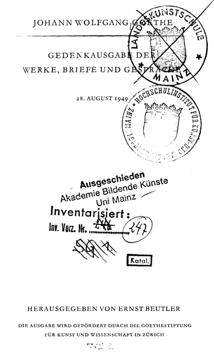

Gedenkausgabe der Werke, Briefe und Gespräche
Erster Teil: Ausgabe letzter Hand
28. August 1949
Die Ausgabe wird gefördert durch die Goethestiftung
für Kunst und Wissenschaft in Zürich
Artemis-Verlag Zürich
Wie nimmt ein leidenschaftlich Stammeln
Geschrieben sich so seltsam aus!
Nun soll ich gar von Haus zu Haus
Die losen Blätter alle sammeln.
Was eine lange, weite Strecke
Im Leben voneinander stand,
Das kommt nun unter Einer Decke
Dem guten Leser in die Hand.
Doch schäme dich nicht der Gebrechen,
Vollende schnell das kleine Buch;
Die Welt ist voller Widerspruch,
Und sollte sichs nicht widersprechen?
Dichter lieben nicht zu schweigen,
Wollen sich der Menge zeigen.
Lob und Tadel muß ja sein!
Niemand beichtet gern in Prosa;
Doch vertraun wir oft sub Rosa
In der Musen stillem Hain.
Was ich irrte, was ich strebte,
Was ich litt und was ich lebte,
Sind hier Blumen nur im Strauß;
Und das Alter wie die Jugend,
Und der Fehler wie die Tugend
Nimmt sich gut in Liedern aus.
Als ich noch ein Knabe war,
Sperrte man mich ein,
Und so saß ich manches Jahr
Über mir allein
Wie in Mutterleib.
Doch du warst mein Zeitvertreib
Goldne Phantasie,
Und ich ward ein warmer Held,
Wie der Prinz Pipi,
Und durchzog die Welt.
Baute manch kristallen Schloß
Und zerstört' es auch,
Warf mein blinkendes Geschoß
Drachen durch den Bauch,
Ja, ich war ein Mann!
Ritterlich befreit' ich dann
Die Prinzessin Fisch;
Sie war gar zu obligeant,
Führte mich zu Tisch,
Und ich war galant.
Und ihr Kuß war Götterbrot,
Glühend wie der Wein.
Ach! ich liebte fast mich tot!
Rings mit Sonnenschein
War sie emailliert.
Ach! wer hat sie mir entführt?
Hielt kein Zauberband
Sie zurück vom schnellen Fliehn?
Sagt, wo ist ihr Land?
Wo der Weg dahin?
Nach Mittage saßen wir
Junges Volk im Kühlen;
Amor kam, und Stirbt der Fuchs
Wollt er mit uns spielen.
Jeder meiner Freunde saß
Froh bei seinem Herzchen;
Amor blies die Fackel aus,
Sprach: Hier ist das Kerzchen!
Und die Fackel, wie sie glomm,
Ließ man eilig wandern,
Jeder drückte sie geschwind
In die Hand des andern.
Und mir reichte Dorilis
Sie mit Spott und Scherze;
Kaum berührt mein Finger sie,
Hell entflammt die Kerze,
Sengt mir Augen und Gesicht,
Setzt die Brust in Flammen,
Über meinem Haupte schlug
Fast die Glut zusammen.
Löschen wollt ich, patschte zu,
Doch es brennt beständig;
Statt zu sterben, ward der Fuchs
Recht bei mir lebendig.
Sah ein Knab ein Röslein stehn,
Röslein auf der Heiden,
War so jung und morgenschön,
Lief er schnell, es nah zu sehn,
Sahs mit vielen Freuden.
Röslein, Röslein, Röslein rot,
Röslein auf der Heiden.
Knabe sprach: Ich breche dich,
Röslein auf der Heiden!
Röslein sprach: Ich steche dich,
Daß du ewig denkst an mich,
Und ich wills nicht leiden.
Röslein, Röslein, Röslein rot,
Röslein auf der Heiden.
Und der wilde Knabe brach
's Röslein auf der Heiden;
Röslein wehrte sich und stach,
Half ihm doch kein Weh und Ach,
Mußt es eben leiden.
Röslein, Röslein, Röslein rot,
Röslein auf der Heiden.
O liebliche Therese!
Wie wandelt gleich ins Böse
Dein offnes Auge sich!
Die Augen zugebunden,
Hast du mich schnell gefunden,
Und warum fingst du eben mich?
Du faßtest mich aufs beste
Und hieltest mich so feste,
Ich sank in deinen Schoß.
Kaum warst du aufgebunden,
War alle Lust verschwunden,
Du ließest kalt den Blinden los.
Er tappte hin und wider,
Verrenkte fast die Glieder,
Und alle foppten ihn.
Und willst du mich nicht lieben,
So geh ich stets im Trüben,
Wie mit verbundnen Augen, hin.
Hab oft einen dumpfen düstern Sinn,
Ein gar so schweres Blut!
Wenn ich bei meiner Christel bin,
Ist alles wieder gut.
Ich seh sie dort, ich seh sie hier
Und weiß nicht auf der Welt,
Und wie und wo und wann sie mir,
Warum sie mir gefällt.
Das schwarze Schelmenaug dadrein,
Die schwarze Braue drauf,
Seh ich ein einzigmal hinein,
Die Seele geht mir auf.
Ist eine, die so lieben Mund,
Liebrunde Wänglein hat?
Ach, und es ist noch etwas rund,
Da sieht kein Aug sich satt!
Und wenn ich sie denn fassen darf
Im luftgen deutschen Tanz,
Das geht herum, das geht so scharf,
Da fühl ich mich so ganz!
Und wenns ihr taumlig wird und warm,
Da wieg ich sie sogleich
An meiner Brust, in meinem Arm;
's ist mir ein Königreich!
Und wenn sie liebend nach mir blickt
Und alles rund vergißt,
Und dann an meine Brust gedrückt
Und weidlich eins geküßt,
Das läuft mir durch das Rückenmark
Bis in die große Zeh!
Ich bin so schwach, ich bin so stark,
Mir ist so wohl, so weh!
Da möcht ich mehr und immer mehr,
Der Tag wird mir nicht lang;
Wenn ich die Nacht auch bei ihr wär,
Davor wär mir nicht bang.
Ich denk, ich halte sie einmal
Und büße meine Lust;
Und endigt sich nicht meine Qual,
Sterb ich an ihrer Brust!
An dem reinsten Frühlingsmorgen
Ging die Schäferin und sang,
Jung und schön und ohne Sorgen,
Daß es durch die Felder klang,
So la la! le ralla!
Thyrsis bot ihr für ein Mäulchen
Zwei, drei Schäfchen gleich am Ort.
Schalkhaft blickte sie ein Weilchen,
Doch sie sang und lachte fort,
So la la! le ralla!
Und ein andrer bot ihr Bänder,
Und der dritte bot sein Herz;
Doch sie trieb mit Herz und Bändern
So wie mit den Lämmern Scherz,
Nur la la! le ralla!
Bei dem Glanze der Abendröte
Ging ich still den Wald entlang,
Damon saß und blies die Flöte,
Daß es von den Felsen klang,
So la la!
Und er zog mich, ach, an sich nieder,
Küßte mich so hold, so süß.
Und ich sagte: Blase wieder!
Und der gute Junge blies,
So la la!
Meine Ruhe ist nun verloren,
Meine Freude floh davon,
Und ich höre vor meinen Ohren
Immer nur den alten Ton,
So la la, le ralla!
usw.
Mein Mädchen ward mir ungetreu,
Das machte mich zum Freudenhasser;
Da lief ich an ein fließend Wasser,
Das Wasser lief vor mir vorbei.
Da stand ich nun, verzweiflend, stumm,
Im Kopfe war mirs wie betrunken,
Fast wär ich in den Strom gesunken,
Es ging die Welt mit mir herum.
Auf einmal hört ich was, das rief –
Ich wandte just dahin den Rücken –
Es war ein Stimmchen zum Entzücken:
»Nimm dich in acht! der Fluß ist tief.«
Da lief mir was durchs ganze Blut,
Ich seh, so ists ein liebes Mädchen;
Ich frage sie: Wie heißt du? »Käthchen!«
O schönes Käthchen! Du bist gut.
Du hältst vom Tode mich zurück,
Auf immer dank ich dir mein Leben;
Allein das heißt mir wenig geben,
Nun sei auch meines Lebens Glück!
Und dann klagt ich ihr meine Not,
Sie schlug die Augen lieblich nieder;
Ich küßte sie und sie mich wieder,
Und – vor der Hand nichts mehr von Tod.
Durch Feld und Wald zu schweifen,
Mein Liedchen wegzupfeifen,
So gehts von Ort zu Ort!
Und nach dem Takte reget,
Und nach dem Maß beweget
Sich alles an mir fort.
Ich kann sie kaum erwarten,
Die erste Blum im Garten,
Die erste Blüt am Baum.
Sie grüßen meine Lieder,
Und kommt der Winter wieder,
Sing ich noch jenen Traum.
Ich sing ihn in der Weite,
Auf Eises Läng und Breite,
Da blüht der Winter schön!
Auch diese Blüte schwindet,
Und neue Freude findet
Sich auf bebauten Höhn.
Denn wie ich bei der Linde
Das junge Völkchen finde,
Sogleich erreg ich sie.
Der stumpfe Bursche bläht sich,
Das steife Mädchen dreht sich
Nach meiner Melodie.
Ihr gebt den Sohlen Flügel
Und treibt durch Tal und Hügel
Den Liebling weit von Haus.
Ihr lieben holden Musen,
Wann ruh ich ihr am Busen
Auch endlich wieder aus?
Ich ging im Walde
So für mich hin,
Und nichts zu suchen,
Das war mein Sinn.
Im Schatten sah ich
Ein Blümchen stehn,
Wie Sterne leuchtend,
Wie Äuglein schön.
Ich wollt es brechen,
Da sagt' es fein:
Soll ich zum Welken
Gebrochen sein?
Ich grubs mit allen
Den Würzlein aus,
Zum Garten trug ichs
Am hübschen Haus.
Und pflanzt es wieder
Am stillen Ort;
Nun zweigt es immer
Und blüht so fort.
Ein Blumenglöckchen
Vom Boden hervor
War früh gesprosset
In lieblichem Flor;
Da kam ein Bienchen
Und naschte fein: –
Die müssen wohl beide
Für einander sein.
Die Gleichgültigen
Komm mit, o Schöne, komm mit mir zum Tanze;
Tanzen gehöret zum festlichen Tag.
Bist du mein Schatz nicht, so kannst du es werden,
Wirst du es nimmer, so tanzen wir doch.
Komm mit, o Schöne, komm mit mir zum Tanze;
Tanzen verherrlicht den festlichen Tag.
Die Zärtlichen
Ohne dich, Liebste, was wären die Feste?
Ohne dich, Süße, was wäre der Tanz?
Wärst du mein Schatz nicht, so möcht ich nicht tanzen,
Bleibst du es immer, ist Leben ein Fest.
Ohne dich, Liebste, was wären die Feste?
Ohne dich, Süße, was wäre der Tanz?
Die Gleichgültigen
Laß sie nur lieben, und laß du uns tanzen!
Schmachtende Liebe vermeidet den Tanz.
Schlingen wir fröhlich den drehenden Reihen,
Schleichen die andern zum dämmernden Wald.
Laß sie nur lieben, und laß du uns tanzen!
Schmachtende Liebe vermeidet den Tanz.
Die Zärtlichen
Laß sie sich drehen, und laß du uns wandeln!
Wandeln der Liebe ist himmlischer Tanz.
Amor, der nahe, der höret sie spotten,
Rächet sich einmal, und rächet sich bald.
Laß sie sich drehen, und laß du uns wandeln!
Wandeln der Liebe ist himmlischer Tanz.
Der Vorhang schwebet hin und her
Bei meiner Nachbarin.
Gewiß, sie lauschet überquer,
Ob ich zu Hause bin,
Und ob der eifersüchtge Groll,
Den ich am Tag gehegt,
Sich, wie er nun auf immer soll,
Im tiefen Herzen regt.
Doch leider hat das schöne Kind
Dergleichen nicht gefühlt.
Ich seh, es ist der Abendwind,
Der mit dem Vorhang spielt.
Wenn ich doch so schön wär
Wie die Mädchen auf dem Land.
Sie tragen gelbe Hüte
Mit rosenrotem Band.
Glauben, daß man schön sei,
Dächt ich, ist erlaubt.
In der Stadt, ach! ich hab es
Dem Junker geglaubt.
Nun im Frühling, ach! ists
Um die Freuden getan;
Ihn ziehen die Dirnen,
Die ländlichen, an.
Und die Taill und den Schlepp
Verändr ich zur Stund;
Das Leibchen ist länger,
Das Röckchen ist rund.
Trage gelblichen Hut
Und ein Mieder wie Schnee,
Und sichle mit andern
Den blühenden Klee.
Spürt er unter dem Chor
Etwas Zierliches aus,
Der lüsterne Knabe,
Er winkt mir ins Haus.
Ich begleit ihn verschämt,
Und er kennt mich noch nicht,
Er kneipt mir die Wangen
Und sieht mein Gesicht.
Die Städterin droht
Euch Dirnen den Krieg,
Und doppelte Reize
Behaupten den Sieg.
Ich wollt, ich wär ein Fisch,
So hurtig und frisch;
Und kämst du zu anglen,
Ich würde nicht manglen.
Ich wollt, ich wär ein Fisch,
So hurtig und frisch.
Ich wollt, ich wär ein Pferd,
Da wär ich dir wert.
O wär ich ein Wagen,
Bequem dich zu tragen.
Ich wollt, ich wär ein Pferd,
Da wär ich dir wert.
Ich wollt, ich wäre Gold,
Dir immer im Sold;
Und tätst du was kaufen,
Käm ich wieder gelaufen.
Ich wollt, ich wäre Gold,
Dir immer im Sold.
Ich wollt, ich wär treu,
Mein Liebchen stets neu;
Ich wollt mich verheißen,
Wollt nimmer verreisen.
Ich wollt, ich wär treu,
Mein Liebchen stets neu.
Ich wollt, ich wär alt
Und runzlig und kalt;
Tätst du mirs versagen,
Da könnt michs nicht plagen.
Ich wollt, ich wär alt
Und runzlig und kalt.
Wär ich Affe sogleich
Voll neckender Streich;
Hätt was dich verdrossen,
So macht ich dir Possen.
Wär ich Affe sogleich
Voll neckender Streich.
Wär ich gut wie ein Schaf,
Wie der Löwe so brav;
Hätt Augen wie 's Lüchschen
Und Listen wie 's Füchschen.
Wär ich gut wie ein Schaf,
Wie der Löwe so brav.
Was alles ich wär,
Das gönnt ich dir sehr;
Mit fürstlichen Gaben,
Du solltest mich haben.
Was alles ich wär,
Das gönnt ich dir sehr.
Doch bin ich, wie ich bin,
Und nimm mich nur hin!
Willst du Beßre besitzen,
So laß dir sie schnitzen.
Ich bin nun, wie ich bin;
So nimm mich nur hin!
Es ist doch meine Nachbarin
Ein allerliebstes Mädchen!
Wie früh ich in der Werkstatt bin,
Blick ich nach ihrem Lädchen.
Zu Ring und Kette poch ich dann
Die feinen goldnen Drähtchen.
Ach, denk ich, wann, und wieder, wann
Ist solch ein Ring für Käthchen?
Und tut sie erst die Schaltern auf,
Da kommt das ganze Städtchen
Und feilscht und wirbt mit hellem Hauf
Ums Allerlei im Lädchen.
Ich feile; wohl zerfeil ich dann
Auch manches goldne Drähtchen.
Der Meister brummt, der harte Mann!
Er merkt, es war das Lädchen.
Und flugs, wie nur der Handel still,
Gleich greift sie nach dem Rädchen.
Ich weiß wohl, was sie spinnen will:
Es hofft das liebe Mädchen.
Das kleine Füßchen tritt und tritt;
Da denk ich mir das Wädchen,
Das Strumpfband denk ich auch wohl mit,
Ich schenkts dem lieben Mädchen.
Und nach den Lippen führt der Schatz
Das allerfeinste Fädchen.
O wär ich doch an seinem Platz,
Wie küßt ich mir das Mädchen!
Die Dame
Was ein weiblich Herz erfreue
In der klein- und großen Welt?
Ganz gewiß ist es das Neue,
Dessen Blüte stets gefällt;
Doch viel werter ist die Treue,
Die, auch in der Früchte Zeit,
Noch mit Blüten uns erfreut.
Der junge Herr
Paris war in Wald und Höhlen
Mit den Nymphen wohl bekannt,
Bis ihm Zeus, um ihn zu quälen,
Drei der Himmlischen gesandt;
Und es fühlte wohl im Wählen,
In der alt- und neuen Zeit,
Niemand mehr Verlegenheit.
Der Erfahrne
Geh den Weibern zart entgegen,
Du gewinnst sie, auf mein Wort;
Und wer rasch ist und verwegen,
Kommt vielleicht noch besser fort;
Doch wem wenig dran gelegen
Scheinet, ob er reizt und rührt,
Der beleidigt, der verführt.
Der Zufriedne
Vielfach ist der Menschen Streben,
Ihre Unruh, ihr Verdruß;
Auch ist manches Gut gegeben,
Mancher liebliche Genuß;
Doch das größte Glück im Leben
Und der reichlichste Gewinn
Ist ein guter leichter Sinn.
Der lustige Rat
Wer der Menschen töricht Treiben
Täglich sieht und täglich schilt
Und, wenn andre Narren bleiben,
Selbst für einen Narren gilt,
Der trägt schwerer, als zur Mühle
Irgendein beladen Tier.
Und, wie ich im Busen fühle,
Wahrlich! so ergeht es mir.
Das Mädchen
Ich hab ihn gesehen!
Wie ist mir geschehen?
O himmlischer Blick!
Er kommt mir entgegen;
Ich weiche verlegen,
Ich schwanke zurück.
Ich irre, ich träume!
Ihr Felsen, ihr Bäume,
Verbergt meine Freude,
Verberget mein Glück!
Der Jüngling
Hier muß ich sie finden!
Ich sah sie verschwinden,
Ihr folgte mein Blick.
Sie kam mir entgegen,
Dann trat sie verlegen
Und schamrot zurück.
Ists Hoffnung, sinds Träume?
Ihr Felsen, ihr Bäume,
Entdeckt mir die Liebste,
Entdeckt mir mein Glück!
Der Schmachtende
Hier klag ich verborgen
Dem tauenden Morgen
Mein einsam Geschick.
Verkannt von der Menge,
Wie zieh ich ins Enge
Mich stille zurück!
O zärtliche Seele,
O schweige, verhehle
Die ewigen Leiden,
Verhehle dein Glück!
Der Jäger
Es lohnet mich heute
Mit doppelter Beute
Ein gutes Geschick.
Der redliche Diener
Bringt Hasen und Hühner
Beladen zurück.
Hier find ich gefangen
Auch Vögel noch hangen.
Es lebe der Jäger,
Es lebe sein Glück!
Von allen schönen Waren,
Zum Markte hergefahren,
Wird keine mehr behagen,
Als die wir euch getragen
Aus fremden Ländern bringen.
O höret, was wir singen!
Und seht die schönen Vögel,
Sie stehen zum Verkauf.
Zuerst beseht den großen,
Den lustigen, den losen!
Er hüpfet leicht und munter
Von Baum und Busch herunter;
Gleich ist er wieder droben.
Wir wollen ihn nicht loben.
O seht den muntern Vogel!
Er steht hier zum Verkauf.
Betrachtet nun den kleinen,
Er will bedächtig scheinen,
Und doch ist er der lose,
So gut als wie der große;
Er zeiget meist im stillen
Den allerbesten Willen.
Der lose kleine Vogel,
Er steht hier zum Verkauf.
O seht das kleine Täubchen,
Das liebe Turtelweibchen!
Die Mädchen sind so zierlich,
Verständig und manierlich;
Sie mag sich gerne putzen
Und eure Liebe nutzen.
Der kleine zarte Vogel,
Er steht hier zum Verkauf.
Wir wollen sie nicht loben,
Sie stehn zu allen Proben.
Sie lieben sich das Neue;
Doch über ihre Treue
Verlangt nicht Brief und Siegel,
Sie haben alle Flügel.
Wie artig sind die Vögel,
Wie reizend ist der Kauf!
Laß mein Aug den Abschied sagen,
Den mein Mund nicht nehmen kann!
Schwer, wie schwer ist er zu tragen!
Und ich bin doch sonst ein Mann.
Traurig wird in dieser Stunde
Selbst der Liebe süßtes Pfand,
Kalt der Kuß von deinem Munde,
Matt der Druck von deiner Hand.
Sonst, ein leicht gestohlnes Mäulchen,
O wie hat es mich entzückt!
So erfreuet uns ein Veilchen,
Das man früh im März gepflückt.
Doch ich pflücke nun kein Kränzchen,
Keine Rose mehr für dich.
Frühling ist es, liebes Fränzchen,
Aber leider Herbst für mich!
Frühere Fassung: Die Nacht
Gern verlaß ich diese Hütte,
Meiner Schönen Aufenthalt,
Und durchstreich mit leisem Tritte
Diesen ausgestorbnen Wald.
Luna bricht die Nacht der Eichen,
Zephirs melden ihren Lauf,
Und die Birken streun mit Neigen
Ihr den süßten Weihrauch auf.
Schauer, der das Herze fühlen,
Der die Seele schmelzen macht,
Wandelt im Gebüsch im Kühlen.
Welche schöne, süße Nacht!
Freude! Wollust! Kaum zu fassen!
Und doch wollt ich, Himmel, dir
Tausend deiner Nächte lassen,
Gäb mein Mädchen Eine mir.
Spätere Fassung
Nun verlaß ich diese Hütte,
Meiner Liebsten Aufenthalt,
Wandle mit verhülltem Schritte
Durch den öden finstern Wald.
Luna bricht durch Busch und Eichen,
Zephir meldet ihren Lauf,
Und die Birken streun mit Neigen
Ihr den süßten Weihrauch auf.
Wie ergötz ich mich im Kühlen
Dieser schönen Sommernacht!
O wie still ist hier zu fühlen,
Was die Seele glücklich macht!
Läßt sich kaum die Wonne fassen!
Und doch wollt ich, Himmel, dir
Tausend solcher Nächte lassen,
Gab mein Mädchen Eine mir.
Du hast uns oft im Traum gesehen
Zusammen zum Altare gehen,
Und dich als Frau, und mich als Mann.
Oft nahm ich wachend deinem Munde,
In einer unbewachten Stunde,
So viel man Küsse nehmen kann.
Das reinste Glück, das wir empfunden,
Die Wollust mancher reichen Stunden
Floh wie die Zeit mit dem Genuß.
Was hilft es mir, daß ich genieße?
Wie Träume fliehn die wärmsten Küsse,
Und alle Freude wie ein Kuß.
Der Liebsten Band und Schleife rauben,
Halb mag sie zürnen, halb erlauben,
Euch ist es viel, ich will es glauben
Und gönn euch solchen Selbstbetrug:
Ein Schleier, Halstuch, Strumpfband, Ringe
Sind wahrlich keine kleinen Dinge;
Allein mir sind sie nicht genug.
Lebendgen Teil von ihrem Leben,
Ihn hat nach leisem Widerstreben
Die Allerliebste mir gegeben,
Und jene Herrlichkeit wird nichts.
Wie lach ich all der Trödelware!
Sie schenkte mir die schönen Haare,
Den Schmuck des schönsten Angesichts.
Soll ich dich gleich, Geliebte, missen,
Wirst du mir doch nicht ganz entrissen:
Zu schaun, zu tändeln und zu küssen
Bleibt die Reliquie von dir. –
Gleich ist des Haars und mein Geschicke:
Sonst buhlten wir mit Einem Glücke
Um sie, jetzt sind wir fern von ihr.
Fest waren wir an sie gehangen;
Wir streichelten die runden Wangen,
Uns lockt' und zog ein süß Verlangen,
Wir gleiteten zur vollern Brust.
O Nebenbuhler, frei von Neide,
Du süß Geschenk, du schöne Beute,
Erinnre mich an Glück und Lust!
Trink, o Jüngling! heilges Glücke
Taglang aus der Liebsten Blicke;
Abends gaukl ihr Bild dich ein.
Kein Verliebter hab es besser;
Doch das Glück bleibt immer größer,
Fern von der Geliebten sein.
Ewge Kräfte, Zeit und Ferne,
Heimlich wie die Kraft der Sterne,
Wiegen dieses Blut zur Ruh.
Mein Gefühl wird stets erweichter;
Doch mein Herz wird täglich leichter,
Und mein Glück nimmt immer zu.
Nirgends kann ich sie vergessen,
Und doch kann ich ruhig essen,
Heiter ist mein Geist und frei;
Und unmerkliche Betörung
Macht die Liebe zur Verehrung,
Die Begier zur Schwärmerei.
Aufgezogen durch die Sonne
Schwimmt im Hauch ätherscher Wonne
So das leichtste Wölkchen nie,
Wie mein Herz in Ruh und Freude.
Frei von Furcht, zu groß zum Neide,
Lieb ich, ewig lieb ich sie!
Schwester von dem ersten Licht,
Bild der Zärtlichkeit in Trauer!
Nebel schwimmt mit Silberschauer
Um dein reizendes Gesicht;
Deines leisen Fußes Lauf
Weckt aus tagverschloßnen Höhlen
Traurig abgeschiedne Seelen,
Mich und nächtge Vögel auf.
Forschend übersieht dein Blick
Eine großgemeßne Weite.
Hebe mich an deine Seite!
Gib der Schwärmerei dies Glück,
Und in wollustvoller Ruh
Sah der weitverschlagne Ritter
Durch das gläserne Gegitter
Seines Mädchens Nächten zu.
Des Beschauens holdes Glück
Mildert solcher Ferne Qualen,
Und ich sammle deine Strahlen,
Und ich schärfe meinen Blick;
Hell und heller wird es schon
Um die unverhüllten Glieder,
Und nun zieht sie mich hernieder,
Wie dich einst Endymion.
Frühere Fassung der 3. Strophe
Dämmrung, wo die Wollust thront,
Schwimmt um ihre runden Glieder.
Trunken sinkt mein Blick hernieder –
Was verhüllt man wohl dem Mond!
Doch was das für Wünsche sind!
Voll Begierde zu genießen,
So da droben hängen müssen –
Ei, da schieltest du dich blind!
Im Schlafgemach, entfernt vom Feste,
Sitzt Amor dir getreu und bebt,
Daß nicht die List mutwillger Gäste
Des Brautbetts Frieden untergräbt.
Es blinkt mit mystisch heilgem Schimmer
Vor ihm der Flammen blasses Gold,
Ein Weihrauchswirbel füllt das Zimmer,
Damit ihr recht genießen sollt.
Wie schlägt dein Herz beim Schlag der Stunde,
Der deiner Gäste Lärm verjagt,
Wie glühst du nach dem schönen Munde,
Der bald verstummt und nichts versagt.
Du eilst, um alles zu vollenden,
Mit ihr ins Heiligtum hinein;
Das Feuer in des Wächters Händen
Wird wie ein Nachtlicht still und klein.
Wie bebt vor deiner Küsse Menge
Ihr Busen und ihr voll Gesicht;
Zum Zittern wird nun ihre Strenge,
Denn deine Kühnheit wird zur Pflicht.
Schnell hilft dir Amor sie entkleiden
Und ist nicht halb so schnell als du;
Dann hält er schalkhaft und bescheiden
Sich fest die beiden Augen zu.
In des Papillons Gestalt
Flattr ich, nach den letzten Zügen,
Zu den vielgeliebten Stellen,
Zeugen himmlischer Vergnügen,
Über Wiesen, an die Quellen,
Um den Hügel, durch den Wald.
Ich belausch ein zärtlich Paar,
Von des schönen Mädchens Haupte
Aus den Kränzen schau ich nieder.
Alles, was der Tod mir raubte,
Seh ich hier im Bilde wieder,
Bin so glücklich, wie ich war.
Sie umarmt ihn lächelnd stumm,
Und sein Mund genießt der Stunde,
Die ihm gütge Götter senden,
Hüpft vom Busen zu dem Munde,
Von dem Munde zu den Händen,
Und ich hüpf um ihn herum.
Und sie sieht mich Schmetterling.
Zitternd vor des Freunds Verlangen,
Springt sie auf, da flieg ich ferne.
»Liebster, komm, ihn einzufangen!
Komm! ich hätt es gar zu gerne,
Gern das kleine bunte Ding.«
Schönste Tugend einer Seele,
Reinster Quell der Zärtlichkeit!
Mehr als Byron, als Pamele
Ideal und Seltenheit!
Wenn ein andres Feuer brennet,
Flieht dein zärtlich schwaches Licht;
Dich fühlt nur, wer dich nicht kennet,
Wer dich kennt, der fühlt dich nicht.
Göttin, in dem Paradiese
Lebtest du mit uns vereint;
Noch erscheinst du mancher Wiese
Morgens, eh die Sonne scheint.
Nur der sanfte Dichter siehet
Dich im Nebelkleide ziehn;
Phöbus kommt, der Nebel fliehet,
Und im Nebel bist du hin.
Weint, Mädchen, hier bei Amors Grabe; hier
Sank er von nichts, von ohngefähr danieder.
Doch ist er wirklich tot? Ich schwöre nicht dafür:
Ein Nichts, ein Ohngefähr erweckt ihn öfters wieder.
Dem Schützen, doch dem alten nicht,
Zu dem die Sonne flieht,
Der uns ihr fernes Angesicht
Mit Wolken überzieht;
Dem Knaben sei dies Lied geweiht,
Der zwischen Rosen spielt,
Uns höret und zur rechten Zeit
Nach schönen Herzen zielt.
Durch ihn hat uns des Winters Nacht,
So häßlich sonst und rauh,
Gar manchen werten Freund gebracht
Und manche liebe Frau.
Von nun an soll sein schönes Bild
Am Sternenhimmel stehn,
Und er soll ewig, hold und mild,
Uns auf- und untergehn.
Hand in Hand! und Lipp auf Lippe!
Liebes Mädchen, bleibe treu!
Lebe wohl! und manche Klippe
Fährt dein Liebster noch vorbei;
Aber wenn er einst den Hafen,
Nach dem Sturme, wieder grüßt,
Mögen ihn die Götter strafen,
Wenn er ohne dich genießt.
Frisch gewagt ist schon gewonnen,
Halb ist schon mein Werk vollbracht!
Sterne leuchten mir wie Sonnen,
Nur dem Feigen ist es Nacht.
War ich müßig dir zur Seite,
Drückte noch der Kummer mich;
Doch in aller dieser Weite
Wirk ich rasch und nur für dich.
Schon ist mir das Tal gefunden,
Wo wir einst zusammen gehn
Und den Strom in Abendstunden
Sanft hinunter gleiten sehn.
Diese Pappeln auf den Wiesen,
Diese Buchen in dem Hain!
Ach, und hinter allen diesen
Wird doch auch ein Hüttchen sein.
Ach, wer bringt die schönen Tage,
Jene Tage der ersten Liebe,
Ach, wer bringt nur eine Stunde
Jener holden Zeit zurück!
Einsam nähr ich meine Wunde,
Und mit stets erneuter Klage
Traur ich ums verlorne Glück.
Ach, wer bringt die schönen Tage,
Jene holde Zeit zurück!
Wenn die Reben wieder blühen,
Rühret sich der Wein im Fasse;
Wenn die Rosen wieder glühen,
Weiß ich nicht, wie mir geschieht.
Tränen rinnen von den Wangen,
Was ich tue, was ich lasse;
Nur ein unbestimmt Verlangen
Fühl ich, das die Brust durchglüht.
Und zuletzt muß ich mir sagen,
Wenn ich mich bedenk und fasse,
Daß in solchen schönen Tagen
Doris einst für mich geglüht.
Ich denke dein, wenn mir der Sonne Schimmer
Vom Meere strahlt;
Ich denke dein, wenn sich des Mondes Flimmer
In Quellen malt.
Ich sehe dich, wenn auf dem fernen Wege
Der Staub sich hebt;
In tiefer Nacht, wenn auf dem schmalen Stege
Der Wandrer bebt.
Ich höre dich, wenn dort mit dumpfem Rauschen
Die Welle steigt.
Im stillen Haine geh ich oft zu lauschen,
Wenn alles schweigt.
Ich bin bei dir, du seist auch noch so ferne,
Du bist mir nah!
Die Sonne sinkt, bald leuchten mir die Sterne.
O wärst du da!
Alles kündet dich an!
Erscheinet die herrliche Sonne,
Folgst du, so hoff ich es, bald.
Trittst du im Garten hervor,
So bist du die Rose der Rosen,
Lilie der Lilien zugleich.
Wenn du im Tanze dich regst,
So regen sich alle Gestirne
Mit dir und um dich umher.
Nacht! und so wär es denn Nacht!
Nun überscheinst du des Mondes
Lieblichen, ladenden Glanz.
Ladend und lieblich bist du,
Und Blumen, Mond und Gestirne
Huldigen, Sonne, nur dir.
Sonne! so sei du auch mir
Die Schöpferin herrlicher Tage;
Leben und Ewigkeit ists.
So hab ich wirklich dich verloren?
Bist du, o Schöne, mir entflohn?
Noch klingt in den gewohnten Ohren
Ein jedes Wort, ein jeder Ton.
So wie des Wandrers Blick am Morgen
Vergebens in die Lüfte dringt,
Wenn, in dem blauen Raum verborgen,
Hoch über ihm die Lerche singt:
So dringet ängstlich hin und wieder
Durch Feld und Busch und Wald mein Blick;
Dich rufen alle meine Lieder:
O komm, Geliebte, mir zurück!
Verfließet, vielgeliebte Lieder,
Zum Meere der Vergessenheit!
Kein Knabe sing entzückt euch wieder,
Kein Mädchen in der Blütenzeit.
Ihr sanget nur von meiner Lieben;
Nun spricht sie meiner Treue Hohn.
Ihr wart ins Wasser eingeschrieben,
So fließt denn auch mit ihm davon.
Es flattert um die Quelle
Die wechselnde Libelle,
Mich freut sie lange schon;
Bald dunkel und bald helle,
Wie der Chamäleon,
Bald rot, bald blau,
Bald blau, bald grün.
O daß ich in der Nähe
Doch ihre Farben sähe!
Sie schwirrt und schwebet, rastet nie!
Doch still, sie setzt sich an die Weiden.
Da hab ich sie! Da hab ich sie!
Und nun betracht ich sie genau,
Und seh ein traurig dunkles Blau –
So geht es dir, Zergliedrer deiner Freuden!
Zu lieblich ists, ein Wort zu brechen,
Zu schwer die wohlerkannte Pflicht,
Und leider kann man nichts versprechen,
Was unserm Herzen widerspricht.
Du übst die alten Zauberlieder,
Du lockst ihn, der kaum ruhig war,
Zum Schaukelkahn der süßen Torheit wieder,
Erneust, verdoppelst die Gefahr.
Was suchst du mir dich zu verstecken!
Sei offen, flieh nicht meinen Blick!
Früh oder spät mußt ichs entdecken,
Und hier hast du dein Wort zurück.
Was ich gesollt, hab ich vollendet,
Durch mich sei dir von nun an nichts verwehrt;
Allein verzeih dem Freund, der sich nun von dir wendet
Und still in sich zurücke kehrt.
Auf Kieseln im Bache da lieg ich, wie helle!
Verbreite die Arme der kommenden Welle,
Und buhlerisch drückt sie die sehnende Brust;
Dann führt sie der Leichtsinn im Strome danieder,
Es naht sich die zweite, sie streichelt mich wieder:
So fühl ich die Freuden der wechselnden Lust.
Und doch, und so traurig, verschleifst du vergebens
Die köstlichen Stunden des eilenden Lebens,
Weil dich das geliebteste Mädchen vergißt!
O ruf sie zurücke, die vorigen Zeiten!
Es küßt sich so süße die Lippe der Zweiten,
Als kaum sich die Lippe der Ersten geküßt.
Ach, was soll der Mensch verlangen
Ist es besser, ruhig bleiben?
Klammernd fest sich anzuhangen?
Ist es besser, sich zu treiben?
Soll er sich ein Häuschen bauen?
Soll er unter Zelten leben?
Soll er auf die Felsen trauen?
Selbst die festen Felsen beben.
Eines schickt sich nicht für alle!
Sehe jeder, wie ers treibe,
Sehe jeder, wo er bleibe,
Und wer steht, daß er nicht falle!
Tiefe Stille herrscht im Wasser,
Ohne Regung ruht das Meer,
Und bekümmert sieht der Schiffer
Glatte Fläche ringsumher.
Keine Luft von keiner Seite!
Todesstille fürchterlich!
In der ungeheuern Weite
Reget keine Welle sich.
Die Nebel zerreißen,
Der Himmel ist helle,
Und Äolus löset
Das ängstliche Band.
Es säuseln die Winde,
Es rührt sich der Schiffer.
Geschwinde! Geschwinde!
Es teilt sich die Welle,
Es naht sich die Ferne;
Schon seh ich das Land!
Sorglos über die Fläche weg,
Wo vom kühnsten Wager die Bahn
Dir nicht vorgegraben du siehst,
Mache dir selber Bahn!
Stille, Liebchen, mein Herz!
Krachts gleich, brichts doch nicht!
Brichts gleich, brichts nicht mit dir!
Willst du immer weiter schweifen?
Sieh, das Gute liegt so nah.
Lerne nur das Glück ergreifen,
Denn das Glück ist immer da.
Frühere Fassung
Es schlug mein Herz. Geschwind, zu Pferde!
Und fort, wild wie ein Held zur Schlacht.
Der Abend wiegte schon die Erde,
Und an den Bergen hing die Nacht.
Schon stund im Nebelkleid die Eiche
Wie ein getürmter Riese da,
Wo Finsternis aus dem Gesträuche
Mit hundert schwarzen Augen sah.
Der Mond von einem Wolkenhügel
Sah schläfrig aus dem Duft hervor,
Die Winde schwangen leise Flügel,
Umsausten schauerlich mein Ohr.
Die Nacht schuf tausend Ungeheuer,
Doch tausendfacher war mein Mut,
Mein Geist war ein verzehrend Feuer,
Mein ganzes Herz zerfloß in Glut.
Ich sah dich, und die milde Freude
Floß aus dem süßen Blick auf mich.
Ganz war mein Herz an deiner Seite,
Und jeder Atemzug für dich.
Ein rosenfarbes Frühlingswetter
Lag auf dem lieblichen Gesicht
Und Zärtlichkeit für mich, ihr Götter,
Ich hofft es, ich verdient es nicht.
Der Abschied, wie bedrängt, wie trübe!
Aus deinen Blicken sprach dein Herz.
In deinen Küssen welche Liebe,
O welche Wonne, welcher Schmerz!
Du gingst, ich stund und sah zur Erden
Und sah dir nach mit nassem Blick.
Und doch, welch Glück, geliebt zu werden.
Und lieben, Götter, welch ein Glück!
Spätere Fassung
Es schlug mein Herz, geschwind zu Pferde
Es war getan fast eh gedacht.
Der Abend wiegte schon die Erde,
Und an den Bergen hing die Nacht;
Schon stand im Nebelkleid die Eiche,
Ein aufgetürmter Riese, da,
Wo Finsternis aus dem Gesträuche
Mit hundert schwarzen Augen sah.
Der Mond von einem Wolkenhügel
Sah kläglich aus dem Duft hervor,
Die Winde schwangen leise Flügel,
Umsausten schauerlich mein Ohr;
Die Nacht schuf tausend Ungeheuer,
Doch frisch und fröhlich war mein Mut:
In meinen Adern welches Feuer!
In meinem Herzen welche Glut!
Dich sah ich, und die milde Freude
Floß von dem süßen Blick auf mich;
Ganz war mein Herz an deiner Seite
Und jeder Atemzug für dich.
Ein rosenfarbnes Frühlingswetter
Umgab das liebliche Gesicht,
Und Zärtlichkeit für mich – ihr Götter!
Ich hofft es, ich verdient es nicht!
Doch ach, schon mit der Morgensonne
Verengt der Abschied mir das Herz:
In deinen Küssen welche Wonne!
In deinem Auge welcher Schmerz!
Ich ging, du standst und sahst zur Erden,
Und sahst mir nach mit nassem Blick:
Und doch, welch Glück, geliebt zu werden!
Und lieben, Götter, welch ein Glück!
Herz, mein Herz, was soll das geben?
Was bedränget dich so sehr?
Welch ein fremdes, neues Leben!
Ich erkenne dich nicht mehr.
Weg ist alles, was du liebtest,
Weg, warum du dich betrübtest,
Weg dein Fleiß und deine Ruh –
Ach, wie kamst du nur dazu!
Fesselt dich die Jugendblüte,
Diese liebliche Gestalt,
Dieser Blick voll Treu und Güte
Mit unendlicher Gewalt?
Will ich rasch mich ihr entziehen,
Mich ermannen, ihr entfliehen,
Führet mich im Augenblick,
Ach, mein Weg zu ihr zurück.
Und an diesem Zauberfädchen,
Das sich nicht zerreißen läßt,
Hält das liebe, lose Mädchen
Mich so wider Willen fest;
Muß in ihrem Zauberkreise
Leben nun auf ihre Weise.
Die Verändrung, ach, wie groß!
Liebe! Liebe! laß mich los!
Warum ziehst du mich unwiderstehlich,
Ach, in jene Pracht?
War ich guter Junge nicht so selig
In der öden Nacht?
Heimlich in mein Zimmerchen verschlossen,
Lag im Mondenschein,
Ganz von seinem Schauerlicht umflossen,
Und ich dämmert ein;
Träumte da von vollen goldnen Stunden
Ungemischter Lust,
Hatte schon dein liebes Bild empfunden
Tief in meiner Brust.
Bin ichs noch, den du bei so viel Lichtern
An dem Spieltisch hältst?
Oft so unerträglichen Gesichtern
Gegenüber stellst?
Reizender ist mir des Frühlings Blüte
Nun nicht auf der Flur;
Wo du, Engel, bist, ist Lieb und Güte,
Wo du bist, Natur.
Wie herrlich leuchtet
Mir die Natur!
Wie glänzt die Sonne!
Wie lacht die Flur!
Es dringen Blüten
Aus jedem Zweig
Und tausend Stimmen
Aus dem Gesträuch
Und Freud und Wonne
Aus jeder Brust.
O Erd, o Sonne!
O Glück, o Lust!
O Lieb, o Liebe!
So golden schön,
Wie Morgenwolken
Auf jenen Höhn!
Du segnest herrlich
Das frische Feld,
Im Blütendampfe
Die volle Welt.
O Mädchen, Mädchen,
Wie lieb ich dich!
Wie blickt dein Auge!
Wie liebst du mich!
So liebt die Lerche
Gesang und Luft,
Und Morgenblumen
Den Himmelsduft,
Wie ich dich liebe
Mit warmem Blut,
Die du mir Jugend
Und Freud und Mut
Zu neuen Liedern
Und Tänzen gibst.
Sei ewig glücklich,
Wie du mich liebst!
Frühere Fassung
Kleine Blumen, kleine Blätter
Streuen mir mit leichter Hand
Gute junge Frühlings-Götter
Tändlend auf ein luftig Band.
Zephir, nimms auf deine Flügel,
Schlings um meiner Liebsten Kleid!
Und dann tritt sie für den Spiegel
Mit zufriedner Munterkeit.
Sieht mit Rosen sich umgeben,
Sie wie eine Rose jung.
Einen Kuß, geliebtes Leben,
Und ich bin belohnt genung.
Schicksal, segne diese Triebe,
Laß mich ihr und laß sie mein,
Laß das Leben unsrer Liebe
Doch kein Rosen-Leben sein!
Mädchen, das wie ich empfindet,
Reich mir deine liebe Hand!
Und das Band, das uns verbindet,
Sei kein schwaches Rosen-Band!
Spätere Fassung
Kleine Blumen, kleine Blätter
Streuen mir mit leichter Hand
Gute junge Frühlingsgötter
Tändelnd auf ein luftig Band.
Zephir, nimms auf deine Flügel,
Schlings um meiner Liebsten Kleid;
Und so tritt sie vor den Spiegel
All in ihrer Munterkeit.
Sieht mit Rosen sich umgeben,
Selbst wie eine Rose jung.
Einen Blick, geliebtes Leben!
Und ich bin belohnt genung.
Fühle, was dies Herz empfindet,
Reiche frei mir deine Hand,
Und das Band, das uns verbindet,
Sei kein schwaches Rosenband!
Dir darf dies Blatt ein Kettchen bringen,
Das, ganz zur Biegsamkeit gewöhnt,
Sich mit viel hundert kleinen Schlingen
Um deinen Hals zu schmiegen sehnt.
Gewähr dem Närrchen die Begierde,
Sie ist voll Unschuld, ist nicht kühn;
Am Tag ists eine kleine Zierde,
Am Abend wirfst dus wieder hin.
Doch bringt dir einer jene Kette,
Die schwerer drückt und ernster faßt,
Verdenk ich dir es nicht, Lisette,
Wenn du ein klein Bedenken hast.
Mitten im Getümmel mancher Freuden,
Mancher Sorgen, mancher Herzensnot,
Denk ich dein, o Lottchen, denken dein die beiden,
Wie beim stillen Abendrot
Du die Hand uns freundlich reichtest,
Da du uns auf reich bebauter Flur,
In dem Schoße herrlicher Natur,
Manche leicht verhüllte Spur
Einer lieben Seele zeigtest.
Wohl ist mirs, daß ich dich nicht verkannt,
Daß ich gleich dich in der ersten Stunde,
Ganz den Herzensausdruck in dem Munde,
Dich ein wahres, gutes Kind genannt.
Still und eng und ruhig auferzogen
Wirft man uns auf einmal in die Welt;
Uns umspülen hunderttausend Wogen,
Alles reizt uns, mancherlei gefällt,
Mancherlei verdrießt uns, und von Stund zu Stunden
Schwankt das leichtunruhige Gefühl;
Wir empfinden, und was wir empfunden,
Spült hinweg das bunte Weltgewühl.
Wohl, ich weiß es, da durchschleicht uns innen
Manche Hoffnung, mancher Schmerz.
Lottchen, wer kennt unsre Sinnen?
Lottchen, wer kennt unser Herz?
Ach, es möchte gern gekannt sein, überfließen
In das Mitempfinden einer Kreatur,
Und vertrauend zwiefach neu genießen
Alles Leid und Freude der Natur.
Und da sucht das Aug oft so vergebens
Ringsumher und findet alles zu;
So vertaumelt sich der schönste Teil des Lebens
Ohne Sturm und ohne Ruh,
Und zu deinem ewgen Unbehagen
Stößt dich heute, was dich gestern zog.
Kannst du zu der Welt nur Neigung tragen,
Die so oft dich trog
Und bei deinem Weh, bei deinem Glücke
Blieb in eigenwillger, starrer Ruh?
Sieh, da tritt der Geist in sich zurücke,
Und das Herz – es schließt sich zu.
So fand ich dich und ging dir frei entgegen.
O sie ist wert, zu sein geliebt!
Rief ich, erflehte dir des Himmels reinsten Segen,
Den er dir nun in deiner Freundin gibt.
Frühere Fassung
Ich saug' an meiner Nabelschnur
Nun Nahrung aus der Welt.
Und herrlich rings ist die Natur,
Die mich am Busen hält.
Die Welle wieget unsern Kahn
Im Rudertakt hinauf,
Und Berge Wolken angetan
Entgegnen unserm Lauf.
Aug mein Aug, was sinkst du nieder?
Goldne Träume, kommt ihr wieder?
Weg, du Traum, so gold du bist,
Hier auch Lieb und Leben ist.
Auf der Welle blinken
Tausend schwebende Sterne,
Liebe Nebel trinken
Rings die türmende Ferne,
Morgenwind umflügelt
Die beschattete Bucht,
Und im See bespiegelt
Sich die reifende Frucht.
Spätere Fassung
Und frische Nahrung, neues Blut
Saug ich aus freier Welt;
Wie ist Natur so hold und gut,
Die mich am Busen hält!
Die Welle wieget unsern Kahn
Im Rudertakt hinauf,
Und Berge, wolkig himmelan,
Begegnen unserm Lauf.
Aug, mein Aug, was sinkst du nieder?
Goldne Träume, kommt ihr wieder?
Weg, du Traum! so gold du bist;
Hier auch Lieb und Leben ist.
Auf der Welle blinken
Tausend schwebende Sterne,
Weiche Nebel trinken
Rings die türmende Ferne;
Morgenwind umflügelt
Die beschattete Bucht,
Und im See bespiegelt
Sich die reifende Frucht.
Wenn ich, liebe Lili, dich nicht liebte,
Welche Wonne gäb mir dieser Blick!
Und doch, wenn ich, Lili, dich nicht liebte,
Fänd ich hier und fänd ich dort mein Glück?
Der Strauß, den ich gepflücket,
Grüße dich vieltausendmal!
Ich habe mich oft gebücket,
Ach, wohl eintausendmal,
Und ihn ans Herz gedrücket
Wie hunderttausendmal!
Zwischen Weizen und Korn,
Zwischen Hecken und Dorn,
Zwischen Bäumen und Gras,
Wo gehts Liebchen?
Sag mir das!
Fand mein Holdchen
Nicht daheim;
Muß das Goldchen
Draußen sein.
Grünt und blühet
Schön der Mai,
Liebchen ziehet
Froh und frei.
An dem Felsen beim Fluß,
Wo sie reichte den Kuß,
Jenen ersten im Gras,
Seh ich etwas!
Ist sie das?
Tage der Wonne,
Kommt ihr so bald?
Schenkt mir die Sonne,
Hügel und Wald?
Reichlicher fließen
Bächlein zumal.
Sind es die Wiesen?
Ist es das Tal?
Blauliche Frische!
Himmel und Höh!
Goldene Fische
Wimmeln im See.
Buntes Gefieder
Rauschet im Hain;
Himmlische Lieder
Schallen darein.
Unter des Grünen
Blühender Kraft
Naschen die Bienen
Summend am Saft.
Leise Bewegung
Bebt in der Luft,
Reizende Regung,
Schläfernder Duft.
Mächtiger rühret
Bald sich ein Hauch,
Doch er verlieret
Gleich sich im Strauch.
Aber zum Busen
Kehrt er zurück.
Helfet, ihr Musen,
Tragen das Glück!
Saget, seit gestern
Wie mir geschah?
Liebliche Schwestern,
Liebchen ist da!
Fetter grüne, du Laub,
Am Rebengeländer
Hier mein Fenster herauf!
Gedrängter quellet,
Zwillingsbeeren, und reifet
Schneller und glänzend voller!
Euch brütet der Mutter Sonne
Scheideblick, euch umsäuselt
Des holden Himmels
Fruchtende Fülle;
Euch kühlet des Mondes
Freundlicher Zauberhauch,
Und euch betauen, ach!
Aus diesen Augen
Der ewig belebenden Liebe
Vollschwellende Tränen.
Dem Schnee, dem Regen,
Dem Wind entgegen,
Im Dampf der Klüfte,
Durch Nebeldüfte,
Immer zu! Immer zu!
Ohne Rast und Ruh!
Lieber durch Leiden
Möcht ich mich schlagen,
Als so viel Freuden
Des Lebens ertragen.
Alle das Neigen
Von Herzen zu Herzen,
Ach, wie so eigen
Schaffet das Schmerzen!
Wie soll ich fliehen?
Wälderwärts ziehen?
Alles vergebens!
Krone des Lebens,
Glück ohne Ruh,
Liebe, bist du!
Da droben auf jenem Berge,
Da steh ich tausendmal,
An meinem Stabe gebogen,
Und schaue hinab in das Tal.
Dann folg ich der weidenden Herde,
Mein Hündchen bewahret mir sie.
Ich bin herunter gekommen
Und weiß doch selber nicht wie.
Da stehet von schönen Blumen
Die ganze Wiese so voll.
Ich breche sie, ohne zu wissen,
Wem ich sie geben soll.
Und Regen, Sturm und Gewitter
Verpaß ich unter dem Baum.
Die Türe dort bleibet verschlossen;
Denn alles ist leider ein Traum.
Es stehet ein Regenbogen
Wohl über jenem Haus!
Sie aber ist weggezogen,
Und weit in das Land hinaus.
Hinaus in das Land und weiter,
Vielleicht gar über die See.
Vorüber, ihr Schafe, vorüber!
Dem Schäfer ist gar so weh.
Wie kommts, daß du so traurig bist,
Da alles froh erscheint?
Man sieht dirs an den Augen an,
Gewiß, du hast geweint.
»Und hab ich einsam auch geweint,
So ists mein eigner Schmerz,
Und Tränen fließen gar so süß,
Erleichtern mir das Herz.«
Die frohen Freunde laden dich,
O komm an unsre Brust!
Und was du auch verloren hast,
Vertraue den Verlust.
»Ihr lärmt und rauscht und ahnet nicht,
Was mich, den Armen, quält.
Ach nein, verloren hab ichs nicht,
So sehr es mir auch fehlt.«
So raffe denn dich eilig auf,
Du bist ein junges Blut.
In deinen Jahren hat man Kraft
Und zum Erwerben Mut.
»Ach nein, erwerben kann ichs nicht,
Es steht mir gar zu fern.
Es weilt so hoch, es blinkt so schön,
Wie droben jener Stern.«
Die Sterne, die begehrt man nicht,
Man freut sich ihrer Pracht,
Und mit Entzücken blickt man auf
In jeder heitern Nacht.
»Und mit Entzücken blick ich auf,
So manchen lieben Tag;
Verweinen laßt die Nächte mich,
Solang ich weinen mag.«
O gib, vom weichen Pfühle,
Träumend, ein halb Gehör!
Bei meinem Saitenspiele
Schlafe! was willst du mehr?
Bei meinem Saitenspiele
Segnet der Sterne Heer
Die ewigen Gefühle;
Schlafe! was willst du mehr?
Die ewigen Gefühle
Heben mich, hoch und hehr,
Aus irdischem Gewühle;
Schlafe! was willst du mehr?
Vom irdischen Gewühle
Trennst du mich nur zu sehr,
Bannst mich in diese Kühle;
Schlafe! was willst du mehr!
Bannst mich in diese Kühle,
Gibst nur im Traum Gehör.
Ach, auf dem weichen Pfühle
Schlafe! was willst du mehr?
Was zieht mir das Herz so?
Was zieht mich hinaus?
Und windet und schraubt mich
Aus Zimmer und Haus?
Wie dort sich die Wolken
Um Felsen verziehn!
Da möcht ich hinüber,
Da möcht ich wohl hin!
Nun wiegt sich der Raben
Geselliger Flug;
Ich mische mich drunter
Und folge dem Zug.
Und Berg und Gemäuer
Umfittichen wir;
Sie weilet da drunten,
Ich spähe nach ihr.
Da kommt sie und wandelt;
Ich eile sobald,
Ein singender Vogel,
Zum buschigen Wald.
Sie weilet und horchet
Und lächelt mit sich:
»Er singet so lieblich
Und singt es an mich.«
Die scheidende Sonne
Verguldet die Höhn;
Die sinnende Schöne,
Sie läßt es geschehn.
Sie wandelt am Bache
Die Wiesen entlang,
Und finster und finstrer
Umschlingt sich der Gang;
Auf einmal erschein ich,
Ein blinkender Stern.
»Was glänzet da droben,
So nah und so fern?«
Und hast du mit Staunen
Das Leuchten erblickt,
Ich lieg dir zu Füßen,
Da bin ich beglückt!
Über Tal und Fluß getragen,
Ziehet rein der Sonne Wagen.
Ach, sie regt in ihrem Lauf,
So wie deine, meine Schmerzen,
Tief im Herzen,
Immer morgens wieder auf.
Kaum will mir die Nacht noch frommen,
Denn die Träume selber kommen
Nun in trauriger Gestalt,
Und ich fühle dieser Schmerzen,
Still im Herzen
Heimlich bildende Gewalt.
Schon seit manchen schönen Jahren
Seh ich unten Schiffe fahren,
Jedes kommt an seinen Ort;
Aber ach, die steten Schmerzen,
Fest im Herzen,
Schwimmen nicht im Strome fort.
Schön in Kleidern muß ich kommen,
Aus dem Schrank sind sie genommen,
Weil es heute Festtag ist;
Niemand ahnet, daß von Schmerzen
Herz im Herzen
Grimmig mir zerrissen ist.
Heimlich muß ich immer weinen,
Aber freundlich kann ich scheinen
Und sogar gesund und rot;
Wären tödlich diese Schmerzen
Meinem Herzen,
Ach, schon lange wär ich tot.
Da droben auf jenem Berge,
Da steht ein altes Schloß,
Wo hinter Toren und Türen
Sonst lauerten Ritter und Roß.
Verbrannt sind Türen und Tore,
Und überall ist es so still;
Das alte verfallne Gemäuer
Durchklettr ich, wie ich nur will.
Hierneben lag ein Keller,
So voll von köstlichem Wein;
Nun steiget nicht mehr mit Krügen
Die Kellnerin heiter hinein.
Sie setzt den Gästen im Saale
Nicht mehr die Becher umher,
Sie füllt zum Heiligen Mahle
Dem Pfaffen das Fläschchen nicht mehr.
Sie reicht dem lüsternen Knappen
Nicht mehr auf dem Gange den Trank,
Und nimmt für flüchtige Gabe
Nicht mehr den flüchtigen Dank.
Denn alle Balken und Decken,
Sie sind schon lange verbrannt,
Und Trepp und Gang und Kapelle
In Schutt und Trümmer verwandt.
Doch als mit Zither und Flasche
Nach diesen felsigen Höhn
Ich an dem heitersten Tage
Mein Liebchen steigen gesehn,
Da drängte sich frohes Behagen
Hervor aus verödeter Ruh,
Da gings wie in alten Tagen
Recht feierlich wieder zu.
Als wären für stattliche Gäste
Die weitesten Räume bereit,
Als käm ein Pärchen gegangen
Aus jener tüchtigen Zeit.
Als stünd in seiner Kapelle
Der würdige Pfaffe schon da
Und fragte: Wollt ihr einander?
Wir aber lächelten: Ja!
Und tief bewegten Gesänge
Des Herzens innigsten Grund,
Es zeugte, statt der Menge,
Der Echo schallender Mund.
Und als sich gegen den Abend
Im stillen alles verlor,
Da blickte die glühende Sonne
Zum schroffen Gipfel empor.
Und Knapp und Kellnerin glänzen
Als Herren weit und breit;
Sie nimmt sich zum Kredenzen
Und er zum Danke sich Zeit.
Hoch auf dem alten Turme steht
Des Helden edler Geist,
Der, wie das Schiff vorübergeht,
Es wohl zu fahren heißt.
»Sieh, diese Senne war so stark,
Dies Herz so fest und wild,
Die Knochen voll von Rittermark,
Der Becher angefüllt;
Mein halbes Leben stürmt ich fort,
Verdehnt die Hälft in Ruh,
Und du, du Menschen-Schifflein dort,
Fahr immer, immer zu!«
Angedenken du verklungner Freude,
Das ich immer noch am Halse trage,
Hältst du länger als das Seelenband uns beide?
Verlängerst du der Liebe kurze Tage?
Flieh ich, Lili, vor dir! Muß noch an deinem Bande
Durch fremde Lande,
Durch ferne Täler und Wälder wallen!
Ach, Lilis Herz konnte so bald nicht
Von meinem Herzen fallen.
Wie ein Vogel, der den Faden bricht
Und zum Walde kehrt,
Er schleppt des Gefängnisses Schmach,
Noch ein Stückchen des Fadens nach;
Er ist der alte freigeborne Vogel nicht,
Er hat schon jemand angehört.
Trocknet nicht, trocknet nicht,
Tränen der ewigen Liebe!
Ach, nur dem halbgetrockneten Auge
Wie öde, wie tot die Welt ihm erscheint!
Trocknet nicht, trocknet nicht,
Tränen unglücklicher Liebe!
Der du von dem Himmel bist,
Alles Leid und Schmerzen stillest,
Den, der doppelt elend ist,
Doppelt mit Erquickung füllest,
Ach, ich bin des Treibens müde!
Was soll all der Schmerz und Lust?
Süßer Friede,
Komm, ach komm in meine Brust!
Über allen Gipfeln
Ist Ruh,
In allen Wipfeln
Spürest du
Kaum einen Hauch;
Die Vögelein schweigen im Walde.
Warte nur, balde
Ruhest du auch.
Im Felde schleich ich still und wild,
Gespannt mein Feuerrohr.
Da schwebt so licht dein liebes Bild,
Dein süßes Bild mir vor.
Du wandelst jetzt wohl still und mild
Durch Feld und liebes Tal,
Und ach, mein schnell verrauschend Bild,
Stellt sich dirs nicht einmal?
Des Menschen, der die Welt durchstreift
Voll Unmut und Verdruß,
Nach Osten und nach Westen schweift,
Weil er dich lassen muß.
Mir ist es, denk ich nur an dich,
Als in den Mond zu sehn;
Ein stiller Friede kommt auf mich,
Weiß nicht, wie mir geschehn.
Erste Fassung
Füllest wieder's liebe Tal
Still mit Nebelglanz,
Lösest endlich auch einmal
Meine Seele ganz;
Breitest über mein Gefild
Lindernd deinen Blick,
Wie der Liebsten Auge mild
Über mein Geschick.
Das du so beweglich kennst,
Dieses Herz im Brand,
Haltet ihr wie ein Gespenst
An den Fluß gebannt,
Wenn in öder Winternacht
Er vom Tode schwillt
Und bei Frühlingslebens Pracht
An den Knospen quillt.
Selig, wer sich vor der Welt
Ohne Haß verschließt,
Einen Mann am Busen hält
Und mit dem genießt,
Was, den Menschen unbewußt
Oder wohl veracht,
Durch das Labyrinth der Brust
Wandelt in der Nacht.
Letzte Fassung
Füllest wieder Busch und Tal
Still mit Nebelglanz,
Lösest endlich auch einmal
Meine Seele ganz;
Breitest über mein Gefild
Lindernd deinen Blick,
Wie des Freundes Auge mild
Über mein Geschick.
Jeden Nachklang fühlt mein Herz
Froh- und trüber Zeit,
Wandle zwischen Freud und Schmerz
In der Einsamkeit.
Fließe, fließe, lieber Fluß!
Nimmer werd ich froh,
So verrauschte Scherz und Kuß,
Und die Treue so.
Ich besaß es doch einmal,
Was so köstlich ist!
Daß man doch zu seiner Qual
Nimmer es vergißt!
Rausche, Fluß, das Tal entlang,
Ohne Rast und Ruh,
Rausche, flüstre meinem Sang
Melodien zu,
Wenn du in der Winternacht
Wütend überschwillst,
Oder um die Frühlingspracht
Junger Knospen quillst.
Selig, wer sich vor der Welt
Ohne Haß verschließt,
Einen Freund am Busen hält
Und mit dem genießt,
Was, von Menschen nicht gewußt
Oder nicht bedacht,
Durch das Labyrinth der Brust
Wandelt in der Nacht.
Ich weiß nicht, was mir hier gefällt,
In dieser engen, kleinen Welt
Mit holdem Zauberband mich hält?
Vergeß ich doch, vergeß ich gern,
Wie seltsam mich das Schicksal leitet;
Und ach, ich fühle, nah und fern
Ist mir noch manches zubereitet.
O wäre doch das rechte Maß getroffen!
Was bleibt mir nun, als eingehüllt,
Von holder Lebenskraft erfüllt,
In stiller Gegenwart die Zukunft zu erhoffen!
Schaff, das Tagwerk meiner Hände,
Hohes Glück, daß ichs vollende!
Lass, o lass mich nicht ermatten!
Nein, es sind nicht leere Träume:
Jetzt nur Stangen, diese Bäume
Geben einst noch Frucht und Schatten.
Kehre nicht in diesem Kreise
Neu und immer neu zurück!
Lass, o lass mir meine Weise,
Gönn, o gönne mir mein Glück!
Soll ich fliehen? Soll ichs fassen?
Nun, gezweifelt ist genug.
Willst du mich nicht glücklich lassen,
Sorge, nun so mach mich klug!
Ich weiß, daß mir nichts angehört
Als der Gedanke, der ungestört
Aus meiner Seele will fließen,
Und jeder günstige Augenblick,
Den mich ein liebendes Geschick
Von Grund aus läßt genießen.
Liebchen, kommen diese Lieder
Jemals wieder dir zur Hand,
Sitze beim Klaviere nieder,
Wo der Freund sonst bei dir stand.
Laß die Saiten rasch erklingen
Und dann sieh ins Buch hinein;
Nur nicht lesen! immer singen!
Und ein jedes Blatt ist dein.
Ach, wie traurig sieht in Lettern,
Schwarz auf weiß, das Lied mich an,
Das aus deinem Mund vergöttern,
Das ein Herz zerreißen kann!
Zwischen dem Alten,
Zwischen dem Neuen,
Hier uns zu freuen
Schenkt uns das Glück,
Und das Vergangne
Heißt mit Vertrauen
Vorwärts zu schauen,
Schauen zurück.
Stunden der Plage,
Leider, sie scheiden
Treue von Leiden,
Liebe von Lust;
Bessere Tage
Sammlen uns wieder,
Heitere Lieder
Stärken die Brust.
Leiden und Freuden,
Jener verschwundnen,
Sind die Verbundnen
Fröhlich gedenk.
O des Geschickes
Seltsamer Windung!
Alte Verbindung,
Neues Geschenk!
Dankt es dem regen,
Wogenden Glücke,
Dankt dem Geschicke
Männiglich Gut;
Freut euch des Wechsels
Heiterer Triebe,
Offener Liebe,
Heimlicher Glut!
Andere schauen
Deckende Falten
Über dem Alten
Traurig und scheu;
Aber uns leuchtet
Freundliche Treue;
Sehet, das Neue
Findet uns neu.
So wie im Tanze
Bald sich verschwindet,
Wieder sich findet
Liebendes Paar,
So durch des Lebens
Wirrende Beugung
Führe die Neigung
Uns in das Jahr.
Was gehst du, schöne Nachbarin,
Im Garten so allein?
Und wenn du Haus und Felder pflegst,
Will ich dein Diener sein.
Mein Bruder schlich zur Kellnerin
Und ließ ihr keine Ruh.
Sie gab ihm einen frischen Trunk
Und einen Kuß dazu.
Mein Vetter ist ein kluger Wicht,
Er ist der Köchin hold.
Den Braten dreht er für und für
Um süßen Minnesold.
Die Sechse, die verzehrten dann
Zusammen ein gutes Mahl,
Und singend kam ein viertes Paar
Gesprungen in den Saal.
Willkommen! und Willkommen auch
Fürs wackre fünfte Paar,
Das voll Geschicht' und Neuigkeit
Und frischer Schwänke war.
Noch blieb für Rätsel, Witz und Geist
Und feine Spiele Platz;
Ein sechstes Pärchen kam heran,
Gefunden war der Schatz.
Doch eines fehlt' und fehlte sehr,
Was doch das Beste tut:
Ein zärtlich Pärchen schloß sich an,
Ein treues – nun wars gut.
Gesellig feiert fort und fort
Das ungestörte Mahl,
Und eins im andern freue sich
Der heilgen Doppelzahl.
Du prophetscher Vogel du,
Blütensänger, o Coucou!
Bitten eines jungen Paares
In der schönsten Zeit des Jahres
Höre, liebster Vogel du;
Kann es hoffen, ruf ihm zu:
Dein Coucou, dein Coucou,
Immer mehr Coucou, Coucou.
Hörst du! ein verliebtes Paar
Sehnt sich herzlich zum Altar;
Und es ist bei seiner Jugend
Voller Treue, voller Tugend.
Ist die Stunde denn noch nicht voll?
Sag, wie lange es warten soll!
Horch! Coucou! Horch! Coucou!
Immer stille! Nichts hinzu!
Ist es doch nicht unsre Schuld!
Nur zwei Jahre noch Geduld!
Aber, wenn wir uns genommen,
Werden Pa-pa-papas kommen?
Wisse, daß du uns erfreust,
Wenn du viele prophezeist.
Eins! Coucou! Zwei! Coucou!
Immer weiter Coucou, Coucou, Cou.
Haben wir wohl recht gezählt,
Wenig am Halbdutzend fehlt.
Wenn wir gute Worte geben,
Sagst du wohl, wie lang wir leben?
Freilich, wir gestehen dirs,
Gern zum längsten trieben wirs.
Cou Coucou, Cou Coucou,
Cou, Cou, Cou, Cou, Cou, Cou, Cou, Cou, Cou.
Leben ist ein großes Fest,
Wenn sichs nicht berechnen läßt.
Sind wir nun zusammen blieben,
Bleibt denn auch das treue Lieben?
Könnte das zu Ende gehn,
Wär doch alles nicht mehr schön.
Cou Coucou, Cou Coucou :|:
Cou, Cou, Cou, Cou, Cou, Cou, Cou, Cou, Cou.
Nach diesem Frühlingsregen,
Den wir so warm erfleht,
Weibchen, o sieh den Segen,
Der unsre Flur durchweht.
Nur in der blauen Trübe
Verliert sich fern der Blick;
Hier wandelt noch die Liebe,
Hier hauset noch das Glück.
Das Pärchen weißer Tauben,
Du siehst, es fliegt dorthin,
Wo um besonnte Lauben
Gefüllte Veilchen blühn.
Dort banden wir zusammen
Den allerersten Strauß,
Dort schlugen unsre Flammen
Zuerst gewaltig aus.
Doch als uns vom Altare,
Nach dem beliebten Ja,
Mit manchem jungen Paare
Der Pfarrer eilen sah,
Da gingen andre Sonnen
Und andre Monden auf,
Da war die Welt gewonnen
Für unsern Lebenslauf.
Und hunderttausend Siegel
Bekräftigten den Bund,
Im Wäldchen auf dem Hügel,
Im Busch am Wiesengrund,
In Höhlen, im Gemäuer
Auf des Geklüftes Höh,
Und Amor trug das Feuer
Selbst in das Rohr am See.
Wir wandelten zufrieden,
Wir glaubten uns zu zwei;
Doch anders wars beschieden,
Und sieh! wir waren drei;
Und vier und fünf und sechse,
Sie saßen um den Topf,
Und nun sind die Gewächse
Fast all uns übern Kopf.
Und dort in schöner Fläche
Das neugebaute Haus
Umschlingen Pappelbäche,
So freundlich siehts heraus.
Wer schaffte wohl da drüben
Sich diesen frohen Sitz?
Ist es, mit seiner Lieben,
Nicht unser braver Fritz?
Und wo im Felsengrunde
Der eingeklemmte Fluß
Sich schäumend aus dem Schlunde
Auf Räder stürzen muß:
Man spricht von Müllerinnen,
Und wie so schön sie sind;
Doch immer wird gewinnen
Dort hinten unser Kind.
Doch wo das Grün so dichte
Um Kirch und Rasen steht,
Da, wo die alte Fichte
Allein zum Himmel weht,
Da ruhet unsrer Toten
Frühzeitiges Geschick
Und leitet von dem Boden
Zum Himmel unsern Blick.
Es blitzen Waffenwogen
Den Hügel schwankend ab;
Das Heer, es kommt gezogen,
Das uns den Frieden gab.
Wer mit der Ehrenbinde
Bewegt sich stolz voraus?
Er gleichet unserm Kinde!
So kommt der Karl nach Haus.
Den liebsten aller Gäste
Bewirtet nun die Braut;
Sie wird am Friedensfeste
Dem Treuen angetraut.
Und zu den Feiertänzen
Drängt jeder sich herbei;
Da schmückest du mit Kränzen
Der jüngsten Kinder drei.
Bei Flöten und Schalmeien
Erneuert sich die Zeit,
Da wir uns einst im Reihen
Als junges Paar gefreut;
Und in des Jahres Laufe,
Die Wonne fühl ich schon!
Begleiten wir zur Taufe
Den Enkel und den Sohn.
In allen guten Stunden,
Erhöht von Lieb und Wein,
Soll dieses Lied verbunden
Von uns gesungen sein!
Uns hält der Gott zusammen,
Der uns hierher gebracht.
Erneuert unsre Flammen,
Er hat sie angefacht.
So glühet fröhlich heute,
Seid recht von Herzen eins!
Auf, trinkt erneuter Freude
Dies Glas des echten Weins!
Auf, in der holden Stunde
Stoßt an und küsset treu,
Bei jedem neuen Bunde,
Die alten wieder neu!
Wer lebt in unserm Kreise,
Und lebt nicht selig drin?
Genießt die freie Weise
Und treuen Brudersinn!
So bleibt durch alle Zeiten
Herz Herzen zugekehrt;
Von keinen Kleinigkeiten
Wird unser Bund gestört.
Uns hat ein Gott gesegnet
Mit freiem Lebensblick,
Und alles, was begegnet,
Erneuert unser Glück.
Durch Grillen nicht gedränget,
Verknickt sich keine Lust;
Durch Zieren nicht geenget,
Schlägt freier unsre Brust.
Mit jedem Schritt wird weiter
Die rasche Lebensbahn,
Und heiter, immer heiter
Steigt unser Blick hinan.
Uns wird es nimmer bange,
Wenn alles steigt und fällt,
Und bleiben lange, lange!
Auf ewig so gesellt.
Hielte diesen frühen Segen,
Ach, nur Eine Stunde fest!
Aber vollen Blütenregen
Schüttelt schon der laue West.
Soll ich mich des Grünen freuen,
Dem ich Schatten erst verdankt?
Bald wird Sturm auch das zerstreuen,
Wenn es falb im Herbst geschwankt.
Willst du nach den Früchten greifen,
Eilig nimm dein Teil davon!
Diese fangen an zu reifen,
Und die andern keimen schon;
Gleich mit jedem Regengusse
Ändert sich dein holdes Tal,
Ach, und in demselben Flusse
Schwimmst du nicht zum zweitenmal.
Du nun selbst! Was felsenfeste
Sich vor dir hervorgetan,
Mauern siehst du, siehst Paläste
Stets mit andern Augen an.
Weggeschwunden ist die Lippe,
Die im Kusse sonst genas,
Jener Fuß, der an der Klippe
Sich mit Gemsenfreche maß.
Jene Hand, die gern und milde
Sich bewegte, wohlzutun,
Das gegliederte Gebilde,
Alles ist ein andres nun.
Und was sich an jener Stelle
Nun mit deinem Namen nennt,
Kam herbei wie eine Welle,
Und so eilts zum Element.
Laß den Anfang mit dem Ende
Sich in Eins zusammenziehn!
Schneller als die Gegenstände
Selber dich vorüberfliehn!
Danke, daß die Gunst der Musen
Unvergängliches verheißt,
Den Gehalt in deinem Busen
Und die Form in deinem Geist.
Mich ergreift, ich weiß nicht wie,
Himmlisches Behagen.
Will michs etwa gar hinauf
Zu den Sternen tragen?
Doch ich bleibe lieber hier,
Kann ich redlich sagen,
Beim Gesang und Glase Wein
Auf den Tisch zu schlagen.
Wundert euch, ihr Freunde, nicht,
Wie ich mich gebärde;
Wirklich ist es allerliebst
Auf der lieben Erde:
Darum schwör ich feierlich
Und ohn alle Fährde,
Daß ich mich nicht freventlich
Wegbegeben werde.
Da wir aber allzumal
So beisammen weilen,
Dächt ich, klänge der Pokal
Zu des Dichters Zeilen.
Gute Freunde ziehen fort,
Wohl ein hundert Meilen,
Darum soll man hier am Ort
Anzustoßen eilen.
Lebe hoch, wer Leben schafft!
Das ist meine Lehre.
Unser König denn voran,
Ihm gebührt die Ehre.
Gegen inn- und äußern Feind
Setzt er sich zur Wehre;
Ans Erhalten denkt er zwar,
Mehr noch, wie er mehre.
Nun begrüß ich sie sogleich,
Sie, die einzig Eine.
Jeder denke ritterlich
Sich dabei die Seine.
Merket auch ein schönes Kind,
Wen ich eben meine,
Nun, so nicke sie mir zu:
Leb auch so der Meine!
Freunden gilt das dritte Glas,
Zweien oder dreien,
Die mit uns am guten Tag
Sich im stillen freuen
Und der Nebel trübe Nacht
Leis und leicht zerstreuen;
Diesen sei ein Hoch gebracht,
Alten oder neuen.
Breiter wallet nun der Strom,
Mit vermehrten Wellen.
Leben jetzt im hohen Ton
Redliche Gesellen!
Die sich mit gedrängter Kraft
Brav zusammen stellen
In des Glückes Sonnenschein
Und in schlimmen Fällen.
Wie wir nun zusammen sind,
Sind zusammen viele.
Wohl gelingen denn, wie uns,
Andern ihre Spiele!
Von der Quelle bis ans Meer
Mahlet manche Mühle,
Und das Wohl der ganzen Welt
Ists, worauf ich ziele.
Ich habe geliebet, nun lieb ich erst recht!
Erst war ich der Diener, nun bin ich der Knecht.
Erst war ich der Diener von allen;
Nun fesselt mich diese scharmante Person,
Sie tut mir auch alles zur Liebe, zum Lohn,
Sie kann nur allein mir gefallen.
Ich habe geglaubet, nun glaub ich erst recht!
Und geht es auch wunderlich, geht es auch schlecht,
Ich bleibe beim gläubigen Orden:
So düster es oft und so dunkel es war
In drängenden Nöten, in naher Gefahr,
Auf einmal ists lichter geworden.
Ich habe gespeiset, nun speis ich erst gut!
Bei heiterem Sinne, mit fröhlichem Blut
Ist alles an Tafel vergessen.
Die Jugend verschlingt nur, dann sauset sie fort;
Ich liebe, zu tafeln am lustigen Ort,
Ich kost und ich schmecke beim Essen.
Ich habe getrunken, nun trink ich erst gern!
Der Wein, er erhöht uns, er macht uns zum Herrn
Und löset die sklavischen Zungen.
Ja, schonet nur nicht das erquickende Naß:
Denn schwindet der älteste Wein aus dem Faß,
So altern dagegen die jungen.
Ich habe getanzt und dem Tanze gelobt,
Und wird auch kein Schleifer, kein Walzer getobt,
So drehn wir ein sittiges Tänzchen.
Und wer sich der Blumen recht viele verflicht,
Und hält auch die ein und die andere nicht,
Ihm bleibet ein munteres Kränzchen.
Drum frisch nur aufs neue! Bedenke dich nicht:
Denn wer sich die Rosen, die blühenden, bricht,
Den kitzeln fürwahr nur die Dornen.
So heute wie gestern, es flimmert der Stern;
Nur halte von hängenden Köpfen dich fern
Und lebe dir immer von vornen.
Lasset heut im edeln Kreis
Meine Warnung gelten!
Nehmt die ernste Stimmung wahr,
Denn sie kommt so selten.
Manches habt ihr vorgenommen,
Manches ist euch schlecht bekommen,
Und ich muß euch schelten.
Reue soll man doch einmal
In der Welt empfinden!
So bekennt, vertraut und fromm,
Eure größten Sünden!
Aus des Irrtums falschen Weiten
Sammelt euch und sucht beizeiten
Euch zurecht zu finden.
Ja, wir haben, seis bekannt,
Wachend oft geträumet,
Nicht geleert das frische Glas,
Wenn der Wein geschäumet;
Manche rasche Schäferstunde,
Flüchtgen Kuß vom lieben Munde
Haben wir versäumet.
Still und maulfaul saßen wir,
Wenn Philister schwätzten,
Über göttlichen Gesang
Ihr Geklatsche schätzten,
Wegen glücklicher Momente,
Deren man sich rühmen könnte,
Uns zur Rede setzten.
Willst du Absolution
Deinen Treuen geben,
Wollen wir nach deinem Wink
Unabläßlich streben,
Uns vom Halben zu entwöhnen
Und im Ganzen, Guten, Schönen
Resolut zu leben.
Den Philistern allzumal
Wohlgemut zu schnippen,
Jenen Perlenschaum des Weins
Nicht nur flach zu nippen,
Nicht zu liebeln leis mit Augen,
Sondern fest uns anzusaugen
An geliebte Lippen.
Verteilet euch nach allen Regionen
Von diesem heilgen Schmaus!
Begeistert reißt euch durch die nächsten Zonen
Ins All und füllt es aus!
Schon schwebet ihr in ungemeßnen Fernen
Den selgen Göttertraum,
Und leuchtet neu, gesellig, unter Sternen
Im lichtbesäten Raum.
Dann treibt ihr euch, gewaltige Kometen,
Ins Weit und Weitr' hinan;
Das Labyrinth der Sonnen und Planeten
Durchschneidet eure Bahn.
Ihr greifet rasch nach ungeformten Erden
Und wirket schöpfrisch jung,
Daß sie belebt und stets belebter werden
Im abgemeßnen Schwung.
Und kreisend führt ihr in bewegten Lüften
Den wandelbaren Flor
Und schreibt dem Stein in allen seinen Grüften
Die festen Formen vor.
Nun alles sich mit göttlichem Erkühnen
Zu übertreffen strebt;
Das Wasser will, das unfruchtbare, grünen,
Und jedes Stäubchen lebt.
Und so verdrängt mit liebevollem Streiten
Der feuchten Qualme Nacht;
Nun glühen schon des Paradieses Weiten
In überbunter Pracht.
Wie regt sich bald, ein holdes Licht zu schauen,
Gestaltenreiche Schar,
Und ihr erstaunt auf den beglückten Auen
Nun als das erste Paar,
Und bald verlischt ein unbegrenztes Streben
Im selgen Wechselblick.
Und so empfangt mit Dank das schönste Leben
Vom All ins All zurück.
Lasset Gelehrte sich zanken und streiten,
Streng und bedächtig die Lehrer auch sein!
Alle die Weisesten aller der Zeiten
Lächeln und winken und stimmen mit ein:
Töricht, auf Beßrung der Toren zu harren!
Kinder der Klugheit, o habet die Narren
Eben zum Narren auch, wie sichs gehört!
Merlin der Alte, im leuchtenden Grabe,
Wo ich als Jüngling gesprochen ihn habe,
Hat mich mit ähnlicher Antwort belehrt:
Töricht, auf Beßrung der Toren zu harren!
Kinder der Klugheit, o habet die Narren
Eben zum Narren auch, wie sichs gehört!
Und auf den Höhen der indischen Lüfte
Und in den Tiefen ägyptischer Grüfte
Hab ich das heilige Wort nur gehört:
Töricht, auf Beßrung der Toren zu harren!
Kinder der Klugheit, o habet die Narren
Eben zum Narren auch, wie sichs gehört!
Geh! gehorche meinen Winken,
Nutze deine jungen Tage,
Lerne zeitig klüger sein:
Auf des Glückes großer Waage
Steht die Zunge selten ein;
Du mußt steigen oder sinken,
Du mußt herrschen und gewinnen,
Oder dienen und verlieren,
Leiden oder triumphieren,
Amboß oder Hammer sein.
Ich hab mein Sach auf Nichts gestellt.
Juchhe!
Drum ists so wohl mir in der Welt.
Juchhe!
Und wer will mein Kamerade sein,
Der stoße mit an, der stimme mit ein
Bei dieser Neige Wein.
Ich stellt mein Sach auf Geld und Gut.
Juchhe!
Darüber verlor ich Freud und Mut.
O weh!
Die Münze rollte hier und dort,
Und hascht ich sie an einem Ort,
Am andern war sie fort.
Auf Weiber stellt ich nun mein Sach.
Juchhe!
Daher mir kam viel Ungemach.
O weh!
Die Falsche sucht' sich ein ander Teil,
Die Treue macht' mir Langeweil,
Die Beste war nicht feil.
Ich stellt mein Sach auf Reis' und Fahrt.
Juchhe!
Und ließ meine Vaterlandesart.
O weh!
Und mir behagt' es nirgends recht,
Die Kost war fremd, das Bett war schlecht,
Niemand verstand mich recht.
Ich stellt mein Sach auf Ruhm und Ehr.
Juchhe!
Und sieh! gleich hatt ein andrer mehr.
O weh!
Wie ich mich hatt hervorgetan,
Da sahen die Leute scheel mich an,
Hatte keinem recht getan.
Jetzt setzt mein Sach auf Kampf und Krieg.
Juchhe!
Und uns gelang so mancher Sieg.
Juchhe!
Wir zogen in Feindes Land hinein,
Dem Freunde sollts nicht viel besser sein,
Und ich verlor ein Bein.
Nun hab ich mein Sach auf Nichts gestellt.
Juchhe!
Und mein gehört die ganze Welt.
Juchhe!
Zu Ende geht nun Sang und Schmaus.
Nur trinkt mir alle Neigen aus;
Die letzte muß heraus!
Verwünschter weiß ich nichts im Krieg,
Als nicht blessiert zu sein.
Man geht getrost von Sieg zu Sieg
Gefahrgewohnt hinein;
Hat abgepackt und aufgepackt
Und weiter nichts ereilt,
Als daß man auf dem Marsch sich plackt,
Im Lager langeweilt.
Dann geht das Kantonieren an,
Dem Bauer eine Last,
Verdrießlich jedem Edelmann,
Und Bürgern gar verhaßt.
Sei höflich, man bedient dich schlecht,
Den Grobian zur Not;
Und nimmt man selbst am Wirte Recht,
Ißt man Profoßen-Brot.
Wenn endlich die Kanone brummt
Und knattert 's klein Gewehr,
Trompet und Trab und Trommel summt,
Da gehts wohl lustig her;
Und wie nun das Gefecht befiehlt,
Man weichet, man erneuts,
Man retiriert, man avanciert –
Und immer ohne Kreuz.
Nun endlich pfeift Musketen-Blei
Und trifft, wills Gott, das Bein,
Und nun ist alle Not vorbei,
Man schleppt uns gleich hinein
Zum Städtchen, das der Sieger deckt,
Woher man grimmig kam;
Die Frauen, die man erst erschreckt,
Sind liebenswürdig zahm.
Da tut sich Herz und Keller los,
Die Küche darf nicht ruhn;
Auf weicher Betten Flaumen-Schoß
Kann man sich gütlich tun.
Der kleine Flügelbube hupft,
Die Wirtin rastet nie,
Sogar das Hemdchen wird zerzupft,
Das nenn ich doch Scharpie!
Hat eine sich den Helden nun
Beinah herangepflegt,
So kann die Nachbarin nicht ruhn,
Die ihn gesellig hegt.
Ein Drittes kommt wohl emsiglich,
Am Ende fehlet keins,
Und in der Mitte sieht er sich
Des sämtlichen Vereins.
Der König hört von guter Hand,
Man sei voll Kampfes-Lust;
Da kömmt behende Kreuz und Band
Und zieret Rock und Brust.
Sagt, obs für einen Martismann
Wohl etwas Beßres gibt!
Und unter Tränen scheidet man,
Geehrt so wie geliebt.
Viele Gäste wünsch ich heut
Mir zu meinem Tische!
Speisen sind genug bereit,
Vögel, Wild und Fische.
Eingeladen sind sie ja,
Habens angenommen.
Hänschen, geh und sieh dich um!
Sieh mir, ob sie kommen!
Schöne Kinder hoff ich nun,
Die von gar nichts wissen,
Nicht, daß es was Hübsches sei,
Einen Freund zu küssen.
Eingeladen sind sie all,
Habens angenommen.
Hänschen, geh und sieh dich um!
Sieh mir, ob sie kommen!
Frauen denk ich auch zu sehn,
Die den Ehegatten,
Ward er immer brummiger,
Immer lieber hatten.
Eingeladen wurden sie,
Habens angenommen.
Hänschen, geh und sieh dich um!
Sieh mir, ob sie kommen!
Junge Herrn berief ich auch,
Nicht im mindsten eitel,
Die sogar bescheiden sind
Mit gefülltem Beutel;
Diese bat ich sonderlich,
Habens angenommen.
Hänschen, geh und sieh dich um!
Sieh mir, ob sie kommen!
Männer lud ich mit Respekt,
Die auf ihre Frauen
Ganz allein, nicht neben aus
Auf die schönste schauen.
Sie erwiderten den Gruß,
Habens angenommen.
Hänschen, geh und sieh dich um!
Sieh mir, ob sie kommen!
Dichter lud ich auch herbei,
Unsre Lust zu mehren,
Die weit lieber ein fremdes Lied
Als ihr eignes hören.
Alle diese stimmten ein,
Habens angenommen.
Hänschen, geh und sieh dich um!
Sieh mir, ob sie kommen!
Doch ich sehe niemand gehn,
Sehe niemand rennen!
Suppe kocht und siedet ein,
Braten will verbrennen.
Ach, wir habens, fürcht ich nun,
Zu genau genommen!
Hänschen, sag, was meinst du wohl?
Es wird niemand kommen.
Hänschen, lauf und säume nicht,
Ruf mir neue Gäste!
Jeder komme, wie er ist,
Das ist wohl das beste!
Schon ists in der Stadt bekannt,
Wohl ists aufgenommen.
Hänschen, mach die Türen auf:
Sieh nur, wie sie kommen!
Der Meister
Frisch! der Wein soll reichlich fließen!
Nichts Verdrießlichs weh uns an!
Sage, willst du mitgenießen,
Hast du deine Pflicht getan?
Einer
Zwei recht gute junge Leute
Liebten sich nur gar zu sehr,
Gestern zärtlich, wütend heute,
Morgen wär es noch viel mehr;
Senkte sie hier das Genicke,
Dort zerrauft' er sich das Haar;
Alles bracht ich ins Geschicke,
Und sie sind ein glücklich Paar.
Chor
Sollst uns nicht nach Weine lechzen!
Gleich das volle Glas heran!
Denn das Ächzen und das Krächzen
Hast du heut schon abgetan.
Einer
Warum weinst du, junge Waise?
»Gott! ich wünschte mir das Grab;
Denn mein Vormund, leise, leise,
Bringt mich an den Bettelstab.«
Und ich kannte das Gelichter,
Zog den Schächer vor Gericht,
Streng und brav sind unsre Richter,
Und das Mädchen bettelt nicht.
Chor
Sollst uns nicht nach Weine lechzen!
Gleich das volle Glas heran!
Denn das Ächzen und das Krächzen
Hast du heut schon abgetan.
Einer
Einem armen kleinen Kegel,
Der sich nicht besonders regt,
Hat ein ungeheurer Flegel
Heute grob sich aufgelegt.
Und ich fühlte mich ein Mannsen,
Ich gedachte meiner Pflicht,
Und ich hieb dem langen Hansen
Gleich die Schmarre durchs Gesicht.
Chor
Sollst uns nicht nach Weine lechzen!
Gleich das volle Glas heran!
Denn das Ächzen und das Krächzen
Hast du heut schon abgetan.
Einer
Wenig hab ich nur zu sagen:
Denn ich habe nichts getan.
Ohne Sorgen, ohne Plagen
Nahm ich mich der Wirtschaft an;
Doch ich habe nichts vergessen,
Ich gedachte meiner Pflicht:
Alle wollten sie zu essen,
Und an Essen fehlt' es nicht.
Chor
Sollst uns nicht nach Weine lechzen!
Gleich das volle Glas heran!
Denn das Ächzen und das Krächzen
Hast du heut schon abgetan.
Einer
Einer wollte mich erneuen,
Macht' es schlecht: verzeih mir Gott
Achselzucken, Kümmereien!
Und er hieß ein Patriot.
Ich verfluchte das Gewäsche,
Rannte meinen alten Lauf.
Narre! wenn es brennt, so lösche,
Hats gebrannt, bau wieder auf!
Chor
Sollst uns nicht nach Weine lechzen!
Gleich das volle Glas heran!
Denn das Ächzen und das Krächzen
Hast du heut schon abgetan.
Meister
Jeder möge so verkünden,
Was ihm heute wohlgelang!
Das ist erst das rechte Zünden,
Daß entbrenne der Gesang.
Keinen Druckser hier zu leiden,
Sei ein ewiges Mandat!
Nur die Lumpe sind bescheiden,
Brave freuen sich der Tat.
Chor
Keiner soll nach Weine lechzen!
Gleich das volle Glas heran!
Denn das Ächzen und das Krächzen
Haben wir nun abgetan.
Drei Stimmen
Heiter trete jeder Sänger,
Hochwillkommen, in den Saal:
Denn nur mit dem Grillenfänger
Halten wirs nicht liberal;
Fürchten hinter diesen Launen,
Diesem ausstaffierten Schmerz,
Diesen trüben Augenbraunen
Leerheit oder schlechtes Herz.
Chor
Niemand soll nach Weine lechzen!
Doch kein Dichter soll heran,
Der das Ächzen und das Krächzen
Nicht zuvor hat abgetan!
Hier sind wir versammelt zu löblichem Tun,
Drum, Brüderchen! Ergo bibamus.
Die Gläser sie klingen, Gespräche sie ruhn,
Beherziget Ergo bibamus.
Das heißt noch ein altes, ein tüchtiges Wort,
Es passet zum ersten und passet so fort,
Und schallet ein Echo vom festlichen Ort,
Ein herrliches Ergo bibamus!
Ich hatte mein freundliches Liebchen gesehn,
Da dacht ich mir: Ergo bibamus.
Und nahte mich traulich, da ließ sie mich stehn;
Ich half mir und dachte: Bibamus.
Und wenn sie versöhnet euch herzet und küßt,
Und wenn ihr das Herzen und Küssen vermißt,
So bleibet nur, bis ihr was Besseres wißt,
Beim tröstlichen Ergo bibamus.
Mich ruft das Geschick von den Freunden hinweg;
Ihr Redlichen! Ergo bibamus.
Ich scheide von hinnen mit leichtem Gepäck,
Drum doppeltes Ergo bibamus.
Und was auch der Filz von dem Leibe sich schmorgt,
So bleibt für den Heitern doch immer gesorgt,
Weil immer dem Frohen der Fröhliche borgt;
Drum, Brüderchen! Ergo bibamus.
Was sollen wir sagen zum heutigen Tag?
Ich dächte nur: Ergo bibamus.
Er ist nun einmal von besonderem Schlag,
Drum immer aufs neue: Bibamus.
Er führet die Freude durchs offene Tor,
Es glänzen die Wolken, es teilt sich der Flor,
Da leuchtet ein Bildchen, ein göttliches, vor;
Wir klingen und singen: Bibamus.
O wie ist die Stadt so wenig;
Laßt die Maurer künftig ruhn!
Unsre Bürger, unser König
Könnten wohl was Bessers tun.
Ball und Oper wird uns töten;
Liebchen, komm auf meine Flur,
Denn besonders die Poeten,
Die verderben die Natur.
O wie freut es mich, mein Liebchen,
Daß du so natürlich bist;
Unsre Mädchen, unsre Bübchen
Spielen künftig auf dem Mist!
Und auf unsern Promenaden
Zeigt sich erst die Neigung stark.
Liebes Mädchen! laß uns waden,
Waden noch durch diesen Quark.
Dann im Sand uns zu verlieren,
Der uns keinen Weg versperrt!
Dich den Anger hin zu führen,
Wo der Dorn das Röckchen zerrt!
Zu dem Dörfchen laß uns schleichen
Mit dem spitzen Turme hier;
Welch ein Wirtshaus sondergleichen!
Trocknes Brot und saures Bier!
Sagt mir nichts von gutem Boden,
Nichts vom Magdeburger Land!
Unsre Samen, unsre Toten
Ruhen in dem leichten Sand.
Selbst die Wissenschaft verlieret
Nichts an ihrem raschen Lauf,
Denn bei uns, was vegetieret,
Alles keimt getrocknet auf.
Geht es nicht in unserm Hofe
Wie im Paradiese zu?
Statt der Dame, statt der Zofe
Macht die Henne glu! glu! glu!
Uns beschäftigt nicht der Pfauen,
Nur der Gänse Lebenslauf;
Meine Mutter zieht die grauen,
Meine Frau die weißen auf.
Laß den Witzling uns besticheln!
Glücklich, wenn ein deutscher Mann
Seinem Freunde Vetter Micheln
Guten Abend bieten kann.
Wie ist der Gedanke labend:
Solch ein Edler bleibt uns nah!
Immer sagt man: Gestern abend
War doch Vetter Michel da!
Und in unsern Liedern keimet
Silb aus Silbe, Wort aus Wort.
Ob sich gleich auf deutsch nichts reimet,
Reimt der Deutsche dennoch fort.
Ob es kräftig oder zierlich,
Geht uns so genau nicht an;
Wir sind bieder und natürlich,
Und das ist genug getan.
Die heilgen drei König' mit ihrem Stern,
Sie essen, sie trinken, und bezahlen nicht gern;
Sie essen gern, sie trinken gern,
Sie essen, trinken, und bezahlen nicht gern.
Die heilgen drei König' sind kommen allhier,
Es sind ihrer drei und sind nicht ihrer vier;
Und wenn zu dreien der vierte wär,
So wär ein heilger drei König mehr.
Ich erster bin der weiß' und auch der schön',
Bei Tage solltet ihr erst mich sehn!
Doch ach, mit allen Spezerein
Werd ich sein Tag kein Mädchen mir erfrein.
Ich aber bin der braun' und bin der lang',
Bekannt bei Weibern wohl und bei Gesang.
Ich bringe Gold statt Spezerein,
Da werd ich überall willkommen sein.
Ich endlich bin der schwarz' und bin der klein'
Und mag auch wohl einmal recht lustig sein.
Ich esse gern, ich trinke gern,
Ich esse, trinke und bedanke mich gern.
Die heilgen drei König' sind wohlgesinnt,
Sie suchen die Mutter und das Kind;
Der Joseph fromm sitzt auch dabei,
Der Ochs und Esel liegen auf der Streu.
Wir bringen Myrrhen, wir bringen Gold,
Dem Weihrauch sind die Damen hold;
Und haben wir Wein von gutem Gewächs,
So trinken wir drei so gut als ihrer sechs.
Da wir nun hier schöne Herrn und Fraun,
Aber keine Ochsen und Esel schaun,
So sind wir nicht am rechten Ort
Und ziehen unseres Weges weiter fort.
Donnerstag nach Belvedere,
Freitag gehts nach Jena fort:
Denn das ist, bei meiner Ehre,
Doch ein allerliebster Ort!
Samstags ists, worauf wir zielen,
Sonntag rutscht man auf das Land;
Zwätzen, Burgau, Schneidemühlen
Sind uns alle wohlbekannt.
Montag reizet uns die Bühne;
Dienstag schleicht dann auch herbei,
Doch er bringt zu stiller Sühne
Ein Rapuschchen frank und frei.
Mittwoch fehlt es nicht an Rührung,
Denn es gibt ein gutes Stück;
Donnerstag lenkt die Verführung
Uns nach Belveder' zurück.
Und es schlingt ununterbrochen
Immer sich der Freudenkreis
Durch die zweiundfunfzig Wochen,
Wenn mans recht zu führen weiß.
Spiel und Tanz, Gespräch, Theater,
Sie erfrischen unser Blut;
Laßt den Wienern ihren Prater;
Weimar, Jena, da ists gut!
Ihr schwarzen Äugelein!
Wenn ihr nur winket,
Es fallen Häuser ein,
Es fallen Städte;
Und diese Leimenwand
Vor meinem Herzen –
Bedenk doch nur einmal –
Die sollt nicht fallen!
Ufm Bergli
Bin i gesässe,
Ha de Vögle
Zugeschaut;
Hänt gesunge,
Hänt gesprunge,
Hänt's Nestli
Gebaut.
In ä Garte
Bin i gestande,
Ha de Imbli
Zugeschaut;
Hänt gebrummet,
Hänt gesummet,
Hänt Zelli
Gebaut.
Uf d' Wiese
Bin i gange,
Lugt i Summer-
Vögle a;
Hänt gesoge,
Hänt gefloge,
Gar z' schön hänt s'
Getan.
Und da kummt nu
Der Hansel,
Und da zeig i
Em froh,
Wie sie's mache,
Und mer lache
Und mache 's
Au so.
Käm der liebe Wohlbekannte,
Völlig so wie er geschieden,
Kuß erklang an seinen Lippen,
Hätt auch Wolfsblut sie gerötet;
Ihm den Handschlag gäb ich, wären
Seine Fingerspitzen Schlangen.
Wind! o hättest du Verständnis,
Wort' um Worte trügst du wechselnd,
Sollt auch einiges verhallen,
Zwischen zwei entfernten Liebchen.
Gern entbehrt ich gute Bissen,
Priesters Tafelfleisch vergäß ich,
Eher als dem Freund entsagen,
Den ich sommers rasch bezwungen,
Winters langer Weis bezähmte.
Im Nebelgeriesel, im tiefen Schnee,
Im wilden Wald, in der Winternacht,
Ich hörte der Wölfe Hungergeheul,
Ich hörte der Eulen Geschrei.
Wille wau wau wau!
Wille wo wo wo!
Wito hu!
Ich schoß einmal eine Katz am Zaun,
Der Anne, der Hex, ihre schwarze liebe Katz.
Da kamen des Nachts sieben Werwölf zu mir,
Waren sieben sieben Weiber vom Dorf.
Wille wau wau wau!
Wille wo wo wo!
Wito hu!
Ich kannte sie all, ich kannte sie wohl,
Die Anne, die Ursel, die Käth,
Die Liese, die Barbe, die Ev, die Beth,
Sie heulten im Kreise mich an.
Wille wau wau wau!
Wille wo wo wo!
Wito hu!
Da nannt ich sie alle bei Namen laut:
Was willst du, Anne? was willst du, Beth?
Da rüttelten sie sich, da schüttelten sie sich,
Und liefen und heulten davon.
Wille wau wau wau!
Wille wo wo wo!
Wito hu!
Kennst du das Land, wo die Zitronen blühn,
Im dunkeln Laub die Gold-Orangen glühn,
Ein sanfter Wind vom blauen Himmel weht,
Die Myrte still und hoch der Lorbeer steht,
Kennst du es wohl?
Dahin! Dahin
Möcht ich mit dir, o mein Geliebter, ziehn.
Kennst du das Haus? Auf Säulen ruht sein Dach,
Es glänzt der Saal, es schimmert das Gemach,
Und Marmorbilder stehn und sehn mich an:
Was hat man dir, du armes Kind, getan?
Kennst du es wohl?
Dahin! Dahin
Möcht ich mit dir, o mein Beschützer, ziehn.
Kennst du den Berg und seinen Wolkensteg?
Das Maultier sucht im Nebel seinen Weg,
In Höhlen wohnt der Drachen alte Brut,
Es stürzt der Fels und über ihn die Flut;
Kennst du ihn wohl?
Dahin! Dahin
Geht unser Weg! o Vater, laß uns ziehn!
Was hör ich draußen vor dem Tor,
Was auf der Brücke schallen?
Laß den Gesang vor unserm Ohr
Im Saale widerhallen!
Der König sprachs, der Page lief;
Der Knabe kam, der König rief:
Laßt mir herein den Alten!
Gegrüßet seid mir, edle Herrn,
Gegrüßt ihr, schöne Damen!
Welch reicher Himmel! Stern bei Stern!
Wer kennet ihre Namen?
Im Saal voll Pracht und Herrlichkeit
Schließt, Augen, euch; hier ist nicht Zeit,
Sich staunend zu ergetzen.
Der Sänger drückt' die Augen ein
Und schlug in vollen Tönen;
Die Ritter schauten mutig drein,
Und in den Schoß die Schönen.
Der König, dem das Lied gefiel,
Ließ, ihn zu ehren für sein Spiel,
Eine goldne Kette holen.
Die goldne Kette gib mir nicht,
Die Kette gib den Rittern,
Vor deren kühnem Angesicht
Der Feinde Lanzen splittern;
Gib sie dem Kanzler, den du hast,
Und laß ihn noch die goldne Last
Zu andern Lasten tragen.
Ich singe, wie der Vogel singt,
Der in den Zweigen wohnet;
Das Lied, das aus der Kehle dringt,
Ist Lohn, der reichlich lohnet.
Doch darf ich bitten, bitt ich eins:
Laß mir den besten Becher Weins
In purem Golde reichen.
Er setzt' ihn an, er trank ihn aus:
O Trank voll süßer Labe!
O wohl dem hochbeglückten Haus,
Wo das ist kleine Gabe!
Ergehts euch wohl, so denkt an mich,
Und danket Gott so warm, als ich
Für diesen Trunk euch danke.
Ein Veilchen auf der Wiese stand
Gebückt in sich und unbekannt;
Es war ein herzigs Veilchen.
Da kam eine junge Schäferin
Mit leichtem Schritt und munterm Sinn
Daher, daher,
Die Wiese her, und sang.
Ach! denkt das Veilchen, wär ich nur
Die schönste Blume der Natur,
Ach, nur ein kleines Weilchen,
Bis mich das Liebchen abgepflückt
Und an dem Busen matt gedrückt!
Ach nur, ach nur
Ein Viertelstündchen lang!
Ach! aber ach! das Mädchen kam
Und nicht in acht das Veilchen nahm,
Ertrat das arme Veilchen.
Es sank und starb und freut' sich noch:
Und sterb ich denn, so sterb ich doch
Durch sie, durch sie,
Zu ihren Füßen doch.
Es war ein Knabe frech genung,
War erst aus Frankreich kommen,
Der hatt ein armes Mädel jung
Gar oft in Arm genommen
Und liebgekost und liebgeherzt,
Als Bräutigam herumgescherzt,
Und endlich sie verlassen.
Das braune Mädel das erfuhr,
Vergingen ihr die Sinnen,
Sie lacht' und weint' und bet't' und schwur;
So fuhr die Seel von hinnen.
Die Stund, da sie verschieden war,
Wird bang dem Buben, graust sein Haar,
Es treibt ihn fort zu Pferde.
Er gab die Sporen kreuz und quer
Und ritt auf alle Seiten,
Herüber, hinüber, hin und her,
Kann keine Ruh erreiten,
Reit't sieben Tag und sieben Nacht;
Es blitzt und donnert, stürmt und kracht,
Die Fluten reißen über.
Und reit't in Blitz und Wetterschein
Gemäuerwerk entgegen,
Bindt's Pferd hauß' an und kriecht hinein
Und duckt sich vor dem Regen.
Und wie er tappt, und wie er fühlt,
Sich unter ihm die Erd erwühlt;
Er stürzt wohl hundert Klafter.
Und als er sich ermannt vom Schlag,
Sieht er drei Lichtlein schleichen,
Er rafft sich auf und krabbelt nach,
Die Lichtlein ferne weichen,
Irrführen ihn die Quer und Läng,
Trepp auf, Trepp ab, durch enge Gäng,
Verfallne wüste Keller.
Auf einmal steht er hoch im Saal,
Sieht sitzen hundert Gäste,
Hohläugig grinsen allzumal
Und winken ihm zum Feste.
Er sieht sein Schätzel untenan
Mit weißen Tüchern angetan,
Die wend't sich –
Wer reitet so spät durch Nacht und Wind?
Es ist der Vater mit seinem Kind;
Er hat den Knaben wohl in dem Arm,
Er faßt ihn sicher, er hält ihn warm.
Mein Sohn, was birgst du so bang dein Gesicht? –
Siehst, Vater, du den Erlkönig nicht?
Den Erlenkönig mit Kron und Schweif? –
Mein Sohn, es ist ein Nebelstreif. –
»Du liebes Kind, komm, geh mit mir!
Gar schöne Spiele spiel ich mit dir;
Manch bunte Blumen sind an dem Strand,
Meine Mutter hat manch gülden Gewand.«
Mein Vater, mein Vater, und hörest du nicht,
Was Erlenkönig mir leise verspricht? –
Sei ruhig, bleibe ruhig, mein Kind;
In dürren Blättern säuselt der Wind. –
»Willst, feiner Knabe, du mit mir gehn?
Meine Töchter sollen dich warten schön;
Meine Töchter führen den nächtlichen Reihn,
Und wiegen und tanzen und singen dich ein.«
Mein Vater, mein Vater, und siehst du nicht dort
Erlkönigs Töchter am düstern Ort? –
Mein Sohn, mein Sohn, ich seh es genau:
Es scheinen die alten Weiden so grau. –
»Ich liebe dich, mich reizt deine schöne Gestalt;
Und bist du nicht willig, so brauch ich Gewalt.«
Mein Vater, mein Vater, jetzt faßt er mich an!
Erlkönig hat mir ein Leids getan! –
Dem Vater grausets, er reitet geschwind,
Er hält in Armen das ächzende Kind,
Erreicht den Hof mit Mühe und Not;
In seinen Armen das Kind war tot.
Das Wasser rauscht', das Wasser schwoll,
Ein Fischer saß daran,
Sah nach dem Angel ruhevoll,
Kühl bis ans Herz hinan.
Und wie er sitzt und wie er lauscht,
Teilt sich die Flut empor;
Aus dem bewegten Wasser rauscht
Ein feuchtes Weib hervor.
Sie sang zu ihm, sie sprach zu ihm:
Was lockst du meine Brut
Mit Menschenwitz und Menschenlist
Hinauf in Todesglut?
Ach wüßtest du, wie 's Fischlein ist
So wohlig auf dem Grund,
Du stiegst herunter, wie du bist,
Und würdest erst gesund.
Labt sich die liebe Sonne nicht,
Der Mond sich nicht im Meer?
Kehrt wellenatmend ihr Gesicht
Nicht doppelt schöner her?
Lockt dich der tiefe Himmel nicht,
Das feuchtverklärte Blau?
Lockt dich dein eigen Angesicht
Nicht her in ewgen Tau?
Das Wasser rauscht', das Wasser schwoll,
Netzt' ihm den nackten Fuß;
Sein Herz wuchs ihm so sehnsuchtsvoll,
Wie bei der Liebsten Gruß.
Sie sprach zu ihm, sie sang zu ihm;
Da wars um ihn geschehn:
Halb zog sie ihn, halb sank er hin,
Und ward nicht mehr gesehn.
Frühere Fassung: Der König von Thule
Es war ein König in Thule,
Ein' goldnen Becher er hätt
Empfangen von seiner Buhle
Auf ihrem Todesbett.
Den Becher hätt er lieber,
Trank draus bei jedem Schmaus.
Die Augen gingen ihm über,
So oft er trank daraus.
Und als er kam zu sterben,
Zählt' er seine Städt' und Reich',
Gönnt' alles seinen Erben,
Den Becher nicht zugleich.
Am hohen Königsmahle,
Die Ritter um ihn her,
Im alten Vätersaale
Auf seinem Schloß am Meer
Da saß der alte Zecher,
Trank letzte Lebensglut
Und warf den heiligen Becher
Hinunter in die Flut.
Er sah ihn sinken und trinken
Und stürzen tief ins Meer.
Die Augen täten ihm sinken,
Trank keinen Tropfen mehr.
Spätere Fassung
Es war ein König in Thule
Gar treu bis an das Grab,
Dem sterbend seine Buhle
Einen goldnen Becher gab.
Es ging ihm nichts darüber,
Er leert' ihn jeden Schmaus;
Die Augen gingen ihm über,
Sooft er trank daraus.
Und als er kam zu sterben,
Zählt' er seine Städt' im Reich,
Gönnt' alles seinen Erben,
Den Becher nicht zugleich.
Er saß beim Königsmahle,
Die Ritter um ihn her,
Auf hohem Vätersaale,
Dort auf dem Schloß am Meer.
Dort stand der alte Zecher,
Trank letzte Lebensglut,
Und warf den heilgen Becher
Hinunter in die Flut.
Er sah ihn stürzen, trinken
Und sinken tief ins Meer.
Die Augen täten ihm sinken;
Trank nie einen Tropfen mehr.
Lied des gefangnen Grafen
Graf
Ich kenn ein Blümlein Wunderschön
Und trage darnach Verlangen;
Ich möcht es gerne zu suchen gehn,
Allein ich bin gefangen.
Die Schmerzen sind mir nicht gering;
Denn als ich in der Freiheit ging,
Da hatt ich es in der Nähe.
Von diesem ringsum steilen Schloß
Laß ich die Augen schweifen
Und kanns vom hohen Turmgeschoß
Mit Blicken nicht ergreifen;
Und wer mirs vor die Augen brächt,
Es wäre Ritter oder Knecht,
Der sollte mein Trauter bleiben.
Rose
Ich blühe schön, und höre dies
Hier unter deinem Gitter.
Du meinest mich, die Rose, gewiß,
Du edler, armer Ritter!
Du hast gar einen hohen Sinn,
Und herrscht die Blumenkönigin
Gewiß auch in deinem Herzen.
Graf
Dein Purpur ist aller Ehren wert
Im grünen Überkleide;
Darob das Mädchen dein begehrt,
Wie Gold und edel Geschmeide.
Dein Kranz erhöht das schönste Gesicht
Allein du bist das Blümchen nicht,
Das ich im stillen verehre.
Lilie
Das Röslein hat gar stolzen Brauch
Und strebet immer nach oben;
Doch wird ein liebes Liebchen auch
Der Lilie Zierde loben.
Wem's Herze schlägt in treuer Brust
Und ist sich rein, wie ich, bewußt,
Der hält mich wohl am höchsten.
Graf
Ich nenne mich zwar keusch und rein,
Und rein von bösen Fehlen;
Doch muß ich hier gefangen sein
Und muß mich einsam quälen.
Du bist mir zwar ein schönes Bild
Von mancher Jungfrau, rein und mild:
Doch weiß ich noch was Liebers.
Nelke
Das mag wohl ich, die Nelke, sein,
Hier in des Wächters Garten,
Wie würde sonst der Alte mein
Mit so viel Sorge warten?
Im schönen Kreis der Blätter Drang,
Und Wohlgeruch das Leben lang,
Und alle tausend Farben.
Graf
Die Nelke soll man nicht verschmähn,
Sie ist des Gärtners Wonne:
Bald muß sie in dem Lichte stehn,
Bald schützt er sie vor Sonne;
Doch was den Grafen glücklich macht,
Es ist nicht ausgesuchte Pracht:
Es ist ein stilles Blümchen.
Veilchen
Ich steh verborgen und gebückt
Und mag nicht gerne sprechen,
Doch will ich, weil sichs eben schickt,
Mein tiefes Schweigen brechen.
Wenn ich es bin, du guter Mann,
Wie schmerzt michs, daß ich hinauf nicht kann
Dir alle Gerüche senden.
Graf
Das gute Veilchen schätz ich sehr:
Es ist so gar bescheiden
Und duftet so schön; doch brauch ich mehr
In meinem herben Leiden.
Ich will es euch nur eingestehn:
Auf diesen dürren Felsenhöhn
Ist 's Liebchen nicht zu finden.
Doch wandelt unten, an dem Bach,
Das treuste Weib der Erde
Und seufzet leise manches Ach,
Bis ich erlöset werde.
Wenn sie ein blaues Blümchen bricht
Und immer sagt: Vergiß mein nicht!
So fühl ichs in der Ferne.
Ja, in der Ferne fühlt sich die Macht,
Wenn zwei sich redlich lieben;
Drum bin ich in des Kerkers Nacht
Auch noch lebendig blieben.
Und wenn mir fast das Herze bricht,
So ruf ich nur: Vergiß mein nicht!
Da komm ich wieder ins Leben.
Mit des Bräutigams Behagen
Schwingt sich Ritter Kurt aufs Roß;
Zu der Trauung solls ihn tragen
Auf der edlen Liebsten Schloß:
Als am öden Felsenorte
Drohend sich ein Gegner naht,
Ohne Zögern, ohne Worte
Schreiten sie zu rascher Tat.
Lange schwankt des Kampfes Welle,
Bis sich Kurt im Siege freut;
Er entfernt sich von der Stelle,
Überwinder und gebleut.
Aber was er bald gewahret
In des Busches Zitterschein!
Mit dem Säugling still gepaaret,
Schleicht ein Liebchen durch den Hain.
Und sie winkt ihm auf das Plätzchen:
Lieber Herr, nicht so geschwind!
Habt Ihr nichts an Euer Schätzchen,
Habt Ihr nichts für Euer Kind?
Ihn durchglühet süße Flamme,
Daß er nicht vorbei begehrt,
Und er findet nun die Amme,
Wie die Jungfrau, liebenswert.
Doch er hört die Diener blasen,
Denket nun der hohen Braut,
Und nun wird auf seinen Straßen
Jahresfest und Markt so laut,
Und er wählet in den Buden
Manches Pfand zu Lieb und Huld;
Aber ach! da kommen Juden
Mit dem Schein vertagter Schuld.
Und nun halten die Gerichte
Den behenden Ritter auf.
O verteufelte Geschichte!
Heldenhafter Lebenslauf!
Soll ich heute mich gedulden?
Die Verlegenheit ist groß.
Widersacher, Weiber, Schulden,
Ach! kein Ritter wird sie los.
Wir singen und sagen vom Grafen so gern,
Der hier in dem Schlosse gehauset,
Da, wo ihr den Enkel des seligen Herrn,
Den heute vermählten, beschmauset.
Nun hatte sich jener im heiligen Krieg
Zu Ehren gestritten durch mannigen Sieg;
Und als er zu Hause vom Rösselein stieg,
Da fand er sein Schlösselein oben,
Doch Diener und Habe zerstoben.
Da bist du nun, Gräflein, da bist du zu Haus,
Das Heimische findest du schlimmer!
Zum Fenster da ziehen die Winde hinaus,
Sie kommen durch alle die Zimmer.
Was wäre zu tun in der herbstlichen Nacht?
So hab ich doch manche noch schlimmer vollbracht,
Der Morgen hat alles wohl besser gemacht.
Drum rasch bei der mondlichen Helle
Ins Bett, in das Stroh, ins Gestelle.
Und als er im willigen Schlummer so lag,
Bewegt es sich unter dem Bette.
Die Ratte, die raschle, solange sie mag!
Ja, wenn sie ein Bröselein hätte!
Doch siehe! da stehet ein winziger Wicht,
Ein Zwerglein so zierlich mit Ampelen-Licht,
Mit Redner-Gebärden und Sprecher-Gewicht,
Zum Fuß des ermüdeten Grafen,
Der, schläft er nicht, möcht er doch schlafen.
Wir haben uns Feste hier oben erlaubt,
Seitdem du die Zimmer verlassen,
Und weil wir dich weit in der Ferne geglaubt,
So dachten wir eben zu prassen.
Und wenn du vergönnest und wenn dir nicht graut,
So schmausen die Zwerge, behaglich und laut,
Zu Ehren der reichen, der niedlichen Braut.
Der Graf im Behagen des Traumes:
Bedienet euch immer des Raumes!
Da kommen drei Reiter, sie reiten hervor,
Die unter dem Bette gehalten;
Dann folget ein singendes, klingendes Chor
Possierlicher, kleiner Gestalten;
Und Wagen auf Wagen mit allem Gerät,
Daß einem so Hören als Sehen vergeht,
Wie's nur in den Schlössern der Könige steht;
Zuletzt auf vergoldetem Wagen
Die Braut und die Gäste getragen.
So rennet nun alles in vollem Galopp
Und kürt sich im Saale sein Plätzchen;
Zum Drehen und Walzen und lustigen Hopp
Erkieset sich jeder ein Schätzchen.
Da pfeift es und geigt es und klinget und klirrt,
Da ringelts und schleift es und rauschet und wirrt,
Da pisperts und knisterts und flisterts und schwirrt;
Das Gräflein, es blicket hinüber,
Es dünkt ihn, als läg er im Fieber.
Nun dappelts und rappelts und klapperts im Saal
Von Bänken und Stühlen und Tischen,
Da will nun ein jeder am festlichen Mahl
Sich neben dem Liebchen erfrischen;
Sie tragen die Würste, die Schinken so klein
Und Braten und Fisch und Geflügel herein,
Es kreiset beständig der köstliche Wein;
Das toset und koset so lange,
Verschwindet zuletzt mit Gesange. –
Und sollen wir singen, was weiter geschehn,
So schweige das Toben und Tosen.
Denn was er, so artig, im Kleinen gesehn,
Erfuhr er, genoß er im Großen.
Trompeten und klingender, singender Schall
Und Wagen und Reiter und bräutlicher Schwall,
Sie kommen und zeigen und neigen sich all,
Unzählige, selige Leute.
So ging es und geht es noch heute.
Arm am Beutel, krank am Herzen,
Schleppt ich meine langen Tage.
Armut ist die größte Plage,
Reichtum ist das höchste Gut!
Und, zu enden meine Schmerzen,
Ging ich, einen Schatz zu graben.
Meine Seele sollst du haben!
Schrieb ich hin mit eignem Blut.
Und so zog ich Kreis' um Kreise,
Stellte wunderbare Flammen,
Kraut und Knochenwerk zusammen:
Die Beschwörung war vollbracht.
Und auf die gelernte Weise
Grub ich nach dem alten Schatze
Auf dem angezeigten Platze;
Schwarz und stürmisch war die Nacht.
Und ich sah ein Licht von weiten,
Und es kam gleich einem Sterne
Hinten aus der fernsten Ferne,
Eben als es Zwölfe schlug.
Und da galt kein Vorbereiten:
Heller wards mit einem Male
Von dem Glanz der vollen Schale,
Die ein schöner Knabe trug.
Holde Augen sah ich blinken
Unter dichtem Blumenkranze;
In des Trankes Himmelsglanze
Trat er in den Kreis herein.
Und er hieß mich freundlich trinken;
Und ich dacht: es kann der Knabe
Mit der schönen lichten Gabe
Wahrlich nicht der Böse sein.
Trinke Mut des reinen Lebens!
Dann verstehst du die Belehrung,
Kommst, mit ängstlicher Beschwörung,
Nicht zurück an diesen Ort.
Grabe hier nicht mehr vergebens:
Tages Arbeit! Abends Gäste!
Saure Wochen! Frohe Feste!
Sei dein künftig Zauberwort.
Ich bin der wohlbekannte Sänger,
Der vielgereiste Rattenfänger,
Den diese altberühmte Stadt
Gewiß besonders nötig hat.
Und wärens Ratten noch so viele,
Und wären Wiesel mit im Spiele,
Von allen säubr ich diesen Ort,
Sie müssen miteinander fort.
Dann ist der gut gelaunte Sänger
Mitunter auch ein Kinderfänger,
Der selbst die wildesten bezwingt,
Wenn er die goldnen Märchen singt.
Und wären Knaben noch so trutzig,
Und wären Mädchen noch so stutzig,
In meine Saiten greif ich ein,
Sie müssen alle hinterdrein.
Dann ist der vielgewandte Sänger
Gelegentlich ein Mädchenfänger;
In keinem Städtchen langt er an,
Wo ers nicht mancher angetan.
Und wären Mädchen noch so blöde,
Und wären Weiber noch so spröde,
Doch allen wird so liebebang
Bei Zaubersaiten und Gesang.
Von Anfang
Als ich still und ruhig spann,
Ohne nur zu stocken,
Trat ein schöner junger Mann
Nahe mir zum Rocken.
Lobte, was zu loben war,
Sollte das was schaden?
Mein dem Flachse gleiches Haar,
Und den gleichen Faden.
Ruhig war er nicht dabei,
Ließ es nicht beim alten;
Und der Faden riß entzwei,
Den ich lang erhalten.
Und des Flachses Stein-Gewicht
Gab noch viele Zahlen;
Aber, ach, ich konnte nicht
Mehr mit ihnen prahlen.
Als ich sie zum Weber trug,
Fühlt ich was sich regen,
Und mein armes Herze schlug
Mit geschwindern Schlägen.
Nun, beim heißen Sonnenstich,
Bring ichs auf die Bleiche,
Und mit Mühe bück ich mich
Nach dem nächsten Teiche.
Was ich in dem Kämmerlein
Still und fein gesponnen,
Kommt – wie kann es anders sein? –
Endlich an die Sonnen.
Von wem ich es habe, das sag ich euch nicht,
Das Kind in meinem Leib. –
Pfui! speit ihr aus: die Hure da! –
Bin doch ein ehrlich Weib.
Mit wem ich mich traute, das sag ich euch nicht.
Mein Schatz ist lieb und gut,
Trägt er eine goldene Kett am Hals,
Trägt er einen strohernen Hut.
Soll Spott und Hohn getragen sein,
Trag ich allein den Hohn.
Ich kenn ihn wohl, er kennt mich wohl,
Und Gott weiß auch davon.
Herr Pfarrer und Herr Amtmann ihr,
Ich bitte, laßt mich in Ruh!
Es ist mein Kind, es bleibt mein Kind,
Ihr gebt mir ja nichts dazu.
Edelknabe
Wohin? Wohin?
Schöne Müllerin!
Wie heißt du?
Müllerin
Liese.
Edelknabe
Wohin denn? Wohin,
Mit dem Rechen in der Hand?
Müllerin
Auf des Vaters Land,
Auf des Vaters Wiese.
Edelknabe
Und gehst so allein?
Müllerin
Das Heu soll herein,
Das bedeutet der Rechen.
Und im Garten daran
Fangen die Birnen zu reifen an,
Die will ich brechen.
Edelknabe
Ist nicht eine stille Laube dabei
Müllerin
Sogar ihrer zwei,
An beiden Ecken.
Edelknabe
Ich komme dir nach,
Und am heißen Mittag
Wollen wir uns drein verstecken.
Nicht wahr, im grünen vertraulichen Haus –
Müllerin
Das gäbe Geschichten.
Edelknabe
Ruhst du in meinen Armen aus?
Müllerin
Mitnichten!
Denn wer die artige Müllerin küßt,
Auf der Stelle verraten ist.
Euer schönes dunkles Kleid
Tät mir leid
So weiß zu färben.
Gleich und gleich! so allein ists recht!
Darauf will ich leben und sterben.
Ich liebe mir den Müllerknecht;
An dem ist nichts zu verderben.
Gesell
Wo willst du, klares Bächlein, hin
So munter?
Du eilst mit frohem, leichtem Sinn
Hinunter.
Was suchst du eilig in dem Tal?
So höre doch und sprich einmal!
Bach
Ich war ein Bächlein, Junggesell;
Sie haben
Mich so gefaßt, damit ich schnell
Im Graben
Zur Mühle dort hinunter soll,
Und immer bin ich rasch und voll.
Gesell
Du eilest mit gelaßnem Mut
Zur Mühle,
Und weißt nicht, was ich junges Blut
Hier fühle.
Es blickt die schöne Müllerin
wohl freundlich manchmal nach dir hin?
Bach
Sie öffnet früh beim Morgenlicht
Den Laden
Und kommt, ihr liebes Angesicht
Zu baden.
Ihr Busen ist so voll und weiß;
Es wird mir gleich zum Dampfen heiß.
Gesell
Kann sie im Wasser Liebesglut
Entzünden,
Wie soll man Ruh mit Fleisch und Blut
Wohl finden?
Wenn man sie einmal nur gesehn,
Ach! immer muß man nach ihr gehn.
Bach
Dann stürz ich auf die Räder mich
Mit Brausen,
Und alle Schaufeln drehen sich
Im Sausen.
Seitdem das schöne Mädchen schafft,
Hat auch das Wasser beßre Kraft.
Gesell
Du Armer, fühlst du nicht den Schmerz,
Wie andre?
Sie lacht dich an und sagt im Scherz:
Nun wandre!
Sie hielte dich wohl selbst zurück
Mit einem süßen Liebesblick?
Bach
Mir wird so schwer, so schwer, vom Ort
Zu fließen:
Ich krümme mich nur sachte fort
Durch Wiesen;
Und kam es erst auf mich nur an,
Der Weg war bald zurückgetan.
Gesell
Geselle meiner Liebesqual,
Ich scheide;
Du murmelst mir vielleicht einmal
Zur Freude.
Geh, sag ihr gleich und sag ihr oft,
Was still der Knabe wünscht und hofft.
Woher der Freund so früh und schnelle,
Da kaum der Tag im Osten graut?
Hat er sich in der Waldkapelle,
So kalt und frisch es ist, erbaut?
Es starret ihm der Bach entgegen;
Mag er mit Willen barfuß gehn?
Was flucht er seinen Morgensegen
Durch die beschneiten wilden Höhn?
Ach, wohl! Er kommt vom warmen Bette,
Wo er sich andern Spaß versprach;
Und wenn er nicht den Mantel hätte,
Wie schrecklich wäre seine Schmach!
Es hat ihn jener Schalk betrogen
Und ihm den Bündel abgepackt;
Der arme Freund ist ausgezogen
Und fast, wie Adam, bloß und nackt.
Warum auch schlich er diese Wege
Nach einem solchen Äpfelpaar,
Das freilich schön im Mühlgehege,
So wie im Paradiese, war.
Er wird den Scherz nicht leicht erneuen;
Er drückte schnell sich aus dem Haus
Und bricht auf einmal nun, im Freien,
In bittre laute Klagen aus:
»Ich las in ihren Feuerblicken
Nicht eine Silbe von Verrat;
Sie schien mit mir sich zu entzücken
Und sann auf solche schwarze Tat!
Könnt ich in ihren Armen träumen,
Wie meuchlerisch der Busen schlug?
Sie hieß den holden Amor säumen,
Und günstig war er uns genug.
»Sich meiner Liebe zu erfreuen!
Der Nacht, die nie ein Ende nahm!
Und erst die Mutter anzuschreien,
Nun eben als der Morgen kam!
Da drang ein Dutzend Anverwandten
Herein, ein wahrer Menschenstrom;
Da kamen Vettern, guckten Tanten,
Es kam ein Bruder und ein Ohm.
»Das war ein Toben, war ein Wüten!
Ein jeder schien ein andres Tier.
Sie forderten des Mädchens Blüten
Mit schrecklichem Geschrei von mir. –
Was dringt ihr alle wie von Sinnen
Auf den unschuldgen Jüngling ein?
Denn solche Schätze zu gewinnen,
Da muß man viel behender sein.
»Weiß Amor seinem schönen Spiele
Doch immer zeitig nachzugehn.
Er läßt fürwahr nicht in der Mühle
Die Blumen sechzehn Jahre stehn. –
Sie raubten nun das Kleiderbündel,
Und wollten auch den Mantel noch.
Wie nur so viel verflucht Gesindel
Im engen Hause sich verkroch!
»Nun sprang ich auf und tobt und fluchte,
Gewiß, durch alle durchzugehn.
Ich sah noch einmal die Verruchte,
Und ach! sie war noch immer schön.
Sie alle wichen meinem Grimme;
Es flog noch manches wilde Wort;
Da macht ich mich, mit Donnerstimme,
Noch endlich aus der Höhle fort.
»Man soll euch Mädchen auf dem Lande,
Wie Mädchen aus den Städten, fliehn.
So lasset doch den Fraun von Stande
Die Lust, die Diener auszuziehn!
Doch seid ihr auch von den Geübten
Und kennt ihr keine zarte Pflicht,
So ändert immer die Geliebten,
Doch sie verraten müßt ihr nicht.«
So singt er in der Winterstunde,
Wo nicht ein armes Hälmchen grünt.
Ich lache seiner tiefen Wunde;
Denn wirklich ist sie wohlverdient.
So geh es jedem, der am Tage
Sein edles Liebchen frech betriegt
Und nachts, mit allzu kühner Wage,
Zu Amors falscher Mühle kriecht.
Jüngling
Nur fort, du braune Hexe, fort!
Aus meinem gereinigten Hause,
Daß ich dich, nach dem ernsten Wort,
Nicht zause!
Was singst du hier für Heuchelei
Von Lieb und stiller Mädchentreu?
Wer mag das Märchen hören!
Zigeunerin
Ich singe von des Mädchens Reu
Und langem, heißem Sehnen;
Denn Leichtsinn wandelte sich in Treu
Und Tränen.
Sie fürchtet der Mutter Drohen nicht mehr,
Sie fürchtet des Bruders Faust nicht so sehr
Als den Haß des herzlich Geliebten.
Jüngling
Von Eigennutz sing und von Verrat,
Von Mord und diebischem Rauben;
Man wird dir jede falsche Tat
Wohl glauben.
Wenn sie Beute verteilt, Gewand und Gut,
Schlimmer als je ihr Zigeuner tut,
Das sind gewohnte Geschichten.
Zigeunerin
»Ach weh! ach weh! Was hab ich getan!
Was hilft mir nun das Lauschen!
Ich hör an meine Kammer heran
Ihn rauschen.
Da klopfte mir hoch das Herz, ich dacht:
O hättest du doch die Liebesnacht
Der Mutter nicht verraten!«
Jüngling
Ach, leider! trat ich auch einst hinein
Und ging verführt im stillen:
Ach, Süßchen! laß mich zu dir ein
Mit Willen!
Doch gleich entstand ein Lärm und Geschrei,
Es rannten die tollen Verwandten herbei
Noch siedet das Blut mir im Leibe.
Zigeunerin
»Kommt nun dieselbige Stunde zurück,
Wie still michs kränket und schmerzet!
Ich habe das nahe, das einzige Glück
Verscherzet.
Ich armes Mädchen, ich war zu jung!
Es war mein Bruder verrucht genung,
So schlecht an dem Liebsten zu handeln.«
Der Dichter
So ging das schwarze Weib in das Haus,
In den Hof zur springenden Quelle;
Sie wusch sich heftig die Augen aus,
Und helle
Ward Aug und Gesicht, und weiß und klar
Stellt sich die schöne Müllerin dar
Dem erstaunt-erzürnten Knaben.
Müllerin
Ich fürchte fürwahr dein erzürnt Gesicht,
Du Süßer, Schöner und Trauter!
Und Schlag und Messerstiche nicht;
Nur lauter
Sag ich von Schmerz und Liebe dir
Und will zu deinen Füßen hier
Nun leben oder auch sterben.
Jüngling
O Neigung, sage, wie hast du so tief
Im Herzen dich verstecket?
Wer hat dich, die verborgen schlief,
Gewecket?
Ach, Liebe, du wohl unsterblich bist!
Nicht kann Verrat und hämische List
Dein göttlich Leben töten.
Müllerin
Liebst du mich noch so hoch und sehr,
Wie du mir sonst geschworen,
So ist uns beiden auch nichts mehr
Verloren.
Nimm hin das vielgeliebte Weib!
Den jungen unberührten Leib,
Es ist nun alles dein eigen!
Beide
Nun, Sonne, geh hinab und hinauf!
Ihr Sterne, leuchtet und dunkelt!
Es geht ein Liebesgestirn mir auf
Und funkelt.
Solange die Quelle springt und rinnt,
So lange bleiben wir gleichgesinnt,
Eins an des andern Herzen.
Er
Kannst du, schöne Pächtrin ohnegleichen,
Unter dieser breiten Schattenlinde,
Wo ich Wandrer kurze Ruhe finde,
Labung mir für Durst und Hunger reichen?
Sie
Willst du, Vielgereister, hier dich laben,
Sauren Rahm und Brot und reife Früchte,
Nur die ganz natürlichsten Gerichte,
Kannst du reichlich an der Quelle haben.
Er
Ist mir doch, ich müßte schon dich kennen
Unvergeßne Zierde holder Stunden!
Ähnlichkeiten hab ich oft gefunden;
Diese muß ich doch ein Wunder nennen.
Sie
Ohne Wunder findet sich bei Wandrern
Oft ein sehr erklärliches Erstaunen.
Ja, die Blonde gleichet oft der Braunen;
Eine reizet eben wie die andern.
Er
Heute nicht, fürwahr, zum ersten Male
Hat mirs diese Bildung abgewonnen!
Damals war sie Sonne aller Sonnen
In dem festlich aufgeschmückten Saale.
Sie
Freut es dich, so kann es wohl geschehen.
Daß man deinen Märchenscherz vollende:
Purpurseide floß von ihrer Lende,
Da du sie zum erstenmal gesehen.
Er
Nein, fürwahr, das hast du nicht gedichtet
Konnten Geister dir es offenbaren;
Von Juwelen hast du auch erfahren
Und von Perlen, die ihr Blick vernichtet.
Sie
Dieses eine ward mir wohl vertrauet:
Daß die Schöne, schamhaft, zu gestehen,
Und in Hoffnung, wieder dich zu sehen,
Manche Schlösser in die Luft erbauet.
Er
Trieben mich umher doch alle Winde!
Sucht ich Ehr und Geld auf jede Weise!
Doch gesegnet, wenn am Schluß der Reise
Ich das edle Bildnis wieder finde.
Sie
Nicht ein Bildnis, wirklich siehst du jene
Hohe Tochter des verdrängten Blutes;
Nun im Pachte des verlaßnen Gutes
Mit dem Bruder freuet sich Helene.
Er
Aber diese herrlichen Gefilde,
Kann sie der Besitzer selbst vermeiden?
Reiche Felder, breite Wies- und Weiden,
Mächtge Quellen, süße Himmelsmilde.
Sie
Ist er doch in alle Welt entlaufen!
Wir Geschwister haben viel erworben;
Wenn der Gute, wie man sagt, gestorben,
Wollen wir das Hinterlaßne kaufen.
Er
Wohl zu kaufen ist es, meine Schöne!
Vom Besitzer hört ich die Bedinge;
Doch der Preis ist keineswegs geringe,
Denn das letzte Wort, es ist: Helene!
Sie
Könnt uns Glück und Höhe nicht vereinen!
Hat die Liebe diesen Weg genommen?
Doch ich seh den wackren Bruder kommen;
Wenn ers hören wird, was kann er meinen?
Die Königin steht im hohen Saal,
Da brennen der Kerzen so viele;
Sie spricht zum Pagen: »Du läufst einmal
Und holst mir den Beutel zum Spiele.
Es liegt zur Hand
Auf meines Tisches Rand.«
Der Knabe, der eilt so behende,
War bald an des Schlosses Ende.
Und neben der Königin schlürft zur Stund
Sorbett die schönste der Frauen.
Da brach ihr die Tasse so hart an dem Mund,
Es war ein Greuel zu schauen.
Verlegenheit! Scham!
Ums Prachtkleid ists getan!
Sie eilt und fliegt so behende
Entgegen des Schlosses Ende.
Der Knabe zurück zu laufen kam
Entgegen der Schönen in Schmerzen;
Es wußt es niemand, doch beide zusamm,
Sie hegten einander im Herzen;
Und o des Glücks,
Des günstgen Geschicks!
Sie warfen mit Brust sich zu Brüsten
Und herzten und küßten nach Lüsten.
Doch endlich beide sich reißen los;
Sie eilt in ihre Gemächer,
Der Page drängt sich zur Königin groß
Durch alle die Degen und Fächer.
Die Fürstin entdeckt
Das Westchen befleckt:
Für sie war nichts unerreichbar,
Der Königin von Saba vergleichbar.
Und sie die Hofmeisterin rufen läßt:
»Wir kamen doch neulich zu Streite,
Und Ihr behauptetet steif und fest,
Nicht reiche der Geist in die Weite;
Die Gegenwart nur,
Die lasse wohl Spur,
Doch niemand wirk in die Ferne,
Sogar nicht die himmlischen Sterne.
Nun seht! Soeben ward mir zur Seit
Der geistige Süßtrank verschüttet,
Und gleich darauf hat er dort hinten so weit
Dem Knaben die Weste zerrüttet. –
Besorg dir sie neu!
Und weil ich mich freu,
Daß sie mir zum Beweise gegolten,
Ich zahl sie! sonst wirst du gescholten.«
Es war ein Kind, das wollte nie
Zur Kirche sich bequemen,
Und sonntags fand es stets ein Wie,
Den Weg ins Feld zu nehmen.
Die Mutter sprach: Die Glocke tönt,
Und so ist dirs befohlen,
Und hast du dich nicht hingewöhnt,
Sie kommt und wird dich holen.
Das Kind, es denkt: Die Glocke hängt
Da droben auf dem Stuhle.
Schon hats den Weg ins Feld gelenkt,
Als lief es aus der Schule.
Die Glocke Glocke tönt nicht mehr,
Die Mutter hat gefackelt.
Doch welch ein Schrecken hinterher!
Die Glocke kommt gewackelt.
Sie wackelt schnell, man glaubt es kaum;
Das arme Kind im Schrecken,
Es lauft, es kommt als wie im Traum;
Die Glocke wird es decken.
Doch nimmt es richtig seinen Husch,
Und mit gewandter Schnelle
Eilt es durch Anger, Feld und Busch
Zur Kirche, zur Kapelle.
Und jeden Sonn- und Feiertag
Gedenkt es an den Schaden,
Läßt durch den ersten Glockenschlag,
Nicht in Person sich laden.
O wären wir weiter, o wär ich zu Haus!
Sie kommen. Da kommt schon der nächtliche Graus;
Sie sinds, die unholdigen Schwestern.
Sie streifen heran und sie finden uns hier,
Sie trinken das mühsam geholte, das Bier,
Und lassen nur leer uns die Krüge.
So sprechen die Kinder und drücken sich schnell;
Da zeigt sich vor ihnen ein alter Gesell:
Nur stille, Kind! Kinderlein, stille!
Die Hulden, sie kommen von durstiger Jagd,
Und laßt ihr sie trinken, wie's jeder behagt,
Dann sind sie euch hold, die Unholden.
Gesagt so geschehn! und da naht sich der Graus
Und siehet so grau und so schattenhaft aus,
Doch schlürft es und schlampft es aufs beste.
Das Bier ist verschwunden, die Krüge sind leer;
Nun saust es und braust es, das wütige Heer,
Ins weite Getal und Gebirge.
Die Kinderlein ängstlich gen Hause so schnell,
Gesellt sich zu ihnen der fromme Gesell:
Ihr Püppchen, nur seid mir nicht traurig. –
Wir kriegen nun Schelten und Streich' bis aufs Blut. –
Nein keineswegs, alles geht herrlich und gut,
Nur schweiget und horchet wie Mäuslein.
Und der es euch anrät und der es befiehlt,
Er ist es, der gern mit den Kindelein spielt,
Der alte Getreue, der Eckart.
Vom Wundermann hat man euch immer erzählt,
Nur hat die Bestätigung jedem gefehlt,
Die habt ihr nun köstlich in Händen.
Sie kommen nach Hause, sie setzen den Krug
Ein jedes den Eltern bescheiden genug
Und harren der Schläg und der Schelten.
Doch siehe, man kostet: Ein herrliches Bier!
Man trinkt in die Runde schon dreimal und vier,
Und noch nimmt der Krug nicht ein Ende.
Das Wunder, es dauert zum morgenden Tag.
Doch fraget, wer immer zu fragen vermag:
Wie ists mit den Krügen ergangen?
Die Mäuslein, sie lächeln, im stillen ergetzt;
Sie stammeln und stottern und schwatzen zuletzt,
Und gleich sind vertrocknet die Krüge.
Und wenn euch, ihr Kinder, mit treuem Gesicht
Ein Vater, ein Lehrer, ein Aldermann spricht,
So horchet und folget ihm pünktlich!
Und liegt auch das Zünglein in peinlicher Hut,
Verplaudern ist schädlich, verschweigen ist gut;
Dann füllt sich das Bier in den Krügen.
Der Türmer, der schaut zumitten der Nacht
Hinab auf die Gräber in Lage;
Der Mond, der hat alles ins Helle gebracht,
Der Kirchhof, er liegt wie am Tage.
Da regt sich ein Grab und ein anderes dann:
Sie kommen hervor, ein Weib da, ein Mann,
In weißen und schleppenden Hemden.
Das reckt nun, es will sich ergetzen sogleich,
Die Knöchel zur Runde, zum Kranze,
So arm und so jung, und so alt und so reich;
Doch hindern die Schleppen am Tanze.
Und weil hier die Scham nun nicht weiter gebeut,
Sie schütteln sich alle, da liegen zerstreut
Die Hemdelein über den Hügeln.
Nun hebt sich der Schenkel, nun wackelt das Bein
Gebärden da gibt es vertrackte;
Dann klipperts und klapperts mitunter hinein,
Als schlug man die Hölzlein zum Takte.
Das kommt nun dem Türmer so lächerlich vor;
Da raunt ihm der Schalk, der Versucher, ins Ohr
Geh! hole dir einen der Laken.
Getan wie gedacht! und er flüchtet sich schnell
Nun hinter geheiligte Türen.
Der Mond, und noch immer er scheinet so hell
Zum Tanz, den sie schauderlich führen.
Doch endlich verlieret sich dieser und der,
Schleicht eins nach dem andern gekleidet einher,
Und husch ist es unter dem Rasen.
Nur einer, der trippelt und stolpert zuletzt
Und tappet und grapst an den Grüften;
Doch hat kein Geselle so schwer ihn verletzt,
Er wittert das Tuch in den Lüften.
Er rüttelt die Turmtür, sie schlägt ihn zurück,
Geziert und gesegnet, dem Türmer zum Glück,
Sie blinkt von metallenen Kreuzen.
Das Hemd muß er haben, da rastet er nicht,
Da gilt auch kein langes Besinnen;
Den gotischen Zierat ergreift nun der Wicht
Und klettert von Zinne zu Zinnen.
Nun ists um den armen, den Türmer getan!
Es ruckt sich von Schnörkel zu Schnörkel hinan,
Langbeinigen Spinnen vergleichbar.
Der Türmer erbleichet, der Türmer erbebt,
Gern gäb er ihn wieder, den Laken.
Da häkelt – jetzt hat er am längsten gelebt –
Den Zipfel ein eiserner Zacken.
Schon trübet der Mond sich, verschwindenden Scheins,
Die Glocke, sie donnert ein mächtiges Eins,
Und unten zerschellt das Gerippe.
Ein Druide
Es lacht der Mai!
Der Wald ist frei
Von Eis und Reifgehänge.
Der Schnee ist fort;
Am grünen Ort
Erschallen Lustgesänge.
Ein reiner Schnee
Liegt auf der Höh;
Doch eilen wir nach oben,
Begehn den alten heilgen Brauch,
Allvater dort zu loben.
Die Flamme lodre durch den Rauch!
So wird das Herz erhoben.
Die Druiden
Die Flamme lodre durch den Rauch!
Begeht den alten heilgen Brauch,
Allvater dort zu loben!
Hinauf! hinauf nach oben!
Einer aus dem Volke
Könnt ihr so verwegen handeln?
Wollt ihr denn zum Tode wandeln?
Kennet ihr nicht die Gesetze
Unsrer harten Überwinder?
Rings gestellt sind ihre Netze
Auf die Heiden, auf die Sünder.
Ach, sie schlachten auf dem Walle
Unsre Weiber, unsre Kinder.
Und wir alle
Nahen uns gewissem Falle.
Chor der Weiber
Auf des Lagers hohem Walle
Schlachten sie schon unsre Kinder.
Ach, die strengen Überwinder!
Und wir alle
Nahen uns gewissem Falle.
Ein Druide
Wer Opfer heut
Zu bringen scheut,
Verdient erst seine Bande.
Der Wald ist frei!
Das Holz herbei,
Und schichtet es zum Brande!
Doch bleiben wir
Im Buschrevier
Am Tage noch im stillen,
Und Männer stellen wir zur Hut
Um eurer Sorge willen.
Dann aber laßt mit frischem Mut
Uns unsre Pflicht erfüllen.
Chor der Wächter
Verteilt euch, wackre Männer, hier
Durch dieses ganze Waldrevier
Und wachet hier im stillen,
Wenn sie die Pflicht erfüllen.
Ein Wächter
Diese dumpfen Pfaffenchristen,
Laßt uns keck sie überlisten!
Mit dem Teufel, den sie fabeln,
Wollen wir sie selbst erschrecken.
Kommt! Mit Zacken und mit Gabeln
Und mit Glut und Klapperstöcken
Lärmen wir bei nächtger Weile
Durch die engen Felsenstrecken.
Kauz und Eule
Heul in unser Rundgeheule!
Chor der Wächter
Kommt mit Zacken und mit Gabeln,
Wie der Teufel, den sie fabeln,
Und mit wilden Klapperstöcken
Durch die leeren Felsenstrecken!
Kauz und Eule
Heul in unser Rundgeheule!
Ein Druide
So weit gebracht,
Daß wir bei Nacht
Allvater heimlich singen!
Doch ist es Tag,
Sobald man mag
Ein reines Herz dir bringen.
Du kannst zwar heut,
Und manche Zeit,
Dem Feinde viel erlauben.
Die Flamme reinigt sich vom Rauch:
So reinge unsern Glauben!
Und raubt man uns den alten Brauch,
Dein Licht, wer will es rauben?
Ein christlicher Wächter
Hilf, ach, hilf mir, Kriegsgeselle!
Ach, es kommt die ganze Hölle!
Sieh, wie die verhexten Leiber
Durch und durch von Flamme glühen
Menschen-Wölf und Drachen-Weiber.
Die im Flug vorüberziehen!
Welch entsetzliches Getöse!
Laßt uns, laßt uns alle fliehen!
Oben flammt und saust der Böse,
Aus dem Boden
Dampfet rings ein Höllen-Broden.
Chor der christlichen Wächter
Schreckliche, verhexte Leiber,
Menschen-Wölf und Drachen-Weiber
Welch entsetzliches Getöse!
Sieh, da flammt, da zieht der Böse!
Aus dem Boden
Dampfet rings ein Höllen-Broden.
Chor der Druiden
Die Flamme reinigt sich vom Rauch:
So reinge unsern Glauben!
Und raubt man uns den alten Brauch,
Dein Licht, wer kann es rauben!
Hat der alte Hexenmeister
Sich doch einmal wegbegeben!
Und nun sollen seine Geister
Auch nach meinem Willen leben.
Seine Wort' und Werke
Merkt ich und den Brauch,
Und mit Geistesstärke
Tu ich Wunder auch.
Walle! walle
Manche Strecke,
Daß, zum Zwecke,
Wasser fließe
Und mit reichem, vollem Schwalle
Zu dem Bade sich ergieße.
Und nun komm, du alter Besen!
Nimm die schlechten Lumpenhüllen;
Bist schon lange Knecht gewesen;
Nun erfülle meinen Willen!
Auf zwei Beinen stehe,
Oben sei ein Kopf,
Eile nun und gehe
Mit dem Wassertopf!
Walle! walle
Manche Strecke,
Daß, zum Zwecke,
Wasser fließe
Und mit reichem, vollem Schwalle
Zu dem Bade sich ergieße.
Seht, er läuft zum Ufer nieder,
Wahrlich! ist schon an dem Flusse,
Und mit Blitzesschnelle wieder
Ist er hier mit raschem Gusse.
Schon zum zweiten Male!
Wie das Becken schwillt!
Wie sich jede Schale
Voll mit Wasser füllt!
Stehe! Stehe!
Denn wir haben
Deiner Gaben
Vollgemessen! –
Ach, ich merk es! Wehe! wehe!
Hab ich doch das Wort vergessen!
Ach, das Wort, worauf am Ende
Er das wird, was er gewesen.
Ach, er läuft und bringt behende!
Wärst du doch der alte Besen!
Immer neue Güsse
Bringt er schnell herein,
Ach! und hundert Flüsse
Stürzen auf mich ein.
Nein, nicht länger
Kann ichs lassen;
Will ihn fassen.
Das ist Tücke!
Ach! nun wird mir immer bänger!
Welche Miene! welche Blicke!
O, du Ausgeburt der Hölle!
Soll das ganze Haus ersaufen?
Seh ich über jede Schwelle
Doch schon Wasserströme laufen.
Ein verruchter Besen,
Der nicht hören will!
Stock, der du gewesen,
Steh doch wieder still!
Willsts am Ende
Gar nicht lassen?
Will dich fassen,
Will dich halten
Und das alte Holz behende
Mit dem scharfen Beile spalten.
Seht, da kommt er schleppend wieder!
Wie ich mich nur auf dich werfe,
Gleich, o Kobold, liegst du nieder;
Krachend trifft die glatte Schärfe.
Wahrlich! brav getroffen!
Seht, er ist entzwei!
Und nun kann ich hoffen,
Und ich atme frei!
Wehe! wehe!
Beide Teile
Stehn in Eile
Schon als Knechte
Völlig fertig in die Höhe!
Helft mir, ach! ihr hohen Mächte!
Und sie laufen! Naß und nässer
Wirds im Saal und auf den Stufen.
Welch entsetzliches Gewässer!
Herr und Meister! hör mich rufen! –
Ach, da kommt der Meister!
Herr, die Not ist groß!
Die ich rief, die Geister
Werd ich nun nicht los.
»In die Ecke,
Besen! Besen!
Seids gewesen.
Denn als Geister
Ruft euch nur, zu diesem Zwecke,
Erst hervor der alte Meister.«
Nach Korinthus von Athen gezogen
Kam ein Jüngling, dort noch unbekannt.
Einen Bürger hofft' er sich gewogen;
Beide Väter waren gastverwandt,
Hatten frühe schon
Töchterchen und Sohn
Braut und Bräutigam voraus genannt.
Aber wird er auch willkommen scheinen,
Wenn er teuer nicht die Gunst erkauft?
Er ist noch ein Heide mit den Seinen,
Und sie sind schon Christen und getauft.
Keimt ein Glaube neu,
Wird oft Lieb und Treu
Wie ein böses Unkraut ausgerauft.
Und schon lag das ganze Haus im stillen,
Vater, Töchter, nur die Mutter wacht;
Sie empfängt den Gast mit bestem Willen,
Gleich ins Prunkgemach wird er gebracht.
Wein und Essen prangt,
Eh er es verlangt:
So versorgend wünscht sie gute Nacht.
Aber bei dem wohlbestellten Essen
Wird die Lust der Speise nicht erregt;
Müdigkeit läßt Speis und Trank vergessen,
Daß er angekleidet sich auf's Bette legt;
Und er schlummert fast,
Als ein seltner Gast
Sich zur offnen Tür herein bewegt.
Denn er sieht, bei seiner Lampe Schimmer
Tritt, mit weißem Schleier und Gewand,
Sittsam still ein Mädchen in das Zimmer,
Um die Stirn ein schwarz- und goldnes Band.
Wie sie ihn erblickt,
Hebt sie, die erschrickt,
Mit Erstaunen eine weiße Hand.
Bin ich, rief sie aus, so fremd im Hause,
Daß ich von dem Gaste nichts vernahm?
Ach, so hält man mich in meiner Klause!
Und nun überfällt mich hier die Scham.
Ruhe nur so fort
Auf dem Lager dort,
Und ich gehe schnell, so wie ich kam.
Bleibe, schönes Mädchen! ruft der Knabe,
Rafft von seinem Lager sich geschwind:
Hier ist Ceres', hier ist Bacchus' Gabe,
Und du bringst den Amor, liebes Kind!
Bist vor Schrecken blaß!
Liebe, komm und laß,
Laß uns sehn, wie froh die Götter sind.
Ferne bleib, o Jüngling! bleibe stehen;
Ich gehöre nicht den Freuden an.
Schon der letzte Schritt ist, ach! geschehen
Durch der guten Mutter kranken Wahn,
Die genesend schwur:
Jugend und Natur
Sei dem Himmel künftig Untertan.
Und der alten Götter bunt Gewimmel
Hat sogleich das stille Haus geleert.
Unsichtbar wird Einer nur im Himmel,
Und ein Heiland wird am Kreuz verehrt;
Opfer fallen hier,
Weder Lamm noch Stier,
Aber Menschenopfer unerhört.
Und er fragt und wäget alle Worte,
Deren keines seinem Geist entgeht.
Ist es möglich, daß am stillen Orte
Die geliebte Braut hier vor mir steht?
Sei die Meine nur!
Unsrer Väter Schwur
Hat vom Himmel Segen uns erfleht.
Mich erhältst du nicht, du gute Seele!
Meiner zweiten Schwester gönnt man dich.
Wenn ich mich in stiller Klause quäle,
Ach! in ihren Armen denk an mich,
Die an dich nur denkt,
Die sich liebend kränkt;
In die Erde bald verbirgt sie sich.
Nein! bei dieser Flamme seis geschworen,
Gütig zeigt sie Hymen uns voraus;
Bist der Freude nicht und mir verloren,
Kommst mit mir in meines Vaters Haus.
Liebchen, bleibe hier!
Feire gleich mit mir
Unerwartet unsern Hochzeitschmaus.
Und schon wechseln sie der Treue Zeichen;
Golden reicht sie ihm die Kette dar,
Und er will ihr eine Schale reichen,
Silbern, künstlich, wie nicht eine war.
Die ist nicht für mich;
Doch, ich bitte dich,
Eine Locke gib von deinem Haar.
Eben schlug die dumpfe Geisterstunde,
Und nun schien es ihr erst wohl zu sein.
Gierig schlürfte sie mit blassem Munde
Nun den dunkel blutgefärbten Wein;
Doch vom Weizenbrot,
Das er freundlich bot,
Nahm sie nicht den kleinsten Bissen ein.
Und dem Jüngling reichte sie die Schale,
Der, wie sie, nun hastig lüstern trank.
Liebe fordert er beim stillen Mahle;
Ach, sein armes Herz war liebekrank.
Doch sie widersteht,
Wie er immer fleht,
Bis er weinend auf das Bette sank.
Und sie kommt und wirft sich zu ihm nieder
Ach, wie ungern seh ich dich gequält!
Aber, ach! berührst du meine Glieder,
Fühlst du schaudernd, was ich dir verhehlt.
Wie der Schnee so weiß,
Aber kalt wie Eis
Ist das Liebchen, das du dir erwählt.
Heftig faßt er sie mit starken Armen,
Von der Liebe Jugendkraft durchmannt:
Hoffe doch, bei mir noch zu erwarmen,
Wärst du selbst mir aus dem Grab gesandt!
Wechselhauch und Kuß!
Liebesüberfluß!
Brennst du nicht und fühlest mich entbrannt?
Liebe schließet fester sie zusammen,
Tränen mischen sich in ihre Lust;
Gierig saugt sie seines Mundes Flammen,
Eins ist nur im andern sich bewußt.
Seine Liebeswut
Wärmt ihr starres Blut,
Doch es schlägt kein Herz in ihrer Brust.
Unterdessen schleichet auf dem Gange
Häuslich spät die Mutter noch vorbei,
Horchet an der Tür und horchet lange,
Welch ein sonderbarer Ton es sei:
Klag- und Wonnelaut
Bräutigams und Braut,
Und des Liebestammelns Raserei.
Unbeweglich bleibt sie an der Türe,
Weil sie erst sich überzeugen muß,
Und sie hört die höchsten Liebesschwüre,
Lieb- und Schmeichelworte, mit Verdruß –
Still! der Hahn erwacht! –
Aber morgen nacht
Bist du wieder da? – und Kuß auf Kuß.
Länger hält die Mutter nicht das Zürnen,
Öffnet das bekannte Schloß geschwind: –
Gibt es hier im Hause solche Dirnen,
Die dem Fremden gleich zu Willen sind? –
So zur Tür hinein.
Bei der Lampe Schein
Sieht sie – Gott! sie sieht ihr eigen Kind.
Und der Jüngling will im ersten Schrecken
Mit des Mädchens eignem Schleierflor,
Mit dem Teppich die Geliebte decken;
Doch sie windet gleich sich selbst hervor.
Wie mit Geists Gewalt
Hebet die Gestalt
Lang und langsam sich im Bett empor.
Mutter! Mutter! spricht sie hohle Worte,
So mißgönnt Ihr mir die schöne Nacht!
Ihr vertreibt mich von dem warmen Orte.
Bin ich zur Verzweiflung nur erwacht?
Ists Euch nicht genug,
Daß ins Leichentuch,
Daß Ihr früh mich in das Grab gebracht?
Aber aus der schwerbedeckten Enge
Treibet mich ein eigenes Gericht.
Eurer Priester summende Gesänge
Und ihr Segen haben kein Gewicht;
Salz und Wasser kühlt
Nicht, wo Jugend fühlt;
Ach! die Erde kühlt die Liebe nicht.
Dieser Jüngling war mir erst versprochen,
Als noch Venus' heitrer Tempel stand.
Mutter, habt Ihr doch das Wort gebrochen,
Weil ein fremd, ein falsch Gelübd Euch band!
Doch kein Gott erhört,
Wenn die Mutter schwört,
Zu versagen ihrer Tochter Hand.
Aus dem Grabe werd ich ausgetrieben,
Noch zu suchen das vermißte Gut,
Noch den schon verlornen Mann zu lieben
Und zu saugen seines Herzens Blut.
Ists um den geschehn,
Muß nach andern gehn,
Und das junge Volk erliegt der Wut.
Schöner Jüngling! kannst nicht länger leben;
Du versiechest nun an diesem Ort.
Meine Kette hab ich dir gegeben;
Deine Locke nehm ich mit mir fort.
Sieh sie an genau!
Morgen bist du grau,
Und nur braun erscheinst du wieder dort.
Höre, Mutter, nun die letzte Bitte:
Einen Scheiterhaufen schichte du;
Öffne meine bange kleine Hütte,
Bring in Flammen Liebende zur Ruh!
Wenn der Funke sprüht,
Wenn die Asche glüht,
Eilen wir den alten Göttern zu.
Indische Legende
Mahadöh, der Herr der Erde,
Kommt herab zum sechsten Mal,
Daß er unsersgleichen werde,
Mit zu fühlen Freud und Qual.
Er bequemt sich, hier zu wohnen,
Läßt sich alles selbst geschehn.
Soll er strafen oder schonen,
Muß er Menschen menschlich sehn.
Und hat er die Stadt sich als Wandrer betrachtet,
Die Großen belauert, auf Kleine geachtet,
Verläßt er sie abends, um weiter zu gehn.
Als er nun hinausgegangen,
Wo die letzten Häuser sind,
Sieht er, mit gemalten Wangen,
Ein verlornes schönes Kind.
Grüß dich, Jungfrau! – Dank der Ehre!
Wart, ich komme gleich hinaus –
Und wer bist du? – Bajadere,
Und dies ist der Liebe Haus.
Sie rührt sich, die Zimbeln zum Tanze zu schlagen,
Sie weiß sich so lieblich im Kreise zu tragen,
Sie neigt sich und biegt sich, und reicht ihm den Strauß.
Schmeichelnd zieht sie ihn zur Schwelle,
Lebhaft ihn ins Haus hinein.
Schöner Fremdling, lampenhelle
Soll sogleich die Hütte sein.
Bist du müd, ich will dich laben,
Lindern deiner Füße Schmerz.
Was du willst, das sollst du haben,
Ruhe, Freuden oder Scherz.
Sie lindert geschäftig geheuchelte Leiden.
Der Göttliche lächelt; er siehet mit Freuden
Durch tiefes Verderben ein menschliches Herz.
Und er fordert Sklavendienste;
Immer heitrer wird sie nur,
Und des Mädchens frühe Künste
Werden nach und nach Natur.
Und so stellet auf die Blüte
Bald und bald die Frucht sich ein;
Ist Gehorsam im Gemüte,
Wird nicht fern die Liebe sein.
Aber, sie schärfer und schärfer zu prüfen,
Wählet der Kenner der Höhen und Tiefen
Lust und Entsetzen und grimmige Pein.
Und er küßt die bunten Wangen,
Und sie fühlt: der Liebe Qual,
Und das Mädchen steht gefangen,
Und sie weint zum erstenmal;
Sinkt zu seinen Füßen nieder,
Nicht um Wollust noch Gewinst,
Ach! und die gelenken Glieder,
Sie versagen allen Dienst.
Und so zu des Lagers vergnüglicher Feier
Bereiten den dunklen behaglichen Schleier
Die nächtlichen Stunden, das schöne Gespinst.
Spät entschlummert unter Scherzen,
Früh erwacht nach kurzer Rast,
Findet sie an ihrem Herzen
Tot den vielgeliebten Gast.
Schreiend stürzt sie auf ihn nieder,
Aber nicht erweckt sie ihn;
Und man trägt die starren Glieder
Bald zur Flammengrube hin.
Sie höret die Priester, die Totengesänge,
Sie raset und rennet und teilet die Menge.
Wer bist du? was drängt zu der Grube dich hin?
Bei der Bahre stürzt sie nieder,
Ihr Geschrei durchdringt die Luft:
Meinen Gatten will ich wieder!
Und ich such ihn in der Gruft.
Soll zu Asche mir zerfallen
Dieser Glieder Götterpracht?
Mein! er war es, mein vor allen!
Ach, nur Eine süße Nacht!
Es singen die Priester: Wir tragen die Alten,
Nach langem Ermatten und spätem Erkalten,
Wir tragen die Jugend, noch eh sies gedacht.
Höre deiner Priester Lehre:
Dieser war dein Gatte nicht.
Lebst du doch als Bajadere,
Und so hast du keine Pflicht.
Nur dem Körper folgt der Schatten
In das stille Totenreich;
Nur die Gattin folgt dem Gatten:
Das ist Pflicht und Ruhm zugleich.
Ertöne, Drommete, zu heiliger Klage!
O nehmet, ihr Götter! die Zierde der Tage,
O nehmet den Jüngling in Flammen zu euch!
So das Chor, das ohn Erbarmen
Mehret ihres Herzens Not;
Und mit ausgestreckten Armen
Springt sie in den heißen Tod.
Doch der Götter-Jüngling hebet
Aus der Flamme sich empor,
Und in seinen Armen schwebet
Die Geliebte mit hervor.
Es freut sich die Gottheit der reuigen Sünder;
Unsterbliche heben verlorene Kinder
Mit feurigen Armen zum Himmel empor.
Wie wir einst so glücklich waren!
Müssens jetzt durch euch erfahren.
Saget, Steine, mir an, o sprecht, ihr hohen Paläste!
Straßen, redet ein Wort! Genius, regst du dich nicht?
Ja, es ist alles beseelt in deinen heiligen Mauern,
Ewige Roma; nur mir schweiget noch alles so still.
O wer flüstert mir zu, an welchem Fenster erblick ich
Einst das holde Geschöpf, das mich versengend erquickt?
Ahn ich die Wege noch nicht, durch die ich immer und immer,
Zu ihr und von ihr zu gehn, opfre die köstliche Zeit?
Noch betracht ich Kirch und Palast, Ruinen und Säulen,
Wie ein bedächtiger Mann schicklich die Reise benutzt.
Doch bald ist es vorbei; dann wird ein einziger Tempel,
Amors Tempel, nur sein, der den Geweihten empfängt.
Eine Welt zwar bist du, o Rom; doch ohne die Liebe
Wäre die Welt nicht die Welt, wäre denn Rom auch nicht Rom.
Erste Fassung
Fraget nun, wen ihr auch wollt, mich werdet ihr nimmer erreichen,
Schöne Damen, und ihr, Herren der feineren Welt!
Ob denn auch Werther gelebt? Ob denn auch alles fein wahr sei?
Welche Stadt sich mit Recht Lottens, der einzigen, rühmt?
Ach, wie hab ich so oft die törichten Blätter verwünschet,
Die mein jugendlich Leid unter die Menschen gebracht!
Wäre Werther mein Bruder gewesen, ich hätt ihn erschlagen,
Kaum verfolgte mich so rächend sein trauriger Geist.
So verfolgte das Liedchen Malbrough den reisenden Briten
Erst von Paris nach Livorn, dann von Livorno nach Rom,
Weiter nach Napel hinunter, und wär er nach Madras gesegelt,
Malbrough empfing ihn auch dort, Malbrough im Hafen das Lied.
Glücklich bin ich entflohn! Sie kennet Werthern und Lotten,
Kennet den Namen des Manns, der sie sich eignete, kaum.
Sie erkennet in ihm den freien, rüstigen Fremden,
Der in Bergen und Schnee hölzerne Häuser bewohnt.
Letzte Fassung
Ehret, wen ihr auch wollt! Nun bin ich endlich geborgen!
Schöne Damen und ihr, Herren der feineren Welt,
Fraget nach Oheim und Vetter und alten Muhmen und Tanten,
Und dem gebundnen Gespräch folge das traurige Spiel.
Auch ihr übrigen fahret mir wohl, in großen und kleinen
Zirkeln, die ihr mich oft nah der Verzweiflung gebracht.
Wiederholet, politisch und zwecklos, jegliche Meinung,
Die den Wandrer mit Wut über Europa verfolgt.
So verfolgte das Liedchen Malbrough den reisenden Briten
Einst von Paris nach Livorn, dann von Livorno nach Rom,
Weiter nach Napel hinunter; und wär er nach Smyrna gesegelt,
Malbrough! empfing ihn auch dort! Malbrough! im Hafen das Lied.
Und so mußt ich bis jetzt auf allen Tritten und Schritten
Schelten hören das Volk, schelten der Könige Rat.
Nun entdeckt ihr mich nicht so bald in meinem Asyle,
Das mir Amor der Fürst, königlich schützend, verlieh.
Hier bedecket er mich mit seinem Fittich; die Liebste
Fürchtet, römisch gesinnt, wütende Gallier nicht;
Sie erkundigt sich nie nach neuer Märe, sie spähet
Sorglich den Wünschen des Manns, dem sie sich eignete, nach.
Sie ergetzt sich an ihm, dem freien, rüstigen Fremden,
Der von Bergen und Schnee, hölzernen Häusern erzählt;
Teilt die Flammen, die sie in seinem Busen entzündet,
Freut sich, daß er das Gold nicht wie der Römer bedenkt.
Besser ist ihr Tisch nun bestellt; es fehlet an Kleidern,
Fehlet am Wagen ihr nicht, der nach der Oper sie bringt.
Mutter und Tochter erfreun sich ihres nordischen Gastes,
Und der Barbare beherrscht römischen Busen und Leib.
Laß dich, Geliebte, nicht reun, daß du mir so schnell dich ergeben!
Glaub es, ich denke nicht frech, denke nicht niedrig von dir.
Vielfach wirken die Pfeile des Amor: einige ritzen,
Und vom schleichenden Gift kranket auf Jahre das Herz.
Aber mächtig befiedert, mit frisch geschliffener Schärfe
Dringen die andern ins Mark, zünden behende das Blut.
In der heroischen Zeit, da Götter und Göttinnen liebten,
Folgte Begierde dem Blick, folgte Genuß der Begier.
Glaubst du, es habe sich lange die Göttin der Liebe besonnen,
Als im Idäischen Hain einst ihr Anchises gefiel?
Hätte Luna gesäumt, den schönen Schläfer zu küssen,
O, so hätt ihn geschwind, neidend, Aurora geweckt.
Hero erblickte Leandern am lauten Fest, und behende
Stürzte der Liebende sich heiß in die nächtliche Flut.
Rhea Silvia wandelt, die fürstliche Jungfrau, der Tiber
Wasser zu schöpfen, hinab, und sie ergreifet der Gott.
So erzeugte die Söhne sich Mars! – Die Zwillinge tränket
Eine Wölfin, und Rom nennt sich die Fürstin der Welt.
Fromm sind wir Liebende, still verehren wir alle Dämonen,
Wünschen uns jeglichen Gott, jegliche Göttin geneigt.
Und so gleichen wir euch, o römische Sieger! Den Göttern
Aller Völker der Welt bietet ihr Wohnungen an,
Habe sie schwarz und streng aus altem Basalt der Ägypter,
Oder ein Grieche sie weiß, reizend, aus Marmor geformt.
Doch verdrießet es nicht die Ewigen, wenn wir besonders
Weihrauch köstlicher Art Einer der Göttlichen streun.
Ja, wir bekennen euch gern: es bleiben unsre Gebete,
Unser täglicher Dienst Einer besonders geweiht.
Schalkhaft, munter und ernst begehen wir heimliche Feste,
Und das Schweigen geziemt allen Geweihten genau.
Eh an die Ferse lockten wir selbst durch gräßliche Taten
Uns die Erinnyen her, wagten es eher, des Zeus
Hartes Gericht am rollenden Rad und am Felsen zu dulden,
Als dem reizenden Dienst unser Gemüt zu entziehn.
Diese Göttin, sie heißt Gelegenheit; lernet sie kennen!
Sie erscheinet euch oft, immer in andrer Gestalt.
Tochter des Proteus möchte sie sein, mit Thetis gezeuget,
Deren verwandelte List manchen Heroen betrog.
So betriegt nun die Tochter den Unerfahrnen, den Blöden:
Schlummernde necket sie stets, Wachende fliegt sie vorbei;
Gern ergibt sie sich nur dem raschen, tätigen Manne,
Dieser findet sie zahm, spielend und zärtlich und hold.
Einst erschien sie auch mir, ein bräunliches Mädchen, die Haare
Fielen ihr dunkel und reich über die Stirne herab,
Kurze Locken ringelten sich ums zierliche Hälschen,
Ungeflochtenes Haar krauste vom Scheitel sich auf.
Und ich verkannte sie nicht, ergriff die Eilende, lieblich
Gab sie Umarmung und Kuß bald mir gelehrig zurück.
O wie war ich beglückt! – Doch stille, die Zeit ist vorüber,
Und umwunden bin ich, römische Flechten, von euch.
Froh empfind ich mich nun auf klassischem Boden begeistert;
Vor- und Mitwelt spricht lauter und reizender mir.
Hier befolg ich den Rat, durchblättre die Werke der Alten
Mit geschäftiger Hand, täglich mit neuem Genuß.
Aber die Nächte hindurch hält Amor mich anders beschäftigt;
Werd ich auch halb nur gelehrt, bin ich doch doppelt beglückt.
Und belehr ich mich nicht, indem ich des lieblichen Busens
Formen spähe, die Hand leite die Hüften hinab?
Dann versteh ich den Marmor erst recht; ich denk und vergleiche,
Sehe mit fühlendem Aug, fühle mit sehender Hand.
Raubt die Liebste denn gleich mir einige Stunden des Tages,
Gibt sie Stunden der Nacht mir zur Entschädigung hin.
Wird doch nicht immer geküßt, es wird vernünftig gesprochen;
Überfällt sie der Schlaf, lieg ich und denke mir viel.
Oftmals hab ich auch schon in ihren Armen gedichtet
Und des Hexameters Maß leise mit fingernder Hand
Ihr auf den Rücken gezählt. Sie atmet in lieblichem Schlummer,
Und es durchglühet ihr Hauch mir bis ins Tiefste die Brust.
Amor schüret die Lamp indes und denket der Zeiten,
Da er den nämlichen Dienst seinen Triumvirn getan.
»Kannst du, o Grausamer! mich in solchen Worten betrüben?
Reden so bitter und hart liebende Männer bei euch?
Wenn das Volk mich verklagt, ich muß es dulden! und bin ich
Etwa nicht schuldig? Doch ach! schuldig nur bin ich mit dir!
Diese Kleider, sie sind der neidischen Nachbarin Zeugen,
Daß die Witwe nicht mehr einsam den Gatten beweint.
Bist du ohne Bedacht nicht oft bei Mondschein gekommen,
Grau, im dunkeln Surtout, hinten gerundet das Haar?
Hast du dir scherzend nicht selbst die geistliche Maske gewählet?
Solls ein Prälate denn sein! gut, der Prälate bist du.
In dem geistlichen Rom, kaum scheint es zu glauben, doch schwör ich:
Nie hat ein Geistlicher sich meiner Umarmung gefreut.
Arm war ich leider! und jung, und wohlbekannt den Verführern;
Falconieri hat mir oft in die Augen gegafft,
Und ein Kuppler Albanis mich, mit gewichtigen Zetteln,
Bald nach Ostia, bald nach den vier Brunnen gelockt.
Aber wer nicht kam, war das Mädchen. So hab ich von Herzen
Rotstrumpf immer gehaßt und Violettstrumpf dazu.
Denn »ihr Mädchen bleibt am Ende doch die Betrognen«,
Sagte der Vater, wenn auch leichter die Mutter es nahm.
Und so bin ich denn auch am Ende betrogen! Du zürnest
Nur zum Scheine mit mir, weil du zu fliehen gedenkst.
Geh! Ihr seid der Frauen nicht wert! Wir tragen die Kinder
Unter dem Herzen, und so tragen die Treue wir auch;
Aber ihr Männer, ihr schüttet mit eurer Kraft und Begierde
Auch die Liebe zugleich in den Umarmungen aus!«
Also sprach die Geliebte und nahm den Kleinen vom Stuhle,
Drückt' ihn küssend ans Herz, Tränen entquollen dem Blick.
Und wie saß ich beschämt, daß Reden feindlicher Menschen
Dieses liebliche Bild mir zu beflecken vermocht!
Dunkel brennt das Feuer nur augenblicklich und dampfet,
Wenn das Wasser die Glut stürzend und jählings verhüllt;
Aber sie reinigt sich schnell, verjagt die trübenden Dämpfe,
Neuer und mächtiger dringt leuchtende Flamme hinauf.
O wie fühl ich in Rom mich so froh! gedenk ich der Zeiten,
Da mich ein graulicher Tag hinten im Norden umfing,
Trübe der Himmel und schwer auf meine Scheitel sich senkte,
Farb- und gestaltlos die Welt um den Ermatteten lag,
Und ich über mein Ich, des unbefriedigten Geistes
Düstre Wege zu spähn, still in Betrachtung versank.
Nun umleuchtet der Glanz des helleren Äthers die Stirne;
Phöbus rufet, der Gott, Formen und Farben hervor.
Sternhell glänzet die Nacht, sie klingt von weichen Gesängen,
Und mir leuchtet der Mond heller als nordischer Tag.
Welche Seligkeit ward mir Sterblichem! Träum ich? Empfänget
Dein ambrosisches Haus, Jupiter Vater, den Gast?
Ach! hier lieg ich und strecke nach deinen Knieen die Hände
Flehend aus. O vernimm, Jupiter Xenius, mich!
Wie ich hereingekommen, ich kanns nicht sagen: es faßte
Hebe den Wandrer und zog mich in die Hallen heran.
Hast du ihr einen Heroen herauf zu führen geboten?
Irrte die Schöne? Vergib! Laß mir des Irrtums Gewinn!
Deine Tochter Fortuna, sie auch! Die herrlichsten Gaben
Teilt als ein Mädchen sie aus, wie es die Laune gebeut.
Bist du der wirtliche Gott? O dann so verstoße den Gastfreund
Nicht von deinem Olymp wieder zur Erde hinab!
»Dichter! wohin versteigest du dich?« – Vergib mir; der hohe
Kapitolinische Berg ist dir ein zweiter Olymp.
Dulde mich, Jupiter, hier, und Hermes führe mich später,
Cestius' Mal vorbei, leise zum Orkus hinab.
Wenn du mir sagst, du habest als Kind, Geliebte, den Menschen
Nicht gefallen, und dich habe die Mutter verschmäht,
Bis du größer geworden und still dich entwickelt, ich glaub es:
Gerne denk ich mir dich als ein besonderes Kind.
Fehlet Bildung und Farbe doch auch der Blüte des Weinstocks,
Wenn die Beere, gereift, Menschen und Götter entzückt.
Herbstlich leuchtet die Flamme vom ländlich geselligen Herde,
Knistert und glänzet, wie rasch! sausend vom Reisig empor.
Diesen Abend erfreut sie mich mehr; denn eh noch zur Kohle
Sich das Bündel verzehrt, unter die Asche sich neigt,
Kommt mein liebliches Mädchen. Dann flammen Reisig und Scheite,
Und die erwärmete Nacht wird uns ein glänzendes Fest.
Morgen frühe geschäftig verläßt sie das Lager der Liebe,
Weckt aus der Asche behend Flammen aufs neue hervor.
Denn vor andern verlieh der Schmeichlerin Amor die Gabe,
Freude zu wecken, die kaum still wie zu Asche versank.
Alexander und Cäsar und Heinrich und Friedrich, die Großen,
Gäben die Hälfte mir gern ihres erworbenen Ruhms,
Könnt ich auf Eine Nacht dies Lager jedem vergönnen;
Aber die armen, sie hält strenge des Orkus Gewalt.
Freue dich also, Lebendger, der lieberwärmeten Stätte,
Ehe den fliehenden Fuß schauerlich Lethe dir netzt.
Euch, o Grazien, legt die wenigen Blätter ein Dichter
Auf den reinen Altar, Knospen der Rose dazu,
Und er tut es getrost. Der Künstler freuet sich seiner
Werkstatt, wenn sie um ihn immer ein Pantheon scheint.
Jupiter senket die göttliche Stirn, und Juno erhebt sie;
Phöbus schreitet hervor, schüttelt das lockige Haupt;
Trocken schauet Minerva herab, und Hermes, der leichte,
Wendet zur Seite den Blick, schalkisch und zärtlich zugleich.
Aber nach Bacchus, dem weichen, dem träumenden, hebet Cythere
Blicke der süßen Begier, selbst in dem Marmor noch feucht.
Seiner Umarmung gedenket sie gern und scheinet zu fragen:
Sollte der herrliche Sohn uns an der Seite nicht stehn?
Hörest du, Liebchen, das muntre Geschrei den Flaminischen Weg her?
Schnitter sind es; sie ziehn wieder nach Hause zurück,
Weit hinweg. Sie haben des Römers Ernte vollendet,
Der für Ceres den Kranz selber zu flechten verschmäht.
Keine Feste sind mehr der großen Göttin gewidmet,
Die, statt Eicheln, zur Kost goldenen Weizen verlieh.
Laß uns beide das Fest im stillen freudig begehen!
Sind zwei Liebende doch sich ein versammeltes Volk.
Hast du wohl je gehört von jener mystischen Feier,
Die von Eleusis hieher frühe dem Sieger gefolgt?
Griechen stifteten sie, und immer riefen nur Griechen,
Selbst in den Mauern Roms: »Kommt zur geheiligten Nacht!«
Fern entwich der Profane; da bebte der wartende Neuling,
Den ein weißes Gewand, Zeichen der Reinheit, umgab.
Wunderlich irrte darauf der Eingeführte durch Kreise
Seltner Gestalten; im Traum schien er zu wallen: denn hier
Wanden sich Schlangen am Boden umher, verschlossene Kästchen,
Reich mit Ähren umkränzt, trugen hier Mädchen vorbei,
Vielbedeutend gebärdeten sich die Priester und summten;
Ungeduldig und bang harrte der Lehrling auf Licht.
Erst nach mancherlei Proben und Prüfungen ward ihm enthüllet,
Was der geheiligte Kreis seltsam in Bildern verbarg.
Und was war das Geheimnis! als daß Demeter, die große,
Sich gefällig einmal auch einem Helden bequemt,
Als sie Jasion einst, dem rüstigen König der Kreter,
Ihres unsterblichen Leibs holdes Verborgne gegönnt.
Da war Kreta beglückt! das Hochzeitbette der Göttin
Schwoll von Ähren, und reich drückte den Acker die Saat.
Aber die übrige Welt verschmachtete; denn es versäumte
Über der Liebe Genuß Ceres den schönen Beruf.
Voll Erstaunen vernahm der Eingeweihte das Märchen,
Winkte der Liebsten – Verstehst du nun, Geliebte, den Wink?
Jene buschige Myrte beschattet ein heiliges Plätzchen!
Unsre Zufriedenheit bringt keine Gefährde der Welt.
Amor bleibet ein Schalk, und wer ihm vertraut, ist betrogen!
Heuchelnd kam er zu mir: »Diesmal nur traue mir noch.
Redlich mein ichs mit dir: du hast dein Leben und Dichten,
Dankbar erkenn ich es wohl, meiner Verehrung geweiht.
Siehe, dir bin ich nun gar nach Rom gefolget; ich möchte
Dir im fremden Gebiet gern was Gefälliges tun.
Jeder Reisende klagt, er finde schlechte Bewirtung;
Welchen Amor empfiehlt, köstlich bewirtet ist er.
Du betrachtest mit Staunen die Trümmern alter Gebäude
Und durchwandelst mit Sinn diesen geheiligten Raum.
Du verehrest noch mehr die werten Reste des Bildens
Einziger Künstler, die stets ich in der Werkstatt besucht.
Diese Gestalten, ich formte sie selbst! Verzeih mir, ich prahle
Diesmal nicht; du gestehst, was ich dir sage, sei wahr.
Nun du mir lässiger dienst, wo sind die schönen Gestalten,
Wo die Farben, der Glanz deiner Erfindungen hin?
Denkst du nun wieder zu bilden, o Freund? Die Schule der Griechen
Blieb noch offen, das Tor schlossen die Jahre nicht zu.
Ich, der Lehrer, bin ewig jung, und liebe die Jungen.
Altklug lieb ich dich nicht! Munter! Begreife mich wohl!
War das Antike doch neu, da jene Glücklichen lebten!
Lebe glücklich, und so lebe die Vorzeit in dir!
Stoff zum Liede, wo nimmst du ihn her? Ich muß dir ihn geben,
Und den höheren Stil lehret die Liebe dich nur.«
Also sprach der Sophist. Wer widerspräch ihm? und leider
Bin ich zu folgen gewöhnt, wenn der Gebieter befiehlt. –
Nun, verräterisch hält er sein Wort, gibt Stoff zu Gesängen,
Ach! und raubt mir die Zeit, Kraft und Besinnung zugleich;
Blick und Händedruck, und Küsse, gemütliche Worte,
Silben köstlichen Sinns wechselt ein liebendes Paar.
Da wird Lispeln Geschwätz, wird Stottern liebliche Rede:
Solch ein Hymnus verhallt ohne prosodisches Maß.
Dich, Aurora, wie kannt ich dich sonst als Freundin der Musen!
Hat, Aurora, dich auch Amor, der lose, verführt?
Du erscheinest mir nun als seine Freundin, und weckest
Mich an seinem Altar wieder zum festlichen Tag.
Find ich die Fülle der Locken an meinem Busen! Das Köpfchen
Ruhet und drücket den Arm, der sich dem Halse bequemt.
Welch ein freudig Erwachen, erhieltet ihr, ruhige Stunden,
Mir das Denkmal der Lust, die in den Schlaf uns gewiegt! –
Sie bewegt sich im Schlummer und sinkt auf die Breite des Lagers,
Weggewendet; und doch läßt sie mir Hand noch in Hand.
Herzliche Liebe verbindet uns stets und treues Verlangen,
Und den Wechsel behielt nur die Begierde sich vor.
Einen Druck der Hand, ich sehe die himmlischen Augen
Wieder offen. – O nein! laßt auf der Bildung mich ruhn!
Bleibt geschlossen! ihr macht mich verwirrt und trunken, ihr raubet
Mir den stillen Genuß reiner Betrachtung zu früh.
Diese Formen, wie groß! wie edel gewendet die Glieder!
Schlief Ariadne so schön: Theseus, du konntest entfliehn?
Diesen Lippen ein einziger Kuß! O Theseus, nun scheide!
Blick ihr ins Auge! Sie wacht! – Ewig nun hält sie dich fest.
Zünde mir Licht an, Knabe! – »Noch ist es hell. Ihr verzehret
Öl und Docht nur umsonst. Schließet die Läden doch nicht!
Hinter die Häuser entwich, nicht hinter den Berg, uns die Sonne!
Ein halb Stündchen noch währts bis zum Geläute der Nacht.« –
Unglückseliger! geh und gehorch! Mein Mädchen erwart ich.
Tröste mich, Lämpchen, indes, lieblicher Bote der Nacht!
Cäsarn wär ich wohl nie zu fernen Britannen gefolget,
Florus hätte mich leicht in die Popine geschleppt!
Denn mir bleiben weit mehr die Nebel des traurigen Nordens,
Als ein geschäftiges Volk südlicher Flöhe verhaßt.
Und noch schöner von heut an seid mir gegrüßet, ihr Schenken,
Osterien, wie euch schicklich der Römer benennt;
Denn ihr zeigtet mir heute die Liebste, begleitet vom Oheim,
Den die Gute so oft, mich zu besitzen, betriegt.
Hier stand unser Tisch, den Deutsche vertraulich umgaben;
Drüben suchte das Kind neben der Mutter den Platz,
Rückte vielmals die Bank und wußt es artig zu machen,
Daß ich halb ihr Gesicht, völlig den Nacken gewann.
Lauter sprach sie, als hier die Römerin pfleget, kredenzte,
Blickte gewendet nach mir, goß und verfehlte das Glas.
Wein floß über den Tisch, und sie, mit zierlichem Finger,
Zog auf dem hölzernen Blatt Kreise der Feuchtigkeit hin.
Meinen Namen verschlang sie dem ihrigen; immer begierig
Schaut ich dem Fingerchen nach, und sie bemerkte mich wohl.
Endlich zog sie behende das Zeichen der römischen Fünfe
Und ein Strichlein davor. Schnell, und sobald ichs gesehn,
Schlang sie Kreise durch Kreise, die Lettern und Ziffern zu löschen;
Aber die köstliche Vier blieb mir ins Auge geprägt.
Stumm war ich sitzen geblieben, und biß die glühende Lippe,
Halb aus Schalkheit und Lust, halb aus Begierde, mir wund.
Erst noch so lange bis Nacht! dann noch vier Stunden zu warten!
Hohe Sonne, du weilst, und du beschauest dein Rom!
Größeres sahest du nichts und wirst nichts Größeres sehen,
Wie es dein Priester Horaz in der Entzückung versprach.
Aber heute verweile mir nicht, und wende die Blicke
Von dem Siebengebirg früher und williger ab!
Einem Dichter zuliebe verkürze die herrlichen Stunden,
Die mit begierigem Blick selig der Maler genießt;
Glühend blicke noch schnell zu diesen hohen Fassaden,
Kuppeln und Säulen zuletzt und Obelisken herauf;
Stürze dich eilig ins Meer, um morgen früher zu sehen,
Was Jahrhunderte schon göttliche Lust dir gewährt:
Diese feuchten, mit Rohr so lange bewachsnen Gestade,
Diese mit Bäumen und Busch düster beschatteten Höhn.
Wenig Hütten zeigten sie erst; dann sahst du auf einmal
Sie vom wimmelnden Volk glücklicher Räuber belebt.
Alles schleppten sie drauf an diese Stätte zusammen;
Kaum war das übrige Rund deiner Betrachtung noch wert.
Sahst eine Welt hier entstehn, sahst dann eine Welt hier in Trümmern,
Aus den Trümmern aufs neu fast eine größere Welt!
Daß ich diese noch lange von dir beleuchtet erblicke,
Spinne die Parze mir klug langsam den Faden herab.
Aber sie eile herbei, die schön bezeichnete Stunde! –
Glücklich! hör ich sie schon? Nein; doch ich höre schon Drei.
So, ihr lieben Musen, betrogt ihr wieder die Länge
Dieser Weile, die mich von der Geliebten getrennt.
Lebet wohl! Nun eil ich, und fürcht euch nicht zu beleidgen;
Denn ihr Stolzen, ihr gebt Amorn doch immer den Rang.
»Warum bist du, Geliebter, nicht heute zur Vigne gekommen?
Einsam, wie ich versprach, wartet ich oben auf dich.« –
Beste, schon war ich hinein; da sah ich zum Glücke den Oheim
Neben den Stöcken, bemüht, hin sich und her sich zu drehn.
Schleichend eilt ich hinaus! – »O welch ein Irrtum ergriff dich!
Eine Scheuche nur wars, was dich vertrieb! Die Gestalt
Flickten wir emsig zusammen aus alten Kleidern und Rohren;
Emsig half ich daran, selbst mir zu schaden bemüht.« –
Nun, des Alten Wunsch ist erfüllt; den losesten Vogel
Scheucht' er heute, der ihm Gärtchen und Nichte bestiehlt.
Manche Töne sind mir Verdruß, doch bleibet am meisten
Hundegebell mir verhaßt; kläffend zerreißt es mein Ohr.
Einen Hund nur hör ich sehr oft mit frohem Behagen
Bellend kläffen, den Hund, den sich der Nachbar erzog.
Denn er bellte mir einst mein Mädchen an, da sie sich heimlich
Zu mir stahl, und verriet unser Geheimnis beinah.
Jetzo, hör ich ihn bellen, so denk ich mir immer: sie kommt wohl!
Oder ich denke der Zeit, da die Erwartete kam.
Eines ist mir verdrießlich vor allen Dingen, ein andres
Bleibt mir abscheulich, empört jegliche Faser in mir,
Nur der bloße Gedanke. Ich will es euch, Freunde, gestehen:
Gar verdrießlich ist mir einsam das Lager zu Nacht.
Aber ganz abscheulich ists, auf dem Wege der Liebe
Schlangen zu fürchten, und Gift unter den Rosen der Lust,
Wenn im schönsten Moment der hin sich gebenden Freude
Deinem sinkenden Haupt lispelnde Sorge sich naht.
Darum macht Faustine mein Glück; sie teilet das Lager
Gerne mit mir, und bewahrt Treue dem Treuen genau.
Reizendes Hindernis will die rasche Jugend; ich liebe,
Mich des versicherten Guts lange bequem zu erfreun.
Welche Seligkeit ists! wir wechseln sichere Küsse,
Atem und Leben getrost saugen und flößen wir ein.
So erfreuen wir uns der langen Nächte, wir lauschen,
Busen an Busen gedrängt, Stürmen und Regen und Guß.
Und so dämmert der Morgen heran; es bringen die Stunden
Neue Blumen herbei, schmücken uns festlich den Tag.
Gönnet mir, o Quiriten! das Glück, und jedem gewähre
Aller Güter der Welt erstes und letztes der Gott!
Schwer erhalten wir uns den guten Namen, denn Fama
Steht mit Amorn, ich weiß, meinem Gebieter, in Streit.
Wißt auch ihr, woher es entsprang, daß beide sich hassen?
Alte Geschichten sind das, und ich erzähle sie wohl.
Immer die mächtige Göttin, doch war sie für die Gesellschaft
Unerträglich, denn gern führt sie das herrschende Wort;
Und so war sie von je, bei allen Göttergelagen,
Mit der Stimme von Erz, Großen und Kleinen verhaßt.
So berühmte sie einst sich übermütig, sie habe
Jovis herrlichen Sohn ganz sich zum Sklaven gemacht.
»Meinen Herkules führ ich dereinst, o Vater der Götter«,
Rief triumphierend sie aus, »wiedergeboren dir zu.
Herkules ist es nicht mehr, den dir Alkmene geboren;
Seine Verehrung für mich macht ihn auf Erden zum Gott.
Schaut er nach dem Olymp, so glaubst du, er schaue nach deinen
Mächtigen Knieen; vergib! nur in den Äther nach mir
Blickt der würdigste Mann; nur mich zu verdienen, durchschreitet
Leicht sein mächtiger Fuß Bahnen, die keiner betrat;
Aber auch ich begegn ihm auf seinen Wegen, und preise
Seinen Namen voraus, eh er die Tat noch beginnt.
Mich vermählst du ihm einst; der Amazonen Besieger
Werd auch meiner, und ihn nenn ich mit Freuden Gemahl!«
Alles schwieg; sie mochten nicht gern die Prahlerin reizen:
Denn sie denkt sich, erzürnt, leicht was Gehässiges aus.
Amorn bemerkte sie nicht: er schlich beiseite; den Helden
Bracht er mit weniger Kunst unter der Schönsten Gewalt.
Nun vermummt er sein Paar: ihr hängt er die Bürde des Löwen
Über die Schultern und lehnt mühsam die Keule dazu,
Drauf bespickt er mit Blumen des Helden sträubende Haare,
Reichet den Rocken der Faust, die sich dem Scherze bequemt.
So vollendet er bald die neckische Gruppe; dann läuft er,
Ruft durch den ganzen Olymp: »Herrliche Taten geschehn!
Nie hat Erd und Himmel, die unermüdete Sonne
Hat auf der ewigen Bahn keines der Wunder erblickt.«
Alles eilte; sie glaubten dem losen Knaben, denn ernstlich
Hatt er gesprochen; und auch Fama, sie blieb nicht zurück.
Wer sich freute, den Mann so tief erniedrigt zu sehen,
Denkt ihr! Juno. Es galt Amorn ein freundlich Gesicht.
Fama daneben, wie stand sie beschämt, verlegen, verzweifelnd!
Anfangs lachte sie nur: »Masken, ihr Götter, sind das!
Meinen Helden, ich kenn ihn zu gut! Es haben Tragöden
Uns zum besten!« Doch bald sah sie mit Schmerzen, er wars! –
Nicht den tausendsten Teil verdroß es Vulkanen, sein Weibchen
Mit dem rüstigen Freund unter den Maschen zu sehn,
Als das verständige Netz im rechten Moment sie umfaßte,
Rasch die Verschlungnen umschlang, fest die Genießenden hielt.
Wie sich die Jünglinge freuten! Merkur und Bacchus! sie beide
Mußten gestehn: es sei, über dem Busen zu ruhn
Dieses herrlichen Weibes, ein schöner Gedanke. Sie baten:
Löse, Vulkan, sie noch nicht! Laß sie noch einmal besehn.
Und der Alte war so Hahnrei, und hielt sie nur fester. –
Aber Fama, sie floh rasch und voll Grimmes davon.
Seit der Zeit ist zwischen den zweien der Fehde nicht Stillstand;
Wie sie sich Helden erwählt, gleich ist der Knabe darnach.
Wer sie am höchsten verehrt, den weiß er am besten zu fassen,
Und den Sittlichsten greift er am gefährlichsten an.
Will ihm einer entgehn, den bringt er vom Schlimmen ins Schlimmste.
Mädchen bietet er an; wer sie ihm töricht verschmäht,
Muß erst grimmige Pfeile von seinem Bogen erdulden;
Mann erhitzt er auf Mann, treibt die Begierden aufs Tier.
Wer sich seiner schämt, der muß erst leiden; dem Heuchler
Streut er bittern Genuß unter Verbrechen und Not.
Aber auch sie, die Göttin, verfolgt ihn mit Augen und Ohren;
Sieht sie ihn einmal bei dir, gleich ist sie feindlich gesinnt,
Schreckt dich mit ernstem Blick, verachtenden Mienen, und heftig
Strenge verruft sie das Haus, das er gewöhnlich besucht.
Und so geht es auch mir: schon leid ich ein wenig; die Göttin,
Eifersüchtig, sie forscht meinem Geheimnisse nach.
Doch es ist ein altes Gesetz: ich schweig und verehre;
Denn der Könige Zwist büßten die Griechen, wie ich.
Zieret Stärke den Mann und freies mutiges Wesen,
Oh! so ziemet ihm fast tiefes Geheimnis noch mehr.
Städtebezwingerin du, Verschwiegenheit! Fürstin der Völker!
Teure Göttin, die mich sicher durchs Leben geführt,
Welches Schicksal erfahr ich! Es löset scherzend die Muse,
Amor löset, der Schalk, mir den verschlossenen Mund.
Ach, schon wird es so schwer, der Könige Schande verbergen!
Weder die Krone bedeckt, weder ein phrygischer Bund
Midas' verlängertes Ohr; der nächste Diener entdeckt es,
Und ihm ängstet und drückt gleich das Geheimnis die Brust.
In die Erde vergrub er es gern, um sich zu erleichtern:
Doch die Erde verwahrt solche Geheimnisse nicht;
Rohre sprießen hervor und rauschen und lispeln im Winde:
Midas! Midas, der Fürst, trägt ein verlängertes Ohr!
Schwerer wird es nun mir, ein schönes Geheimnis zu wahren;
Ach, den Lippen entquillt Fülle des Herzens so leicht!
Keiner Freundin darf ichs vertraun: sie möchte mich schelten;
Keinem Freunde: vielleicht brächte der Freund mir Gefahr.
Mein Entzücken dem Hain, dem schallenden Felsen zu sagen,
Bin ich endlich nicht jung, bin ich nicht einsam genug.
Dir, Hexameter, dir, Pentameter, sei es vertrauet,
Wie sie des Tags mich erfreut, wie sie des Nachts mich beglückt.
Sie, von vielen Männern gesucht, vermeidet die Schlingen,
Die ihr der Kühnere frech, heimlich der Listige legt;
Klug und zierlich schlüpft sie vorbei und kennet die Wege,
Wo sie der Liebste gewiß lauschend begierig empfängt.
Zaudre, Luna, sie kommt! damit sie der Nachbar nicht sehe;
Rausche, Lüftchen, im Laub! niemand vernehme den Tritt.
Und ihr, wachset und blüht, geliebte Lieder, und wieget
Euch im leisesten Hauch lauer und liebender Luft,
Und entdeckt den Quiriten, wie jene Rohre geschwätzig,
Eines glücklichen Paars schönes Geheimnis zuletzt.
Bilder so wie Leidenschaften
Mögen gern am Liede haften.
Ach! unaufhaltsam strebet das Schiff mit jedem Momente
Durch die schäumende Flut weiter und weiter hinaus!
Lange Furchen hinter sich ziehend, worin die Delphine
Springend folgen, als flöh ihnen die Beute davon.
Alles deutet die glücklichste Fahrt: der ruhige Bootsmann
Ruckt am Segel gelind, das sich statt seiner bemüht;
Alle Gedanken sind vorwärts gerichtet, wie Flaggen und Wimpel;
Nur ein Trauriger steht rückwärts gewendet am Mast,
Sieht die Berge schon blau, die scheidenden, sieht in das Meer sie
Niedersinken, es sinkt jegliche Freude vor ihm.
Auch dir ist es verschwunden, das Schiff, das deinen Alexis,
Dir, o Dora, den Freund, dir, ach! den Bräutigam raubt.
Auch du blickest vergebens nach mir. Noch schlagen die Herzen
Füreinander, doch ach! nun aneinander nicht mehr.
Nur Ein Augenblick wars, in dem ich lebte, der wieget
Alle Tage, die sonst kalt mir verschwindenden, auf.
Nur Ein Augenblick wars, der letzte, da stieg mir ein Leben
Unvermutet in dir, wie von den Göttern, herab.
Nur umsonst verklärst du mit deinem Lichte den Äther,
Phöbus, mir ist er verhaßt, dieser alleuchtende Tag.
In mich selber kehr ich zurück; da will ich im stillen
Wiederholen die Zeit, als sie mir täglich erschien.
War es möglich, die Schönheit zu sehen und nicht zu empfinden?
Wirkte der himmlische Reiz nicht auf dein stumpfes Gemüt?
Klage dich, Armer, nicht an! – So legt der Dichter ein Rätsel,
Künstlich mit Worten verschränkt, oft der Versammlung ins Ohr:
Jeden freut die seltne Verknüpfung der zierlichen Bilder,
Aber noch fehlet das Wort, das die Bedeutung verwahrt;
Ist es endlich gefunden, dann heitert sich jedes Gemüt auf
Und erblickt im Gedicht doppelt erfreulichen Sinn.
Ach, warum so spät, o Amor, nahmst du die Binde,
Die du ums Aug mir geknüpft, nahmst sie zu spät mir hinweg!
Lange harrte das Schiff befrachtet auf günstige Lüfte;
Endlich strebte der Wind glücklich vom Ufer ins Meer.
Leere Zeiten der Jugend! und leere Träume der Zukunft!
Ihr verschwindet, es bleibt einzig die Stunde mir nur.
Ja, sie bleibt, es bleibt mir das Glück! ich halte dich, Dora!
Und die Hoffnung zeigt, Dora, dein Bild mir allein.
Öfter sah ich dich gehn zum Tempel, geschmückt und gesittet,
Und das Mütterchen ging feierlich neben dir her.
Eilig warst du und frisch, zu Markte die Früchte zu tragen,
Und vom Brunnen, wie kühn! wiegte dein Haupt das Gefäß.
Da erschien dein Hals, erschien dein Nacken vor allen,
Und vor allen erschien deiner Bewegungen Maß.
Oftmals hab ich gesorgt, es möchte der Krug dir entstürzen,
Doch er hielte sich stet auf dem geringelten Tuch.
Schöne Nachbarin, ja, so war ich gewohnt dich zu sehen,
Wie man die Sterne sieht, wie man den Mond sich beschaut,
Sich an ihnen erfreut, und in dem ruhigen Busen
Nicht der entfernteste Wunsch, sie zu besitzen, sich regt.
Jahre, so gingt ihr dahin! Nur zwanzig Schritte getrennet
Waren die Häuser, und nie hab ich die Schwelle berührt.
Und nun trennt uns die gräßliche Flut! Du lügst nur den Himmel,
Welle! dein herrliches Blau ist mir die Farbe der Nacht.
Alles rührte sich schon; da kam ein Knabe gelaufen
An mein väterlich Haus, rief mich zum Strande hinab:
Schon erhebt sich das Segel, so sprach er, es flattert im Winde,
Und gelichtet, mit Kraft, trennt sich der Anker vom Sand;
Komm, Alexis, o komm! Da drückte der wackere Vater
Segnend die würdige Hand mir auf das lockige Haupt;
Sorglich reichte die Mutter ein nachbereitetes Bündel:
Glücklich kehre zurück! riefen sie, glücklich und reich!
Und so sprang ich hinweg, das Bündelchen unter dem Arme,
An der Mauer hinab, fand an der Türe dich stehn
Deines Gartens. Du lächeltest mir und sagtest: Alexis!
Sind die Lärmenden dort deine Gesellen der Fahrt?
Fremde Gegenden wirst du besuchen, und köstliche Waren
Wiederbringen, und Schmuck reichen Matronen der Stadt.
Aber bringe mir auch ein leichtes Kettchen; ich will es
Dankbar bezahlen, schon oft hab ich die Zierde gewünscht!
Stehen war ich geblieben und fragte, nach Weise des Kaufmanns,
Erst nach Form und Gewicht deiner Bestellung genau.
Gar bescheiden erwogst du den Preis! da blickt ich indessen
Nach dem Halse, des Schmucks unserer Königin wert.
Immerfort tönte das Rufen der Schiffer; da sagtest du freundlich:
Nimm aus dem Garten noch einige Früchte mit dir!
Nimm die reifsten Orangen, die weißen Feigen; das Meer bringt
Keine Früchte, sie bringt jegliches Land nicht hervor.
Und so trat ich herein. Du brachst nun die Früchte geschäftig,
Und die goldene Last zog das geschürzte Gewand,
Öfters bat ich: es sei nun genug! und immer noch eine
Schönere Frucht fiel dir, leise berührt, in die Hand.
Endlich warst du zur Laube gekommen, da fandst du ein Körbchen,
Und die Myrte bog blühend sich über uns hin.
Schweigend begannest du nun geschickt die Früchte zu ordnen:
Erst die Orange, die schwer ruht, als ein goldener Ball,
Dann die weichliche Feige, die jeder Druck schon entstellet;
Und mit Myrte bedeckt ward und geziert das Geschenk.
Aber ich hob es nicht auf; ich ging nicht. Wir sahen einander
In die Augen, und mir ward vor dem Auge so trüb.
Deinen Busen fühlt ich an meinem! Den herrlichen Nacken,
Ihn umschlang nun mein Arm, tausendmal küßt ich den Hals;
Mir war dein Haupt auf die Schulter gesunken; nun knüpften auch deine
Lieblichen Arme das Band um den Beglückten herum.
Amors Hände fühlt ich: er drückt' uns gewaltig zusammen,
Und aus heiterer Luft donnert' es dreimal; da floß
Häufig die Träne vom Aug mir herab, du weintest, ich weinte,
Und für Jammer und Glück schien uns die Welt zu vergehn.
Immer heftiger riefen die Schiffer; da wollten die Füße
Mich nicht tragen, ich rief: Dora! und bist du nicht mein?
Ewig! sagtest du leise. Da schienen unsere Tränen,
Wie durch göttliche Luft, leise vom Auge gehaucht.
Stärker riefs in dem Gäßchen: Alexis! Da sah mich der Knabe
Durch die Türe und kam. Wie er das Körbchen empfing!
Wie er mich trieb! Wie ich dir die Hand noch drückte! – Zu Schiffe
Wie ich gekommen? Ich weiß, daß ich ein Trunkener schien.
Und so hielten mich auch die Gesellen, sie schonten den Kranken;
Und schon deckte der Hauch trüber Entfernung die Stadt.
Ewig! lispeltest du, o Dora; mir schallt es im Ohre
Mit dem Donner des Zeus! Ja, sie stand neben dem Thron,
Seine Tochter, die Göttin der Liebe; die Grazien standen
Ihr zur Seiten! Er ist götterbekräftigt, der Bund!
O so eile denn, Schiff, mit allen günstigen Winden!
Strebe, mächtiger Kiel, trenne die schäumende Flut!
Bringe dem fremden Hafen mich zu, damit mir der Goldschmied
Aus der Werkstatt sogleich reiche das himmlische Pfand.
Wahrlich! es soll zur Kette werden das Kettchen, o Dora!
Neunmal umgebe sie dir, locker gewunden, den Hals!
Außerdem schaff ich noch Schmuck, den mannigfaltigsten; goldne
Spangen sollen dir reichlich verzieren die Hand.
Da wetteifre Rubin und Smaragd, der liebliche Saphir
Stelle dem Hyazinth sich gegenüber, und Gold
Halte die herrlichsten Steine in schöner Verbindung zusammen.
O, wie den Bräutigam freut, einzig zu schmücken die Braut!
Seh ich Perlen, so denk ich an dich; bei jeglichem Ringe
Kommt mir der länglichen Hand schönes Gebild in den Sinn.
Tauschen will ich und kaufen; du sollst das Schönste von allem
Wählen; ich widmete gern alle die Ladung nur dir.
Doch nicht Schmuck und Juwelen allein verschafft dein Geliebter:
Was ein häusliches Weib freuet, das bringt er dir auch.
Feine wollene Decken mit Purpursäumen, ein Lager
Zu bereiten, das uns traulich und weichlich empfängt;
Stücke köstlicher Leinwand. Du sitzest und nähest und kleidest
Mich und dich und auch wohl noch ein Drittes darein.
Bilder der Hoffnung, o täuschet mein Herz! O mäßiget, Götter,
Diesen gewaltigen Brand, der mir den Busen durchtobt!
Aber auch sie verlang ich zurück, die schmerzliche Freude,
Wenn die Sorge sich kalt, gräßlich gelassen, mir naht.
Nicht der Erinnyen Fackel, das Bellen der höllischen Hunde
Schreckt den Verbrecher so in der Verzweiflung Gefild,
Als das gelaßne Gespenst mich, das mir die Schöne von ferne
Zeiget: die Türe steht wirklich des Gartens noch auf!
Und ein anderer kommt! Für ihn auch fallen die Früchte!
Und die Feige gewährt stärkenden Honig auch ihm!
Lockt sie auch ihn nach der Laube? und folgt er? O macht mich, ihr Götter,
Blind, verwischet das Bild jeder Erinnrung in mir!
Ja, ein Mädchen ist sie! und die sich geschwinde dem einen
Gibt, sie kehret sich auch schnell zu dem andern herum.
Lache nicht diesmal, o Zeus, der frech gebrochenen Schwüre!
Donnere schrecklicher! Triff! – Halte die Blitze zurück!
Sende die schwankenden Wolken mir nach! Im nächtlichen Dunkel
Treffe dein leuchtender Blitz diesen unglücklichen Mast!
Streue die Planken umher und gib der tobenden Welle
Diese Waren, und mich gib den Delphinen zum Raub! –
Nun, ihr Musen, genug! Vergebens strebt ihr zu schildern,
Wie sich Jammer und Glück wechseln in liebender Brust.
Heilen könnet ihr nicht die Wunden, die Amor geschlagen;
Aber Linderung kommt einzig, ihr Guten, von euch.
Pausias von Sicyon, der Maler, war als Jüngling in Glyceren, seine Mitbürgerin, verliebt, welche Blumenkränze zu winden einen sehr erfinderischen Geist hatte. Sie wetteiferten miteinander, und er brachte die Nachahmung der Blumen zur größten Mannigfaltigkeit. Endlich malte er seine Geliebte, sitzend, mit einem Kranze beschäftigt. Dieses Bild wurde für eins seiner besten gehalten und die Kranzwinderin oder Kranzhändlerin genannt, weil Glycere sich auf diese Weise als ein armes Mädchen ernährt hatte. Lucius Lucullus kaufte eine Kopie in Athen für zwei Talente. (Plinius, Historia naturalis XXXV, II.)
Sie
Schütte die Blumen nur her, zu meinen Füßen und deinen!
Welch ein chaotisches Bild holder Verwirrung du streust!
Er
Du erscheinest als Liebe, die Elemente zu knüpfen;
Wie du sie bindest, so wird nun erst ein Leben daraus.
Sie
Sanft berühre die Rose, sie bleib im Körbchen verborgen;
Wo ich dich finde, mein Freund, öffentlich reich ich sie dir.
Er
Und ich tu, als kennt ich dich nicht, und danke dir freundlich;
Aber dem Gegengeschenk weichet die Geberin aus.
Sie
Reiche die Hyazinthe mir nun, und reiche die Nelke,
Daß die frühe zugleich neben der späteren sei.
Er
Laß im blumigen Kreise zu deinen Füßen mich sitzen,
Und ich fülle den Schoß dir mit der lieblichen Schar.
Sie
Reiche den Faden mir erst; dann sollen die Gartenverwandten,
Die sich von ferne nur sahn, nebeneinander sich freun.
Er
Was bewundr ich zuerst? was zuletzt? die herrlichen Blumen?
Oder der Finger Geschick? oder der Wählerin Geist?
Sie
Gib auch Blätter, den Glanz der blendenden Blumen zu mildern:
Auch das Leben verlangt ruhige Blätter im Kranz.
Er
Sage, was wählst du so lange bei diesem Strauße? Gewiß ist
Dieser jemand geweiht, den du besonders bedenkst.
Sie
Hundert Sträuße verteil ich des Tags, und Kränze die Menge;
Aber den schönsten doch bring ich am Abend dir zu.
Er
Ach! wie wäre der Maler beglückt, der diese Gewinde
Malte, das blumige Feld, ach! und die Göttin zuerst!
Sie
Aber doch mäßig beglückt ist der, mich dünkt, der am Boden
Hier sitzt, dem ich den Kuß reichend noch glücklicher bin.
Er
Ach, Geliebte, noch Einen! Die neidischen Lüfte des Morgens
Nahmen den ersten sogleich mir von den Lippen hinweg.
Sie
Wie der Frühling die Blumen mir gibt, so geb ich die Küsse
Gern dem Geliebten; und hier sei mit dem Kusse der Kranz!
Er
Hätt ich das hohe Talent des Pausias glücklich empfangen:
Nachzubilden den Kranz, wär ein Geschäfte des Tags!
Sie
Schön ist er wirklich. Sieh ihn nur an! Es wechseln die schönsten
Kinder Florens um ihn, bunt und gefällig, den Tanz.
Er
In die Kelche versenkt ich mich dann und erschöpfte den süßen
Zauber, den die Natur über die Kronen ergoß.
Sie
Und so fand ich am Abend noch frisch den gebundenen Kranz hier;
Unverwelklich sprach er von der Tafel uns an.
Er
Ach, wie fühl ich mich arm und unvermögend! wie wünscht ich
Festzuhalten das Glück, das mir die Augen versengt!
Sie
Unzufriedener Mann! Du bist ein Dichter, und neidest
Jenes Alten Talent? Brauche das deinige doch!
Er
Und erreicht wohl der Dichter den Schmelz der farbigen Blumen?
Neben deiner Gestalt bleibt nur ein Schatten sein Wort!
Sie
Aber vermag der Maler wohl auszudrücken: Ich liebe?
Nur dich lieb ich, mein Freund! lebe für dich nur allein!
Er
Ach! und der Dichter selbst vermag nicht zu sagen: Ich liebe!
Wie du, himmlisches Kind, süß mir es schmeichelst ins Ohr.
Sie
Viel vermögen sie beide; doch bleibt die Sprache des Kusses,
Mit der Sprache des Blicks, nur den Verliebten geschenkt.
Er
Du vereinigest alles; du dichtest und malest mit Blumen:
Florens Kinder sind dir Farben und Worte zugleich.
Sie
Nur ein vergängliches Werk entwindet der Hand sich des Mädchens
Jeden Morgen: die Pracht welkt vor dem Abende schon.
Er
Auch so geben die Götter vergängliche Gaben, und locken
Mit erneutem Geschenk immer die Sterblichen an.
Sie
Hat dir doch kein Strauß, kein Kranz des Tages gefehlet
Seit dem ersten, der dich mir so von Herzen verband.
Er
Ja, noch hängt er zu Hause, der erste Kranz, in der Kammer,
Den du mir, den Schmaus lieblich umwandelnd, gereicht.
Sie
Da ich den Becher dir kränzte, die Rosenknospe hineinfiel,
Und du trankst, und riefst: Mädchen, die Blumen sind Gift!
Er
Und dagegen du sagtest: Sie sind voll Honig, die Blumen;
Aber die Biene nur findet die Süßigkeit aus.
Sie
Und der rohe Timanth ergriff mich und sagte: Die Hummeln
Forschen des herrlichen Kelchs süße Geheimnisse wohl?
Er
Und du wandtest dich weg, und wolltest fliehen; es stürzten
Vor dem täppischen Mann Körbchen und Blumen hinab.
Sie
Und du riefst ihm gebietend: Das Mädchen laß nur! die Sträuße,
So wie das Mädchen selbst, sind für den feineren Sinn.
Er
Aber fester hielt er dich nur, es grinste der Lacher,
Und dein Kleid zerriß oben vom Nacken herab.
Sie
Und du warfst in begeisterter Wut den Becher hinüber,
Daß er am Schädel ihm, häßlich vergossen, erklang.
Er
Wein und Zorn verblendeten mich; doch sah ich den weißen
Nacken, die herrliche Brust, die du bedecktest, im Blick.
Sie
Welch ein Getümmel ward und ein Aufstand! Purpurn das Blut lief,
Mit dem Weine vermischt, greulich dem Gegner vom Haupt.
Er
Und ich sahe nur dich am Boden knieend, verdrießlich;
Mit der einen Hand hieltst das Gewand du hinauf.
Sie
Ach, da flogen die Teller nach dir! Ich sorgte, den edeln
Fremdling träfe der Wurf kreisend geschwungnen Metalls.
Er
Und doch sah ich nur dich, wie rasch mit der anderen Hand du
Körbchen, Blumen und Kranz sammeltest unter dem Stuhl.
Sie
Schützend tratest du vor, daß nicht mich der Zufall verletzte,
Oder der zornige Wirt, weil ich das Mahl ihm gestört.
Er
Ja, ich erinnre mich noch; ich nahm den Teppich wie einer,
Der auf dem linken Arm gegen den Stier ihn bewegt.
Sie
Ruhe gebot der Wirt und sinnige Freunde. Da schlüpft ich
Sachte hinaus; nach dir wendet ich immer den Blick.
Er
Ach, du warst mir verschwunden! Vergebens sucht ich in allen
Winkeln des Hauses herum, sowie auf Straßen und Markt.
Sie
Schamhaft blieb ich verborgen. Das unbescholtene Mädchen,
Sonst von den Bürgern geliebt, war nun das Märchen des Tags.
Er
Blumen sah ich genug und Sträuße, Kränze die Menge;
Aber du fehltest mir, aber du fehltest der Stadt.
Sie
Stille saß ich zu Hause. Da blätterte los sich vom Zweige
Manche Rose, so auch dorrte die Nelke dahin.
Er
Mancher Jüngling sprach auf dem Platz: Da liegen die Blumen!
Aber die Liebliche fehlt, die sie verbände zum Kranz.
Sie
Kränze band ich indessen zu Haus, und ließ sie verwelken.
Siehst du? da hangen sie noch, neben dem Herde, für dich.
Er
Auch so welkte der Kranz, dein erstes Geschenk! Ich vergaß nicht
Ihn im Getümmel, ich hing neben dem Bett mir ihn auf.
Sie
Abends betrachtet ich mir die welkenden, saß noch und weinte,
Bis in der dunkelen Nacht Farbe nach Farbe verlosch.
Er
Irrend ging ich umher und fragte nach deiner Behausung;
Keiner der Eitelsten selbst konnte mir geben Bescheid.
Sie
Keiner hat je mich besucht, und keiner weiß die entlegne
Wohnung; die Größe der Stadt birget die Ärmere leicht.
Er
Irrend lief ich umher und flehte zur spähenden Sonne:
Zeige mir, mächtiger Gott, wo du im Winkel ihr scheinst!
Sie
Große Götter hörten dich nicht; doch Penia hört' es.
Endlich trieb die Not nach dem Gewerbe mich aus.
Er
Trieb nicht noch dich ein anderer Gott, den Beschützer zu suchen?
Hatte nicht Amor für uns wechselnde Pfeile getauscht?
Sie
Spähend sucht ich dich auf bei vollem Markt, und ich sah dich!
Er
Und es hielt das Gedräng keines der Liebenden auf.
Sie
Schnell wir teilten das Volk, wir kamen zusammen, du standest,
Er
Und du standest vor mir, ja! und wir waren allein.
Sie
Mitten unter den Menschen! sie schienen nur Sträucher und Bäume,
Er
Und mir schien ihr Getös nur ein Geriesel des Quells.
Sie
Immer allein sind Liebende sich in der größten Versammlung;
Aber sind sie zu zwein, stellt auch der Dritte sich ein.
Er
Amor, ja! er schmückt sich mit diesen herrlichen Kränzen.
Schütte die Blumen nun doch fort, aus dem Schoße den Rest!
Sie
Nun, ich schüttle sie weg, die schönen. In deiner Umarmung,
Lieber, geht mir auch heut wieder die Sonne nur auf.
Auch von des höchsten Gebirgs beeisten zackigen Gipfeln
Schwindet Purpur und Glanz scheidender Sonne hinweg.
Lange verhüllt schon Nacht das Tal und die Pfade des Wandrers,
Der, am tosenden Strom, auf zu der Hütte sich sehnt,
Zu dem Ziele des Tags, der stillen hirtlichen Wohnung;
Und der göttliche Schlaf eilet gefällig voraus,
Dieser holde Geselle des Reisenden. Daß er auch heute
Segnend kränze das Haupt mir mit dem heiligen Mohn!
Aber was leuchtet mir dort vom Felsen glänzend herüber
Und erhellet den Duft schäumender Ströme so hold?
Strahlt die Sonne vielleicht durch heimliche Spalten und Klüfte?
Denn kein irdischer Glanz ist es, der wandelnde, dort.
Näher wälzt sich die Wolke, sie glüht. Ich staune dem Wunder!
Wird der rosige Strahl nicht ein bewegtes Gebild?
Welche Göttin nahet sich mir? und welche der Musen
Suchet den treuen Freund, selbst in dem grausen Geklüft?
Schöne Göttin! enthülle dich mir, und täusche, verschwindend,
Nicht den begeisterten Sinn, nicht das gerührte Gemüt.
Nenne, wenn du es darfst vor einem Sterblichen, deinen
Göttlichen Namen; wo nicht: rege bedeutend mich auf,
Daß ich fühle, welche du seist von den ewigen Töchtern
Zeus', und der Dichter sogleich preise dich würdig im Lied.
»Kennst du mich, Guter, nicht mehr? Und käme diese Gestalt dir,
Die du doch sonst geliebt, schon als ein fremdes Gebild?
Zwar der Erde gehör ich nicht mehr, und trauernd entschwang sich
Schon der schaudernde Geist jugendlich frohem Genuß;
Aber ich hoffte mein Bild noch fest in des Freundes Erinnrung
Eingeschrieben, und noch schön durch die Liebe verklärt.
Ja, schon sagt mir gerührt dein Blick, mir sagt es die Träne:
Euphrosyne, sie ist noch von dem Freunde gekannt.
Sieh, die Scheidende zieht durch Wälder und grause Gebirge,
Sucht den wandernden Mann, ach! in der Ferne noch auf;
Sucht den Lehrer, den Freund, den Vater und blicket noch einmal
Nach dem leichten Gerüst irdischer Freuden zurück.
Laß mich der Tage gedenken, da mich, das Kind, du dem Spiele,
Jener täuschenden Kunst reizender Musen geweiht.
Laß mich der Stunde gedenken und jedes kleineren Umstands;
Ach, wer ruft nicht so gern Unwiederbringliches an!
Jenes süße Gedränge der leichtesten irdischen Tage,
Ach, wer schätzt ihn genug, diesen vereilenden Wert!
Klein erscheinet es nun, doch ach! nicht kleinlich dem Herzen;
Macht die Liebe, die Kunst jegliches Kleine doch groß.
Denkst du der Stunde noch wohl, wie auf dem Brettergerüste
Du mich der höheren Kunst ernstere Stufen geführt?
Knabe schien ich, ein rührendes Kind, du nanntest mich Arthur,
Und belebtest in mir britisches Dichter-Gebild,
Drohtest mit grimmiger Glut den armen Augen und wandtest
Selbst den tränenden Blick, innig getäuschet, hinweg.
Ach! da warst du so hold und schütztest ein trauriges Leben,
Das die verwegene Flucht endlich dem Knaben entriß.
Freundlich faßtest du mich, den Zerschmetterten, trugst mich von dannen,
Und ich heuchelte lang, dir an dem Busen, den Tod.
Endlich schlug die Augen ich auf, und sah dich, in ernste,
Stille Betrachtung versenkt, über den Liebling geneigt.
Kindlich strebt ich empor und küßte dir dankbar die Hände,
Reichte zum reinen Kuß dir den gefälligen Mund,
Fragte: Warum so ernst, mein Vater? und hab ich gefehlet,
Oh! so zeige mir an, wie mir das Beßre gelingt.
Keine Mühe verdrießt mich bei dir, und alles und jedes
Wiederhol ich so gern, wenn du mich leitest und lehrst.
Aber du faßtest mich stark und drücktest mich fester im Arme,
Und es schauderte mir tief in dem Busen das Herz.
Nein! mein liebliches Kind, so riefst du, alles und jedes,
Wie du es heute gezeigt, zeig es auch morgen der Stadt.
Rühre sie alle, wie du mich rührst, und es fließen zum Beifall
Dir von dem trockensten Aug herrliche Tränen herab.
Aber am tiefsten trafst du doch mich, den Freund, der im Arm dich
Hält, den selber der Schein früherer Leiche geschreckt.
Ach, Natur, wie sicher und groß in allem erscheinst du!
Himmel und Erde befolgt ewiges, festes Gesetz:
Jahre folgen auf Jahre, dem Frühling reichet der Sommer,
Und dem reichlichen Herbst traulich der Winter die Hand.
Felsen stehen gegründet, es stürzt sich das ewige Wasser
Aus der bewölkten Kluft schäumend und brausend hinab.
Fichten grünen so fort, und selbst die entlaubten Gebüsche
Hegen, im Winter schon, heimliche Knospen am Zweig.
Alles entsteht und vergeht nach Gesetz; doch über des Menschen
Leben, dem köstlichen Schatz, herrschet ein schwankendes Los.
Nicht dem blühenden nickt der willig scheidende Vater,
Seinem trefflichen Sohn, freundlich vom Rande der Gruft;
Nicht der Jüngere schließt dem Älteren immer das Auge,
Das sich willig gesenkt, kräftig dem Schwächeren zu.
Öfter, ach! verkehrt das Geschick die Ordnung der Tage:
Hilflos klaget ein Greis Kinder und Enkel umsonst,
Steht, ein beschädigter Stamm, dem rings zerschmetterte Zweige
Um die Seiten umher strömende Schloßen gestreckt.
Und so, liebliches Kind, durchdrang mich die tiefe Betrachtung,
Als du, zur Leiche verstellt, über die Arme mir hingst;
Aber freudig seh ich dich mir in dem Glanze der Jugend,
Vielgeliebtes Geschöpf, wieder am Herzen belebt.
Springe fröhlich dahin, verstellter Knabe! Das Mädchen
Wächst zur Freude der Welt, mir zum Entzücken heran.
Immer strebe so fort, und deine natürlichen Gaben
Bilde, bei jeglichem Schritt steigenden Lebens, die Kunst.
Sei mir lange zur Lust, und eh mein Auge sich schließet,
Wünsch ich dein schönes Talent glücklich vollendet zu sehn. –
Also sprachst du, und nie vergaß ich der wichtigen Stunde!
Deutend entwickelt ich mich an dem erhabenen Wort.
O wie sprach ich so gerne zum Volk die rührenden Reden,
Die du, voller Gehalt, kindlichen Lippen vertraut!
O wie bildet ich mich an deinen Augen, und suchte
Dich im tiefen Gedräng staunender Hörer heraus!
Doch dort wirst du nun sein, und sitzen, und nimmer bewegt sich
Euphrosyne hervor, dir zu erheitern den Blick.
Du vernimmst sie nicht mehr, die Töne des wachsenden Zöglings,
Die du zu liebendem Schmerz frühe, so frühe! gestimmt.
Andere kommen und gehn; es werden dir andre gefallen,
Selbst dem großen Talent drängt sich ein größeres nach.
Aber du, vergesse mich nicht! Wenn eine dir jemals
Sich im verworrnen Geschäft heiter entgegen bewegt,
Deinem Winke sich fügt, an deinem Lächeln sich freuet
Und am Platze sich nur, den du bestimmtest, gefällt,
Wenn sie Mühe nicht spart noch Fleiß, wenn tätig der Kräfte,
Selbst bis zur Pforte des Grabs, freudiges Opfer sie bringt –
Dann gedenkest du mein, du Guter! und rufest auch spät noch:
Euphrosyne, sie ist wieder erstanden vor mir!
Vieles sagt ich noch gern; doch ach! die Scheidende weilt nicht,
Wie sie wollte; mich führt streng ein gebietender Gott.
Lebe wohl! schon zieht michs dahin in schwankendem Eilen.
Einen Wunsch nur vernimm, freundlich gewähre mir ihn:
Laß nicht ungerühmt mich zu den Schatten hinabgehn!
Nur die Muse gewährt einiges Leben dem Tod.
Denn gestaltlos schweben umher in Persephoneias
Reiche, massenweis, Schatten vom Namen getrennt;
Wen der Dichter aber gerühmt, der wandelt, gestaltet,
Einzeln, gesellet dem Chor aller Heroen sich zu.
Freudig tret ich einher, von deinem Liede verkündet,
Und der Göttin Blick weilet gefällig auf mir.
Mild empfängt sie mich dann, und nennt mich; es winken die hohen
Göttlichen Frauen mich an, immer die nächsten am Thron.
Penelopeia redet zu mir, die treuste der Weiber,
Auch Euadne, gelehnt auf den geliebten Gemahl.
Jüngere nahen sich dann, zu früh herunter gesandte,
Und beklagen mit mir unser gemeines Geschick.
Wenn Antigone kommt, die schwesterlichste der Seelen,
Und Polyxena, trüb noch von dem bräutlichen Tod,
Seh ich als Schwestern sie an und trete würdig zu ihnen;
Denn der tragischen Kunst holde Geschöpfe sind sie.
Bildete doch ein Dichter auch mich; und seine Gesänge,
Ja, sie vollenden an mir, was mir das Leben versagt.«–
Also sprach sie, und noch bewegte der liebliche Mund sich,
Weiter zu reden; allein schwirrend versagte der Ton.
Denn aus dem Purpurgewölk, dem schwebenden, immer bewegten,
Trat der herrliche Gott Hermes gelassen hervor;
Mild erhob er den Stab und deutete; wallend verschlangen
Wachsende Wolken, im Zug, beide Gestalten vor mir.
Tiefer liegt die Nacht um mich her; die stürzenden Wasser
Brausen gewaltiger nun neben dem schlüpfrigen Pfad.
Unbezwingliche Trauer befällt mich, entkräftender Jammer,
Und ein moosiger Fels stützet den Sinkenden nur.
Wehmut reißt durch die Saiten der Brust, die nächtlichen Tränen
Fließen; und über dem Wald kündet der Morgen sich an.
Er
Süße Freundin, noch Einen, nur Einen Kuß noch gewähre
Diesen Lippen! Warum bist du mir heute so karg?
Gestern blühte der Baum wie heute, wir wechselten Küsse
Tausendfältig; dem Schwarm Bienen verglichst du sie ja,
Wie sie den Blüten sich nahn und saugen, schweben und wieder
Saugen, und lieblicher Ton süßen Genusses erschallt.
Alle noch üben das holde Geschäft. Und wäre der Frühling
Uns vorübergeflohn, eh sich die Blüte zerstreut?
Sie
Träume, lieblicher Freund, nur immer! rede von gestern!
Gerne hör ich dich an, drücke dich redlich ans Herz.
Gestern, sagst du? – Es war, ich weiß, ein köstliches Gestern;
Worte verklangen im Wort, Küsse verdrängten den Kuß.
Schmerzlich wars, am Abend zu scheiden, und traurig die lange
Nacht von gestern auf heut, die den Getrennten gebot.
Doch der Morgen ist wieder erschienen. Ach! daß mir indessen
Leider zehnmal der Baum Blüten und Früchte gebracht!
Nikias, trefflicher Mann, du Arzt des Leibs und der Seele!
Krank, ich bin es fürwahr; aber dein Mittel ist hart.
Ach! mir schwanden die Kräfte dahin, dem Rate zu folgen;
Ja, und es scheinet der Freund schon mir ein Gegner zu sein.
Widerlegen kann ich dich nicht; ich sage mir alles,
Sage das härtere Wort, das du verschweigest, mir auch.
Aber, ach! das Wasser entstürzt der Steile des Felsens
Rasch, und die Welle des Bachs halten Gesänge nicht auf.
Rast nicht unaufhaltsam der Sturm? und wälzet die Sonne
Sich, von dem Gipfel des Tags, nicht in die Wellen hinab?
Und so spricht mir rings die Natur: Auch du bist, Amyntas,
Unter das strenge Gesetz ehrner Gewalten gebeugt.
Runzle die Stirne nicht tiefer, mein Freund, und höre gefällig,
Was mich gestern ein Baum, dort an dem Bache, gelehrt.
Wenig Äpfel trägt er mir nur, der sonst so beladne;
Sieh, der Efeu ist schuld, der ihn gewaltig umgibt.
Und ich faßte das Messer, das krummgebogene, scharfe,
Trennte schneidend, und riß Ranke nach Ranken herab;
Aber ich schauderte gleich, als, tief erseufzend und kläglich,
Aus den Wipfeln zu mir lispelnde Klage sich goß:
O verletze mich nicht! den treuen Gartengenossen,
Dem du als Knabe, so früh, manche Genüsse verdankt.
O verletze mich nicht! du reißest mit diesem Geflechte,
Das du gewaltig zerstörst, grausam das Leben mir aus.
Hab ich nicht selbst sie genährt, und sanft sie herauf mir erzogen?
Ist wie mein eigenes Laub nicht mir das ihre verwandt?
Soll ich nicht lieben die Pflanze, die, meiner einzig bedürftig,
Still mit begieriger Kraft mir um die Seite sich schlingt?
Tausend Ranken wurzelten an, mit tausend und tausend
Fasern senket sie fest mir in das Leben sich ein.
Nahrung nimmt sie von mir; was ich bedürfte, genießt sie,
Und so saugt sie das Mark, sauget die Seele mir aus.
Nur vergebens nähr ich mich noch; die gewaltige Wurzel
Sendet lebendigen Safts, ach! nur die Hälfte hinauf.
Denn der gefährlichste Gast, der geliebteste, maßet behende
Unterweges die Kraft herbstlicher Früchte sich an.
Nichts gelangt zur Krone hinauf; die äußersten Wipfel
Dorren, es dorret der Ast über dem Bache schon hin.
Ja, die Verräterin ists! sie schmeichelt mir Leben und Güter,
Schmeichelt die strebende Kraft, schmeichelt die Hoffnung mir ab.
Sie nur fühl ich, nur sie, die umschlingende, freue der Fesseln,
Freue des tötenden Schmucks fremder Umlaubung mich nur.
Halte das Messer zurück! o Nikias, schone den Armen,
Der sich in liebender Lust, willig gezwungen, verzehrt!
Süß ist jede Verschwendung; o laß mich der schönsten genießen!
Wer sich der Liebe vertraut, hält er sein Leben zu Rat?
Dich verwirret, Geliebte, die tausendfältige Mischung
Dieses Blumengewühls über dem Garten umher;
Viele Namen hörest du an, und immer verdränget
Mit barbarischem Klang einer den andern im Ohr.
Alle Gestalten sind ähnlich, und keine gleichet der andern;
Und so deutet das Chor auf ein geheimes Gesetz,
Auf ein heiliges Rätsel. O könnt ich dir, liebliche Freundin,
Überliefern sogleich glücklich das lösende Wort! –
Werdend betrachte sie nun, wie nach und nach sich die Pflanze,
Stufenweise geführt, bildet zu Blüten und Frucht.
Aus dem Samen entwickelt sie sich, sobald ihn der Erde
Stille befruchtender Schoß hold in das Leben entläßt
Und dem Reize des Lichts, des heiligen, ewig bewegten,
Gleich den zartesten Bau keimender Blätter empfiehlt.
Einfach schlief in dem Samen die Kraft; ein beginnendes Vorbild
Lag, verschlossen in sich, unter die Hülle gebeugt,
Blatt und Wurzel und Keim, nur halb geformet und farblos;
Trocken erhält so der Kern ruhiges Leben bewahrt,
Quillet strebend empor, sich milder Feuchte vertrauend,
Und erhebt sich sogleich aus der umgebenden Nacht.
Aber einfach bleibt die Gestalt der ersten Erscheinung,
Und so bezeichnet sich auch unter den Pflanzen das Kind.
Gleich darauf ein folgender Trieb, sich erhebend, erneuet,
Knoten auf Knoten getürmt, immer das erste Gebild.
Zwar nicht immer das gleiche; denn mannigfaltig erzeugt sich,
Ausgebildet, du siehsts, immer das folgende Blatt,
Ausgedehnter, gekerbter, getrennter in Spitzen und Teile,
Die verwachsen vorher ruhten im untern Organ.
Und so erreicht es zuerst die höchst bestimmte Vollendung,
Die bei manchem Geschlecht dich zum Erstaunen bewegt.
Viel gerippt und gezackt, auf mastig strotzender Fläche,
Scheinet die Fülle des Triebs frei und unendlich zu sein.
Doch hier hält die Natur, mit mächtigen Händen, die Bildung
An und lenket sie sanft in das Vollkommnere hin.
Mäßiger leitet sie nun den Saft, verengt die Gefäße,
Und gleich zeigt die Gestalt zartere Wirkungen an.
Stille zieht sich der Trieb der strebenden Ränder zurücke,
Und die Rippe des Stiels bildet sich völliger aus.
Blattlos aber und schnell erhebt sich der zartere Stengel,
Und ein Wundergebild zieht den Betrachtenden an.
Rings im Kreise stellet sich nun, gezählet und ohne
Zahl, das kleinere Blatt neben dem ähnlichen hin.
Um die Achse gedrängt, entscheidet der bergende Kelch sich,
Der zur höchsten Gestalt farbige Kronen entläßt.
Also prangt die Natur in hoher, voller Erscheinung,
Und sie zeiget, gereiht, Glieder an Glieder gestuft.
Immer staunst du aufs neue, sobald sich am Stengel die Blume
Über dem schlanken Gerüst wechselnder Blätter bewegt.
Aber die Herrlichkeit wird des neuen Schaffens Verkündung.
Ja, das farbige Blatt: fühlet die göttliche Hand;
Und zusammen zieht es sich schnell; die zartesten Formen,
Zwiefach streben sie vor, sich zu vereinen bestimmt.
Traulich stehen sie nun, die holden Paare, beisammen,
Zahlreich ordnen sie sich um den geweihten Altar.
Hymen schwebet herbei, und herrliche Düfte, gewaltig,
Strömen süßen Geruch, alles belebend, umher.
Nun vereinzelt schwellen sogleich unzählige Keime,
Hold in den Mutterschoß schwellender Früchte gehüllt.
Und hier schließt die Natur den Ring der ewigen Kräfte;
Doch ein neuer sogleich fasset den vorigen an,
Daß die Kette sich fort durch alle Zeiten verlange,
Und das Ganze belebt, so wie das Einzelne, sei.
Nun, Geliebte, wende den Blick zum bunten Gewimmel,
Das verwirrend nicht mehr sich vor dem Geiste bewegt.
Jede Pflanze verkündet dir nun die ewgen Gesetze,
Jede Blume, sie spricht lauter und lauter mit dir.
Aber entzifferst du hier der Göttin heilige Lettern,
Überall siehst du sie dann, auch in verändertem Zug.
Kriechend zaudre die Raupe, der Schmetterling eile geschäftig,
Bildsam ändre der Mensch selbst die bestimmte Gestalt.
O, gedenke denn auch, wie aus dem Keim der Bekanntschaft
Nach und nach in uns holde Gewohnheit entsproß,
Freundschaft sich mit Macht aus unserm Innern enthüllte,
Und wie Amor zuletzt Blüten und Früchte gezeugt.
Denke, wie mannigfach bald diese, bald jene Gestalten,
Still entfaltend, Natur unsern Gefühlen geliehn!
Freue dich auch des heutigen Tags! Die heilige Liebe
Strebt zu der höchsten Frucht gleicher Gesinnungen auf,
Gleicher Ansicht der Dinge, damit in harmonischem Anschaun
Sich verbinde das Paar, finde die höhere Welt.
Also das wäre Verbrechen, daß einst Properz mich begeistert,
Daß Martial sich zu mir auch, der verwegne, gesellt?
Daß ich die Alten nicht hinter mir ließ, die Schule zu hüten,
Daß sie nach Latium gern mir in das Leben gefolgt?
Daß ich Natur und Kunst zu schauen mich treulich bestrebe,
Daß kein Name mich täuscht, daß mich kein Dogma beschränkt?
Daß nicht des Lebens bedingender Drang mich, den Menschen, verändert,
Daß ich der Heuchelei dürftige Maske verschmäht?
Solcher Fehler, die du, o Muse, so emsig gepfleget,
Zeihet der Pöbel mich; Pöbel nur sieht er in mir.
Ja, sogar der Bessere selbst, gutmütig und bieder,
Will mich anders; doch du, Muse, befiehlst mir allein.
Denn du bist es allein, die noch mir die innere Jugend
Frisch erneuest, und sie mir bis zu Ende versprichst.
Aber verdopple nunmehr, o Göttin, die heilige Sorgfalt!
Ach! die Scheitel umwallt reichlich die Locke nicht mehr:
Da bedarf man der Kränze, sich selbst und andre zu täuschen;
Kränzte doch Cäsar selbst nur aus Bedürfnis das Haupt.
Hast du ein Lorbeerreis mir bestimmt, so laß es am Zweige
Weiter grünen, und gib einst es dem Würdigern hin;
Aber Rosen winde genug zum häuslichen Kranze,
Bald als Lilie schlingt silberne Locke sich durch.
Schüre die Gattin das Feuer, auf reinlichem Herde zu kochen!
Werfe der Knabe das Reis, spielend, geschäftig dazu!
Laß im Becher nicht fehlen den Wein! Gesprächige Freunde,
Gleichgesinnte, herein! Kränze, sie warten auf euch.
Erst die Gesundheit des Mannes, der, endlich vom Namen Homeros
Kühn uns befreiend, uns auch ruft in die vollere Bahn.
Denn wer wagte mit Göttern den Kampf? und wer mit dem Einen?
Doch Homeride zu sein, auch nur als letzter, ist schön.
Darum höret das neuste Gedicht! Noch einmal getrunken!
Euch besteche der Wein, Freundschaft und Liebe das Ohr.
Deutschen selber führ ich euch zu, in die stillere Wohnung,
Wo sich, nah der Natur, menschlich der Mensch noch erzieht.
Uns begleite des Dichters Geist, der seine Luise
Rasch dem würdigen Freund, uns zu entzücken, verband.
Auch die traurigen Bilder der Zeit, sie führ ich vorüber;
Aber es siege der Mut in dem gesunden Geschlecht.
Hab ich euch Tränen ins Auge gelockt, und Lust in die Seele
Singend geflößt, so kommt, drücket mich herzlich ans Herz!
Weise denn sei das Gespräch! Uns lehret Weisheit am Ende
Das Jahrhundert; wen hat das Geschick nicht geprüft?
Blicket heiterer nun auf jene Schmerzen zurücke,
Wenn euch ein fröhlicher Sinn manches entbehrlich erklärt.
Menschen lernten wir kennen und Nationen; so laßt uns,
Unser eigenes Herz kennend, uns dessen erfreun.
Jetzt, da jeglicher liest, und viele Leser das Buch nur
Ungeduldig durchblättern und, selbst die Feder ergreifend,
Auf das Büchlein ein Buch mit seltner Fertigkeit pfropfen,
Soll auch ich, du willst es, mein Freund, dir über das Schreiben
Schreibend, die Menge vermehren und meine Meinung verkünden,
Daß auch andere wieder darüber meinen, und immer
So ins Unendliche fort die schwankende Woge sich wälze.
Doch so fähret der Fischer dem hohen Meer zu, sobald ihm
Günstig der Wind und der Morgen erscheint; er treibt sein Gewerbe,
Wenn auch hundert Gesellen die blinkende Fläche durchkreuzen.
Edler Freund, du wünschest das Wohl des Menschengeschlechtes,
Unserer Deutschen besonders und ganz vorzüglich des nächsten
Bürgers, und fürchtest die Folgen gefährlicher Bücher; wir haben
Leider oft sie gesehen. Was sollte man, oder was könnten
Biedere Männer vereint, was könnten die Herrscher bewirken?
Ernst und wichtig erscheint mir die Frage, doch trifft sie mich eben
In vergnüglicher Stimmung. Im warmen heiteren Wetter
Glänzet fruchtbar die Gegend, mir bringen liebliche Lüfte
Über die wallende Flut süß duftende Kühlung herüber,
Und dem Heitern erscheint die Welt auch heiter, und ferne
Schwebt die Sorge mir nur in leichten Wölkchen vorüber.
Was mein leichter Griffel entwirft, ist leicht zu verlöschen,
Und viel tiefer präget sich nicht der Eindruck der Lettern,
Die, so sagt man, der Ewigkeit trotzen. Freilich an viele
Spricht die gedruckte Kolumne; doch bald, wie jeder sein Antlitz,
Das er im Spiegel gesehen, vergißt, die behaglichen Züge,
So vergißt er das Wort, wenn auch von Erze gestempelt.
Reden schwanken so leicht herüber hinüber, wenn viele
Sprechen und jeder nur sich im eigenen Worte, sogar auch
Nur sich selbst im Worte vernimmt, das der andere sagte.
Mit den Büchern ist es nicht anders. Liest doch nur jeder
Aus dem Buch sich heraus, und ist er gewaltig, so liest er
In das Buch sich hinein, amalgamiert sich das Fremde.
Ganz vergebens strebst du daher, durch Schriften des Menschen
Schon entschiedenen Hang und seine Neigung zu wenden;
Aber bestärken kannst du ihn wohl in seiner Gesinnung,
Oder, war er noch neu, in dieses ihn tauchen und jenes.
Sag ich, wie ich es denke, so scheint durchaus mir: es bildet
Nur das Leben den Mann, und wenig bedeuten die Worte.
Denn zwar hören wir gern, was unsre Meinung bestätigt,
Aber das Hören bestimmt nicht die Meinung; was uns zuwider
Wäre, glaubten wir wohl dem künstlichen Redner; doch eilet
Unser befreites Gemüt, gewohnte Bahnen zu suchen.
Sollen wir freudig horchen und willig gehorchen, so mußt du
Schmeicheln. Sprichst du zum Volke, zu Fürsten und Königen, allen
Magst du Geschichten erzählen, worin als wirklich erscheinet,
Was sie wünschen und was sie selber zu leben begehrten.
Wäre Homer von allen gehört, von allen gelesen,
Schmeichelt' er nicht dem Geiste sich ein, es sei auch der Hörer,
Wer er sei, und klinget nicht immer im hohen Palaste,
In des Königes Zelt die Ilias herrlich dem Helden?
Hört nicht aber dagegen Ulyssens wandernde Klugheit
Auf dem Markte sich besser, da wo sich der Bürger versammelt?
Dort sieht jeglicher Held in Helm und Harnisch, es sieht hier
Sich der Bettler sogar in seinen Lumpen veredelt.
Also hört ich einmal, am wohlgepflasterten Ufer
Jener Neptunischen Stadt, allwo man geflügelte Löwen
Göttlich verehrt, ein Märchen erzählen. Im Kreise geschlossen,
Drängte das horchende Volk sich um den zerlumpten Rhapsoden.
Einst, so sprach er, verschlug mich der Sturm ans Ufer der Insel,
Die Utopien heißt. Ich weiß nicht, ob sie ein andrer
Dieser Gesellschaft jemals betrat; sie lieget im Meere
Links von Herkules' Säulen. Ich ward gar freundlich empfangen;
In ein Gasthaus führte man mich, woselbst ich das beste
Essen und Trinken fand und weiches Lager und Pflege.
So verstrich ein Monat geschwind. Ich hatte des Kummers
Völlig vergessen und jeglicher Not; da fing sich im stillen
Aber die Sorge nun an: wie wird die Zeche dir leider
Nach der Mahlzeit bekommen? Denn nichts enthielte der Säckel.
Reiche mir weniger! bat ich den Wirt; er brachte nur immer
Desto mehr. Da wuchs mir die Angst, ich konnte nicht länger
Essen und sorgen, und sagte zuletzt: Ich bitte, die Zeche
Billig zu machen, Herr Wirt! Er aber mit finsterem Auge
Sah von der Seite mich an, ergriff den Knittel und schwenkte
Unbarmherzig ihn über mich her und traf mir die Schultern,
Traf den Kopf und hätte beinah mich zu Tode geschlagen.
Eilend lief ich davon und suchte den Richter; man holte
Gleich den Wirt, der ruhig erschien und bedächtig versetzte:
Also müß es allen ergehn, die das heilige Gastrecht
Unserer Insel verletzen und, unanständig und gottlos,
Zeche verlangen vom Manne, der sie doch höflich bewirtet.
Sollt ich solche Beleidigung dulden im eigenen Hause?
Nein! es hätte fürwahr statt meines Herzens ein Schwamm nur
Mir im Busen gewohnt, wofern ich dergleichen gelitten.
Darauf sagte der Richter zu mir: Vergesset die Schläge,
Denn Ihr habt die Strafe verdient, ja schärfere Schmerzen;
Aber wollt Ihr bleiben und mitbewohnen die Insel,
Müsset Ihr Euch erst würdig beweisen und tüchtig zum Bürger.
Ach! versetzt ich, mein Herr, ich habe leider mich niemals
Gerne zur Arbeit gefügt. So hab ich auch keine Talente,
Die den Menschen bequemer ernähren; man hat mich im Spott nur
Hans Ohnsorge genannt und mich von Hause vertrieben.
O, so sei uns gegrüßt! versetzte der Richter; du sollst dich
Oben setzen zu Tisch, wenn sich die Gemeine versammelt,
Sollst im Rate den Platz, den du verdienest, erhalten.
Aber hüte dich wohl, daß nicht ein schändlicher Rückfall
Dich zur Arbeit verleite, daß man nicht etwa das Grabscheit
Oder das Ruder bei dir im Hause finde, du wärest
Gleich auf immer verloren und ohne Nahrung und Ehre.
Aber auf dem Markte zu sitzen, die Arme geschlungen
Über dem schwellenden Bauch, zu hören lustige Lieder
Unserer Sänger, zu sehn die Tänze der Mädchen, der Knaben
Spiele, das werde dir Pflicht, die du gelobest und schwörest.
So erzählte der Mann, und heiter waren die Stirnen
Aller Hörer geworden, und alle wünschten des Tages
Solche Wirte zu finden, ja solche Schläge zu dulden.
Würdiger Freund, du runzelst die Stirn; dir scheinen die Scherze
Nicht am rechten Orte zu sein; die Frage war ernsthaft,
Und besonnen verlangst du die Antwort; da weiß ich, beim Himmel!
Nicht, wie eben sich mir der Schalk im Busen bewegte.
Doch ich fahre bedächtiger fort. Du sagst mir: So möchte
Meinetwegen die Menge sich halten im Leben und Lesen,
Wie sie könnte; doch denke dir nur die Töchter im Hause,
Die mir der kuppelnde Dichter mit allem Bösen bekannt macht.
Dem ist leichter geholfen, versetz ich, als wohl ein andrer
Denken möchte. Die Mädchen sind gut und machen sich gerne
Was zu schaffen. Da gib nur dem einen die Schlüssel zum Keller,
Daß es die Weine des Vaters besorge, sobald sie, vom Winzer
Oder vom Kaufmann geliefert, die weiten Gewölbe bereichern.
Manches zu schaffen hat ein Mädchen, die vielen Gefäße,
Leere Fässer und Flaschen in reinlicher Ordnung zu halten.
Dann betrachtet sie oft des schäumenden Mostes Bewegung,
Gießt das Fehlende zu, damit die wallenden Blasen
Leicht die Öffnung des Fasses erreichen, trinkbar und helle
Endlich der edelste Saft sich künftigen Jahren vollende.
Unermüdet ist sie alsdann, zu füllen, zu schöpfen,
Daß stets geistig der Trank und rein die Tafel belebe.
Laß der andern die Küche zum Reich; da gibt es, wahrhaftig!
Arbeit genug, das tägliche Mahl durch Sommer und Winter
Schmackhaft stets zu bereiten und ohne Beschwerde des Beutels.
Denn im Frühjahr sorget sie schon, im Hofe die Küchlein
Bald zu erziehen und bald die schnatternden Enten zu füttern.
Alles, was ihr die Jahrszeit gibt, das bringt sie beizeiten
Dir auf den Tisch und weiß mit jeglichem Tage die Speisen
Klug zu wechseln, und reift nur eben der Sommer die Früchte,
Denkt sie an Vorrat schon für den Winter. Im kühlen Gewölbe
Gärt ihr der kräftige Kohl, und reifen im Essig die Gurken;
Aber die luftige Kammer bewahrt ihr die Gaben Pomonens.
Gerne nimmt sie das Lob vom Vater und allen Geschwistern;
Und mißlingt ihr etwas, dann ists ein größeres Unglück,
Als wenn dir ein Schuldner entläuft und den Wechsel zurückläßt.
Immer ist so das Mädchen beschäftigt und reifet im stillen
Häuslicher Tugend entgegen, den klugen Mann zu beglücken.
Wünscht sie dann endlich zu lesen, so wählt sie gewißlich ein Kochbuch,
Deren Hunderte schon die eifrigen Pressen uns gaben.
Eine Schwester besorget den Garten, der schwerlich zur Wildnis,
Deine Wohnung romantisch und feucht zu umgeben, verdammt ist,
Sondern in zierliche Beete geteilt, als Vorhof der Küche,
Nützliche Kräuter ernährt und jugendbeglückende Früchte.
Patriarchalisch erzeuge so selbst dir ein kleines gedrängtes
Königreich und bevölkre dein Haus mit treuem Gesinde.
Hast du der Töchter noch mehr, die lieber sitzen und stille
Weibliche Arbeit verrichten, da ists noch besser; die Nadel
Ruht im Jahre nicht leicht: denn, noch so häuslich im Hause,
Mögen sie öffentlich gern als müßige Damen erscheinen.
Wie sich das Nähen und Flicken vermehrt, das Waschen und Biegeln,
Hundertfältig, seitdem in weißer arkadischer Hülle
Sich das Mädchen gefällt, mit langen Röcken und Schleppen
Gassen kehret und Gärten, und Staub erreget im Tanzsaal.
Wahrlich! wären mir nur der Mädchen ein Dutzend im Hause,
Niemals wär ich verlegen um Arbeit, sie machen sich Arbeit
Selber genug; es sollte kein Buch im Laufe des Jahres
Über die Schwelle mir kommen, vom Bücherverleiher gesendet.
Ein Strom entrauscht umwölktem Felsensaale,
Dem Ozean sich eilig zu verbinden;
Was auch sich spiegeln mag von Grund zu Gründen,
Er wandelt unaufhaltsam fort zu Tale.
Dämonisch aber stürzt mit einem Male –
Ihr folgen Berg und Wald in Wirbelwinden –
Sich Oreas, Behagen dort zu finden,
Und hemmt den Lauf, begrenzt die weite Schale.
Die Welle sprüht, und staunt zurück und weichet,
Und schwillt bergan, sich immer selbst zu trinken;
Gehemmt ist nun zum Vater hin das Streben.
Sie schwankt und ruht, zum See zurückgedeichet;
Gestirne, spiegelnd sich, beschaun das Blinken
Des Wellenschlags am Fels, ein neues Leben.
Im weiten Mantel bis ans Kinn verhüllet,
Ging ich den Felsenweg, den schroffen, grauen,
Hernieder dann zu winterhaften Auen,
Unruhgen Sinns, zur nahen Flucht gewillet.
Auf einmal schien der neue Tag enthüllet:
Ein Mädchen kam, ein Himmel anzuschauen,
So musterhaft wie jene lieben Frauen
Der Dichterwelt. Mein Sehnen war gestillet.
Doch wandt ich mich hinweg und ließ sie gehen
Und wickelte mich enger in die Falten,
Als wollt ich trutzend in mir selbst erwarmen;
Und folgt ihr doch. Sie stand. Da wars geschehen!
In meiner Hülle könnt ich mich nicht halten,
Die warf ich weg, sie lag in meinen Armen.
Sollt ich mich denn so ganz an sie gewöhnen?
Das wäre mir zuletzt doch reine Plage.
Darum versuch ichs gleich am heutgen Tage
Und nahe nicht dem vielgewohnten Schönen.
Wie aber mag ich dich, mein Herz, versöhnen,
Daß ich im wichtgen Fall dich nicht befrage?
Wohlan! Komm her! Wir äußern unsre Klage
In liebevollen, traurig heitern Tönen.
Siehst du, es geht! Des Dichters Wink gewärtig,
Melodisch klingt die durchgespielte Leier,
Ein Liebesopfer traulich darzubringen.
Du denkst es kaum, und sieh! das Lied ist fertig;
Allein was nun? – Ich dächt, im ersten Feuer
Wir eilten hin, es vor ihr selbst zu singen.
Du siehst so ernst, Geliebter! Deinem Bilde
Von Marmor hier möcht ich dich wohl vergleichen:
Wie dieses gibst du mir kein Lebenszeichen;
Mit dir verglichen zeigt der Stein sich milde.
Der Feind verbirgt sich hinter seinem Schilde,
Der Freund soll offen seine Stirn uns reichen.
Ich suche dich, du suchst mir zu entweichen;
Doch halte stand, wie dieses Kunstgebilde.
An wen von beiden soll ich nun mich wenden?
Sollt ich von beiden Kälte leiden müssen,
Da dieser tot und du lebendig heißest?
Kurz, um der Worte mehr nicht zu verschwenden,
So will ich diesen Stein so lange küssen,
Bis eifersüchtig du mich ihm entreißest.
Als kleines artges Kind nach Feld und Auen
Sprangst du mit mir, so manchen Frühlingsmorgen.
»Für solch ein Töchterchen, mit holden Sorgen,
Möcht ich als Vater segnend Häuser bauen!«
Und als du anfingst in die Welt zu schauen,
War deine Freude häusliches Besorgen.
»Solch eine Schwester! und ich wär geborgen:
Wie könnt ich ihr, ach! wie sie mir vertrauen!«
Nun kann den schönen Wachstum nichts beschränken;
Ich fühl im Herzen heißes Liebetoben.
Umfaß ich sie, die Schmerzen zu beschwichtgen?
Doch ach! nun muß ich dich als Fürstin denken:
Du stehst so schroff vor mir emporgehoben;
Ich beuge mich vor deinem Blick, dem flüchtgen.
Entwöhnen sollt ich mich vom Glanz der Blicke,
Mein Leben sollten sie nicht mehr verschönen.
Was man Geschick nennt, läßt sich nicht versöhnen,
Ich weiß es wohl, und trat bestürzt zurücke.
Nun wußt ich auch von keinem weitern Glücke;
Gleich fing ich an von diesen und von jenen
Notwendgen Dingen sonst mich zu entwöhnen:
Notwendig schien mir nichts als ihre Blicke.
Des Weines Glut, den Vielgenuß der Speisen,
Bequemlichkeit und Schlaf und sonstge Gaben,
Gesellschaft wies ich weg, daß wenig bliebe.
So kann ich ruhig durch die Welt nun reisen:
Was ich bedarf, ist überall zu haben,
Und Unentbehrlichs bring ich mit – die Liebe.
War unersättlich nach viel tausend Küssen,
Und mußt mit Einem Kuß am Ende scheiden.
Nach herber Trennung tiefempfundnem Leiden
War mir das Ufer, dem ich mich entrissen,
Mit Wohnungen, mit Bergen, Hügeln, Flüssen,
Solang ichs deutlich sah, ein Schatz der Freuden;
Zuletzt im Blauen blieb ein Augenweiden
An fernentwichnen, lichten Finsternissen.
Und endlich, als das Meer den Blick umgrenzte,
Fiel mir zurück ins Herz mein heiß Verlangen;
Ich suchte mein Verlornes gar verdrossen.
Da war es gleich, als ob der Himmel glänzte;
Mir schien, als wäre nichts mir, nichts entgangen,
Als hätt ich alles, was ich je genossen.
Ein Blick von deinen Augen in die meinen,
Ein Kuß von deinem Mund auf meinem Munde,
Wer davon hat, wie ich, gewisse Kunde,
Mag dem was anders wohl erfreulich scheinen?
Entfernt von dir, entfremdet von den Meinen,
Führ ich stets die Gedanken in die Runde,
Und immer treffen sie auf jene Stunde,
Die einzige; da fang ich an zu weinen.
Die Träne trocknet wieder unversehens:
Er liebt ja, denk ich, her in diese Stille,
Und solltest du nicht in die Ferne reichen?
Vernimm das Lispeln dieses Liebewehens;
Mein einzig Glück auf Erden ist dein Wille,
Dein freundlicher, zu mir; gib mir ein Zeichen!
Warum ich wieder zum Papier mich wende?
Das mußt du, Liebster, so bestimmt nicht fragen:
Denn eigentlich hab ich dir nichts zu sagen;
Doch kommts zuletzt in deine lieben Hände.
Weil ich nicht kommen kann, soll, was ich sende,
Mein ungeteiltes Herz hinüber tragen
Mit Wonnen, Hoffnungen, Entzücken, Plagen:
Das alles hat nicht Anfang, hat nicht Ende.
Ich mag vom heutgen Tag dir nichts vertrauen,
Wie sich im Sinnen, Wünschen, Wähnen, Wollen
Mein treues Herz zu dir hinüber wendet:
So stand ich einst vor dir, dich anzuschauen,
Und sagte nichts. Was hätt ich sagen sollen?
Mein ganzes Wesen war in sich vollendet.
Wenn ich nun gleich das weiße Blatt dir schickte,
Anstatt daß ichs mit Lettern erst beschreibe,
Ausfülltest dus vielleicht zum Zeitvertreibe
Und sendetests an mich, die Hochbeglückte.
Wenn ich den blauen Umschlag dann erblickte,
Neugierig schnell, wie es geziemt dem Weibe,
Riss' ich ihn auf, daß nichts verborgen bleibe;
Da läs ich, was mich mündlich sonst entzückte:
Lieb Kind! Mein artig Herz! Mein einzig Wesen!
Wie du so freundlich meine Sehnsucht stilltest
Mit süßem Wort und mich so ganz verwöhntest.
Sogar dein Lispeln glaubt ich auch zu lesen,
Womit du liebend meine Seele fülltest
Und mich auf ewig vor mir selbst verschöntest.
Wenn durch das Volk die grimme Seuche wütet,
Soll man vorsichtig die Gesellschaft lassen.
Auch hab ich oft mit Zaudern und Verpassen
Vor manchen Influenzen mich gehütet.
Und obgleich Amor öfters mich begütet,
Mocht ich zuletzt mich nicht mit ihm befassen.
So ging mirs auch mit jenen Lacrimassen,
Als vier- und dreifach reimend sie gebrütet.
Nun aber folgt die Strafe dem Verächter,
Als wenn die Schlangenfackel der Erinnen
Von Berg zu Tal, von Land zu Meer ihn triebe.
Ich höre wohl der Genien Gelächter;
Doch trennet mich von jeglichem Besinnen
Sonettenwut und Raserei der Liebe.
Mein süßes Liebchen! Hier in Schachtelwänden
Gar mannigfalt geformte Süßigkeiten.
Die Früchte sind es heilger Weihnachtszeiten,
Gebackne nur, den Kindern auszuspenden!
Dir möcht ich dann mit süßem Redewenden
Poetisch Zuckerbrot zum Fest bereiten;
Allein was solls mit solchen Eitelkeiten?
Weg den Versuch, mit Schmeichelei zu blenden!
Doch gibt es noch ein Süßes, das vom Innern
Zum Innern spricht, genießbar in der Ferne,
Das kann nur bis zu dir hinüber wehen.
Und fühlst du dann ein freundliches Erinnern,
Als blinkten froh dir wohlbekannte Sterne,
Wirst du die kleinste Gabe nicht verschmähen.
Am Jüngsten Tag, wenn die Posaunen schallen
Und alles aus ist mit dem Erdeleben,
Sind wir verpflichtet, Rechenschaft zu geben
Von jedem Wort, das unnütz uns entfallen.
Wie wirds nun werden mit den Worten allen,
In welchen ich so liebevoll mein Streben
Um deine Gunst dir an den Tag gegeben,
Wenn diese bloß an deinem Ohr verhallen?
Darum bedenk, o Liebchen! dein Gewissen,
Bedenk im Ernst, wie lange du gezaudert,
Daß nicht der Welt solch Leiden widerfahre.
Werd ich berechnen und entschuldgen müssen,
Was alles unnütz ich vor dir geplaudert,
So wird der Jüngste Tag zum vollen Jahre.
Die Zweifelnden
Ihr liebt, und schreibt Sonette! Weh der Grille!
Die Kraft des Herzens, sich zu offenbaren,
Soll Reime suchen, sie zusammenpaaren;
Ihr Kinder, glaubt, ohnmächtig bleibt der Wille.
Ganz ungebunden spricht des Herzens Fülle
Sich kaum noch aus: sie mag sich gern bewahren,
Dann Stürmen gleich durch alle Saiten fahren,
Dann wieder senken sich zu Nacht und Stille.
Was quält ihr euch und uns, auf jähem Stege
Nur Schritt vor Schritt den lästgen Stein zu wälzen,
Der rückwärts lastet, immer neu zu mühen?
Die Liebenden
Im Gegenteil, wir sind auf rechtem Wege!
Das Allerstarrste freudig aufzuschmelzen,
Muß Liebesfeuer allgewaltig glühen.
Mädchen
Ich zweifle doch am Ernst verschränkter Zeilen!
Zwar lausch ich gern bei deinen Silbespielen;
Allein mir scheint, was Herzen redlich fühlen,
Mein süßer Freund, das soll man nicht befeilen.
Der Dichter pflegt, um nicht zu langeweilen,
Sein Innerstes von Grund aus umzuwühlen;
Doch seine Wunden weiß er auszukühlen,
Mit Zauberwort die tiefsten auszuheilen.
Dichter
Schau, Liebchen, hin! Wie gehts dem Feuerwerker?
Drauf ausgelernt, wie man nach Maßen wettert,
Irrgänglich-klug miniert er seine Grüfte;
Allein die Macht des Elements ist stärker,
Und eh er sichs versieht, geht er zerschmettert
Mit allen seinen Künsten in die Lüfte.
Mit Flammenschrift war innigst eingeschrieben
Petrarcas Brust vor allen andern Tagen
Karfreitag. Ebenso, ich darfs wohl sagen,
Ist mir Advent von Achtzehnhundertsieben.
Ich fing nicht an, ich fuhr nur fort zu lieben
Sie, die ich früh im Herzen schon getragen,
Dann wieder weislich aus dem Sinn geschlagen,
Der ich nun wieder bin ans Herz getrieben.
Petrarcas Liebe, die unendlich hohe,
War leider unbelohnt und gar zu traurig,
Ein Herzensweh, ein ewiger Karfreitag;
Doch stets erscheine, fort und fort, die frohe,
Süß, unter Palmenjubel, wonneschaurig,
Der Herrin Ankunft mir, ein ewger Maitag.
Zwei Worte sind es, kurz, bequem zu sagen,
Die wir so oft mit holder Freude nennen,
Doch keineswegs die Dinge deutlich kennen,
Wovon sie eigentlich den Stempel tragen.
Es tut gar wohl in jung- und alten Tagen,
Eins an dem andern kecklich zu verbrennen;
Und kann man sie vereint zusammen nennen,
So drückt man aus ein seliges Behagen.
Nun aber such ich ihnen zu gefallen
Und bitte, mit sich selbst mich zu beglücken;
Ich hoffe still, doch hoff ichs zu erlangen:
Als Namen der Geliebten sie zu lallen,
In Einem Bild sie beide zu erblicken,
In Einem Wesen beide zu umfangen.
Unter diesen
Lorbeerbüschen,
Auf den Wiesen,
An den frischen
Wasserfällen
Meines Lebens zu genießen,
Gab Apoll dem heitern Knaben;
Und so haben
Mich, im stillen,
Nach des Gottes hohem Willen
Hehre Musen auferzogen,
Aus den hellen
Silberquellen
Des Parnassus mich erquicket
Und das keusche, reine Siegel
Auf die Lippen mir gedrücket.
Und die Nachtigall umkreiset
Mich mit dem bescheidnen Flügel.
Hier in Büschen, dort auf Bäumen
Ruft sie die verwandte Menge,
Und die himmlischen Gesänge
Lehren mich von Liebe träumen.
Und im Herzen wächst die Fülle
Der gesellig edlen Triebe,
Nährt sich Freundschaft, keimet Liebe,
Und Apoll belebt die Stille
Seiner Täler, seiner Höhen.
Süße laue Lüfte wehen.
Alle, denen er gewogen,
Werden mächtig angezogen,
Und ein Edler folgt dem andern.
Dieser kommt mit munterm Wesen
Und mit offnem, heitrem Blicke;
Diesen seh ich ernster wandeln;
Und ein andrer, kaum genesen,
Ruft die alte Kraft zurücke;
Denn ihm drang durch Mark und Leben
Die verderblich holde Flamme,
Und was Amor ihm entwendet,
Kann Apoll nur wiedergeben:
Ruh und Lust und Harmonien
Und ein kräftig rein Bestreben.
Auf, ihr Brüder,
Ehrt die Lieder!
Sie sind gleich den guten Taten.
Wer kann besser als der Sänger
Dem verirrten Freunde raten?
Wirke gut, so wirkst du länger,
Als es Menschen sonst vermögen.
Ja! ich höre sie von weiten,
Ja! sie greifen in die Saiten,
Mit gewaltgen Götterschlägen
Rufen sie zu Recht und Pflichten
Und bewegen,
Wie sie singen, wie sie dichten,
Zum erhabensten Geschäfte,
Zu der Bildung aller Kräfte.
Auch die holden Phantasien
Blühen
Ringsumher auf allen Zweigen,
Die sich balde,
Wie im holden Zauberwalde,
Voller goldnen Früchte beugen.
Was wir fühlen, was wir schauen
In dem Land der höchsten Wonne,
Dieser Boden, diese Sonne
Locket auch die besten Frauen.
Und der Hauch der lieben Musen
Weckt des Mädchens zarten Busen,
Stimmt die Kehle zum Gesange,
Und mit schön gefärbter Wange,
Singet sie schon würdge Lieder,
Setzt sich zu den Schwestern nieder,
Und es singt die schöne Kette,
Zart und zarter, um die Wette.
Doch die eine
Geht alleine
Bei den Buchen,
Unter Linden,
Dort zu suchen,
Dort zu finden,
Was im stillen Morgenhaine
Amor schalkisch ihr entwendet,
Ihres Herzens holde Stille,
Ihres Busens erste Fülle.
Und sie träget in die grünen
Schattenwälder,
Was die Männer nicht verdienen,
Ihre lieblichen Gefühle;
Scheuet nicht des Tages Schwüle,
Achtet nicht des Abends Kühle
Und verliert sich in die Felder.
Stört sie nicht auf ihren Wegen!
Muse, geh ihr still entgegen!
Doch was hör ich? Welch ein Schall
Überbraust den Wasserfall?
Sauset heftig durch den Hain?
Welch ein Lärmen, welch ein Schrein
Ist es möglich, seh ich recht?
Ein verwegenes Geschlecht
Dringt ins Heiligtum herein.
Hier hervor
Strömt ein Chor!
Liebeswut,
Weinesglut
Rast im Blick,
Sträubt das Haar!
Und die Schar,
Mann und Weib –
Tigerfell
Schlägt umher –
Ohne Scheu
Zeigt den Leib.
Und Metall,
Rauher Schall,
Grellt ins Ohr.
Wer sie hört,
Wird gestört.
Hier hervor
Drängt das Chor;
Alles flieht,
Wer sie sieht.
Ach, die Büsche sind geknickt!
Ach, die Blumen sind erstickt
Von den Sohlen dieser Brut.
Wer begegnet ihrer Wut?
Brüder, laßt uns alles wagen!
Eure reine Wange glüht.
Phöbus hilft sie uns verjagen,
Wenn er unsre Schmerzen sieht;
Und uns Waffen
Zu verschaffen,
Schüttert er des Berges Wipfel,
Und vom Gipfel
Prasseln Steine
Durch die Haine.
Brüder, faßt sie mächtig auf!
Schloßenregen
Ströme dieser Brut entgegen
Und vertreib aus unsern milden,
Himmelreinen Lustgefilden
Diese Fremden, diese Wilden!
Doch was seh ich?
Ist es möglich?
Unerträglich
Fährt es mir durch alle Glieder,
Und die Hand
Sinket von dem Schwunge nieder.
Ist es möglich?
Keine Fremden!
Unsre Brüder
Zeigen ihnen selbst die Wege!
O die Frechen!
Wie sie mit den Klapperblechen
Selbst voraus im Takte ziehn!
Gute Brüder, laßt uns fliehn!
Doch ein Wort zu den Verwegnen!
Ja, ein Wort soll euch begegnen,
Kräftig wie ein Donnerschlag.
Worte sind des Dichters Waffen;
Will der Gott sich Recht verschaffen,
Folgen seine Pfeile nach.
War es möglich, eure hohe
Götterwürde
Zu vergessen! Ist der rohe,
Schwere Thyrsus keine Bürde
Für die Hand, auf zarten Saiten
Nur gewöhnet hinzugleiten?
Aus den klaren Wasserfällen,
Aus den zarten Rieselwellen
Tränket ihr
Gar Silens abscheulich Tier?
Dort entweiht es Aganippen
Mit den rohen, breiten Lippen,
Stampft mit ungeschickten Füßen,
Bis die Wellen trübe fließen.
O wie möcht ich gern mich täuschen!
Aber Schmerzen fühlt das Ohr;
Aus den keuschen,
Heilgen Schatten
Dringt verhaßter Ton hervor.
Wild Gelächter
Statt der Liebe süßem Wahn!
Weiberhasser und -verächter
Stimmen ein Triumphlied an.
Nachtigall und Turtel fliehen
Das so keusch erwärmte Nest,
Und in wütendem Erglühen
Hält der Faun die Nymphe fest.
Hier wird ein Gewand zerrissen,
Dem Genusse folgt der Spott,
Und zu ihren frechen Küssen
Leuchtet mit Verdruß der Gott.
Ja, ich sehe schon von weiten
Wolkenzug und Dunst und Rauch.
Nicht die Leier nur hat Saiten,
Saiten hat der Bogen auch.
Selbst den Busen des Verehrers
Schüttert das gewaltge Nahn,
Denn die Flamme des Verheerers
Kündet ihn von weiten an.
O vernehmt noch meine Stimme,
Meiner Liebe Bruderwort!
Fliehet vor des Gottes Grimme,
Eilt aus unsern Grenzen fort!
Daß sie wieder heilig werde,
Lenkt hinweg den wilden Zug!
Vielen Boden hat die Erde,
Und unheiligen genug.
Uns umleuchten reine Sterne,
Hier nur hat das Edle Wert.
Doch wenn ihr aus rauher Ferne
Wieder einst zu uns begehrt,
Wenn euch nichts so sehr beglücket,
Als was ihr bei uns erprobt,
Euch nicht mehr ein Spiel entzücket,
Das die Schranken übertobt:
Kommt als gute Pilger wieder,
Steiget froh den Berg heran,
Tiefgefühlte Reuelieder
Künden uns die Brüder an,
Und ein neuer Kranz umwindet
Eure Schläfe feierlich.
Wenn sich der Verirrte findet,
Freuen alle Götter sich.
Schneller noch als Lethes Fluten
Um der Toten stilles Haus
Löscht der Liebe Kelch den Guten
Jedes Fehls Erinnrung aus.
Alles eilet euch entgegen,
Und ihr kommt verklärt heran,
Und man fleht um euern Segen;
Ihr gehört uns doppelt an!
Es wird angenommen, ein ländliches Chor habe sich versammelt und stehe im Begriff, seinen Festzug anzutreten.
Chor
Dem festlichen Tage
Begegnet mit Kränzen,
Verschlungenen Tänzen,
Geselligen Freuden
Und Reihengesang.
Damon
Wie sehn ich mich aus dem Gedränge fort!
Wie frommte mir ein wohlverborgner Ort!
In dem Gewühl, in dieser Menge
Wird mir die Flur, wird mir die Luft zu enge.
Chor
Nun ordnet die Züge,
Daß jeder sich füge
Und einer mit allen,
Zu wandeln, zu wallen
Die Fluren entlang.
Es wird angenommen, das Chor entferne sich; der Gesang wird immer leiser, bis er zuletzt ganz, wie aus der Ferne, verhallt.
Damon
Vergebens ruft, vergebens zieht ihr mich;
Es spricht mein Herz; allein es spricht mit sich.
Und soll ich beschauen
Gesegnetes Land,
Den Himmel den blauen,
Die grünenden Gauen,
So will ich allein
Im stillen mich freun.
Da will ich verehren
Die Würde der Frauen,
Im Geiste sie schauen,
Im Geiste verehren;
Und Echo allein
Vertraute soll sein.
Chor
aufs leiseste, wie aus der Ferne, mischt absatzweise in Damons Gesang die Worte:
Und Echo – allein –
Vertraute – soll sein. –
Menalkas
Wie find ich dich, mein Trauter, hier!
Du eilest nicht zu jenen Festgesellen?
Nun zaudre nicht und komm mit mir,
In Reih und Glied auch uns zu stellen.
Damon
Willkommen, Freund! doch laß die Festlichkeit
Mich hier begehn im Schatten alter Buchen:
Die Liebe sucht die Einsamkeit;
Auch die Verehrung darf sie suchen.
Menalkas
Du suchest einen falschen Ruhm
Und willst mir heute nicht gefallen.
Die Liebe sei dein Eigentum;
Doch die Verehrung teilest du mit allen!
Wenn sich Tausende vereinen
Und des holden Tags Erscheinen
Mit Gesängen,
Freudeklängen,
Herrlich feiern,
Dann erquickt sich Herz und Ohr;
Und wenn Tausende beteuern,
Die Gefühle sich erschließen
Und die Wünsche sich ergießen,
Reißt es kraftvoll dich empor.
Es wird angenommen, das Chor kehre nach und nach aus der Ferne zurück.
Damon
Lieblich hör ich schon von weiten
Und es reizet mich die Menge;
Ja sie wallen, ja sie schreiten
Von dem Hügel in das Tal.
Menalkas
Laß uns eilen, fröhlich schreiten
Zu dem Rhythmus der Gesänge!
Ja sie kommen, sie bereiten
Sich des Waldes grünen Saal.
Chor
allmählich wachsend
Ja wir kommen, wir begleiten
Mit dem Wohlklang der Gesänge
Fröhlich im Verlauf der Zeiten
Diesen einzig schönen Tag.
Alle
Worauf wir zielen,
Was alle fühlen,
Verschweigt, verschweiget!
Nur Freude zeiget!
Denn die vermags;
Ihr wird es glücken
Und ihr Entzücken
Enthält die Würde,
Enthält den Segen
Des Wonne-Tags!
Zum Andenken der siebzehnjährigen Schönen Guten aus dem Dorfe Brienen, die am 13. Januar 1809, bei dem Eisgange des Rheins und dem großen Bruche des Dammes von Cleverham, Hilfe reichend unterging.
Der Damm zerreißt, das Feld erbraust,
Die Fluten spülen, die Fläche saust.
»Ich trage dich, Mutter, durch die Flut,
Noch reicht sie nicht hoch, ich wate gut.« –
»Auch uns bedenke, bedrängt wie wir sind,
Die Hausgenossin, drei arme Kind!
Die schwache Frau! . . . Du gehst davon!« –
Sie trägt die Mutter durchs Wasser schon.
»Zum Bühle da rettet euch! harret derweil;
Gleich kehr ich zurück, uns allen ist Heil.
Zum Bühl ists noch trocken und wenige Schritt;
Doch nehmt auch mir meine Ziege mit!«
Der Damm verschmilzt, das Feld erbraust,
Die Fluten wühlen, die Fläche saust.
Sie setzt die Mutter auf sichres Land,
Schön Suschen, gleich wieder zur Flut gewandt.
»Wohin? Wohin? Die Breite schwoll,
Des Wassers ist hüben und drüben voll.
Verwegen ins Tiefe willst du hinein!« –
»Sie sollen und müssen gerettet sein!.«
Der Damm verschwindet, die Welle braust,
Eine Meereswoge, sie schwankt und saust.
Schön Suschen schreitet gewohnten Steg,
Umströmt auch gleitet sie nicht vom Weg,
Erreicht den Bühl und die Nachbarin;
Doch der und den Kindern kein Gewinn!
Der Damm verschwand, ein Meer erbrausts,
Den kleinen Hügel im Kreis umsausts.
Da gähnet und wirbelt der schäumende Schlund
Und ziehet die Frau mit den Kindern zu Grund;
Das Horn der Ziege faßt das ein',
So sollten sie alle verloren sein!
Schön Suschen steht noch strack und gut:
Wer rettet das junge, das edelste Blut!
Schön Suschen steht noch wie ein Stern;
Doch alle Werber sind alle fern.
Rings um sie her ist Wasserbahn,
Kein Schifflein schwimmet zu ihr heran.
Noch einmal blickt sie zum Himmel hinauf,
Da nehmen die schmeichelnden Fluten sie auf.
Kein Damm, kein Feld! Nur hier und dort
Bezeichnet ein Baum, ein Turm den Ort.
Bedeckt ist alles mit Wasserschwall;
Doch Suschens Bild schwebt überall. –
Das Wasser sinkt, das Land erscheint
Und überall wird schön Suschen beweint. –
Und dem sei, wers nicht singt und sagt,
Im Leben und Tod nicht nachgefragt!
Chor
Zu dem Strande! zu der Barke!
Ist euch schon der Wind nicht günstig,
Zu den Rudern greifet brünstig!
Hier bewähre sich der Starke:
So das Meer durchlaufen wir.
Rinaldo
O laßt mich einen Augenblick noch hier!
Der Himmel will es nicht, ich soll nicht scheiden.
Der wüste Fels, die waldumwachsne Bucht
Befangen mich, sie hindern meine Flucht.
Ihr wart so schön, nun seid ihr umgeboren,
Der Erde Reiz, des Himmels Reiz ist fort.
Was hält mich noch am Schreckensort?
Mein einzig Glück, hier hab ich es verloren.
Stelle her der goldnen Tage
Paradiese noch einmal,
Liebes Herz! ja schlage, schlage!
Treuer Geist, erschaff sie wieder!
Freier Atem, deine Lieder
Mischen sich mit Lust und Qual.
Bunte reich geschmückte Beete
Sie umzingelt ein Palast;
Alles webt in Duft und Röte,
Wie du nie geträumet hast.
Rings umgeben Galerien
Dieses Gartens weite Räume;
Rosen an der Erde blühen,
In den Lüften blühn die Bäume.
Wasserstrahlen! Wasserflocken!
Lieblich rauscht ein Silberschwall;
Mit der Turteltaube Locken
Lockt zugleich die Nachtigall.
Chor
Sachte kommt! und kommt verbunden
Zu dem edelsten Beruf:
Alle Reize sind verschwunden,
Die sich Zauberei erschuf.
Ach, nun heilet seine Wunden,
Ach, nun tröstet seine Stunden
Gutes Wort und Freundesruf.
Rinaldo
Mit der Turteltaube Locken
Lockt zugleich die Nachtigall;
Wasserstrahlen, Wasserflocken
Wirbeln sich nach ihrem Schall.
Aber alles verkündet:
Nur Sie ist gemeinet;
Aber alles verschwindet,
Sobald sie erscheinet
In lieblicher Jugend,
In glänzender Pracht.
Da schlingen zu Kränzen
Sich Lilien und Rosen;
Da eilen und kosen
In lustigen Tänzen
Die laulichen Lüfte,
Sie führen Gedüfte,
Sich fliehend und suchend,
Vom Schlummer erwacht.
Chor
Nein! nicht länger ist zu säumen,
Wecket ihn aus seinen Träumen,
Zeigt den diamantnen Schild!
Rinaldo
Weh! was seh ich, welch ein Bild!
Chor
Ja, es soll den Trug entsiegeln.
Rinaldo
Soll ich also mich bespiegeln,
Mich so tief erniedrigt sehn?
Chor
Fasse dich, so ists geschehn.
Rinaldo
Ja, so seis! Ich will mich fassen,
Will den lieben Ort verlassen
Und zum zweiten Mal Armiden.
Nun so seis! so seis geschieden!
Chor
Wohl, es sei! es sei geschieden!
Teil des Chors
Zurück nur! zurücke
Durch günstige Meere!
Dem geistigen Blicke
Erscheinen die Fahnen,
Erscheinen die Heere,
Das stäubende Feld.
Chor
Zur Tugend der Ahnen
Ermannt sich der Held.
Rinaldo
Zum zweiten Male
Seh ich erscheinen
Und jammern, weinen
In diesem Tale
Die Frau der Frauen.
Das soll ich schauen
Zum zweiten Male?
Das soll ich hören,
Und soll nicht wehren
Und soll nicht retten?
Chor
Unwürdige Ketten!
Rinaldo
Und umgewandelt
Seh ich die Holde;
Sie blickt und handelt
Gleichwie Dämonen,
Und kein Verschonen
Ist mehr zu hoffen.
Vom Blitz getroffen
Schon die Paläste!
Die Götter-Feste,
Die Lustgeschäfte
Der Geisterkräfte,
Mit allem Lieben
Ach, sie zerstieben!
Chor
Ja, sie zerstieben!
Teil des Chors
Schon sind sie erhöret,
Gebete der Frommen.
Noch säumst du zu kommen?
Schon fördert die Reise
Der günstigste Wind.
Chor
Geschwinde, geschwind!
Rinaldo
Im Tiefsten zerstöret
Ich hab euch vernommen;
Ihr drängt mich zu kommen.
Unglückliche Reise!
Unseliger Wind!
Chor
Geschwinde, geschwind!
*
Chor
Segel schwellen.
Grüne Wellen,
Weiße Schäume,
Seht die grünen
Weiten Räume,
Von Delphinen
Rasch durchschwommen.
Einer nach dem andern
Wie sie kommen!
Wie sie schweben!
Wie sie eilen!
Wie sie streben!
Und verweilen
So beweglich,
So verträglich!
Zu Zweien
Das erfrischet,
Und verwischet
Das Vergangne.
Dir begegnet
Das gesegnet
Angefangne.
Rinaldo
Das erfrischet,
Und verwischet
Das Vergangne.
Mir begegnet
Das gesegnet
Angefangne.
Wiederholt zu Dreien
Alle
Wunderbar sind wir gekommen,
Wunderbar zurückgeschwommen,
Unser großes Ziel ist da!
Schalle zu dem heiligen Strande
Losung dem gelobten Lande:
Godofred und Solyma!
von der edlen Frauen des Asan Aga, aus dem Morlackischen
Was ist Weißes dort am grünen Walde?
Ist es Schnee wohl oder sind es Schwäne?
Wär es Schnee, er wäre weggeschmolzen;
Wärens Schwäne, wären weggeflogen.
Ist kein Schnee nicht, es sind keine Schwäne,
's ist der Glanz der Zelten Asan Aga.
Niederliegt er drin an seiner Wunde;
Ihn besucht die Mutter und die Schwester,
Schamhaft säumt sein Weib, zu ihm zu kommen.
Als nun seine Wunde linder wurde,
Ließ er seinem treuen Weibe sagen:
»Harre mein nicht mehr an meinem Hofe,
Nicht am Hofe und nicht bei den Meinen.«
Als die Frau dies harte Wort vernommen,
Stand die Treue starr und voller Schmerzen,
Hört der Pferde Stampfen vor der Türe,
Und es deucht ihr, Asan kam, ihr Gatte,
Springt zum Turme, sich herab zu stürzen.
Ängstlich folgen ihr zwei liebe Töchter,
Rufen nach ihr, weinend bittre Tränen:
»Sind nicht unsers Vaters Asan Rosse,
Ist dein Bruder Pintorowich kommen!«
Und es kehret die Gemahlin Asans,
Schlingt die Arme jammernd um den Bruder:
»Sieh die Schmach, o Bruder, deiner Schwester
Mich verstoßen, Mutter dieser fünfe!«
Schweigt der Bruder, ziehet aus der Tasche,
Eingehüllet in hochrote Seide,
Ausgefertiget den Brief der Scheidung,
Daß sie kehre zu der Mutter Wohnung,
Frei sich einem andern zu ergeben.
Als die Frau den Trauer-Scheidbrief sahe,
Küßte sie der beiden Knaben Stirne,
Küßt' die Wangen ihrer beiden Mädchen.
Aber ach! vom Säugling in der Wiege
Kann sie sich im bittern Schmerz nicht reißen!
Reißt sie los der ungestüme Bruder,
Hebt sie auf das muntre Roß behende,
Und so eilt er mit der bangen Frauen
Grad nach seines Vaters hoher Wohnung.
Kurze Zeit wars, noch nicht sieben Tage;
Kurze Zeit gnug; von viel großen Herren
Unsre Frau in ihrer Witwen-Trauer,
Unsre Frau zum Weib begehret wurde.
Und der größte war Imoskis Kadi;
Und die Frau bat weinend ihren Bruder:
»Ich beschwöre dich bei deinem Leben,
Gib mich keinem andern mehr zur Frauen,
Daß das Wiedersehen meiner lieben
Armen Kinder mir das Herz nicht breche!«
Ihre Reden achtet nicht der Bruder,
Fest, Imoskis Kadi sie zu trauen.
Doch die Gute bittet ihn unendlich:
»Schicke wenigstens ein Blatt, o Bruder,
Mit den Worten zu Imoskis Kadi:
Dich begrüßt die junge Wittib freundlich,
Und läßt durch dies Blatt dich höchlich bitten,
Daß, wenn dich die Suaten herbegleiten,
Du mir einen langen Schleier bringest,
Daß ich mich vor Asans Haus verhülle,
Meine lieben Waisen nicht erblicke.«
Kaum ersah der Kadi dieses Schreiben,
Als er seine Suaten alle sammelt,
Und zum Wege nach der Braut sich rüstet,
Mit den Schleier, den sie heischte, tragend.
Glücklich kamen sie zur Fürstin Hause,
Glücklich sie mit ihr vom Hause wieder.
Aber als sie Asans Wohnung nahten,
Sahn die Kinder oben ab die Mutter,
Riefen: »Komm zu deiner Halle wieder!
Iß das Abendbrot mit deinen Kindern!«
Traurig hört' es die Gemahlin Asans,
Kehrete sich zu der Suaten Fürsten:
»Laß doch, laß die Suaten und die Pferde
Halten wenig vor der Lieben Türe,
Daß ich meine Kleinen noch beschenke.«
Und sie hielten vor der Lieben Türe,
Und den armen Kindern gab sie Gaben;
Gab den Knaben goldgestickte Stiefel,
Gab den Mädchen lange reiche Kleider,
Und dem Säugling, hülflos in der Wiege,
Gab sie für die Zukunft auch ein Röckchen.
Das beiseit sah Vater Asan Aga,
Rief gar traurig seinen lieben Kindern:
»Kehrt zu mir, ihr lieben armen Kleinen;
Eurer Mutter Brust ist Eisen worden,
Fest verschlossen, kann nicht Mitleid fühlen.«
Wie das hörte die Gemahlin Asans,
Stürzt' sie bleich den Boden schütternd nieder.
Und die Seel entfloh dem bangen Busen,
Als sie ihre Kinder vor sich fliehn sah.
Seht den Felsenquell,
Freudehell,
Wie ein Sternenblick;
Über Wolken
Nährten seine Jugend
Gute Geister
Zwischen Klippen im Gebüsch.
Jünglingfrisch
Tanzt er aus der Wolke
Auf die Marmorfelsen nieder,
Jauchzet wieder
Nach dem Himmel.
Durch die Gipfelgänge
Jagt er bunten Kieseln nach,
Und mit frühem Führertritt
Reißt er seine Bruderquellen
Mit sich fort.
Drunten werden in dem Tal
Unter seinem Fußtritt Blumen,
Und die Wiese
Lebt von seinem Hauch.
Doch ihn hält kein Schattental,
Keine Blumen,
Die ihm seine Knie umschlingen,
Ihm mit Liebes-Augen schmeicheln:
Nach der Ebne dringt sein Lauf
Schlangenwandelnd.
Bäche schmiegen
Sich gesellig an. Nun tritt er
In die Ebne silberprangend,
Und die Ebne prangt mit ihm,
Und die Flüsse von der Ebne
Und die Bäche von den Bergen
Jauchzen ihm und rufen: Bruder!
Bruder, nimm die Brüder mit,
Mit zu deinem alten Vater,
Zu dem ewgen Ozean,
Der mit ausgespannten Armen
Unser wartet,
Die sich, ach! vergebens öffnen,
Seine Sehnenden zu fassen;
Denn uns frißt in öder Wüste
Gierger Sand; die Sonne droben
Saugt an unserm Blut; ein Hügel
Hemmet uns zum Teiche! Bruder,
Nimm die Brüder von der Ebne,
Nimm die Brüder von den Bergen
Mit, zu deinem Vater mit!
Kommt ihr alle! –
Und nun schwillt er
Herrlicher; ein ganz Geschlechte
Trägt den Fürsten hoch empor!
Und im rollenden Triumphe
Gibt er Ländern Namen, Städte
Werden unter seinem Fuß.
Unaufhaltsam rauscht er weiter,
Läßt der Türme Flammengipfel,
Marmorhäuser, eine Schöpfung
Seiner Fülle, hinter sich.
Zedernhäuser trägt der Atlas
Auf den Riesenschultern; sausend
Wehen über seinem Haupte
Tausend Flaggen durch die Lüfte,
Zeugen seiner Herrlichkeit.
Und so trägt er seine Brüder,
Seine Schätze, seine Kinder
Dem erwartenden Erzeuger
Freudebrausend an das Herz.
Des Menschen Seele
Gleicht dem Wasser:
Vom Himmel kommt es,
Zum Himmel steigt es,
Und wieder nieder
Zur Erde muß es,
Ewig wechselnd.
Strömt von der hohen,
Steilen Felswand
Der reine Strahl,
Dann stäubt er lieblich
In Wolkenwellen
Zum glatten Fels,
Und leicht empfangen
Wallt er verschleiernd,
Leisrauschend
Zur Tiefe nieder.
Ragen Klippen
Dem Sturz entgegen,
Schäumt er unmutig
Stufenweise
Zum Abgrund.
Im flachen Bette
Schleicht er das Wiesental hin,
Und in dem glatten See
Weiden ihr Antlitz
Alle Gestirne.
Wind ist der Welle
Lieblicher Buhler;
Wind mischt vom Grund aus
Schäumende Wogen.
Seele des Menschen,
Wie gleichst du dem Wasser
Schicksal des Menschen,
Wie gleichst du dem Wind!
Welcher Unsterblichen
Soll der höchste Preis sein?
Mit niemand streit ich,
Aber ich geb ihn
Der ewig beweglichen,
Immer neuen,
Seltsamen Tochter Jovis,
Seinem Schoßkinde,
Der Phantasie.
Denn ihr hat er
Alle Launen,
Die er sonst nur allein
Sich vorbehält,
Zugestanden
Und hat seine Freude
An der Törin.
Sie mag rosenbekränzt
Mit dem Lilienstengel
Blumentäler betreten,
Sommervögeln gebieten
Und leichtnährenden Tau
Mit Bienenlippen
Von Blüten saugen;
Oder sie mag
Mit fliegendem Haar
Und düsterm Blicke
Im Winde sausen
Um Felsenwände,
Und tausendfarbig,
Wie Morgen und Abend
Immer wechselnd,
Wie Mondesblicke,
Den Sterblichen scheinen.
Laßt uns alle
Den Vater preisen!
Den alten, hohen,
Der solch eine schöne,
Unverwelkliche Gattin
Dem sterblichen Menschen
Gesellen mögen!
Denn uns allein
Hat er sie verbunden
Mit Himmelsband,
Und ihr geboten,
In Freud und Elend
Als treue Gattin
Nicht zu entweichen.
Alle die andern
Armen Geschlechter
Der kinderreichen,
Lebendigen Erde
Wandeln und weiden
In dunkelm Genuß
Und trüben Schmerzen
Des augenblicklichen
Beschränkten Lebens,
Gebeugt vom Joche
Der Notdurft.
Uns aber hat er
Seine gewandteste,
Verzärtelte Tochter,
Freut euch! gegönnt.
Begegnet ihr lieblich,
Wie einer Geliebten!
Laßt ihr die Würde
Der Frauen im Haus!
Und daß die alte
Schwiegermutter Weisheit
Das zarte Seelchen
Ja nicht beleidge!
Doch kenn ich ihre Schwester,
Die ältere, gesetztere,
Meine stille Freundin:
O daß die erst
Mit dem Lichte des Lebens
Sich von mir wende,
Die edle Treiberin,
Trösterin Hoffnung!
Dem Geier gleich,
Der auf schweren Morgenwolken
Mit sanftem Fittich ruhend
Nach Beute schaut,
Schwebe mein Lied.
Denn ein Gott hat
Jedem seine Bahn
Vorgezeichnet,
Die der Glückliche
Rasch zum freudigen
Ziele rennt:
Wem aber Unglück
Das Herz zusammenzog,
Er sträubt vergebens
Sich gegen die Schranken
Des ehernen Fadens,
Den die doch bittre Schere
Nur einmal löst.
In Dickichts-Schauer
Drängt sich das rauhe Wild,
Und mit den Sperlingen
Haben längst die Reichen
In ihre Sümpfe sich gesenkt.
Leicht ists folgen dem Wagen,
Den Fortuna führt,
Wie der gemächliche Troß
Auf gebesserten Wegen
Hinter des Fürsten Einzug.
Aber abseits wer ists?
Ins Gebüsch verliert sich sein Pfad,
Hinter ihm schlagen
Die Sträuche zusammen,
Das Gras steht wieder auf,
Die Öde verschlingt ihn.
Ach, wer heilet die Schmerzen
Des, dem Balsam zu Gift ward?
Der sich Menschenhaß
Aus der Fülle der Liebe trank?
Erst verachtet, nun ein Verächter,
Zehrt er heimlich auf
Seinen eignen Wert
In ungnügender Selbstsucht.
Ist auf deinem Psalter,
Vater der Liebe, ein Ton
Seinem Ohre vernehmlich,
So erquicke sein Herz!
Öffne den umwölkten Blick
Über die tausend Quellen
Neben dem Durstenden
In der Wüste.
Der du der Freuden viel schaffst,
Jedem ein überfließend Maß,
Segne die Brüder der Jagd
Auf der Fährte des Wilds
Mit jugendlichem Übermut
Fröhlicher Mordsucht,
Späte Rächer des Unbills,
Dem schon Jahre vergeblich
Wehrt mit Knütteln der Bauer.
Aber den Einsamen hüll
In deine Goldwolken!
Umgib mit Wintergrün,
Bis die Rose wieder heranreift,
Die feuchten Haare,
O Liebe, deines Dichters!
Mit der dämmernden Fackel
Leuchtest du ihm
Durch die Furten bei Nacht,
Über grundlose Wege
Auf öden Gefilden;
Mit dem tausendfarbigen Morgen
Lachst du ins Herz ihm;
Mit dem beizenden Sturm
Trägst du ihn hoch empor;
Winterströme stürzen vom Felsen
In seine Psalmen,
Und Altar des lieblichsten Danks
Wird ihm des gefürchteten Gipfels
Schneebehangner Scheitel,
Den mit Geisterreihen
Kränzten ahnende Völker.
Du stehst mit unerforschtem Busen
Geheimnisvoll offenbar
Über der erstaunten Welt
Und schaust aus Wolken
Auf ihre Reiche und Herrlichkeit,
Die du aus den Adern deiner Brüder
Neben dir wässerst.
Spude dich, Kronos!
Fort den rasselnden Trott!
Bergab gleitet der Weg;
Ekles Schwindeln zögert
Mir vor die Stirne dein Haudern.
Frisch, holpert es gleich,
Über Stock und Steine den Trott
Rasch ins Leben hinein!
Nun schon wieder
Den eratmenden Schritt
Mühsam Berg hinauf!
Auf denn, nicht träge denn,
Strebend und hoffend hinan!
Weit, hoch, herrlich der Blick
Rings ins Leben hinein,
Vom Gebirg zum Gebirg
Schwebet der ewige Geist,
Ewigen Lebens ahndevoll.
Seitwärts des Überdachs Schatten
Zieht dich an
Und ein Frischung verheißender Blick
Auf der Schwelle des Mädchens da.
Labe dich! – Mir auch, Mädchen,
Diesen schäumenden Trank,
Diesen frischen Gesundheitsblick!
Ab denn, rascher hinab!
Sieh, die Sonne sinkt!
Eh sie sinkt, eh mich Greisen
Ergreift im Moore Nebelduft,
Entzahnte Kiefer schnattern
Und das schlotternde Gebein,
Trunknen vom letzten Strahl
Reiß mich, ein Feuermeer
Mir im schäumenden Aug,
Mich geblendeten Taumelnden
In der Hölle nächtliches Tor.
Töne, Schwager, ins Horn,
Raßle den schallenden Trab,
Daß der Orkus vernehme: ein Fürst kommt,
Drunten von ihren Sitzen
Sich die Gewaltigen lüften.
Spätere Fassung des Schlusses
Daß der Orkus vernehme: wir kommen,
Daß gleich an der Türe
Der Wirt uns freundlich empfange.
Wen du nicht verlässest, Genius,
Nicht der Regen, nicht der Sturm
Haucht ihm Schauer übers Herz.
Wen du nicht verlässest, Genius,
Wird dem Regengewölk,
Wird dem Schloßensturm
Entgegensingen,
Wie die Lerche,
Du da droben.
Den du nicht verlässest, Genius,
Wirst ihn heben übern Schlammpfad
Mit den Feuerflügeln.
Wandeln wird er
Wie mit Blumenfüßen
Über Deukalions Flutschlamm,
Python tötend, leicht, groß,
Pythius Apollo.
Den du nicht verlässest, Genius,
Wirst die wollnen Flügel unterspreiten,
Wenn er auf dem Felsen schläft,
Wirst mit Hüterfittichen ihn decken
In des Haines Mitternacht.
Wen du nicht verlässest, Genius,
Wirst im Schneegestöber
Wärmumhüllen;
Nach der Wärme ziehn sich Musen,
Nach der Wärme Charitinnen.
Umschwebet mich, ihr Musen,
Ihr Charitinnen!
Das ist Wasser, das ist Erde,
Und der Sohn des Wassers und der Erde,
Über den ich wandle
Göttergleich.
Ihr seid rein, wie das Herz der Wasser,
Ihr seid rein, wie das Mark der Erde,
Ihr umschwebt mich, und ich schwebe
Über Wasser, über Erde,
Göttergleich.
*
Soll der zurückkehren,
Der kleine, schwarze, feurige Bauer?
Soll der zurückkehren, erwartend
Nur deine Gaben, Vater Bromius,
Und helleuchtend umwärmend Feuer?
Der kehren mutig?
Und ich, den ihr begleitet,
Musen und Charitinnen alle,
Den alles erwartet, was ihr,
Musen und Charitinnen,
Umkränzende Seligkeit,
Rings ums Leben verherrlicht habt,
Soll mutlos kehren?
Vater Bromius!
Du bist Genius,
Jahrhunderts Genius,
Bist, was innre Glut
Pindarn war,
Was der Welt
Phöbus Apoll ist.
Weh! Weh! Innre Wärme,
Seelenwärme,
Mittelpunkt!
Glüh entgegen
Phöb Apollen;
Kalt wird sonst
Sein Fürstenblick
Über dich vorübergleiten,
Neidgetroffen
Auf der Zeder Kraft verweilen,
Die zu grünen
Sein nicht harrt.
*
Warum nennt mein Lied dich zuletzt
Dich, von dem es begann,
Dich, in dem es endet,
Dich, aus dem es quillt,
Jupiter Pluvius!
Dich, dich strömt mein Lied,
Und kastalischer Quell
Rinnt ein Nebenbach,
Rinnet Müßigen,
Sterblich Glücklichen
Abseits von dir,
Der du mich fassend deckst,
Jupiter Pluvius!
Nicht am Ulmenbaum
Hast du ihn besucht,
Mit dem Taubenpaar
In dem zärtlichen Arm,
Mit der freundlichen Ros umkränzt,
Tändelnden ihn, blumenglücklichen
Anakreon,
Sturmatmende Gottheit!
Nicht im Pappelwald
An des Sybaris Strand,
An des Gebirgs
Sonnebeglänzter Stirn nicht
Faßtest du ihn,
Den Blumen-singenden,
Honig-lallenden,
Freundlich winkenden
Theokrit.
Wenn die Räder rasselten,
Rad an Rad rasch ums Ziel weg,
Hoch flog
Siegdurchglühter
Jünglinge Peitschenknall,
Und sich Staub wälzt',
Wie vom Gebirg herab
Kieselwetter ins Tal,
Glühte deine Seel Gefahren, Pindar,
Mut. – Glühte? –
Armes Herz!
Dort auf dem Hügel,
Himmlische Macht!
Nur so viel Glut,
Dort meine Hütte,
Dorthin zu waten!
Lange Tag' und Nächte stand mein Schiff befrachtet;
Günstger Winde harrend, saß mit treuen Freunden,
Mir Geduld und guten Mut erzechend,
Ich im Hafen.
Und sie waren doppelt ungeduldig:
Gerne gönnen wir die schnellste Reise,
Gern die hohe Fahrt dir; Güterfülle
Wartet drüben in den Welten deiner,
Wird Rückkehrendem in unsern Armen
Lieb und Preis dir.
Und am frühen Morgen wards Getümmel,
Und dem Schlaf entjauchzt uns der Matrose,
Alles wimmelt, alles lebet, webet,
Mit dem ersten Segenshauch zu schiffen.
Und die Segel blühen in dem Hauche,
Und die Sonne lockt mit Feuerliebe;
Ziehn die Segel, ziehn die hohen Wolken,
Jauchzen an dem Ufer alle Freunde
Hoffnungslieder nach, im Freudetaumel
Reisefreuden wähnend, wie des Einschiffmorgens,
Wie der ersten hohen Sternennächte.
Aber gottgesandte Wechselwinde treiben
Seitwärts ihn der vorgesteckten Fahrt ab,
Und er scheint sich ihnen hinzugeben,
Strebet leise sie zu überlisten,
Treu dem Zweck auch auf dem schiefen Wege.
Aber aus der dumpfen grauen Ferne
Kündet leisewandelnd sich der Sturm an,
Drückt die Vögel nieder aufs Gewässer,
Drückt der Menschen schwellend Herz darnieder;
Und er kommt. Vor seinem starren Wüten
Streckt der Schiffer klug die Segel nieder,
Mit dem angsterfüllten Balle spielen
Wind und Wellen.
Und an jenem Ufer drüben stehen
Freund' und Lieben, beben auf dem Festen:
Ach, warum ist er nicht hier geblieben!
Ach, der Sturm! Verschlagen weg vom Glücke!
Soll der Gute so zugrunde gehen?
Ach, er sollte, ach, er könnte! Götter!
Doch er stehet männlich an dem Steuer:
Mit dem Schiffe spielen Wind und Wellen,
Wind und Wellen nicht mit seinem Herzen.
Herrschend blickt er auf die grimme Tiefe
Und vertrauet, scheiternd oder landend,
Seinen Göttern.
Ein Adlers Jüngling hob die Flügel
Nach Raub aus;
Ihn traf des Jägers Pfeil und schnitt
Der rechten Schwinge Sennkraft ab.
Er stürzt' hinab in einen Myrtenhain,
Fraß seinen Schmerz drei Tage lang,
Und zuckt' an Qual
Drei lange, lange Nächte lang;
Zuletzt heilt' ihn
Allgegenwärtger Balsam
Allheilender Natur.
Er schleicht aus dem Gebüsch hervor
Und reckt die Flügel – ach!
Die Schwingkraft weggeschnitten –
Hebt sich mühsam kaum
Am Boden weg
Unwürdgem Raubbedürfnis nach,
Und ruht tieftrauernd
Auf dem niedern Fels am Bach;
Er blickt zur Eich hinauf,
Hinauf zum Himmel,
Und eine Träne füllt sein hohes Aug.
Da kommt mutwillig durch die Myrtenäste
Dahergerauscht ein Taubenpaar,
Läßt sich herab und wandelt nickend
Über goldnen Sand am Bach,
Und rukt einander an;
Ihr rötlich Auge buhlt umher,
Erblickt den Innigtrauernden.
Der Tauber schwingt neugiergesellig sich
Zum nahen Busch und blickt
Mit Selbstgefälligkeit ihn freundlich an.
Du trauerst, liebelt er;
Sei gutes Mutes, Freund!
Hast du zur ruhigen Glückseligkeit
Nicht alles hier?
Kannst du dich nicht des goldnen Zweiges freun,
Der vor des Tages Glut dich schützt?
Kannst du der Abendsonne Schein
Auf weichem Moos am Bache nicht
Die Brust entgegenheben?
Du wandelst durch der Blumen frischen Tau,
Pflückst aus dem Überfluß
Des Waldgebüsches dir
Gelegne Speise, letzest
Den leichten Durst am Silberquell –
O Freund, das wahre Glück
Ist die Genügsamkeit,
Und die Genügsamkeit
Hat überall genug.
O Weise! sprach der Adler, und tief ernst
Versinkt er tiefer in sich selbst,
O Weisheit! Du redst wie eine Taube!
Bedecke deinen Himmel, Zeus,
Mit Wolkendunst
Und übe, dem Knaben gleich,
Der Disteln köpft,
An Eichen dich und Bergeshöhn;
Mußt mir meine Erde
Doch lassen stehn
Und meine Hütte, die du nicht gebaut,
Und meinen Herd,
Um dessen Glut
Du mich beneidest.
Ich kenne nichts Ärmeres
Unter der Sonn als euch, Götter!
Ihr nähret kümmerlich
Von Opfersteuern
Und Gebetshauch
Eure Majestät
Und darbtet, wären
Nicht Kinder und Bettler
Hoffnungsvolle Toren.
Da ich ein Kind war,
Nicht wußte, wo aus noch ein,
Kehrt ich mein verirrtes Auge
Zur Sonne, als wenn drüber wär
Ein Ohr, zu hören meine Klage,
Ein Herz wie meins,
Sich des Bedrängten zu erbarmen.
Wer half mir
Wider der Titanen Übermut?
Wer rettete vom Tode mich,
Von Sklaverei?
Hast du nicht alles selbst vollendet,
Heilig glühend Herz?
Und glühtest jung und gut,
Betrogen, Rettungsdank
Dem Schlafenden da droben?
Ich dich ehren? Wofür?
Hast du die Schmerzen gelindert
Je des Beladenen?
Hast du die Tränen gestillet
Je des Geängsteten?
Hat nicht mich zum Manne geschmiedet
Die allmächtige Zeit
Und das ewige Schicksal,
Meine Herrn und deine?
Wähntest du etwa,
Ich sollte das Leben hassen,
In Wüsten fliehen,
Weil nicht alle
Blütenträume reiften?
Hier sitz ich, forme Menschen
Nach meinem Bilde,
Ein Geschlecht, das mir gleich sei,
Zu leiden, zu weinen,
Zu genießen und zu freuen sich,
Und dein nicht zu achten,
Wie ich!
Wie im Morgenglanze
Du rings mich anglühst,
Frühling, Geliebter!
Mit tausendfacher Liebeswonne
Sich an mein Herz drängt
Deiner ewigen Wärme
Heilig Gefühl.
Unendliche Schöne!
Daß ich dich fassen möcht
In diesen Arm!
Ach, an deinem Busen
Lieg ich, schmachte,
Und deine Blumen, dein Gras
Drängen sich an mein Herz.
Du kühlst den brennenden
Durst meines Busens,
Lieblicher Morgenwind!
Ruft drein die Nachtigall
Liebend nach mir aus dem Nebeltal.
Ich komm, ich komme!
Wohin? Ach, wohin?
Hinauf! Hinauf strebts.
Es schweben die Wolken
Abwärts, die Wolken
Neigen sich der sehnenden Liebe.
Mir! Mir!
In euerm Schoße
Aufwärts!
Umfangend umfangen!
Aufwärts an deinen Busen,
Alliebender Vater!
Wenn der uralte
Heilige Vater
Mit gelassener Hand
Aus rollenden Wolken
Segnende Blitze
Über die Erde sät,
Küss ich den letzten
Saum seines Kleides,
Kindliche Schauer
Treu in der Brust.
Denn mit Göttern
Soll sich nicht messen
Irgend ein Mensch.
Hebt er sich aufwärts
Und berührt
Mit dem Scheitel die Sterne,
Nirgends haften dann
Die unsichern Sohlen,
Und mit ihm spielen
Wolken und Winde.
Steht er mit festen,
Markigen Knochen
Auf der wohlgegründeten
Dauernden Erde,
Reicht er nicht auf,
Nur mit der Eiche
Oder der Rebe
Sich zu vergleichen.
Was unterscheidet
Götter von Menschen?
Daß viele Wellen
Vor jenen wandeln,
Ein ewiger Strom:
Uns hebt die Welle,
Verschlingt die Welle,
Und wir versinken.
Ein kleiner Ring
Begrenzt unser Leben,
Und viele Geschlechter
Reihen sich dauernd
An ihres Daseins
Unendliche Kette.
Edel sei der Mensch,
Hilfreich und gut!
Denn das allein
Unterscheidet ihn
Von allen Wesen,
Die wir kennen.
Heil den unbekannten
Höhern Wesen,
Die wir ahnen!
Ihnen gleiche der Mensch;
Sein Beispiel lehr uns
Jene glauben.
Denn unfühlend
Ist die Natur:
Es leuchtet die Sonne
Über Bös' und Gute,
Und dem Verbrecher
Glänzen wie dem Besten
Der Mond und die Sterne.
Wind und Ströme,
Donner und Hagel
Rauschen ihren Weg
Und ergreifen
Vorüber eilend
Einen um den andern.
Auch so das Glück
Tappt unter die Menge,
Faßt bald des Knaben
Lockige Unschuld,
Bald auch den kahlen
Schuldigen Scheitel.
Nach ewigen, ehrnen,
Großen Gesetzen
Müssen wir alle
Unseres Daseins
Kreise vollenden.
Nur allein der Mensch
Vermag das Unmögliche:
Er unterscheidet,
Wählet und richtet;
Er kann dem Augenblick
Dauer verleihen.
Er allein darf
Den Guten lohnen,
Den Bösen strafen,
Heilen und retten,
Alles Irrende, Schweifende
Nützlich verbinden.
Und wir verehren
Die Unsterblichen,
Als wären sie Menschen,
Täten im Großen,
Was der Beste im Kleinen
Tut oder möchte.
Der edle Mensch
Sei hilfreich und gut!
Unermüdet schaff er
Das Nützliche, Rechte,
Sei uns ein Vorbild
Jener geahneten Wesen!
Ha, ich bin Herr der Welt! mich lieben
Die Edlen, die mir dienen.
Ha, ich bin Herr der Welt! ich liebe
Die Edlen, denen ich gebiete.
O gib mir, Gott im Himmel! daß ich mich
Der Höh und Lieb nicht überhebe.
Ach, ihr Götter! große Götter
In dem weiten Himmel droben!
Gäbet ihr uns auf der Erde
Festen Sinn und guten Mut,
O wir ließen euch, ihr Guten,
Euren weiten Himmel droben!
Ist doch keine Menagerie
So bunt als meiner Lili ihre!
Sie hat darin die wunderbarsten Tiere
Und kriegt sie 'rein, weiß selbst nicht wie.
O wie sie hüpfen, laufen, trappeln,
Mit abgestumpften Flügeln zappeln,
Die armen Prinzen allzumal,
In nie gelöschter Liebesqual!
»Wie hieß die Fee? – Lili?« – Fragt nicht nach ihr!
Kennt ihr sie nicht, so danket Gott dafür.
Welch ein Geräusch, welch ein Gegacker,
Wenn sie sich in die Türe stellt
Und in der Hand das Futterkörbchen hält!
Welch ein Gequiek, welch ein Gequacker!
Alle Bäume, alle Büsche
Scheinen lebendig zu werden:
So stürzen sich ganze Herden
Zu ihren Füßen; sogar im Bassin die Fische
Patschen ungeduldig mit den Köpfen heraus.
Und sie streut dann das Futter aus
Mit einem Blick – Götter zu entzücken,
Geschweige die Bestien. Da gehts an ein Picken,
An ein Schlürfen, an ein Hacken;
Sie stürzen einander über die Nacken,
Schieben sich, drängen sich, reißen sich,
Jagen sich, ängsten sich, beißen sich,
Und das all um ein Stückchen Brot,
Das, trocken, aus den schönen Händen schmeckt,
Als hätt es in Ambrosia gesteckt.
Aber der Blick auch! der Ton,
Wenn sie ruft: Pipi! Pipi!
Zöge den Adler Jupiters vom Thron;
Der Venus Taubenpaar,
Ja der eitle Pfau sogar,
Ich schwöre, sie kämen,
Wenn sie den Ton von weitem nur vernähmen.
Denn so hat sie aus des Waldes Nacht
Einen Bären, ungeleckt und ungezogen,
Unter ihren Beschluß herein betrogen,
Unter die zahme Kompanie gebracht
Und mit den andern zahm gemacht:
Bis auf einen gewissen Punkt, versteht sich!
Wie schön und ach! wie gut
Schien sie zu sein! Ich hätte mein Blut
Gegeben, um ihre Blumen zu begießen.
»Ihr sagtet: ich! Wie? Wer?«
Gut denn, ihr Herrn, gradaus: Ich bin der Bär;
In einem Filetschurz gefangen,
An einem Seidenfaden ihr zu Füßen.
Doch wie das alles zugegangen,
Erzähl ich euch zur andern Zeit;
Dazu bin ich zu wütig heut.
Denn ha! steh ich so an der Ecke
Und hör von weitem das Geschnatter,
Seh das Geflitter, das Geflatter,
Kehr ich mich um
Und brumm,
Und renne rückwärts eine Strecke
Und seh mich um
Und brumm,
Und laufe wieder eine Strecke,
Und kehr doch endlich wieder um.
Dann fängts auf einmal an zu rasen,
Ein mächtger Geist schnaubt aus der Nasen,
Es wildzt die innere Natur.
Was, du ein Tor, ein Häschen nur!
So ein Pipi! Eichhörnchen, Nuß zu knacken!
Ich sträube meinen borstgen Nacken,
Zu dienen ungewöhnt.
Ein jedes aufgestutzte Bäumchen höhnt
Mich an! ich flieh vom Boulingreen,
Vom niedlich glatt gemähten Grase;
Der Buchsbaum zieht mir eine Nase,
Ich flieh ins dunkelste Gebüsche hin,
Durchs Gehege zu dringen,
Über die Planken zu springen!
Mir versagt Klettern und Sprung,
Ein Zauber bleit mich nieder,
Ein Zauber häkelt mich wider,
Ich arbeite mich ab, und bin ich matt genung,
Dann lieg ich an gekünstelten Kaskaden
Und kau und wein und wälze halb mich tot,
Und ach! es hören meine Not
Nur porzellanene Oreaden.
Auf einmal! Ach, es dringt
Ein seliges Gefühl durch alle meine Glieder!
Sie ists, die dort in ihrer Laube singt!
Ich höre die liebe, liebe Stimme wieder,
Die ganze Luft ist warm, ist blütevoll.
Ach, singt sie wohl, daß ich sie hören soll?
Ich dringe zu, tret alle Sträuche nieder,
Die Büsche fliehn, die Bäume weichen mir,
Und so – zu ihren Füßen liegt das Tier.
Sie sieht es an: »Ein Ungeheuer! doch drollig!
Für einen Bären zu mild,
Für einen Pudel zu wild;
So zottig, täpsig, knollig!«
Sie streicht ihm mit dem Füßchen übern Rücken;
Er denkt im Paradiese zu sein.
Wie ihn alle sieben Sinne jücken!
Und sie – sieht ganz gelassen drein.
Ich küß ihre Schuhe, kau an den Sohlen,
So sittig, als ein Bär nur mag;
Ganz sachte heb ich mich und schwinge mich verstohlen
Leis an ihr Knie – Am günstgen Tag
Läßt sies geschehn und kraut mir um die Ohren
Und patscht mich mit mutwillig derbem Schlag;
Ich knurr, in Wonne neu geboren.
Dann fordert sie mit süßem, eitlem Spotte:
Allons tout doux! eh la menotte!
Et faites Serviteur,
Comme un joli Seigneur.
So treibt sies fort mit Spiel und Lachen!
Es hofft der oft betrogne Tor;
Doch will er sich ein bißchen unnütz machen,
Hält sie ihn kurz als wie zuvor.
Doch hat sie auch ein Fläschchen Balsam-Feuers,
Dem keiner Erde Honig gleicht,
Wovon sie wohl einmal, von Lieb und Treu erweicht,
Um die verlechzten Lippen ihres Ungeheuers
Ein Tröpfchen mit der Fingerspitze streicht
Und wieder flieht und mich mir überläßt,
Und ich dann, losgebunden, fest
Gebannt bin, immer nach ihr ziehe,
Sie suche, schaudre, wieder fliehe –
So läßt sie den zerstörten Armen gehn,
Ist seiner Lust, ist seinen Schmerzen still;
Ha! manchmal läßt sie mir die Tür halb offen stehn,
Seitblickt mich spottend an, ob ich nicht fliehen will.
Und ich! – Götter, ists in euren Händen,
Dieses dumpfe Zauberwerk zu enden:
Wie dank ich, wenn ihr mir die Freiheit schafft!
Doch sendet ihr mir keine Hilfe nieder –
Nicht ganz umsonst reck ich so meine Glieder:
Ich fühls! Ich schwörs! Noch hab ich Kraft.
Wer vernimmt mich? ach, wem soll ichs klagen?
Wers vernähme, würd er mich bedauern?
Ach, die Lippe, die so manche Freude
Sonst genossen hat und sonst gegeben,
Ist gespalten, und sie schmerzt erbärmlich.
Und sie ist nicht etwa wund geworden,
Weil die Liebste mich zu wild ergriffen,
Hold mich angebissen, daß sie fester
Sich des Freunds versichernd ihn genösse:
Nein, das zarte Lippchen ist gesprungen,
Weil nun über Reif und Frost die Winde
Spitz und scharf und lieblos mir begegnen.
Und nun soll mir Saft der edlen Traube,
Mit dem Saft der Bienen bei dem Feuer
Meines Herds vereinigt, Lindrung schaffen.
Ach, was will das helfen, mischt die Liebe
Nicht ein Tröpfchen ihres Balsams drunter?
Weichet, Sorgen, von mir! – Doch ach! den sterblichen Menschen
Lässet die Sorge nicht los, eh ihn das Leben verläßt.
Soll es einmal denn sein, so kommt, ihr Sorgen der Liebe,
Treibt die Geschwister hinaus, nehmt und behauptet mein Herz!
O schönes Mädchen du,
Du mit dem schwarzen Haar,
Die du ans Fenster trittst,
Auf dem Balkone stehst!
Und stehst du wohl umsonst?
O stündest du für mich
Und zögst die Klinke los,
Wie glücklich wär ich da!
Wie schnell spräng ich hinauf!
Siehst du die Pomeranze?
Noch hängt sie an dem Baume;
Schon ist der März verflossen,
Und neue Blüten kommen.
Ich trete zu dem Baume
Und sage: Pomeranze,
Du reife Pomeranze,
Du süße Pomeranze,
Ich schüttle, fühl, ich schüttle,
O fall in meinen Schoß!
Oft in tiefen Winternächten
Rief ich an die holden Musen:
Keine Morgenröte leuchtet,
Und es will kein Tag erscheinen;
Aber bringt zur rechten Stunde
Mir der Lampe fromm Geleuchte,
Daß es, statt Auror und Phöbus,
Meinen stillen Fleiß belebe!
Doch sie ließen mich im Schlafe,
Dumpf und unerquicklich, liegen,
Und nach jedem späten Morgen
Folgten ungenutzte Tage.
Da sich nun der Frühling regte,
Sagt ich zu den Nachtigallen:
Liebe Nachtigallen, schlaget
Früh, o früh! vor meinem Fenster,
Weckt mich aus dem vollen Schlafe,
Der den Jüngling mächtig fesselt.
Doch die lieberfüllten Sänger
Dehnten nachts vor meinem Fenster
Ihre süßen Melodien,
Hielten wach die liebe Seele,
Regten zartes neues Sehnen
Aus dem neugerührten Busen.
Und so ging die Nacht vorüber,
Und Aurora fand mich schlafen,
Ja, mich weckte kaum die Sonne.
Endlich ist es Sommer worden,
Und beim ersten Morgenschimmer
Reizt mich aus dem holden Schlummer
Die geschäftig frühe Fliege.
Unbarmherzig kehrt sie wieder,
Wenn auch oft der halb Erwachte
Ungeduldig sie verscheuchet,
Lockt die unverschämten Schwestern,
Und von meinen Augenlidern
Muß der holde Schlaf entweichen.
Rüstig spring ich von dem Lager,
Suche die geliebten Musen,
Finde sie im Buchenhaine,
Mich gefällig zu empfangen,
Und den leidigen Insekten
Dank ich manche goldne Stunde.
Seid mir doch, ihr Unbequemen,
Von dem Dichter hochgepriesen
Als die wahren Musageten.
O du loses, leidigliebes Mädchen,
Sag mir an: womit hab ichs verschuldet,
Daß du mich auf diese Folter spannest,
Daß du dein gegeben Wort gebrochen?
Drucktest doch so freundlich gestern abend
Mir die Hände, lispeltest so lieblich:
Ja, ich komme, komme gegen Morgen
Ganz gewiß, mein Freund, auf deine Stube.
Angelehnet ließ ich meine Türe,
Hatte wohl die Angeln erst geprüfet
Und mich recht gefreut, daß sie nicht knarrten.
Welche Nacht des Wartens ist vergangen!
Wacht ich doch und zählte jedes Viertel;
Schlief ich ein auf wenig Augenblicke,
War mein Herz beständig wach geblieben,
Weckte mich von meinem leisen Schlummer.
Ja, da segnet ich die Finsternisse,
Die so ruhig alles überdeckten,
Freute mich der allgemeinen Stille,
Horchte lauschend immer in die Stille,
Ob sich nicht ein Laut bewegen möchte.
»Hätte sie Gedanken, wie ich denke,
Hätte sie Gefühl, wie ich empfinde,
Würde sie den Morgen nicht erwarten,
Würde schon in dieser Stunde kommen.«
Hüpft' ein Kätzchen oben übern Boden,
Knisterte das Mäuschen in der Ecke,
Regte sich, ich weiß nicht was, im Hause,
Immer hofft ich, deinen Schritt zu hören,
Immer glaubt ich, deinen Tritt zu hören.
Und so lag ich lang und immer länger,
Und es fing der Tag schon an zu grauen,
Und es rauschte hier und rauschte dorten.
»Ist es ihre Türe? Wärs die meine!«
Saß ich aufgestemmt in meinem Bette,
Schaute nach der halb erhellten Türe,
Ob sie nicht sich wohl bewegen möchte.
Angelehnet blieben beide Flügel
Auf den leisen Angeln ruhig hangen.
Und der Tag ward immer hell- und heller;
Hört ich schon des Nachbars Türe gehen,
Der das Taglohn zu gewinnen eilet,
Hört ich bald darauf die Wagen rasseln,
War das Tor der Stadt nun auch eröffnet,
Und es regte sich der ganze Plunder
Des bewegten Marktes durcheinander.
Ward nun in dem Haus ein Gehn und Kommen
Auf und ab die Stiegen, hin und wieder
Knarrten Türen, klapperten die Tritte;
Und ich konnte, wie vom schönen Leben,
Mich noch nicht von meiner Hoffnung scheiden.
Endlich, als die ganz verhaßte Sonne
Meine Fenster traf und meine Wände,
Sprang ich auf und eilte nach dem Garten,
Meinen heißen, sehnsuchtsvollen Atem
Mit der kühlen Morgenluft zu mischen,
Dir vielleicht im Garten zu begegnen:
Und nun bist du weder in der Laube
Noch im hohen Lindengang zu finden.
Meine Liebste wollt ich heut beschleichen,
Aber ihre Türe war verschlossen.
Hab ich doch den Schlüssel in der Tasche!
Öffn ich leise die geliebte Türe!
Auf dem Saale fand ich nicht das Mädchen,
Fand das Mädchen nicht in ihrer Stube;
Endlich, da ich leis die Kammer öffne,
Find ich sie gar zierlich eingeschlafen,
Angekleidet, auf dem Sofa liegen.
Bei der Arbeit war sie eingeschlafen:
Das Gestrickte mit den Nadeln ruhte
Zwischen den gefaltnen zarten Händen;
Und ich setzte mich an ihre Seite,
Ging bei mir zu Rat, ob ich sie weckte.
Da betrachtet ich den schönen Frieden,
Der auf ihren Augenlidern ruhte:
Auf den Lippen war die stille Treue,
Auf den Wangen Lieblichkeit zu Hause,
Und die Unschuld eines guten Herzens
Regte sich im Busen hin und wieder.
Jedes ihrer Glieder lag gefällig,
Aufgelöst vom süßen Götterbalsam.
Freudig saß ich da, und die Betrachtung
Hielte die Begierde, sie zu wecken,
Mit geheimen Banden fest und fester.
O du Liebe, dacht ich, kann der Schlummer,
Der Verräter jedes falschen Zuges,
Kann er dir nicht schaden, nichts entdecken,
Was des Freundes zarte Meinung störte?
Deine holden Augen sind geschlossen,
Die mich offen schon allein bezaubern;
Es bewegen deine süßen Lippen
Weder sich zur Rede noch zum Kusse;
Aufgelöst sind diese Zauberbande
Deiner Arme, die mich sonst umschlingen,
Und die Hand, die reizende Gefährtin
Süßer Schmeicheleien, unbeweglich.
Wärs ein Irrtum, wie ich von dir denke,
Wär es Selbstbetrug, wie ich dich liebe,
Müßt ichs jetzt entdecken, da sich Amor
Ohne Binde neben mich gestellet.
Lange saß ich so und freute herzlich
Ihres Wertes mich und meiner Liebe;
Schlafend hatte sie mir so gefallen,
Daß ich mich nicht traute, sie zu wecken.
Leise leg ich ihr zwei Pomeranzen
Und zwei Rosen auf das Tischchen nieder;
Sachte, sachte schleich ich meiner Wege.
Öffnet sie die Augen, meine Gute,
Gleich erblickt sie diese bunte Gabe,
Staunt, wie immer bei verschloßnen Türen
Dieses freundliche Geschenk sich finde.
Seh ich diese Nacht den Engel wieder,
O wie freut sie sich, vergilt mir doppelt
Dieses Opfer meiner zarten Liebe.
Zum ersten Mai 1803
Sind es Kämpfe, die ich sehe?
Sind es Spiele? sind es Wunder?
Fünf der allerliebsten Knaben
Gegen fünf Geschwister streitend,
Regelmäßig, taktbeständig,
Einer Zaubrin zu Gebote.
Blanke Spieße führen jene,
Diese flechten schnelle Fäden,
Daß man glaubt, in ihren Schlingen
Werde sich das Eisen fangen.
Bald gefangen sind die Spieße;
Doch im leichten Kriegestanze
Stiehlt sich einer nach dem andern
Aus der zarten Schleifenreihe,
Die sogleich den Freien haschet,
Wenn sie den Gebundnen löset.
So mit Ringen, Streiten, Siegen,
Wechselflucht und Wiederkehren
Wird ein künstlich Netz geflochten,
Himmelsflocken gleich an Weiße,
Die, vom Lichten in das Dichte,
Musterhafte Streifen ziehen,
Wie es Farben kaum vermöchten.
Wer empfängt nun der Gewänder
Allerwünschtes? Wen begünstigt
Unsre vielgeliebte Herrin
Als den anerkannten Diener?
Mich beglückt des holden Loses
Treu und still ersehntes Zeichen!
Und ich fühle mich umschlungen,
Ihrer Dienerschaft gewidmet.
Doch indem ich so behaglich,
Aufgeschmückt stolzierend wandle,
Sieh! da knüpfen jene Losen,
Ohne Streit, geheim geschäftig,
Andre Netze, fein und feiner,
Dämmrungsfäden, Mondenblicke,
Nachtviolenduft verwebend.
Eh wir nur das Netz bemerken,
Ist ein Glücklicher gefangen,
Den wir andern, den wir alle,
Segnend und beneidend, grüßen.
Einen wohlgeschnitzten vollen Becher
Hielt ich drückend in den beiden Händen,
Sog begierig süßen Wein vom Rande,
Gram und Sorg auf einmal zu vertrinken.
Amor trat herein und fand mich sitzen,
Und er lächelte bescheidenweise,
Als den Unverständigen bedauernd:
»Freund, ich kenn ein schöneres Gefäße,
Wert, die ganze Seele drein zu senken;
Was gelobst du, wenn ich dir es gönne,
Es mit anderm Nektar dir erfülle?«
O wie freundlich hat er Wort gehalten!
Da er, Lida, dich mit sanfter Neigung
Mir, dem lange Sehnenden, geeignet.
Wenn ich deinen lieben Leib umfasse
Und von deinen einzig treuen Lippen
Langbewahrter Liebe Balsam koste,
Selig Sprech ich dann zu meinem Geiste:
Nein, ein solch Gefäß hat, außer Amorn,
Nie ein Gott gebildet noch besessen!
Solche Formen treibet nicht Vulkanus
Mit den sinnbegabten, feinen Hämmern!
Auf belaubten Hügeln mag Lyäus
Durch die ältsten, klügsten seiner Faunen
Ausgesuchte Trauben keltern lassen,
Selbst geheimnisvoller Gärung vorstehn:
Solchen Trank verschafft ihm keine Sorgfalt!
Euch bedaur ich, unglückselge Sterne,
Die ihr schön seid und so herrlich scheinet,
Dem bedrängten Schiffer gerne leuchtet,
Unbelohnt von Göttern und von Menschen:
Denn ihr liebt nicht, kanntet nie die Liebe!
Unaufhaltsam führen ewge Stunden
Eure Reihen durch den weiten Himmel.
Welche Reise habt ihr schon vollendet!
Seit ich weilend in dem Arm der Liebsten
Euer und der Mitternacht vergessen.
Königen, sagt man, gab die Natur vor andern Gebornen
Eines längeren Arms weithinaus fassende Kraft.
Doch auch mir, dem Geringen, verlieh sie das fürstliche Vorrecht:
Denn ich fasse von fern, halte dich, Lida, mir fest.
Den Einzigen, Lida, welchen du lieben kannst,
Forderst du ganz für dich, und mit Recht.
Auch ist er einzig dein.
Denn seit ich von dir bin,
Scheint mir des schnellsten Lebens
Lärmende Bewegung
Nur ein leichter Flor, durch den ich deine Gestalt
Immerfort wie in Wolken erblicke:
Sie leuchtet mir freundlich und treu,
Wie durch des Nordlichts bewegliche Strahlen
Ewige Sterne schimmern.
Wie du mir oft, geliebtes Kind,
Ich weiß nicht wie, so fremde bist!
Wenn wir im Schwarm der vielen Menschen sind,
Das schlägt mir alle Freude nieder.
Doch ja, wenn alles still und finster um uns ist,
Erkenn ich dich an deinen Küssen wieder.
nach dem Anakreon
Selig bist du, liebe Kleine,
Die du auf der Bäume Zweigen,
Von geringem Trank begeistert,
Singend, wie ein König lebest!
Dir gehöret eigen alles,
Was du auf den Feldern siehest,
Alles, was die Stunden bringen;
Lebest unter Ackersleuten,
Ihre Freundin, unbeschädigt,
Du den Sterblichen Verehrte,
Süßen Frühlings süßer Bote!
Ja, dich lieben alle Musen,
Phöbus selber muß dich lieben,
Gaben dir die Silberstimme,
Dich ergreifet nie das Alter,
Weise, Zarte, Dichterfreundin,
Ohne Fleisch und Blut Geborne,
Leidenlose Erdentochter,
Fast den Göttern zu vergleichen.
Heiß mich nicht reden, heiß mich schweigen,
Denn mein Geheimnis ist mir Pflicht;
Ich möchte dir mein ganzes Innre zeigen,
Allein das Schicksal will es nicht.
Zur rechten Zeit vertreibt der Sonne Lauf
Die finstre Nacht, und sie muß sich erhellen;
Der harte Fels schließt seinen Busen auf,
Mißgönnt der Erde nicht die tiefverborgnen Quellen.
Ein jeder sucht im Arm des Freundes Ruh,
Dort kann die Brust in Klagen sich ergießen;
Allein ein Schwur drückt mir die Lippen zu,
Und nur ein Gott vermag sie aufzuschließen.
*
Nur wer die Sehnsucht kennt,
Weiß, was ich leide!
Allein und abgetrennt
Von aller Freude,
Seh ich ans Firmament
Nach jener Seite.
Ach! der mich liebt und kennt,
Ist in der Weite.
Es schwindelt mir, es brennt
Mein Eingeweide.
Nur wer die Sehnsucht kennt,
Weiß, was ich leide!
*
So lasst mich scheinen, bis ich werde;
Zieht mir das weiße Kleid nicht aus!
Ich eile von der schönen Erde
Hinab in jenes feste Haus.
Dort ruh ich eine kleine Stille,
Dann öffnet sich der frische Blick,
Ich lasse dann die reine Hülle,
Den Gürtel und den Kranz zurück.
Und jene himmlischen Gestalten,
Sie fragen nicht nach Mann und Weib,
Und keine Kleider, keine Falten
Umgeben den verklärten Leib.
Zwar lebt ich ohne Sorg und Mühe,
Doch fühlt ich tiefen Schmerz genung.
Vor Kummer altert ich zu frühe –
Macht mich auf ewig wieder jung!
Wer sich der Einsamkeit ergibt,
Ach! der ist bald allein;
Ein jeder lebt, ein jeder liebt
Und läßt ihn seiner Pein.
Ja! laßt mich meiner Qual!
Und kann ich nur einmal
Recht einsam sein,
Dann bin ich nicht allein.
Es schleicht ein Liebender lauschend sacht,
Ob seine Freundin allein?
So überschleicht bei Tag und Nacht
Mich Einsamen die Pein,
Mich Einsamen die Qual.
Ach, werd ich erst einmal
Einsam im Grabe sein,
Da läßt sie mich allein!
*
An die Türen will ich schleichen,
Still und sittsam will ich stehn;
Fromme Hand wird Nahrung reichen,
Und ich werde weitergehn.
Jeder wird sich glücklich scheinen,
Wenn mein Bild vor ihm erscheint;
Eine Träne wird er weinen,
Und ich weiß nicht, was er weint.
*
Wer nie sein Brot mit Tränen aß,
Wer nie die kummervollen Nächte
Auf seinem Bette weinend saß,
Der kennt euch nicht, ihr himmlischen Mächte.
Ihr führt ins Leben uns hinein,
Ihr laßt den Armen schuldig werden,
Dann überlaßt ihr ihn der Pein:
Denn alle Schuld rächt sich auf Erden.
Singet nicht in Trauertönen
Von der Einsamkeit der Nacht;
Nein, sie ist, o holde Schönen,
Zur Geselligkeit gemacht.
Wie das Weib dem Mann gegeben
Als die schönste Hälfte war,
Ist die Nacht das halbe Leben,
Und die schönste Hälfte zwar.
Könnt ihr euch des Tages freuen,
Der nur Freuden unterbricht?
Er ist gut, sich zu zerstreuen,
Zu was anderm taugt er nicht.
Aber wenn in nächtger Stunde
Süßer Lampe Dämmrung fließt,
Und vom Mund zum nahen Munde
Scherz und Liebe sich ergießt;
Wenn der rasche lose Knabe,
Der sonst wild und feurig eilt,
Oft bei einer kleinen Gabe
Unter leichten Spielen weilt;
Wenn die Nachtigall Verliebten
Liebevoll ein Liedchen singt,
Das Gefangnen und Betrübten
Nur wie Ach und Wehe klingt:
Mit wie leichtem Herzensregen
Horchet ihr der Glocke nicht,
Die mit zwölf bedächtgen Schlägen
Ruh und Sicherheit verspricht!
Darum an dem langen Tage
Merke dir es, liebe Brust:
Jeder Tag hat seine Plage,
Und die Nacht hat ihre Lust.
Dich ergriff mit Gewalt der alte Herrscher des Flusses,
Hält dich und teilet mit dir ewig sein strömendes Reich.
Ruhig schlummerst du nun beim stilleren Rauschen der Urne,
Bis dich stürmende Flut wieder zu Taten erweckt.
Hilfreich werde dem Volke! so wie du ein Sterblicher wolltest,
Und vollend als ein Gott, was dir als Menschen mißlang.
Flach bedecket und leicht den goldenen Samen die Furche,
Guter! die tiefere deckt endlich dein ruhend Gebein.
Fröhlich gepflügt und gesät! Hier keimet lebendige Nahrung,
Und die Hoffnung entfernt selbst von dem Grabe sich nicht.
Wo die Rose hier blüht, wo Reben um Lorbeer sich schlingen,
Wo das Turtelchen lockt, wo sich das Grillchen ergetzt,
Welch ein Grab ist hier, das alle Götter mit Leben
Schön bepflanzt und geziert? Es ist Anakreons Ruh.
Frühling, Sommer und Herbst genoß der glückliche Dichter;
Vor dem Winter hat ihn endlich der Hügel geschützt.
Schlummer und Schlaf, zwei Brüder, zum Dienste der Götter berufen,
Bat sich Prometheus herab, seinem Geschlechte zum Trost;
Aber, den Göttern so leicht, doch schwer zu ertragen den Menschen,
Ward nun ihr Schlummer uns Schlaf, ward nun ihr Schlaf uns zum Tod.
Eros, wie seh ich dich hier! In jeglichem Händchen die Sanduhr!
Wie? Leichtsinniger Gott, missest du doppelt die Zeit?
»Langsam rinnen aus einer die Stunden entfernter Geliebten;
Gegenwärtigen fließt eilig die zweite herab.«
Wecke den Amor nicht auf! Noch schläft der liebliche Knabe;
Geh, vollbring dein Geschäft, wie es der Tag dir gebeut!
So der Zeit bedienet sich klug die sorgliche Mutter,
Wenn ihr Knäbchen entschläft, denn es erwacht nur zu bald.
Die ihr Felsen und Bäume bewohnt, o heilsame Nymphen,
Gebet jeglichem gern, was er im stillen begehrt!
Schaffet dem Traurigen Trost, dem Zweifelhaften Belehrung,
Und dem Liebenden gönnt, daß ihm begegne sein Glück.
Denn euch gaben die Götter, was sie den Menschen versagten:
Jeglichem, der euch vertraut, tröstlich und hilfreich zu sein.
Was bedächtlich Natur sonst unter viele verteilet,
Gab sie mit reichlicher Hand alles der Einzigen, ihr.
Und die so herrlich Begabte, von vielen so innig Verehrte,
Gab ein liebend Geschick freundlich dem Glücklichen, mir.
Hier im Stillen gedachte der Liebende seiner Geliebten;
Heiter sprach er zu mir: Werde mir Zeuge, du Stein!
Doch erhebe dich nicht, du hast noch viele Gesellen;
Jedem Felsen der Flur, die mich, den Glücklichen, nährt,
Jedem Baume des Walds, um den ich wandernd mich schlinge:
Denkmal bleibe des Glücks! ruf ich ihm weihend und froh.
Doch die Stimme verleih ich nur dir, wie unter der Menge
Einen die Muse sich wählt, freundlich die Lippen ihm küßt.
Seid, o Geister des Hains, o seid, ihr Nymphen des Flusses,
Eurer Entfernten gedenk, eueren Nahen zur Lust!
Weihend feierten sie im stillen die ländlichen Feste;
Wir, dem gebahnten Pfad folgend, beschleichen das Glück.
Amor wohne mit uns, es macht der himmlische Knabe
Gegenwärtige lieb, und die Entfernten euch nah.
Dich hat Amor gewiß, o Sängerin, fütternd erzogen;
Kindisch reichte der Gott dir mit dem Pfeile die Kost.
So, durchdrungen von Gift die harmlosatmende Kehle,
Trifft mit der Liebe Gewalt nun Philomele das Herz.
Wenn zu den Reihen der Nymphen, versammelt in heiliger Mondnacht,
Sich die Grazien heimlich herab vom Olympus gesellen:
Hier belauscht sie der Dichter und hört die schönen Gesänge,
Sieht verschwiegener Tänze geheimnisvolle Bewegung.
Was der Himmel nur Herrliches hat, was glücklich die Erde
Reizendes immer gebar, das erscheint dem wachenden Träumer.
Alles erzählt er den Musen, und daß die Götter nicht zürnen,
Lehren die Musen ihn gleich bescheiden Geheimnisse sprechen.
Welch ein himmlischer Garten entspringt aus Öd und aus Wüste,
Wird und lebet und glänzt herrlich im Lichte vor mir?
Wohl den Schöpfer ahmet ihr nach, ihr Götter der Erde!
Fels und See und Gebüsch, Vögel und Fisch und Gewild.
Nur, daß euere Stätte sich ganz zum Eden vollende,
Fehlet ein Glücklicher hier, fehlt euch am Sabbat die Ruh.
Als Diogenes still in seiner Tonne sich sonnte,
Und Calanus mit Lust stieg in das flammende Grab:
Welche herrliche Lehre dem raschen Sohn des Philippus,
Wäre der Herrscher der Welt nicht auch der Lehre zu groß!
Reichte die schädliche Frucht einst Mutter Eva dem Gatten,
Ach! vom törichten Biß kränkelt das ganze Geschlecht.
Nun vom heiligen Leibe, der Seelen speiset und heilet,
Kostest du, Lydia, fromm, liebliches büßendes Kind!
Darum schick ich dir eilig die Frucht voll irdischer Süße,
Daß der Himmel dich nicht deinem Geliebten entzieh.
Selbst ein so himmlisches Paar fand nach der Verbindung sich ungleich:
Psyche ward älter und klug, Amor ist immer noch Kind.
O des süßen Kindes, und o der glücklichen Mutter,
Wie sie sich einzig in ihm, wie es in ihr sich ergetzt!
Welche Wonne gewährte der Blick auf dies herrliche Bild mir,
Stünd ich Armer nicht so heilig, wie Joseph, dabei!
Du verklagest das Weib, sie schwanke von einem zum andern!
Tadle sie nicht: sie sucht einen beständigen Mann.
Einen Chinesen sah ich in Rom; die gesamten Gebäude
Alter und neuerer Zeit schienen ihm lästig und schwer.
Ach! so seufzt' er, die Armen! ich hoffe, sie sollen begreifen,
Wie erst Säulchen von Holz tragen des Daches Gezelt,
Daß an Latten und Pappen, Geschnitz und bunter Vergoldung
Sich des gebildeten Augs feinerer Sinn nur erfreut. –
Siehe, da glaubt ich, im Bilde so manchen Schwärmer zu schauen,
Der sein luftig Gespinst mit der soliden Natur
Ewigem Teppich vergleicht, den echten, reinen Gesunden
Krank nennt, daß ja nur er heiße, der Kranke, gesund.
Sich zu schmücken begierig, verfolgte den rinnenden Bach einst
Früh die Muse hinab, sie suchte die ruhigste Stelle.
Eilend und rauschend indes verzog die schwankende Fläche
Stets das bewegliche Bild; die Göttin wandte sich zürnend;
Doch der Bach rief hinter ihr drein und höhnte sie: Freilich
Magst du die Wahrheit nicht sehn, wie rein dir mein Spiegel sie zeiget!
Aber indessen stand sie schon fern, am Winkel des Seees,
Ihrer Gestalt sich erfreuend, und rückte den Kranz sich zurechte.
Delos' ernster Beherrscher und Majas Sohn, der gewandte,
Rechteten heftig, es wünscht' jeder den herrlichen Preis.
Hermes verlangte die Leier, die Leier verlangt' auch Apollon,
Doch vergeblich erfüllt Hoffnung den beiden das Herz.
Denn rasch dränget sich Ares heran, gewaltsam entscheidend,
Schlägt das goldene Spiel wild mit dem Eisen entzwei.
Hermes lacht unmäßig, der schadenfrohe; doch Phöbos
Und den Musen ergreift inniger Schmerz das Gemüt.
Amor, nicht das Kind, der Jüngling, der Psychen verführte,
Sah im Olympus sich um, frech und der Siege gewohnt;
Eine Göttin erblickt' er, vor allen die herrlichste Schöne,
Venus Urania wars, und er entbrannte für sie.
Ach! die Heilige selbst, sie widerstand nicht dem Werben,
Und der Verwegene hielt fest sie im Arme bestrickt.
Da entstand aus ihnen ein neuer lieblicher Amor,
Der dem Vater den Sinn, Sitte der Mutter verdankt.
Immer findest du ihn in holder Musen Gesellschaft,
Und sein reizender Pfeil stiftet die Liebe der Kunst.
Klopstock will uns vom Pindus entfernen; wir sollen nach Lorbeer
Nicht mehr geizen, uns soll inländische Eiche genügen;
Und doch führet er selbst den überepischen Kreuzzug
Hin auf Golgathas Gipfel, ausländische Götter zu ehren!
Doch, auf welchen Hügel er wolle, versamml er die Engel,
Lasse beim Grabe des Guten verlassene Redliche weinen:
Wo ein Held und Heiliger starb, wo ein Dichter gesungen,
Uns im Leben und Tod ein Beispiel trefflichen Mutes,
Hohen Menschenwertes zu hinterlassen, da knieen
Billig alle Völker in Andachtswonne, verehren
Dorn- und Lorbeerkranz, und was ihn geschmückt und gepeinigt.
War doch gestern dein Haupt noch so braun wie die Locke der Lieben,
Deren holdes Gebild still aus der Ferne mir winkt;
Silbergrau bezeichnet dir früh der Schnee nun die Gipfel,
Der sich in stürmender Nacht dir um den Scheitel ergoß.
Jugend, ach! ist dem Alter so nah, durchs Leben verbunden,
Wie ein beweglicher Traum Gestern und Heute verband.
am 3. September 1783
Anmutig Tal! du immergrüner Hain!
Mein Herz begrüßt euch wieder auf das beste;
Entfaltet mir die schwerbehangnen Äste,
Nehmt freundlich mich in eure Schatten ein,
Erquickt von euren Höhn, am Tag der Lieb und Lust,
Mit frischer Luft und Balsam meine Brust!
Wie kehrt ich oft mit wechselndem Geschicke,
Erhabner Berg! an deinen Fuß zurücke.
O laß mich heut an deinen sachten Höhn
Ein jugendlich, ein neues Eden sehn!
Ich hab es wohl auch mit um euch verdienet:
Ich sorge still, indes ihr ruhig grünet.
Laßt mich vergessen, daß auch hier die Welt
So manch Geschöpf in Erdefesseln hält,
Der Landmann leichtem Sand den Samen anvertraut
Und seinen Kohl dem frechen Wilde baut,
Der Knappe karges Brot in Klüften sucht,
Der Köhler zittert, wenn der Jäger flucht.
Verjüngt euch mir, wie ihr es oft getan,
Als fing' ich heut ein neues Leben an.
Ihr seid mir hold, ihr gönnt mir diese Träume,
Sie schmeicheln mir und locken alte Reime.
Mir wieder selbst, von allen Menschen fern,
Wie bad ich mich in euren Düften gern!
Melodisch rauscht die hohe Tanne wieder,
Melodisch eilt der Wasserfall hernieder;
Die Wolke sinkt, der Nebel drückt ins Tal,
Und es ist Nacht und Dämmrung auf einmal.
Im finstern Wald, beim Liebesblick der Sterne,
Wo ist mein Pfad, den sorglos ich verlor?
Welch seltne Stimmen hör ich in der Ferne?
Sie schallen wechselnd an dem Fels empor.
Ich eile sacht, zu sehn, was es bedeutet,
Wie von des Hirsches Ruf der Jäger still geleitet.
Wo bin ich? ists ein Zaubermärchen-Land?
Welch nächtliches Gelag am Fuß der Felsenwand?
Bei kleinen Hütten, dicht mit Reis bedecket,
Seh ich sie froh ans Feuer hingestrecket.
Es dringt der Glanz hoch durch den Fichten-Saal,
Am niedern Herde kocht ein rohes Mahl;
Sie scherzen laut, indessen, bald geleeret,
Die Flasche frisch im Kreise wiederkehret.
Sagt, wem vergleich ich diese muntre Schar?
Von wannen kommt sie? um wohin zu ziehen?
Wie ist an ihr doch alles wunderbar!
Soll ich sie grüßen? soll ich vor ihr fliehen?
Ist es der Jäger wildes Geisterheer?
Sinds Gnomen, die hier Zauberkünste treiben?
Ich seh im Busch der kleinen Feuer mehr;
Es schaudert mich, ich wage kaum zu bleiben.
Ists der Ägyptier verdächtiger Aufenthalt?
Ist es ein flüchtiger Fürst wie im Ardenner-Wald?
Soll ich Verirrter hier in den verschlungnen Gründen
Die Geister Shakespeares gar verkörpert finden?
Ja, der Gedanke führt mich eben recht:
Sie sind es selbst, wo nicht ein gleich Geschlecht!
Unbändig schwelgt ein Geist in ihrer Mitten,
Und durch die Roheit fühl ich edle Sitten.
Wie nennt ihr ihn? Wer ists, der dort gebückt
Nachlässig stark die breiten Schultern drückt?
Er sitzt zunächst gelassen an der Flamme,
Die markige Gestalt aus altem Heldenstamme.
Er saugt begierig am geliebten Rohr,
Es steigt der Dampf an seiner Stirn empor.
Gutmütig trocken weiß er Freud und Lachen
Im ganzen Zirkel laut zu machen,
Wenn er mit ernstlichem Gesicht
Barbarisch bunt in fremder Mundart spricht.
Wer ist der andre, der sich nieder
An einen Sturz des alten Baumes lehnt
Und seine langen, feingestalten Glieder
Ekstatisch faul nach allen Seiten dehnt
Und, ohne daß die Zecher auf ihn hören,
Mit Geistesflug sich in die Höhe schwingt
Und von dem Tanz der himmelhohen Sphären
Ein monotones Lied mit großer Inbrunst singt?
Doch scheinet allen etwas zu gebrechen.
Ich höre sie auf einmal leise sprechen,
Des Jünglings Ruhe nicht zu unterbrechen,
Der dort am Ende, wo das Tal sich schließt,
In einer Hütte, leicht gezimmert,
Vor der ein letzter Blick des kleinen Feuers schimmert,
Vom Wasserfall umrauscht, des milden Schlafs genießt.
Mich treibt das Herz, nach jener Kluft zu wandern,
Ich schleiche still und scheide von den andern.
Sei mir gegrüßt, der hier in später Nacht
Gedankenvoll an dieser Schwelle wacht!
Was sitzest du entfernt von jenen Freuden?
Du scheinst mir auf was Wichtiges bedacht.
Was ists, daß du in Sinnen dich verlierest,
Und nicht einmal dein kleines Feuer schürest?
»O frage nicht! denn ich bin nicht bereit,
Des Fremden Neugier leicht zu stillen;
Sogar verbitt ich deinen guten Willen:
Hier ist zu schweigen und zu leiden Zeit.
Ich bin dir nicht imstande selbst zu sagen,
Woher ich sei, wer mich hierher gesandt;
Von fremden Zonen bin ich her verschlagen
Und durch die Freundschaft festgebannt.
Wer kennt sich selbst? wer weiß, was er vermag?
Hat nie der Mutige Verwegnes unternommen?
Und was du tust, sagt erst der andre Tag,
War es zum Schaden oder Frommen.
Ließ nicht Prometheus selbst die reine Himmelsglut
Auf frischen Ton vergötternd niederfließen?
Und könnt er mehr als irdisch Blut
Durch die belebten Adern gießen?
Ich brachte reines Feuer vom Altar;
Was ich entzündet, ist nicht reine Flamme.
Der Sturm vermehrt die Glut und die Gefahr,
Ich schwanke nicht, indem ich mich verdamme.
Und wenn ich unklug Mut und Freiheit sang
Und Redlichkeit und Freiheit sonder Zwang,
Stolz auf sich selbst und herzliches Behagen,
Erwarb ich mir der Menschen schöne Gunst;
Doch ach! ein Gott versagte mir die Kunst,
Die arme Kunst, mich künstlich zu betragen.
Nun sitz ich hier, zugleich erhoben und gedrückt,
Unschuldig und gestraft, und schuldig und beglückt.
Doch rede sacht! denn unter diesem Dach
Ruht all mein Wohl und all mein Ungemach:
Ein edles Herz, vom Wege der Natur
Durch enges Schicksal abgeleitet,
Das, ahnungsvoll, nun auf der rechten Spur
Bald mit sich selbst und bald mit Zauberschatten streitet
Und, was ihm das Geschick durch die Geburt geschenkt,
Mit Müh und Schweiß erst zu erringen denkt.
Kein liebevolles Wort kann seinen Geist enthüllen
Und kein Gesang die hohen Wogen stillen.
Wer kann der Raupe, die am Zweige kriecht,
Von ihrem künftgen Futter sprechen?
Und wer der Puppe, die am Boden liegt,
Die zarte Schale helfen durchzubrechen?
Es kommt die Zeit, sie drängt sich selber los
Und eilt auf Fittichen der Rose in den Schoß.
Gewiß, ihm geben auch die Jahre
Die rechte Richtung seiner Kraft.
Noch ist, bei tiefer Neigung für das Wahre,
Ihm Irrtum eine Leidenschaft.
Der Vorwitz lockt ihn in die Weite,
Kein Fels ist ihm zu schroff, kein Steg zu schmal;
Der Unfall lauert an der Seite
Und stürzt ihn in den Arm der Qual.
Dann treibt die schmerzlich überspannte Regung
Gewaltsam ihn bald da, bald dort hinaus,
Und von unmutiger Bewegung
Ruht er unmutig wieder aus.
Und düster wild an heitern Tagen,
Unbändig, ohne froh zu sein,
Schläft er, an Seel und Leib verwundet und zerschlagen,
Auf einem harten Lager ein:
Indessen ich hier, still und atmend kaum,
Die Augen zu den freien Sternen kehre
Und, halb erwacht und halb im schweren Traum,
Mich kaum des schweren Traums erwehre.«
Verschwinde, Traum!
Wie dank ich, Musen, euch!
Daß ihr mich heut auf einen Pfad gestellet,
Wo auf ein einzig Wort die ganze Gegend gleich
Zum schönsten Tage sich erhellet;
Die Wolke flieht, der Nebel fällt,
Die Schatten sind hinweg. Ihr Götter, Preis und Wonne!
Es leuchtet mir die wahre Sonne,
Es lebt mir eine schönre Welt;
Das ängstliche Gesicht ist in die Luft zerronnen,
Ein neues Lebens ists, es ist schon lang begonnen.
Ich sehe hier, wie man nach langer Reise
Im Vaterland sich wieder kennt,
Ein ruhig Volk in stillem Fleiße
Benutzen, was Natur an Gaben ihm gegönnt.
Der Faden eilet von dem Rocken
Des Webers raschem Stuhle zu,
Und Seil und Kübel wird in längrer Ruh
Nicht am verbrochnen Schachte stocken;
Es wird der Trug entdeckt, die Ordnung kehrt zurück,
Es folgt Gedeihn und festes irdsches Glück.
So mög, o Fürst, der Winkel deines Landes
Ein Vorbild deiner Tage sein!
Du kennest lang die Pflichten deines Standes
Und schränkest nach und nach die freie Seele ein.
Der kann sich manchen Wunsch gewähren,
Der kalt sich selbst und seinem Willen lebt;
Allein wer andre wohl zu leiten strebt,
Muß fähig sein, viel zu entbehren.
So wandle du – der Lohn ist nicht gering –
Nicht schwankend hin, wie jener Sämann ging,
Daß bald ein Korn, des Zufalls leichtes Spiel,
Hier auf den Weg, dort zwischen Dornen fiel;
Nein! streue klug wie reich, mit männlich steter Hand,
Den Segen aus auf ein geackert Land;
Dann laß es ruhn: die Ernte wird erscheinen
Und dich beglücken und die Deinen.
Als Gellert, der geliebte, schied,
Manch gutes Herz im stillen weinte,
Auch manches matte, schiefe Lied
Sich mit dem reinen Schmerz vereinte;
Und jeder Stümper bei dem Grab
Ein Blümchen an die Ehrenkrone,
Ein Scherflein zu des Edlen Lohne
Mit vielzufriedner Miene gab:
Stand Oeser seitwärts von den Leuten
Und fühlte den Geschiednen, sann
Ein bleibend Bild, ein lieblich Deuten
Auf den verschwundnen werten Mann;
Und sammelte mit Geistesflug
Im Marmor alles Lobes Stammeln,
Wie wir in einen engen Krug
Die Asche des Geliebten sammeln.
Schon wälzen schnelle Räder rasselnd sich und tragen
Dich von dem unbedaurten Ort,
Und angekettet fest an deinem Wagen
Die Freude mit dir fort.
Du bist uns kaum entwichen, und schwermütig ziehen
Aus dumpfen Höhlen (denn dahin
Flohn sie bei deiner Ankunft, wie für'm Glühen
Der Sonne Nebel fliehn)
Verdruß und Langeweile. Wie die Stymphaliden
Umschwärmen sie den Tisch, und sprühn
Von ihren Fittichen Gift unserm Frieden
Auf alle Speisen hin.
Wo ist, sie zu verscheuchen, unser gütger Retter,
Der Venus vielgeliebter Sohn,
Apollos Liebling, Liebling aller Götter?
Bebt! Er ist uns entflohn.
O gäb er mir die Stärke, seine mächtge Leier
Zu schlagen, die Apoll ihm gab;
Ich rührte sie, dann flöhn die Ungeheuer
Erschröckt zur Höll hinab.
O leih mir, Sohn der Maja, deiner Ferse Schwingen,
Die du sonst Sterblichen geliehn;
Sie reißen mich aus diesem Elend, bringen
Mich nach der Ocker hin.
Dann folg ich ohnerwartet einstens ihm am Flusse;
Jedoch so wenig staunet er,
Als ging' ihm, angeheftet seinem Fuße,
Sein Schatten hinterher.
Von ihm dann unzertrennlich wärmt den jungen Busen
Der Glanz, der glorreich ihn umgibt.
Er liebet mich, dann lieben mich die Musen,
Weil mich ihr Liebling liebt.
Wenn die Zweige Wurzeln schlagen,
Wachsen, grünen, Früchte tragen,
Möchtest du dem Angedenken
Deines Freunds ein Lächeln schenken.
Und wenn sie zuletzt erfrieren,
Weil man sie nicht wohl verschanzet,
Will sichs alsobald gebühren,
Daß man hoffend neue pflanzet.
Wohin du trittst, wird uns verklärte Stunde,
Dir leuchtet Klarheit frisch vom Angesicht,
Vom Auge Gutheit, Lieblichkeit vom Munde,
Aus Wolken dringt ein reines Himmelslicht.
Der Ungeheuer Schwarm im Hintergrunde,
Er drängt, er droht, jedoch er schreckt dich nicht,
Wie du mit Freiheit unbefangen schreitest,
Das Herz erhebst und jeden Geist erweitest.
So wandelst du, dein Ebenbild zu schauen,
Das majestätisch uns von oben blickt,
Der Mütter Urbild, Königin der Frauen,
Ein Wunderpinsel hat sie ausgedrückt.
Ihr beugt ein Mann, mit liebevollem Grauen,
Ein Weib die Knie, in Demut still entzückt;
Du aber kommst, ihr deine Hand zu reichen,
Als wärest du zu Haus bei deinesgleichen.
Doch schreite weiter, was auch hier sich finde,
Zum Lande hin, dem doch kein andres gleicht,
Wo uns Natur befreit, wie Kunst auch binde,
Der Geist sich stählt, wenn sich das Herz erweicht,
Vor stillem Schaun so Zeit- als Volksgewinde
Zum Abgrund wallt, zur Himmelshöhe steigt:
Dorthin gehörst du, die du schaffend strebest,
Die Trümmer herstellst, Totes neu belebest.
Führ uns indes durch blumenreiche Matten,
Am breiten Fluß durchs wohlbekannte Tal,
Wo Reben sich um Sonnenhügel gatten,
Der Fels dich schützt vor mächtgem Sonnenstrahl;
Genieße froh der engen Laube Schatten,
Der reinen Milch unschuldig würdges Mahl.
Und hier und dort vergönn, an deinen Blicken,
An deinem Wort uns ewig zu entzücken!
Hat der Tag sich kaum erneuet,
Wo uns Winterfreude blühet,
Jedermann sich wünschend freuet,
Wenn er Freund und Gönner siehet.
Sagt, wie schon am zweiten Tage
Sich ein zweites Fest entzündet?
Hat vielleicht willkommne Sage
Vaterland und Reich gegründet?
Haben sich die Allgewalten
Endlich schöpferisch entschieden,
Aufzuzeichnen, zu entfalten
Allgemeinen ewgen Frieden?
Nein! – Dem Würdigen, dem Biedern
Winden wir vollkommne Kränze,
Und zu aller Art von Liedern
Schlingen sich des Festes Tänze.
Selbst das Erz erweicht sich gerne,
Wundersam ihn zu verehren;
Aber ihr, auch aus der Ferne,
Laßt zu seinem Preise hören!
Er, nach langer Jahre Sorgen,
Wo der Boden oft gebidmet,
Sieht nun Fürst und Volk geborgen,
Dem er Geist und Kraft gewidmet.
Die Gemahlin, längst verbunden
Ihm als treulichstes Geleite,
Sieht er auch, der tausend Stunden
Froh gedenk, an seiner Seite.
Leb er so, mit Jünglingskräften
Immer herrlich und vermögsam,
In den wichtigsten Geschäften
Heiter klug und weise regsam,
Und in seiner Trauten Kreise
Sorgenfrei und unterhaltend,
Eine Welt, nach seiner Weise,
Nah und fern umher gestaltend.
Viel Männer sind hoch zu verehren,
Wohltätige durch Werk und Lehren;
Doch wer uns zu erstatten wagt,
Was die Natur uns ganz versagt,
Den darf ich wohl den Größten nennen.
Ich denke doch, ihr müßt ihn kennen?
mit einem Bildnisse
Der Abgebildete
Vergleicht sich billig
Heilgem Dreikönige,
Dieweil er willig
Dem Stern, der ostenher
Wahrhaft erschienen,
Auf allen Wegen war
Bereit zu dienen.
Der Bildner gleichenfalls
Vergleicht sich eben
Dem Reiter, der den Hals
Darangegeben,
Wie Hemling auch getan,
Ein Held geworden,
Durch seine Manneskraft
Ritter vom Orden.
Darum zusammen sie
Euch nun verehren,
Die zum Vergangenen
Mutig sich kehren,
Stein, Heilge, Samt und Gold –
Männiglich strebend,
Und altem Tage hold –
Fröhlich belebend.
Himmel, ach! so ruft man aus,
Wenns uns schlecht geworden.
Himmel will verdienen sich
Pfaff- und Ritterorden.
Ihren Himmel finden viel'
In dem Weltgetümmel;
Jugend unter Tanz und Spiel
Meint, sie sei im Himmel.
Doch von dem Klaviere tönt
Ganz ein andrer Himmel;
Alle Morgen grüß ich ihn,
Nickt er mir vom Schimmel.
Erst ein Deutscher, dann ein Schweizer,
Dann ein Berg- und Tal-Durchkreuzer,
Römer, dann Napolitaner,
Philosoph und doch kein Aner,
Dichter, fruchtbar allerorten,
Bald mit Zeichen, bald mit Worten,
Immer bleibest du derselbe
Von der Tiber bis zur Elbe!
Glück und Heil! so wie du strebest,
Leben! so wie du belebest,
So genieße! laß genießen!
Bis die Nymphen dich begrüßen,
Die sich in der Urne baden
Und aufs freundlichste dich laden.
Alles, was du denkst und sinnest,
Was da der Natur und Kunst
Mit Empfindung abgewinnest,
Drückst du aus durch Musengunst.
Farbe her! Dein Meisterwille
Schafft ein sichtliches Gedicht;
Doch, bescheiden in der Fülle,
Du verschmähst die Worte nicht.
Für das Gute, für das Schöne,
Das du uns so reichlich sendest,
Möge jegliche Kamöne
Freude spenden, wie du spendest!
Möge dir, im nordschen Trüben,
Aller Guten, aller Lieben
Reine Neigung so bereiten,
Überall dich zu begleiten
Mit des Umgangs trauter Wonne,
Wie im heitern Land der Sonne!
Statt den Menschen in den Tieren
Zu verlieren,
Findest du ihn klar darin
Und belebst, als wahrer Dichter,
Schaf- und säuisches Gelichter
Mit Gesinnung wie mit Sinn.
Auch der Esel kommt zu Ehren
Und yaht uns weise Lehren.
Das, was Buffon nur begonnen,
Kommt durch Tischbein an die Sonnen.
Muntre Gärten lieb ich mir,
Viele Blumen drinne,
Und du hast so einen hier,
Merk ich wohl, im Sinne.
Mögen Wünsche für dein Glück
Tausendfach erscheinen;
Grüße sie mit heitrem Blick,
Und voran die meinen.
zum Geburtstage
Dem schönen Tag sei es geschrieben!
Oft glänze dir sein heitres Licht.
Uns hörest du nicht auf zu lieben,
Doch bitten wir: Vergiß uns nicht!
Ein alter Freund erscheint maskiert,
Und das, was er im Schilde führt,
Gesteht er wohl nicht allen;
Doch du entdeckst sogleich den Reim
Und sprichst ihn aus ganz insgeheim:
Er wünscht dir zu . . .
Die Freundin war hinausgegangen,
Um in der Welt sich umzutun;
Nun wird sie bald nach Haus gelangen
Und auf gewohnte Weise ruhn.
Und neigt sie dann das artge Köpfchen,
Umwunden reich von Zopf und Zöpfchen,
Nach einem kissenweichen Sitzchen,
So bietet freundlich ihr das Mützchen.
Als Minerva, jenen Liebling,
Den Prometheus, zu begünstgen,
Eine volle Nektarschale
Von dem Himmel niederbrachte,
Seine Menschen zu beglücken
Und den Trieb zu holden Künsten
Ihrem Busen einzuflößen,
Eilte sie mit schnellen Füßen,
Daß sie Jupiter nicht sähe;
Und die goldne Schale schwankte,
Und es fielen wenig Tropfen
Auf den grünen Boden nieder.
Emsig waren drauf die Bienen
Hinterher und saugten fleißig;
Kam der Schmetterling geschäftig,
Auch ein Tröpfchen zu erhaschen;
Selbst die ungestalte Spinne
Kroch herbei und sog gewaltig.
Glücklich haben sie gekostet,
Sie und andre zarte Tierchen!
Denn sie teilen mit dem Menschen
Nun das schönste Glück, die Kunst.
Wandrer
Gott segne dich, junge Frau,
Und den säugenden Knaben
An deiner Brust!
Laß mich an der Felsenwand hier,
In des Ulmbaums Schatten,
Meine Bürde werfen,
Neben dir ausruhn.
Frau
Welch Gewerbe treibt dich
Durch des Tages Hitze
Den staubigen Pfad her?
Bringst du Waren aus der Stadt
Im Land herum?
Lächelst, Fremdling,
Über meine Frage?
Wandrer
Keine Waren bring ich aus der Stadt.
Kühl wird nun der Abend;
Zeige mir den Brunnen,
Draus du trinkest,
Liebes junges Weib!
Frau
Hier den Felsenpfad hinauf.
Geh voran! Durchs Gebüsche
Geht der Pfad nach der Hütte,
Drin ich wohne,
Zu dem Brunnen,
Den ich trinke.
Wandrer
Spuren ordnender Menschenhand
Zwischen dem Gesträuch!
Diese Steine hast du nicht gefügt,
Reichhinstreuende Natur!
Frau
Weiter hinauf!
Wandrer
Von dem Moos gedeckt ein Architrav!
Ich erkenne dich, bildender Geist!
Hast dein Siegel in den Stein geprägt.
Frau
Weiter, Fremdling!
Wandrer
Eine Inschrift, über die ich trete!
Nicht zu lesen!
Weggewandelt seid ihr,
Tiefgegrabne Worte,
Die ihr eures Meisters Andacht
Tausend Enkeln zeigen solltet.
Frau
Staunest, Fremdling,
Diese Stein' an?
Droben sind der Steine viel
Um meine Hütte.
Wandrer
Droben?
Frau
Gleich zur Linken
Durchs Gebüsch hinan;
Hier.
Wandrer
Frau
Das ist meine Hütte.
Wandrer
Eines Tempels Trümmer!
Frau
Hier zur Seit hinab
Quillt der Brunnen,
Den ich trinke.
Wandrer
Glühend webst du
Über deinem Grabe,
Genius! Über dir
Ist zusammengestürzt
Dein Meisterstück,
O du Unsterblicher!
Frau
Wart, ich hole das Gefäß
Dir zum Trinken.
Wandrer
Efeu hat deine schlanke
Götterbildung umkleidet.
Wie du emporstrebst
Aus dem Schutte,
Säulenpaar!
Und du, einsame Schwester dort,
Wie ihr,
Düstres Moos auf dem heiligen Haupt,
Majestätisch trauernd herabschaut
Auf die zertrümmerten
Zu euren Füßen,
Eure Geschwister!
In des Brombeergesträuches Schatten
Deckt sie Schutt und Erde,
Und hohes Gras wankt drüber hin.
Schätzest du so, Natur,
Deines Meisterstücks Meisterstück?
Unempfindlich zertrümmerst du
Dein Heiligtum?
Säest Disteln drein?
Frau
Wie der Knabe schläft!
Willst du in der Hütte ruhn,
Fremdling? willst du hier
Lieber in dem Freien bleiben?
Es ist kühl! Nimm den Knaben,
Daß ich Wasser schöpfen gehe.
Schlafe, Lieber! schlaf!
Wandrer
Süß ist deine Ruh!
Wie's, in himmlischer Gesundheit
Schwimmend, ruhig atmet!
Du, geboren über Resten
Heiliger Vergangenheit,
Ruh ihr Geist auf dir!
Welchen der umschwebt,
Wird in Götterselbstgefühl
Jedes Tags genießen.
Voller Keim, blüh auf,
Des glänzenden Frühlings
Herrlicher Schmuck,
Und leuchte vor deinen Gesellen!
Und welkt die Blütenhülle weg,
Dann steig aus deinem Busen
Die volle Frucht
Und reife der Sonn entgegen!
Frau
Gesegne's Gott! – Und schläft er noch?
Ich habe nichts zum frischen Trunk
Als ein Stück Brot, das ich dir bieten kann.
Wandrer
Ich danke dir.
Wie herrlich alles blüht umher
Und grünt!
Frau
Mein Mann wird bald
Nach Hause sein
Vom Feld. O bleibe, bleibe, Mann!
Und iß mit uns das Abendbrot.
Wandrer
Ihr wohnet hier?
Frau
Da, zwischen dem Gemäuer her.
Die Hütte baute noch mein Vater
Aus Ziegeln und des Schuttes Steinen.
Hier wohnen wir.
Er gab mich einem Ackersmann
Und starb in unsern Armen. –
Hast du geschlafen, liebes Herz?
Wie er munter ist und spielen will!
Du Schelm!
Wandrer
Natur! du ewig keimende,
Schaffst jeden zum Genuß des Lebens,
Hast deine Kinder alle mütterlich
Mit Erbteil ausgestattet, einer Hütte.
Hoch baut die Schwalb an das Gesims,
Unfühlend, welchen Zierat
Sie verklebt;
Die Raup umspinnt den goldnen Zweig
Zum Winterhaus für ihre Brut;
Und du flickst zwischen der Vergangenheit
Erhabne Trümmer
Für deine Bedürfniss'
Eine Hütte, o Mensch,
Genießest über Gräbern! –
Leb wohl, du glücklich Weib!
Frau
Du willst nicht bleiben?
Wandrer
Gott erhalt euch,
Segn euren Knaben!
Frau
Glück auf den Weg!
Wandrer
Wohin führt mich der Pfad
Dort übern Berg?
Frau
Nach Cuma.
Wandrer
Wie weit ists hin?
Frau
Drei Meilen gut.
Wandrer
Leb wohl!
O leite meinen Gang, Natur!
Den Fremdlings-Reisetritt,
Den über Gräber
Heiliger Vergangenheit
Ich wandle.
Leit ihn zum Schutzort,
Vorm Nord gedeckt,
Und wo dem Mittagsstrahl
Ein Pappelwäldchen wehrt.
Und kehr ich dann
Am Abend heim
Zur Hütte,
Vergoldet vom letzten Sonnenstrahl,
Laß mich empfangen solch ein Weib,
Den Knaben auf dem Arm!
Der Tempel ist euch aufgebaut,
Ihr hohen Musen all,
Und hier in meinem Herzen ist
Das Allerheiligste.
Wenn morgens mich die Sonne weckt,
Warm, froh ich schau umher,
Steht rings ihr Ewiglebenden
Im heilgen Morgenglanz.
Ich bet hinan, und Lobgesang
Ist lauter mein Gebet,
Und freudeklingend Saitenspiel
Begleitet mein Gebet.
Ich trete vor den Altar hin
Und lese, wie sichs ziemt,
Andacht liturgscher Lektion
Im heiligen Homer.
Und wenn er ins Getümmel mich
Von Löwenkriegern reißt,
Und Göttersöhn auf Wagen hoch
Rachglühend stürmen an,
Und Roß dann vor dem Wagen stürzt,
Und drunter und drüber sich
Freund', Feinde wälzen in Todesblut –
Er sengte sie dahin
Mit Flammenschwert, der Heldensohn,
Zehntausend auf einmal,
Bis dann auch er, gebändiget
Von einer Götterhand,
Ab auf den Rogus niederstürzt,
Den er sich selbst gehäuft,
Und Feinde nun den schönen Leib
Verschändend tasten an:
Da greif ich mutig auf, es wird
Die Kohle zum Gewehr,
Und jene meine hohe Wand
In Schlachtfeld-Wogen braust.
Hinan! Hinan! Es heulet laut
Gebrüll der Feindeswut,
Und Schild an Schild, und Schwert auf Helm,
Und um den Toten Tod.
Ich dränge mich hinan, hinan,
Da kämpfen sie um ihn,
Die tapfern Freunde, tapferer
In ihrer Tränenwut.
Ach, rettet! Kämpfet! Rettet ihn!
Ins Lager tragt ihn fort,
Und Balsam gießt dem Toten auf
Und Tränen Toten-Ehr!
Und find ich mich zurück hierher,
Empfängst du, Liebe, mich,
Mein Mädchen, ach, im Bilde nur,
Und so im Bilde warm!
Ach, wie du ruhtest neben mir
Und schmachtetest mich an,
Und mirs vom Aug durchs Herz hindurch
Zum Griffel schmachtete!
Wie ich an Aug und Wange mich
Und Mund mich weidete,
Und mirs im Busen jung und frisch,
Wie einer Gottheit, war!
O kehre doch und bleibe dann
In meinen Armen fest,
Und keine, keine Schlachten mehr,
Nur dich in meinem Arm!
Und sollst mir, meine Liebe, sein
Alldeutend Ideal,
Madonna sein, ein Erstlingskind,
Ein heiligs, an der Brust;
Und haschen will ich, Nymphe, dich
Im tiefen Waldgebüsch;
O fliehe nicht die rauhe Brust,
Mein aufgerecktes Ohr!
Und liegen will ich Mars zu dir,
Du Liebesgöttin stark,
Und ziehn ein Netz um uns herum
Und rufen dem Olymp,
Wer von den Göttern kommen will,
Beneiden unser Glück,
Und solls die Fratze Eifersucht,
Am Bettfuß angebannt.
Saß ich früh auf einer Felsenspitze,
Sah mit starren Augen in den Nebel;
Wie ein grau grundiertes Tuch gespannet,
Deckt' er alles in die Breit und Höhe.
Stellt' ein Knabe sich mir an die Seite,
Sagte: Lieber Freund, wie magst du starrend
Auf das leere Tuch gelassen schauen?
Hast du denn zum Malen und zum Bilden
Alle Lust auf ewig wohl verloren?
Sah ich an das Kind, und dachte heimlich:
Will das Bübchen doch den Meister machen!
Willst du immer trüb und müßig bleiben,
Sprach der Knabe, kann nichts Kluges werden
Sieh, ich will dir gleich ein Bildchen malen,
Dich ein hübsches Bildchen malen lehren.
Und er richtete den Zeigefinger,
Der so rötlich war wie eine Rose,
Nach dem weiten ausgespannten Teppich,
Fing mit seinem Finger an zu zeichnen.
Oben malt' er eine schöne Sonne,
Die mir in die Augen mächtig glänzte,
Und den Saum der Wolken macht' er golden,
Ließ die Strahlen durch die Wolken dringen;
Malte dann die zarten leichten Wipfel
Frisch erquickter Bäume, zog die Hügel,
Einen nach dem andern, frei dahinter;
Unten ließ ers nicht an Wasser fehlen,
Zeichnete den Fluß so ganz natürlich,
Daß er schien im Sonnenstrahl zu glitzern,
Daß er schien am hohen Rand zu rauschen.
Ach, da standen Blumen an dem Flusse,
Und da waren Farben auf der Wiese,
Gold und Schmelz und Purpur und ein Grünes,
Alles wie Smaragd und wie Karfunkel!
Hell und rein lasiert' er drauf den Himmel
Und die blauen Berge fern und ferner,
Daß ich, ganz entzückt und neugeboren,
Bald den Maler, bald das Bild beschaute.
Hab ich doch, so sagt' er, dir bewiesen,
Daß ich dieses Handwerk gut verstehe;
Doch es ist das Schwerste noch zurücke.
Zeichnete darnach mit spitzem Finger
Und mit großer Sorgfalt an dem Wäldchen,
Grad ans Ende, wo die Sonne kräftig
Von dem hellen Boden widerglänzte,
Zeichnete das allerliebste Mädchen,
Wohlgebildet, zierlich angekleidet,
Frische Wangen unter braunen Haaren,
Und die Wangen waren von der Farbe
Wie das Fingerchen, das sie gebildet.
O du Knabe! rief ich, welch ein Meister
Hat in seine Schule dich genommen,
Daß du so geschwind und so natürlich
Alles klug beginnst und gut vollendest?
Da ich noch so rede, sieh, da rühret
Sich ein Windchen und bewegt die Gipfel,
Kräuselt alle Wellen auf dem Flusse,
Füllt den Schleier des vollkommnen Mädchens
Und, was mich Erstaunten mehr erstaunte,
Fängt das Mädchen an den Fuß zu rühren,
Geht zu kommen, nähert sich dem Orte,
Wo ich mit dem losen Lehrer sitze.
Da nun alles, alles sich bewegte,
Bäume, Fluß und Blumen und der Schleier
Und der zarte Fuß der Allerschönsten,
Glaubt ihr wohl, ich sei auf meinem Felsen
Wie ein Felsen still und fest geblieben?
Ach, daß die innre Schöpfungskraft
Durch meinen Sinn erschölle!
Daß eine Bildung voller Saft
Aus meinen Fingern quölle!
Ich zittre nur, ich stottre nur,
Und kann es doch nicht lassen;
Ich fühl, ich kenne dich, Natur,
Und so muß ich dich fassen.
Bedenk ich dann, wie manches Jahr
Sich schon mein Sinn erschließet,
Wie er, wo dürre Heide war,
Nun Freudenquell genießet;
Wie sehn ich mich, Natur, nach dir,
Dich treu und lieb zu fühlen!
Ein lustger Springbrunn wirst du mir
Aus tausend Röhren spielen.
Wirst alle meine Kräfte mir
In meinem Sinn erheitern
Und dieses enge Dasein hier
Zur Ewigkeit erweitern.
Kenner
Gut! Brav, mein Herr! Allein
Die linke Seite
Nicht ganz gleich der rechten;
Hier scheint es mir zu lang,
Und hier zu breit;
Hier zuckts ein wenig,
Und die Lippe
Nicht ganz Natur,
So tot noch alles!
Künstler
O ratet! helft mir,
Daß ich mich vollende!
Wo ist der Urquell der Natur,
Daraus ich schöpfend
Himmel fühl und Leben
In die Fingerspitzen hervor?
Daß ich mit Göttersinn
Und Menschenhand
Vermöge zu bilden,
Was bei meinem Weib
Ich animalisch kann und muß!
Kenner
Da sehen Sie zu.
Künstler
So!
Ich führt einen Freund zum Maidel jung,
Wollt ihm zu genießen geben,
Was alles es hätt, gar Freud genung,
Frisch junges warmes Leben.
Wir fanden sie sitzen an ihrem Bett,
Tät sich auf ihr Händlein stützen.
Der Herr, der macht ihr ein Kompliment,
Tät gegen ihr über sitzen.
Er spitzt die Nase, er sturt sie an,
Betracht't sie herüber, hinüber;
Und um mich wars gar bald getan,
Die Sinnen gingen mir über.
Der liebe Herr für allen Dank
Führt mich drauf in eine Ecken
Und sagt, sie wär doch allzu schlank
Und hätt auch Sommerflecken.
Da nahm ich von meinem Kind Adieu,
Und scheidend sah ich in die Höh:
Ach Herre Gott, ach Herre Gott,
Erbarm dich doch des Herren!
Da führt ich ihn in die Galerie
Voll Menschenglut und Geistes;
Mir wirds da gleich, ich weiß nicht wie,
Mein ganzes Herz zerreißt es.
O Maler! Maler! rief ich laut,
Belohn dir Gott dein Malen!
Und nur die allerschönste Braut
Kann dich für uns bezahlen.
Und sieh, da ging mein Herr herum
Und stochert' sich die Zähne,
Registriert' in Catalogum
Mir meine Göttersöhne.
Mein Busen war so voll und bang,
Von hundert Welten trächtig;
Ihm war bald was zu kurz, zu lang,
Wägt' alles gar bedächtig.
Da warf ich in ein Eckchen mich,
Die Eingeweide brannten.
Um ihn versammelten Männer sich,
Die ihn einen Kenner nannten.
Was nutzt die glühende Natur
Vor deinen Augen dir,
Was nutzt dir das Gebildete
Der Kunst rings um dich her,
Wenn liebevolle Schöpfungskraft
Nicht deine Seele füllt
Und in den Fingerspitzen dir
Nicht wieder bildend wird?
Geschieht wohl, daß man einen Tag
Weder sich noch andre leiden mag,
Will nichts dir nach dem Herzen ein;
Sollts in der Kunst wohl anders sein?
Drum hetze dich nicht zur schlimmen Zeit,
Denn Füll und Kraft sind nimmer weit:
Hast in der bösen Stund geruht,
Ist dir die gute doppelt gut.
Mein altes Evangelium
Bring ich dir hier schon wieder;
Doch ist mirs wohl um mich herum,
Darum schreib ich dirs nieder.
Ich holte Gold, ich holte Wein,
Stellt alles da zusammen;
Da, dacht ich, da wird Wärme sein,
Geht mein Gemäld in Flammen!
Auch tät ich bei der Schätze Flor
Viel Glut und Reichtum schwärmen;
Doch Menschenfleisch geht allem vor,
Um sich daran zu wärmen.
Und wer nicht richtet, sondern fleißig ist,
Wie ich bin und wie du bist,
Den belohnt auch die Arbeit mit Genuß;
Nichts wird auf der Welt ihm Überdruß.
Denn er blecket nicht mit stumpfem Zahn
Lang Gesottnes und Gebratnes an,
Das er, wenn er noch so sittlich kaut,
Endlich doch nicht sonderlich verdaut;
Sondern faßt ein tüchtig Schinkenbein,
Haut da gut taglöhnermäßig drein,
Füllt bis oben gierig den Pokal,
Trinkt, und wischt das Maul wohl nicht einmal.
Sieh, so ist Natur ein Buch lebendig,
Unverstanden, doch nicht unverständlich;
Denn dein Herz hat viel und groß Begehr,
Was wohl in der Welt für Freude war,
Allen Sonnenschein und alle Bäume,
Alles Meergestad und alle Träume
In dein Herz zu sammeln miteinander,
Wie die Welt durchwühlend Banks, Solander.
Und wie muß dirs werden, wenn du fühlest,
Daß du alles in dir selbst erzielest,
Freude hast an deiner Frau und Hunden,
Als noch keiner in Elysium gefunden,
Als er da mit: Schatten lieblich schweifte
Und an goldne Gottgestalten streifte.
Nicht in Rom, in Magna Gräcia,
Dir im Herzen ist die Wonne da!
Wer mit seiner Mutter, der Natur, sich hält,
Findt im Stengelglas wohl eine Welt.
Ein frommer Maler mit vielem Fleiß
Hatte manchmal gewonnen den Preis,
Und manchmal ließ ers auch geschehn,
Daß er einem Bessern nach mußt stehn;
Hatte seine Tafeln fortgemalt,
Wie man sie lobt, wie man sie bezahlt.
Da kamen einige gut hinaus,
Man baut' ihn'n sogar ein Heiligenhaus.
Nun fand er Gelegenheit einmal,
Zu malen eine Wand im Saal;
Mit emsigen Zügen er staffiert',
Was öfters in der Welt passiert;
Zog seinen Umriß leicht und klar,
Man konnte sehn, was gemeint da war.
Mit wenig Farben er koloriert',
Doch so, daß er das Aug frappiert.
Er glaubt' es für den Platz gerecht
Und nicht zu gut und nicht zu schlecht,
Daß es versammelte Herrn und Fraun
Möchten einmal mit Lust beschaun;
Zugleich er auch noch wünscht' und wollt,
Daß man dabei was denken sollt.
Als nun die Arbeit fertig war,
Da trat herein manch Freundespaar,
Das unsers Künstlers Werke liebt'
Und darum desto mehr betrübt,
Daß an der losen, leidigen Wand
Nicht auch ein Götterbildnis stand.
Die setzen ihn sogleich zur Red,
Warum er so was malen tät,
Da doch der Saal und seine Wänd
Gehörten nur für Narrenhänd;
Er sollte sich nicht lassen verführen
Und nun auch Bank und Tische beschmieren;
Er sollte bei seinen Tafeln bleiben
Und hübsch mit seinem Pinsel schreiben.
Und sagten ihm von dieser Art
Noch viel Verbindlichs in den Bart.
Er sprach darauf bescheidentlich:
Eure gute Meinung beschämet mich.
Es freut mich mehr nichts auf der Welt,
Als wenn euch je mein Werk gefällt.
Da aber aus eigenem Beruf
Gott der Herr allerlei Tier' erschuf,
Daß auch sogar das wüste Schwein,
Kröten und Schlangen vom Herren sein,
Und er auch manches nur ebauchiert
Und gerade nicht alles ausgeführt
(Wie man den Menschen denn selbst nicht scharf
Und nur en gros betrachten darf):
So hab ich, als ein armer Knecht
Vom sündlich menschlichen Geschlecht,
Von Jugend auf allerlei Lust gespürt
Und mich in allerlei exerziert;
Und so durch Übung und durch Glück
Gelang mir, sagt ihr, manches Stück.
Nun dächt ich, nach vielem Rennen und Laufen
Dürft einer auch einmal verschnaufen,
Ohne daß jeder gleich, der wohl ihm wollt,
Ihn 'nen faulen Bengel heißen sollt.
Drum ist mein Wort zu dieser Frist,
Wie's allezeit gewesen ist:
Mit keiner Arbeit hab ich geprahlt,
Und was ich gemalt hab, hab ich gemalt.
Apostelgeschichte 19, 28
Zu Ephesus ein Goldschmied saß
In seiner Werkstatt, pochte,
So gut er könnt, ohn Unterlaß,
So zierlich ers vermochte.
Als Knab und Jüngling kniet' er schon
Im Tempel vor der Göttin Thron
Und hatte den Gürtel unter den Brüsten,
Worin so manche Tiere nisten,
Zu Hause treulich nachgefeilt,
Wie's ihm der Vater zugeteilt;
Und leitete sein kunstreich Streben
In frommer Wirkung durch das Leben.
Da hört er denn auf einmal laut
Eines Gassenvolkes Windesbraut,
Als gäbs einen Gott so im Gehirn,
Da! hinter des Menschen alberner Stirn,
Der sei viel herrlicher als das Wesen,
An dem wir die Breite der Gottheit lesen.
Der alte Künstler horcht nur auf,
Läßt seinen Knaben auf den Markt den Lauf,
Feilt immer fort an Hirschen und Tieren,
Die seiner Gottheit Kniee zieren,
Und hofft, es könnte das Glück ihm walten,
Ihr Angesicht würdig zu gestalten.
Wills aber einer anders halten,
So mag er nach Belieben schalten;
Nur soll er nicht das Handwerk schänden,
Sonst wird er schlecht und schmählich enden.
Es steht ein junger Feigenstock
In einem schönen Garten;
Daneben sitzt ein Ziegenbock,
Als wollt er seiner warten.
Allein, Quiriten, wie man irrt!
Der Baum ist schlecht gehütet,
Und ihm zur andern Seite schwirrt
Ein Käfer ausgebrütet.
Es fliegt der Held mit Panzerbrust
Und naschet in den Zweigen,
Und auch der Bock hat große Lust,
Gemächlich aufzusteigen.
Drum seht ihr, Freunde, schon beinah
Das Bäumchen nackt von Blättern;
Es stehet ganz erbärmlich da
Und flehet zu den Göttern.
Drum hört die guten Lehren an,
Ihr Kinder, zart von Jahren:
Vor Ziegenbock und Käferzahn
Soll man ein Bäumchen wahren!
Bewährt den Forscher der Natur
Ein frei und ruhig Schauen,
So folge Meßkunst seiner Spur
Mit Vorsicht und Vertrauen.
Zwar mag in Einem Menschenkind
Sich beides auch vereinen;
Doch, daß es zwei Gewerbe sind,
Das läßt sich nicht verneinen.
*
Es war einmal ein braver Koch,
Geschickt im Appretieren;
Dem fiel es ein, er wollte doch
Als Jäger sich gerieren.
Er zog bewehrt zu grünem Wald,
Wo manches Wildbret hauste,
Und einen Kater schoß er bald,
Der junge Vögel schmauste.
Sah ihn für einen Hasen an
Und ließ sich nicht bedeuten,
Pastetete viel Würze dran
Und setzt' ihn vor den Leuten.
Doch manche Gäste das verdroß,
Gewisse feine Nasen:
Die Katze, die der Jäger schoß,
Macht nie der Koch zum Hasen.
Hier ists, wo unter eignem Namen
Die Buchstaben sonst zusammenkamen.
Mit Scharlachkleidern angetan,
Saßen die Selbstlauter obenan:
A, E, I, O und U dabei,
Machten gar ein seltsam Geschrei.
Die Mitlauter kamen mit steifen Schritten,
Mußten erst um Erlaubnis bitten:
Präsident A war ihnen geneigt,
Da wurd ihnen denn der Platz gezeigt;
Andre aber, die mußten stehn,
Als Pe-Ha und Te-Ha und solches Getön.
Dann gabs ein Gerede, man weiß nicht wie:
Das nennt man eine Akademie.
In der Wüsten ein heiliger Mann
Zu seinem Erstaunen tat treffen an
Einen ziegenfüßigen Faun, der sprach:
»Herr, betet für mich und meine Gefährt,
Daß ich zum Himmel gelassen werd,
Zur seligen Freud; uns dürstet darnach.«
Der heilige Mann dagegen sprach:
»Es sieht mit deiner Bitte gar gefährlich,
Und gewährt wird sie dir schwerlich.
Du kommst nicht zum Englischen Gruß,
Denn du hast einen Ziegenfuß.«
Da sprach hierauf der wilde Mann:
»Was hat euch mein Ziegenfuß getan?
Sah ich doch manche strack und schön
Mit Eselsköpfen gen Himmel gehn.«
Über die Wiese, den Bach herab,
Durch seinen Garten,
Bricht er die jüngsten Blumen ab;
Ihm schlägt das Herz vor Erwarten.
Sein Mädchen kommt – O Gewinst! o Glück!
Jüngling, tauschest deine Blüten um einen Blick!
Der Nachbar Gärtner sieht herein
Über die Hecke:«So ein Tor möcht ich sein!
Hab Freude, meine Blumen zu nähren,
Die Vögel von meinen Früchten zu wehren;
Aber, sind sie reif: Geld! guter Freund!
Soll ich meine Mühe verlieren?«
Das sind Autoren, wie es scheint.
Der eine streut seine Freuden herum
Seinen Freunden, dem Publikum;
Der andre läßt sich pränumerieren.
Da hatt ich einen Kerl zu Gast,
Er war mir eben nicht zur Last;
Ich hatt just mein gewöhnlich Essen,
Hat sich der Kerl pumpsatt gefressen,
Zum Nachtisch, was ich gespeichert hatt.
Und kaum ist mir der Kerl so satt,
Tut ihn der Teufel zum Nachbar führen,
Über mein Essen zu räsonieren:
»Die Supp hätt können gewürzter sein,
Der Braten brauner, firner der Wein.«
Der Tausendsackerment!
Schlagt ihn tot, den Hund! Es ist ein Rezensent.
Es hatt ein Knab eine Taube zart,
Gar schön von Farben und bunt,
Gar herzlich lieb, nach Knabenart,
Geätzet aus seinem Mund,
Und hatte so Freud am Täubchen sein,
Daß er nicht konnte sich freuen allein.
Da lebte nicht weit ein Alt-Fuchs herum,
Erfahren und lehrreich und schwätzig darum;
Der hatte den Knaben manch Stündlein ergetzt,
Mit Wundern und Lügen verprahlt und verschwätzt.
»Muß meinem Fuchs doch mein Täubelein zeigen!«
Er lief und fand ihn strecken in Sträuchen.
»Sieh, Fuchs, mein lieb Täublein, mein Täubchen so schön!
Hast du dein Tag so ein Täubchen gesehn?«
Zeig her! – Der Knabe reichts. – Geht wohl an;
Aber es fehlt noch manches dran.
Die Federn, zum Exempel, sind zu kurz geraten. –
Da fing er an, rupft' sich den Braten.
Der Knabe schrie. – Du mußt stärkre einsetzen,
Sonst zierts nicht, schwinget nicht. –
Da wars nackt – Mißgeburt! – und in Fetzen.
Dem Knaben das Herze bricht.
Wer sich erkennt im Knaben gut,
Der sei vor Füchsen auf seiner Hut.
Ich begegnet einem jungen Mann,
Ich fragt ihn um sein Gewerbe;
Er sagt': Ich sorge, wie ich kann,
Daß ich mir, eh ich sterbe,
Ein Bauergütchen erwerbe.
Ich sagte: Das ist sehr wohl gedacht;
Und wünschte, er hätt es so weit gebracht.
Da hört ich, er habe vom lieben Papa
Und ebenso von der Frau Mama
Die allerschönsten Rittergüter.
Das nenn ich doch originale Gemüter.
Ein unverschämter Naseweis,
Der, was er durch Stahlarbeiters Fleiß
Auf dem Laden künstlich liegen sah,
Dacht, es wär für ihn alleine da;
So tatscht' er dem geduldigen Mann
Die blanken Waren sämtlich an
Und schätzte sie, nach Dünkelsrecht,
Das Schlechte hoch, das Gute schlecht.
Getrost, zufriednen Angesichts.
Dann ging er weg, und kaufte nichts.
Den Kramer das zuletzt verdroß,
Und macht ein stählern künstlich Schloß
Zur rechten Stunde glühendheiß.
Da ruft gleich unser Naseweis:
»Wer wird so schlechte Ware kaufen!
Der Stahl ist schändlich angelaufen.«
Und tappt auch gleich recht läppisch drein
Und fängt erbärmlich an zu schrein.
Der Kramer fragt: Was ist denn das?
Der Quidam schreit: »Ein frostiger Spaß!«
Wir reiten in die Kreuz und Quer
Nach Freuden und Geschäften;
Doch immer kläfft es hinterher
Und billt aus allen Kräften.
So will der Spitz aus unserm Stall
Uns immerfort begleiten,
Und seines Bellens lauter Schall
Beweist nur, daß wir reiten.
Auf großen und auf kleinen Brucken
Stehn vielgestaltete Nepomuken
Von Erz, von Holz, gemalt, von Stein,
Kolossisch hoch und puppisch klein.
Jeder hat seine Andacht davor,
Weil Nepomuk auf der Brucken das Leben verlor.
Ist einer nun mit Kopf und Ohren
Einmal zum Heiligen auserkoren,
Oder hat er unter Henkershänden
Erbärmlich müssen das Leben enden,
So ist er zur Qualität gelangt,
Daß er gar weit im Bilde prangt.
Kupferstich, Holzschnitt tun sich eilen,
Ihn allen Welten mitzuteilen;
Und jede Gestalt wird wohl empfangen,
Tut sie mit seinem Namen prangen:
Wie es denn auch dem Herren Christ
Nicht ein Haar besser geworden ist.
Merkwürdig für die Menschenkinder,
Halb Heiliger, halb armer Sünder,
Sehn wir Herrn Werther auch allda
Prangen in Holzschnitts-Gloria.
Das zeugt erst recht von seinem Werte,
Daß mit erbärmlicher Gebärde
Er wird auf jedem Jahrmarkt prangen,
Wird in Wirtsstuben aufgehangen.
Jeder kann mit dem Stocke zeigen:
»Gleich wird die Kugel das Hirn erreichen
Und jeder spricht bei Bier und Brot:
»Gott seis gedankt, nicht wir sind tot!«
In einer Stadt, wo Parität
Noch in der alten Ordnung steht,
Da, wo sich nämlich Katholiken
Und Protestanten ineinander schicken,
Und, wie's von Vätern war erprobt,
Jeder Gott auf seine Weise lobt,
Da lebten wir Kinder Lutheraner
Von etwas Predigt und Gesang,
Waren aber dem Kling und Klang
Der Katholiken nur zugetaner:
Denn alles war doch gar zu schön,
Bunter und lustiger anzusehn.
Dieweil nun Affe, Mensch und Kind
Zur Nachahmung geboren sind,
Erfanden wir, die Zeit zu kürzen,
Ein auserlesnes Pfaffenspiel:
Zum Chorrock, der uns wohlgefiel,
Gaben die Schwestern ihre Schürzen;
Handtücher, mit Wirkwerk schön verziert,
Wurden zur Stola travestiert;
Die Mütze mußte den Bischof zieren,
Von Goldpapier mit vielen Tieren.
So zogen wir nun im Ornat
Durch Haus und Garten, früh und spat,
Und wiederholten ohne Schonen
Die sämtlichen heiligen Funktionen;
Doch fehlte noch das beste Stück.
Wir wußten wohl, ein prächtig Läuten
Habe hier am meisten zu bedeuten;
Und nun begünstigt uns das Glück:
Denn auf dem Boden hing ein Strick.
Wir sind entzückt, und wie wir diesen
Zum Glockenstrang sogleich erkiesen,
Ruht er nicht einen Augenblick:
Denn wechselnd eilten wir Geschwister,
Einer ward um den andern Küster,
Ein jedes drängte sich hinzu.
Das ging nun allerliebst vonstatten,
Und weil wir keine Glocken hatten,
So sangen wir Bum Baum dazu.
*
Vergessen, wie die ältste Sage,
War der unschuldge Kinderscherz;
Doch grade diese letzten Tage
Fiel er mit einmal mir aufs Herz:
Da sind sie ja, nach allen Stücken,
Die neupoetischen Katholiken!
Herein, o du Guter! du Alter, herein!
Hier unten im Saale, da sind wir allein,
Wir wollen die Pforte verschließen.
Die Mutter, sie betet; der Vater im Hain
Ist gangen, die Wölfe zu schießen.
O sing uns ein Märchen, o sing es uns oft,
Daß ich und der Bruder es lerne;
Wir haben schon längst einen Sänger gehofft –
Die Kinder, sie hören es gerne.
Im nächtlichen Schrecken, im feindlichen Graus
Verläßt er das hohe, das herrliche Haus,
Die Schätze, die hat er vergraben.
Der Graf nun so eilig zum Pförtchen hinaus,
Was mag er im Arme denn haben?
Was birget er unter dem Mantel geschwind?
Was trägt er so rasch in die Ferne?
Ein Töchterlein ist es, da schläft nun das Kind –
Die Kinder, sie hören es gerne.
Nun hellt sich der Morgen, die Welt ist so weit,
In Tälern und Wäldern die Wohnung bereit,
In Dörfern erquickt man den Sänger.
So schreitet und heischt er undenkliche Zeit,
Der Bart wächst ihm länger und länger;
Doch wächst in dem Arme das liebliche Kind,
Wie unter dem glücklichsten Sterne,
Geschützt in dem Mantel vor Regen und Wind –
Die Kinder, sie hören es gerne.
Und immer sind weiter die Jahre gerückt,
Der Mantel entfärbt sich, der Mantel zerstückt,
Er könnte sie länger nicht fassen.
Der Vater, er schaut sie, wie ist er beglückt!
Er kann sich für Freude nicht lassen;
So schön und so edel erscheint sie zugleich,
Entsprossen aus tüchtigem Kerne,
Wie macht sie den Vater, den teuren, so reich –
Die Kinder, sie hören es gerne.
Da reitet ein fürstlicher Ritter heran,
Sie recket die Hand aus, der Gabe zu nahn;
Almosen will er nicht geben.
Er fasset das Händchen so kräftiglich an:
Die will ich, so ruft er, aufs Leben!
Erkennst du, erwidert der Alte, den Schatz,
Erhebst du zur Fürstin sie gerne;
Sie sei dir verlobet auf grünendem Platz –
Die Kinder, sie hören es gerne.
Sie segnet der Priester am heiligen Ort;
Mit Lust und mit Unlust nun ziehet sie fort,
Sie möchte vom Vater nicht scheiden.
Der Alte, er wandelt nun hier und bald dort,
Er träget in Freuden sein Leiden.
So hab ich mir Jahre die Tochter gedacht,
Die Enkelein wohl in der Ferne;
Sie segn ich bei Tage, sie segn ich bei Nacht –
Die Kinder, sie hören es gerne.
Er segnet die Kinder; da polterts am Tor,
Der Vater, da ist er! Sie springen hervor,
Sie können den Alten nicht bergen –
Was lockst du die Kinder! du Bettler! du Tor!
Ergreift ihn, ihr eisernen Schergen!
Zum tiefsten Verlies den Verwegenen fort!
Die Mutter vernimmts in der Ferne,
Sie eilet, sie bittet mit schmeichelndem Wort –
Die Kinder, sie hören es gerne.
Die Schergen, sie lassen den Würdigen stehn,
Und Mutter und Kinder, sie bitten so schön;
Der fürstliche Stolze verbeißet
Die grimmige Wut, ihn entrüstet das Flehn,
Bis endlich sein Schweigen zerreißet:
Du niedrige Brut! du vom Bettlergeschlecht!
Verfinsterung fürstlicher Sterne!
Ihr bringt mir Verderben! Geschieht mir doch recht –
Die Kinder, sie hörens nicht gerne.
Noch stehet der Alte mit herrlichem Blick,
Die eisernen Schergen, sie treten zurück,
Es wächst nur das Toben und Wüten.
Schon lange verflucht ich mein ehliches Glück,
Das sind nun die Früchte der Blüten!
Man leugnete stets, und man leugnet mit Recht,
Daß je sich der Adel erlerne;
Die Bettlerin zeugte mir Bettlergeschlecht –
Die Kinder, sie hörens nicht gerne.
Und wenn euch der Gatte, der Vater verstößt
Die heiligsten Bande verwegentlich löst,
So kommt zu dem Vater, dem Ahnen!
Der Bettler vermag, so ergraut und entblößt,
Euch herrliche Wege zu bahnen.
Die Burg, die ist meine! Du hast sie geraubt,
Mich trieb dein Geschlecht in die Ferne;
Wohl bin ich mit köstlichen Siegeln beglaubt! –
Die Kinder, sie hören es gerne.
Rechtmäßiger König, er kehret zurück,
Den Treuen verleiht er entwendetes Glück,
Ich löse die Siegel der Schätze. –
So rufet der Alte mit freundlichem Blick:
Euch künd ich die milden Gesetze.
Erhole dich, Sohn! Es entwickelt sich gut,
Heut einen sich selige Sterne;
Die Fürstin, sie zeugte dir fürstliches Blut –
Die Kinder, sie hören es gerne.
Großer Brahma, Herr der Mächte!
Alles ist von deinem Samen,
Und so bist du der Gerechte!
Hast du denn allein die Brahmen,
Nur die Rajahs und die Reichen,
Hast du sie allein geschaffen?
Oder bist auch dus, der Affen
Werden ließ und unseresgleichen?
Edel sind wir nicht zu nennen:
Denn das Schlechte, das gehört uns,
Und was andre tödlich kennen,
Das alleine, das vermehrt uns.
Mag dies für die Menschen gelten,
Mögen sie uns doch verachten;
Aber du, du sollst uns achten,
Denn du könntest alle schelten.
Also, Herr, nach diesem Flehen,
Segne mich zu deinem Kinde;
Oder eines laß entstehen,
Das auch mich mit dir verbinde!
Denn du hast den Bajaderen
Eine Göttin selbst erhoben;
Auch wir andern, dich zu loben,
Wollen solch ein Wunder hören.
Wasser holen geht die reine
Schöne Frau des hohen Brahmen,
Des verehrten, fehlerlosen,
Ernstester Gerechtigkeit.
Täglich von dem heiligen Flusse
Holt sie köstlichstes Erquicken –
Aber wo ist Krug und Eimer?
Sie bedarf derselben nicht.
Seligem Herzen, frommen Händen
Ballt sich die bewegte Welle
Herrlich zu kristallner Kugel;
Diese trägt sie, frohen Busens,
Reiner Sitte, holden Wandelns,
Vor den Gatten in das Haus.
Heute kommt die morgendliche
Im Gebet zu Ganges' Fluten,
Beugt sich zu der klaren Fläche –
Plötzlich überraschend spiegelt,
Aus des höchsten Himmels Breiten
Über ihr vorübereilend,
Allerlieblichste Gestalt
Hehren Jünglings, den des Gottes
Uranfänglich schönes Denken
Aus dem ewgen Busen schuf.
Solchen schauend, fühlt ergriffen
Von verwirrenden Gefühlen
Sie das innere tiefste Leben,
Will verharren in dem Anschaun,
Weist es weg, da kehrt es wieder,
Und verworren strebt sie flutwärts,
Mit unsichrer Hand zu schöpfen;
Aber ach! sie schöpft nicht mehr!
Denn des Wassers heilige Welle
Scheint zu fliehn, sich zu entfernen,
Sie erblickt nur hohler Wirbel
Grause Tiefen unter sich.
Arme sinken, Tritte straucheln,
Ists denn auch der Pfad nach Hause?
Soll sie zaudern? soll sie fliehen?
Will sie denken, wo Gedanke,
Rat und Hilfe gleich versagt? –
Und so tritt sie vor den Gatten;
Er erblickt sie, Blick ist Urteil,
Hohen Sinns ergreift das Schwert er,
Schleppt sie zu dem Totenhügel,
Wo Verbrecher büßend bluten.
Wüßte sie zu widerstreben?
Wüßte sie sich zu entschuldgen,
Schuldig, keiner Schuld bewußt?
Und er kehrt mit blutigem Schwerte
Sinnend zu der stillen Wohnung;
Da entgegnet ihm der Sohn.
»Wessen Blut ists? Vater! Vater!« –
Der Verbrecherin! – »Mitnichten!
Denn es starret nicht am Schwerte
Wie verbrecherische Tropfen,
Fließt wie aus der Wunde frisch.
Mutter! Mutter! tritt heraus her!
Ungerecht war nie der Vater,
Sage, was er jetzt verübt.« –
Schweige! Schweige! 's ist das ihre! –
»Wessen ist es?« – Schweige! Schweige! –
»Wäre meiner Mutter Blut!!!
Was geschehen? was verschuldet?
Her das Schwert! ergriffen hab ichs;
Deine Gattin magst du töten,
Aber meine Mutter nicht!
In die Flammen folgt die Gattin
Ihrem einzig Angetrauten,
Seiner einzig teuren Mutter
In das Schwert der treue Sohn.«
Halt, o halte! rief der Vater,
Noch ist Raum, enteil, enteile!
Füge Haupt dem Rumpfe wieder,
Du berührest mit dem Schwerte,
Und lebendig folgt sie dir.
Eilend, atemlos erblickt er
Staunend zweier Frauen Körper
Überkreuzt, und so die Häupter –
Welch Entsetzen! welche Wahl!
Dann der Mutter Haupt erfaßt er,
Küßt es nicht, das tot erblaßte;
Auf des nächsten Rumpfes Lücke
Setzt ers eilig, mit dem Schwerte
Segnet er das fromme Werk.
Aufersteht ein Riesenbildnis. –
Von der Mutter teuren Lippen,
Göttlich-unverändert-süßen,
Tönt das grausenvolle Wort:
Sohn, o Sohn! welch Übereilen!
Deiner Mutter Leichnam dorten,
Neben ihm das freche Haupt
Der Verbrecherin, des Opfers
Waltender Gerechtigkeit!
Mich nun hast du ihrem Körper
Eingeimpft auf ewige Tage:
Weisen Wollens, wilden Handelns
Werd ich unter Göttern sein;
Ja, des Himmelsknaben Bildnis
Webt so schön vor Stirn und Auge
Senkt sichs in das Herz herunter,
Regt es tolle Wutbegier.
Immer wird es wiederkehren,
Immer steigen, immer sinken,
Sich verdüstern, sich verklären,
So hat Brahma dies gewollt.
Er gebot ja buntem Fittich,
Klarem Antlitz, schlanken Gliedern,
Göttlich-einzigem Erscheinen
Mich zu prüfen, zu verführen;
Denn von oben kommt Verführung,
Wenns den Göttern so beliebt.
Und so soll ich, die Brahmane,
Mit dem Haupt im Himmel weilend,
Fühlen, Paria, dieser Erde
Niederziehende Gewalt.
Sohn, ich sende dich dem Vater!
Tröste! – Nicht ein traurig Büßen,
Stumpfes Harren, stolz Verdienen
Halt euch in der Wildnis fest;
Wandert aus durch alle Welten,
Wandelt hin durch alle Zeiten
Und verkündet auch Geringstem:
Daß ihn Brahma droben hört!
Ihm ist keiner der Geringste –
Wer sich mit gelähmten Gliedern,
Sich mit wild zerstörtem Geiste,
Düster, ohne Hilf und Rettung,
Sei er Brahma, sei er Paria,
Mit dem Blick nach oben kehrt,
Wirds empfinden, wirds erfahren:
Dort erglühen tausend Augen,
Ruhend lauschen tausend Ohren,
Denen nichts verborgen bleibt.
Heb ich mich zu seinem Throne,
Schaut er mich, die Grausenhafte,
Die er gräßlich umgeschaffen,
Muß er ewig mich bejammern,
Euch zugute komme das.
Und ich werd ihn freundlich mahnen,
Und ich werd ihm wütend sagen,
Wie es mir der Sinn gebietet,
Wie es mir im Busen schwellet,
Was ich denke, was ich fühle –
Ein Geheimnis bleibe das.
Großer Brahma! nun erkenn ich,
Daß du Schöpfer bist der Welten!
Dich als meinen Herrscher nenn ich,
Denn du lässest alle gelten.
Und verschließest auch dem Letzten
Keines von den tausend Ohren;
Uns, die tief Herabgesetzten,
Alle hast du neu geboren.
Wendet euch zu dieser Frauen,
Die der Schmerz zur Göttin wandelt!
Nun beharr ich, anzuschauen
Den, der einzig wirkt und handelt.
An Werther
Noch einmal wagst du, vielbeweinter Schatten,
Hervor dich an das Tageslicht,
Begegnest mir auf neu beblümten Matten,
Und meinen Anblick scheust du nicht.
Es ist, als ob du lebtest in der Frühe,
Wo uns der Tau auf Einem Feld erquickt
Und nach des Tages unwillkommner Mühe
Der Scheidesonne letzter Strahl entzückt;
Zum Bleiben ich, zum Scheiden du erkoren,
Gingst du voran – und hast nicht viel verloren.
Des Menschen Leben scheint ein herrlich Los:
Der Tag wie lieblich, so die Nacht wie groß!
Und wir, gepflanzt in Paradieses Wonne,
Genießen kaum der hocherlauchten Sonne,
Da kämpft sogleich verworrene Bestrebung
Bald mit uns selbst und bald mit der Umgebung;
Keins wird vom andern wünschenswert ergänzt,
Von außen düsterts, wenn es innen glänzt,
Ein glänzend Äußres deckt ein trüber Blick,
Da steht es nah – und man verkennt das Glück.
Nun glauben wirs zu kennen! Mit Gewalt
Ergreift uns Liebreiz weiblicher Gestalt:
Der Jüngling, froh wie in der Kindheit Flor,
Im Frühling tritt als Frühling selbst hervor,
Entzückt, erstaunt, wer dies ihm angetan?
Er schaut umher, die Welt gehört ihm an.
Ins Weite zieht ihn unbefangne Hast,
Nichts engt ihn ein, nicht Mauer, nicht Palast;
Wie Vögelschar an Wäldergipfeln streift,
So schwebt auch er, der um die Liebste schweift,
Er sucht vom Äther, den er gern verläßt,
Den treuen Blick, und dieser hält ihn fest.
Doch erst zu früh und dann zu spät gewarnt,
Fühlt er den Flug gehemmt, fühlt sich umgarnt.
Das Wiedersehn ist froh, das Scheiden schwer,
Das Wieder-Wiedersehn beglückt noch mehr,
Und Jahre sind im Augenblick ersetzt;
Doch tückisch harrt das Lebewohl zuletzt.
Du lächelst, Freund, gefühlvoll, wie sich ziemt:
Ein gräßlich Scheiden machte dich berühmt;
Wir feierten dein kläglich Mißgeschick,
Du ließest uns zu Wohl und Weh zurück.
Dann zog uns wieder ungewisse Bahn
Der Leidenschaften labyrinthisch an;
Und wir, verschlungen wiederholter Not,
Dem Scheiden endlich – Scheiden ist der Tod!
Wie klingt es rührend, wenn der Dichter singt,
Den Tod zu meiden, den das Scheiden bringt!
Verstrickt in solche Qualen, halbverschuldet,
Geb ihm ein Gott zu sagen, was er duldet.
Und wenn der Mensch in seiner Qual verstummt,
Gab mir ein Gott zu sagen, was ich leide.
Was soll ich nun vom Wiedersehen hoffen,
Von dieses Tages noch geschloßner Blüte?
Das Paradies, die Hölle steht dir offen;
Wie wankelsinnig regt sichs im Gemüte! –
Kein Zweifeln mehr! Sie tritt ans Himmelstor,
Zu ihren Armen hebt sie dich empor.
So warst du denn im Paradies empfangen,
Als wärst du wert des ewig schönen Lebens;
Dir blieb kein Wunsch, kein Hoffen, kein Verlangen,
Hier war das Ziel des innigsten Bestrebens,
Und in dem Anschaun dieses einzig Schönen
Versiegte gleich der Quell sehnsüchtiger Tränen.
Wie regte nicht der Tag die raschen Flügel,
Schien die Minuten vor sich her zu treiben!
Der Abendkuß, ein treu verbindlich Siegel:
So wird es auch der nächsten Sonne bleiben.
Die Stunden glichen sich in zartem Wandern
Wie Schwestern zwar, doch keine ganz den andern.
Der Kuß, der letzte, grausam süß, zerschneidend
Ein herrliches Geflecht verschlungner Minnen.
Nun eilt, nun stockt der Fuß, die Schwelle meidend,
Als trieb' ein Cherub flammend ihn von hinnen;
Das Auge starrt auf düstrem Pfad verdrossen,
Es blickt zurück, die Pforte steht verschlossen.
Und nun verschlossen in sich selbst, als hätte
Dies Herz sich nie geöffnet, selige Stunden
Mit jedem Stern des Himmels um die Wette
An ihrer Seite leuchtend nicht empfunden;
Und Mißmut, Reue, Vorwurf, Sorgenschwere
Belastens nun in schwüler Atmosphäre.
Ist denn die Welt nicht übrig? Felsenwände,
Sind sie nicht mehr gekrönt von heiligen Schatten?
Die Ernte, reift sie nicht? Ein grün Gelände,
Zieht sichs nicht hin am Fluß durch Busch und Matten?
Und wölbt sich nicht das überweltlich Große,
Gestaltenreiche, bald Gestaltenlose?
Wie leicht und zierlich, klar und zart gewoben
Schwebt, seraphgleich, aus ernster Wolken Chor,
Als glich' es ihr, am blauen Äther droben
Ein schlank Gebild aus lichtem Duft empor!
So sahst du sie in frohem Tanze walten,
Die lieblichste der lieblichsten Gestalten.
Doch nur Momente darfst dich unterwinden,
Ein Luftgebild statt ihrer festzuhalten;
Ins Herz zurück! dort wirst dus besser finden,
Dort regt sie sich in wechselnden Gestalten:
Zu Vielen bildet Eine sich hinüber,
So tausendfach, und immer, immer lieber.
Wie zum Empfang sie an den Pforten weilte
Und mich von dannauf stufenweis beglückte,
Selbst nach dem letzten Kuß mich noch ereilte,
Den letztesten mir auf die Lippen drückte:
So klar beweglich bleibt das Bild der Lieben
Mit Flammenschrift ins treue Herz geschrieben.
Ins Herz, das fest, wie zinnenhohe Mauer,
Sich ihr bewahrt und sie in sich bewahret,
Für sie sich freut an seiner eignen Dauer,
Nur weiß von sich, wenn sie sich offenbaret,
Sich freier fühlt in so geliebten Schranken
Und nur noch schlägt, für alles ihr zu danken.
War Fähigkeit zu lieben, war Bedürfen
Von Gegenliebe weggelöscht, verschwunden,
Ist Hoffnungslust zu freudigen Entwürfen,
Entschlüssen, rascher Tat sogleich gefunden!
Wenn Liebe je den Liebenden begeistet,
Ward es an mir aufs lieblichste geleistet;
Und zwar durch sie! – Wie lag ein innres Bangen
Auf Geist und Körper, unwillkommner Schwere:
Von Schauerbildern rings der Blick umfangen
Im wüsten Raum beklommner Herzensleere;
Nun dämmert Hoffnung von bekannter Schwelle,
Sie selbst erscheint in milder Sonnenhelle.
Dem Frieden Gottes, welcher euch hienieden
Mehr als Vernunft beseliget – wir lesens –
Vergleich ich wohl der Liebe heitern Frieden
In Gegenwart des allgeliebten Wesens;
Da ruht das Herz, und nichts vermag zu stören
Den tiefsten Sinn, den Sinn: ihr zu gehören.
In unsers Busens Reine wogt ein Streben,
Sich einem Höhern, Reinern, Unbekannten
Aus Dankbarkeit freiwillig hinzugeben,
Enträtselnd sich den ewig Ungenannten;
Wir heißens: fromm sein! – Solcher seligen Höhe
Fühl ich mich teilhaft, wenn ich vor ihr stehe.
Vor ihrem Blick, wie vor der Sonne Walten,
Vor ihrem Atem, wie vor Frühlingslüften,
Zerschmilzt, so längst sich eisig starr gehalten,
Der Selbstsinn tief in winterlichen Grüften;
Kein Eigennutz, kein Eigenwille dauert,
Vor ihrem Kommen sind sie weggeschauert.
Es ist, als wenn sie sagte: »Stund um Stunde
Wird uns das Leben freundlich dargeboten.
Das Gestrige ließ uns geringe Kunde,
Das Morgende – zu wissen ists verboten;
Und wenn ich je mich vor dem Abend scheute,
Die Sonne sank und sah noch, was mich freute.
Drum tu wie ich und schaue, froh verständig,
Dem Augenblick ins Auge! Kein Verschieben!
Begegn ihm schnell, wohlwollend wie lebendig,
Im Handeln seis, zur Freude seis dem Lieben.
Nur wo du bist, sei alles, immer kindlich,
So bist du alles, bist unüberwindlich.«
Du hast gut reden, dacht ich: zum Geleite
Gab dir ein Gott die Gunst des Augenblickes,
Und jeder fühlt an deiner holden Seite
Sich augenblicks den Günstling des Geschickes;
Mich schreckt der Wink, von dir mich zu entfernen –
Was hilft es mir, so hohe Weisheit lernen!
Nun bin ich fern! Der jetzigen Minute,
Was ziemt denn der? Ich wüßt es nicht zu sagen;
Sie bietet mir zum Schönen manches Gute,
Das lastet nur, ich muß mich ihm entschlagen.
Mich treibt umher ein unbezwinglich Sehnen,
Da bleibt kein Rat als grenzenlose Tränen.
So quellt denn fort! und fließet unaufhaltsam;
Doch nie gelängs, die innre Glut zu dämpfen!
Schon rasts und reißt in meiner Brust gewaltsam,
Wo Tod und Leben grausend sich bekämpfen.
Wohl Kräuter gäbs, des Körpers Qual zu stillen;
Allein dem Geist fehlts am Entschluß und Willen,
Fehlts am Begriff: wie sollt er sie vermissen?
Er wiederholt ihr Bild zu tausendmalen.
Das zaudert bald, bald wird es weggerissen,
Undeutlich jetzt und jetzt im reinsten Strahlen;
Wie könnte dies geringstem Troste frommen,
Die Ebb und Flut, das Gehen wie das Kommen?
*
Verlaßt mich hier, getreue Weggenossen!
Laßt mich allein am Fels, in Moor und Moos;
Nur immer zu! euch ist die Welt erschlossen,
Die Erde weit, der Himmel hehr und groß;
Betrachtet, forscht, die Einzelnheiten sammelt,
Naturgeheimnis werde nachgestammelt.
Mir ist das All, ich bin mir selbst verloren,
Der ich noch erst den Göttern Liebling war;
Sie prüften mich, verliehen mir Pandoren,
So reich an Gütern, reicher an Gefahr;
Sie drängten mich zum gabeseligen Munde,
Sie trennen mich, und richten mich zugrunde.
Die Leidenschaft bringt Leiden! – Wer beschwichtigt,
Beklommnes Herz, dich, das zu viel verloren?
Wo sind die Stunden, überschnell verflüchtigt?
Vergebens war das Schönste dir erkoren!
Trüb ist der Geist, verworren das Beginnen;
Die hehre Welt, wie schwindet sie den Sinnen!
Da schwebt hervor Musik mit Engelsschwingen,
Verflicht zu Millionen Tön um Töne,
Des Menschen Wesen durch und durch zu dringen,
Zu überfüllen ihn mit ewger Schöne:
Das Auge netzt sich, fühlt im höhern Sehnen
Den Götter-Wert der Töne wie der Tränen.
Und so das Herz erleichtert merkt behende,
Daß es noch lebt und schlägt und möchte schlagen,
Zum reinsten Dank der überreichen Spende
Sich selbt erwidernd willig darzutragen.
Da fühlte sich – o daß es ewig bliebe!
Das Doppel-Glück der Töne wie der Liebe.
Gespräch
Er
Ich dacht, ich habe keinen Schmerz;
Und doch war mir so bang ums Herz,
Mir wars gebunden vor der Stirn
Und hohl im innersten Gehirn –
Bis endlich Trän auf Träne fließt,
Verhaltnes Lebewohl ergießt. –
Ihr Lebewohl war heitre Ruh,
Sie weint wohl jetzund auch wie du.
Sie
Ja, er ist fort, das muß nun sein!
Ihr Lieben, laßt mich nur allein;
Sollt ich euch seltsam scheinen,
Es wird nicht ewig währen!
Jetzt kann ich ihn nicht entbehren,
Und da muß ich weinen.
*
Er
Zur Trauer bin ich nicht gestimmt,
Und Freude kann ich auch nicht haben:
Was sollen mir die reifen Gaben,
Die man von jedem Baume nimmt!
Der Tag ist mir zum Überdruß,
Langweilig ists, wenn Nächte sich befeuern;
Mir bleibt der einzige Genuß,
Dein holdes Bild mir ewig zu erneuern.
Und fühltest du den Wunsch nach diesem Segen
Du kämest mir auf halbem Weg entgegen.
Sie
Du trauerst, daß ich nicht erscheine,
Vielleicht entfernt so treu nicht meine,
Sonst war mein Geist im Bilde da.
Schmückt Iris wohl des Himmels Bläue?
Laß regnen, gleich erscheint die neue;
Du weinst! Schon bin ich wieder da.
Er
Ja, du bist wohl an Iris zu vergleichen!
Ein liebenswürdig Wunderzeichen;
So schmiegsam herrlich, bunt in Harmonie
Und immer neu und immer gleich wie sie.
Immer wieder in die Weite,
Über Länder an das Meer,
Phantasien, in der Breite
Schwebt am Ufer hin und her!
Neu ist immer die Erfahrung:
Immer ist dem Herzen bang,
Schmerzen sind der Jugend Nahrung,
Tränen seliger Lobgesang.
Knabe saß ich, Fischerknabe,
Auf dem schwarzen Fels im Meer,
Und, bereitend falsche Gabe,
Sang ich, lauschend ringsumher.
Angel schwebte lockend nieder;
Gleich ein Fischlein streift und schnappt,
Schadenfrohe Schelmenlieder –
Und das Fischlein war ertappt.
Ach! am Ufer, durch die Fluren,
Ins Geklüfte tief zum Hain,
Folgt ich einer Sohle Spuren,
Und die Hirtin war allein.
Blicke sinken, Worte stocken! –
Wie ein Taschenmesser schnappt,
Faßte sie mich in die Locken,
Und das Bübchen war ertappt.
Weiß doch Gott, mit welchem Hirten
Sie aufs neue sich ergeht!
Muß ich in das Meer mich gürten
Wie es sauset, wie es weht.
Wenn mich oft im Netze jammert
Das Gewimmel groß und klein,
Immer möcht ich noch umklammert
Noch von ihren Armen sein!
Dringe tief zu Berges Grüften,
Wolken folge hoch zu Lüften;
Muse ruft zu Bach und Tale
Tausend, aber tausend Male.
Sobald ein frisches Kelchlein blüht,
Es fordert neue Lieder;
Und wenn die Zeit verrauschend flieht,
Jahrszeiten kommen wieder.
Es ist ein Schnee gefallen,
Denn es ist noch nicht Zeit,
Daß von den Blümlein allen,
Daß von den Blümlein allen
Wir werden hoch erfreut.
Der Sonnenblick betrüget
Mit mildem, falschem Schein,
Die Schwalbe selber lüget,
Die Schwalbe selber lüget,
Warum? Sie kommt allein!
Sollt ich mich einzeln freuen,
Wenn auch der Frühling nah?
Doch kommen wir zu zweien,
Doch kommen wir zu zweien,
Gleich ist der Sommer da.
Augen, sagt mir, sagt, was sagt ihr?
Denn ihr sagt was gar zu Schönes,
Gar des lieblichsten Getönes;
Und in gleichem Sinne fragt ihr.
Doch ich glaub euch zu erfassen:
Hinter dieser Augen Klarheit
Ruht ein Herz in Lieb und Wahrheit
Jetzt sich selber überlassen,
Dem es wohl behagen müßte,
Unter so viel stumpfen, blinden
Endlich einen Blick zu finden,
Der es auch zu schätzen wüßte.
Und indem ich diese Chiffern
Mich versenke zu studieren,
Laßt euch ebenfalls verführen,
Meine Blicke zu entziffern!
Leichte Silberwolken schweben
Durch die erst erwärmten Lüfte,
Mild, von Schimmer sanft umgeben,
Blickt die Sonne durch die Düfte.
Leise wallt und drängt die Welle
Sich am reichen Ufer hin;
Und wie reingewaschen helle,
Schwankend hin und her und hin,
Spiegelt sich das junge Grün.
Still ist Luft und Lüftchen stille;
Was bewegt mir das Gezweige?
Schwüle Liebe dieser Fülle,
Von den Bäumen durchs Gesträuche.
Nun der Blick auf einmal helle,
Sieh! der Bübchen Flatterschar,
Das bewegt und regt so schnelle,
Wie der Morgen sie gebar,
Flügelhaft sich Paar und Paar.
Fangen an, das Dach zu flechten –
Wer bedürfte dieser Hütte? –
Und wie Zimmrer, die gerechten,
Bank und Tischchen in der Mitte!
Und so bin ich noch verwundert,
Sonne sinkt, ich fühl es kaum;
Und nun führen aberhundert
Mir das Liebchen in den Raum,
Tag und Abend, welch ein Traum!
Hinter jenem Berge wohnt
Sie, die meine Liebe lohnt.
Sage, Berg, was ist denn das?
Ist mir doch, als wärst du Glas,
Und ich wär nicht weit davon;
Denn sie kommt, ich seh es schon,
Traurig, denn ich bin nicht da,
Lächelnd, ja, sie weiß es ja!
Nun stellt sich dazwischen
Ein kühles Tal mit leichten Büschen,
Bächen, Wiesen und dergleichen,
Mühlen und Rändern, den schönsten Zeichen,
Daß da gleich wird eine Fläche kommen,
Weite Felder unbeklommen.
Und so immer, immer heraus,
Bis mir an Garten und Haus!
Aber wie geschichts?
Freut mich das alles nicht –
Freute mich des Gesichts
Und der zwei Äuglein Glanz,
Freute mich des leichten Gangs,
Und wie ich sie seh
Vom Zopf zur Zeh!
Sie ist fort, ich bin hier,
Ich bin weg, bin bei ihr.
Wandelt sie auf schroffen Hügeln,
Eilet sie das Tal entlang,
Da erklingt es wie mit Flügeln,
Da bewegt sichs wie Gesang.
Und auf diese Jugendfülle,
Dieser Glieder frohe Pracht
Harret einer in der Stille,
Den sie einzig glücklich macht.
Liebe steht ihr gar zu schön,
Schönres hab ich nie gesehn!
Bricht ihr doch ein Blumenflor
Aus dem Herzen leicht hervor.
Denk ich: soll es doch so sein!
Das erquickt mir Mark und Bein;
Wähn ich wohl, wenn sie mich liebt,
Daß es noch was Beßres gibt?
Und noch schöner ist die Braut,
Wenn sie sich mir ganz vertraut,
Wenn sie spricht und mir erzählt,
Was sie freut und was sie quält.
Wie's ihr ist und wie's ihr war,
Kenn ich sie doch ganz und gar.
Wer gewänn an Seel und Leib
Solch ein Kind und solch ein Weib!
Das Beet, schon lockert
Sichs in die Höh,
Da wanken Glöckchen
So weiß wie Schnee;
Safran entfaltet
Gewaltge Glut,
Smaragden keimt es
Und keimt wie Blut.
Primeln stolzieren
So naseweis,
Schalkhafte Veilchen,
Versteckt mit Fleiß;
Was auch noch alles
Da regt und webt,
Genug, der Frühling,
Er wirkt und lebt.
Doch was im Garten
Am reichsten blüht,
Das ist des Liebchens
Lieblich Gemüt.
Da glühen Blicke
Mir immerfort,
Erregend Liedchen,
Erheiternd Wort;
Ein immer offen,
Ein Blütenherz,
Im Ernste freundlich
Und rein im Scherz.
Wenn Ros und Lilie
Der Sommer bringt,
Er doch vergebens
Mit Liebchen ringt.
Nach diesem Frühlingsregen,
Den wir so warm erfleht,
Weibchen, o sieh den Segen,
Der unsre Flur durchweht.
Bis in die blaue Trübe
Verliert sich unser Blick;
Hier wandelt noch die Liebe,
Hier hauset noch das Glück.
Das Pärchen weißer Tauben,
Du siehst, es fliegt dorthin,
Wo, um besonnte Lauben,
Gefüllte Veilchen blühn.
Dort banden wir zusammen
Den allerersten Strauß,
Dort schlugen unsre Flammen
Zuerst gewaltig aus.
Doch als uns vom Altare,
Nach dem beliebten Ja,
Mit manchem jungen Paare
Der Pfarrer eilen sah,
Da gingen andre Sonnen
Und andre Monden auf,
Da war die Welt gewonnen
Für unsern Lebenslauf.
Und hunderttausend Siegel
Bekräftigten den Bund,
Im Wäldchen, auf dem Hügel,
Im Busch am Wiesengrund,
In Höhlen, im Gemäuer,
Auf des Geklüftes Höh,
Und Amor trug das Feuer
Selbst in das Rohr am See.
Wir wandelten zufrieden,
Wir glaubten uns zu zwei;
Doch anders wars beschieden,
Und sieh! wir waren drei;
Und vier' und fünf' und sechse,
Sie saßen um den Topf,
Und nun sind die Gewächse
Fast all uns übern Kopf.
Und dort, in schöner Fläche,
Das neugebaute Haus
Umschlingen Pappelbäche,
So freundlich siehts heraus.
Wer schaffte wohl da drüben
Sich diesen frohen Sitz?
Ist es, mit seiner Lieben,
Nicht unser braver Fritz?
Und wo im Felsengrunde
Der eingeklemmte Fluß
Sich schäumend aus dem Schlunde
Auf Räder stürzen muß:
Man spricht von Müllerinnen
Und wie so schön sie sind;
Doch immer wird gewinnen
Dort hinten unser Kind.
Doch wo das Grün so dichte
Um Kirch und Rasen steht,
Da wo die alte Fichte
Allein zum Himmel weht,
Da ruhet unsrer Toten
Frühzeitiges Geschick
Und leitet von dem Boden
Zum Himmel unsern Blick.
Es blitzen Waffenwogen
Den Hügel, schwankend, ab.
Das Heer es kommt gezogen,
Das uns den Frieden gab.
Wer mit der Ehrenbinde
Bewegt sich stolz voraus?
Es gleichet unserm Kinde!
So kommt der Karl nach Haus.
Den liebsten aller Gäste
Bewirtet nun die Braut;
Sie wird am Friedensfeste
Dem Treuen angetraut.
Und zu den Feiertänzen
Drängt jeder sich herbei;
Da schmückest du mit Kränzen
Der jüngsten Kinder drei.
Bei Flöten und Schalmeien
Erneuert sich die Zeit,
Da wir uns einst im Reihen
Als junges Paar gefreut;
Und in des Jahres Laufe,
Die Wonne fühl ich schon!
Begleiten wir zur Taufe
Den Enkel und den Sohn.
Denn was der Mensch in seinen Erdeschranken
Von hohem Glück mit Götternamen nennt:
Die Harmonie der Treue, die kein Wanken,
Der Freundschaft, die nicht Zweifelsorge kennt;
Das Licht, das Weisen nur zu einsamen Gedanken,
Das Dichtern nur in schönen Bildern brennt –
Das hatt ich all, in meinen besten Stunden,
In ihr entdeckt und es für mich gefunden.
Einer Einzigen angehören,
Einen Einzigen verehren,
Wie vereint es Herz und Sinn!
Lida! Glück der nächsten Nähe,
William! Stern der schönsten Höhe,
Euch verdank ich, was ich bin.
Tag' und Jahre sind verschwunden,
Und doch ruht auf jenen Stunden
Meines Wertes Vollgewinn.
Hoffnung beschwingt Gedanken, Liebe Hoffnung,
In klarster Nacht hinauf zu Cynthien, Liebe!
Und sprich: wie sie sich oben umgestaltet,
So auf der Erde schwindet, wächst mein Glück.
Und wispere sanft-bescheiden ihr ans Ohr,
Wie Zweifel oft das Haupt hing, Treue tränte.
Und ihr Gedanken, mißzutraun geneigt,
Beschilt euch die Geliebte dessenthalb,
So sagt: ihr wechselt zwar, doch ändert nicht,
Wie sie dieselbe bleibt und immer wechselt.
Untrauen tritt ins Herz, vergiftets nicht,
Denn Lieb ist süßer von Verdacht gewürzt.
Wenn sie verdrießlich dann das Aug umwölkt,
Des Himmels Kläre widerwärtig schwärzt,
Dann Seufzer-Winde scheucht die Wolken weg,
Tränt nieder, sie in Regen aufzulösen.
Gedanke, Hoffnung, Liebe bleibt nur dort,
Bis Cynthia scheint, wie sie mir sonst getan.
Um Mitternacht ging ich, nicht eben gerne,
Klein, kleiner Knabe, jenen Kirchhof hin
Zu Vaters Haus, des Pfarrers; Stern am Sterne,
Sie leuchteten doch alle gar zu schön;
Um Mitternacht.
Wenn ich dann ferner in des Lebens Weite
Zur Liebsten mußte, mußte, weil sie zog,
Gestirn und Nordschein über mir im Streite,
Ich gehend, kommend Seligkeiten sog;
Um Mitternacht.
Bis dann zuletzt des vollen Mondes Helle
So klar und deutlich mir ins Finstere drang,
Auch der Gedanke willig, sinnig, schnelle
Sich ums Vergangne wie ums Künftige schlang;
Um Mitternacht.
Karlsbad, den 15. Mai 1820
Lichtlein schwimmen auf dem Strome,
Kinder singen auf der Brücken,
Glocke, Glöckchen fügt vom Dome
Sich der Andacht, dem Entzücken.
Lichtlein schwinden, Sterne schwinden;
Also löste sich die Seele
Unsres Heilgen, nicht verkünden
Durft er anvertraute Fehle.
Lichtlein, schwimmet! Spielt, ihr Kinder!
Kinder-Chor, o! singe, singe!
Und verkündiget nicht minder,
Was den Stern zu Sternen bringe.
Ich ging im Felde
So für mich hin,
Und nichts zu suchen,
Das war mein Sinn.
Da stand ein Blümchen
Sogleich so nah,
Daß ich im Leben
Nichts lieber sah.
Ich wollt es brechen,
Da sagt' es schleunig:
Ich habe Wurzeln,
Die sind gar heimlich.
Im tiefen Boden
Bin ich gegründet;
Drum sind die Blüten
So schön geründet.
Ich kann nicht liebeln,
Ich kann nicht schranzen;
Mußt mich nicht brechen,
Mußt mich verpflanzen.
*
Ich ging im Walde
So vor mich hin;
Ich war so heiter,
Wollt immer weiter –
Das war mein Sinn.
Unter halb verwelkten Maien
Schläft der liebe Freund so still;
O! wie soll es ihn erfreuen,
Was ich ihm vertrauen will:
Ohne Wurzeln dieses Reisig,
Es verdorrt das junge Blut;
Aber Liebe, wie Herr Dreyßig,
Nähret ihre Pflanzen gut.
Was dem Auge dar sich stellet,
Sicher glauben wirs zu schaun;
Was dem Ohr sich zugesellet,
Gibt uns nicht ein gleich Vertraun.
Darum deine lieben Worte
Haben oft mir wohlgetan;
Doch ein Blick am rechten Orte,
Übrig läßt er keinen Wahn.
Wenn du dich im Spiegel besiehst,
Denke, daß ich diese Augen küßte,
Und mich mit mir selbst entzweien müßte,
Sobalde du mich fliehst:
Denn da ich nur in diesen Augen lebe,
Du mir gibst, was ich gebe,
So war ich ganz verloren;
Jetzt bin ich immer wie neugeboren.
Liebe Mutter, die Gespielen
Sagen mir schon manche Zeit,
Daß ich besser sollte fühlen,
Was Natur im Freien beut.
Bin ich hinter diesen Mauern,
Diesen Hecken, diesem Buchs,
Wollen sie mich nur bedauern
Neben diesem alten Jux.
Solche schroffe grüne Wände
Ließen sie nicht länger stehn;
Kann man doch von einem Ende
Gleich bis an das andre sehn.
Von der Schere fallen Blätter,
Fallen Blüten, welch ein Schmerz!
Asmus, unser lieber Vetter,
Nennt es puren Schneiderscherz.
Stehn die Pappeln doch so prächtig
Um des Nachbars Gartenhaus;
Und bei uns wie niederträchtig
Nehmen sich die Zwiebeln aus!
Wollt ihr nicht den Wunsch erfüllen –
Ich bescheide mich ja wohl!
Heuer nur, um Gottes willen,
Liebe Mutter, keinen Kohl!
Artges Häuschen hab ich klein,
Und, darin verstecket,
Bin ich vor der Sonne Schein
Gar bequem bedecket.
Denn da gibt es Schalterlein,
Federchen und Lädchen,
Finde mich so wohl allein
Als mit hübschen Mädchen.
Denn, o Wunder! mir zur Lust
Regen sich die Wälder,
Näher kommen meiner Brust
Die entfernten Felder.
Und so tanzen auch vorbei
Die bewachsnen Berge;
Fehlet nur das Lustgeschrei
Aufgeregter Zwerge.
Doch so gänzlich still und stumm
Rennt es mir vorüber,
Meistens grad und oft auch krumm,
Und so ist mirs lieber.
Wenn ichs recht betrachten will
Und es ernst gewahre,
Steht vielleicht das alles still –
Und ich selber fahre.
Wie sitzt mir das Liebchen?
Was freut sie so groß?
Den Fernen, sie wiegt ihn,
Sie hat ihn im Schoß;
Im zierlichen Käfig
Ein Vöglein sie hält,
Sie läßt es heraußer
So, wie's ihr gefällt.
Hats Picken dem Finger,
Den Lippen getan,
Es flieget und flattert,
Und wieder heran.
So eile zur Heimat,
Das ist nun der Brauch;
Und hast du das Mädchen,
So hat sie dich auch.
Mein Haus hat kein Tür,
Mein Tür hat ke Haus;
Und immer mit Schätzel
Hinein und heraus.
Mei Küch hat ke Herd,
Mei Herd hat ke Küch;
Da bratets und siedets
Für sich und für mich.
Mei Bett hat ke G'stell,
Mei G'stell hat ke Bett;
Doch wüßt ich nit enen,
Ders lustiger hett.
Mei Keller is hoch,
Mei Scheuer is tief;
Zuoberst zuunterst –
Da lag ich und schlief.
Und bin ich erwachen,
Da geht es so fort;
Mei Ort hat ke Bleibens,
Mein Bleibens ken Ort.
Von dem Berge zu den Hügeln,
Niederab das Tal entlang,
Da erklingt es wie von Flügeln,
Da bewegt sichs wie Gesang;
Und dem unbedingten Triebe
Folget Freude, folget Rat;
Und dein Streben, seis in Liebe,
Und dein Leben sei die Tat.
Denn die Bande sind zerrissen,
Das Vertrauen ist verletzt;
Kann ich sagen, kann ich wissen,
Welchem Zufall ausgesetzt
Ich nun scheiden, ich nun wandern,
Wie die Witwe trauervoll,
Statt dem einen, mit dem andern
Fort und fort mich wenden soll!
Bleibe nicht am Boden heften,
Frisch gewagt und frisch hinaus!
Kopf und Arm mit heitern Kräften,
Überall sind sie zu Haus;
Wo wir uns der Sonne freuen,
Sind wir jede Sorge los;
Daß wir uns in ihr zerstreuen,
Darum ist die Welt so groß.
Doch was heißt in solchen Stunden
Sich im Fernen umzuschaun?
Wer ein heimisch Glück gefunden,
Warum sucht ers dort im Blaun?
Glücklich, wer bei uns geblieben,
In der Treue sich gefällt!
Wo wir trinken, wo wir lieben,
Da ist reiche, freie Welt.
Des Maurers Wandeln,
Es gleicht dem Leben,
Und sein Bestreben,
Es gleicht dem Handeln
Der Menschen auf Erden.
Die Zukunft decket
Schmerzen und Glücke.
Schrittweis dem Blicke,
Doch ungeschrecket
Dringen wir vorwärts.
Und schwer und ferne
Hängt eine Hülle
Mit Ehrfurcht. Stille
Ruhn oben die Sterne
Und unten die Gräber.
Betracht sie genauer
Und siehe, so melden
Im Busen der Helden
Sich wandelnde Schauer
Und ernste Gefühle.
Doch rufen von drüben
Die Stimmen der Geister,
Die Stimmen der Meister:
Versäumt nicht zu üben
Die Kräfte des Guten.
Hier winden sich Kronen
In ewiger Stille,
Die sollen mit Fülle
Die Tätigen lohnen!
Wir heißen euch hoffen.
Wenn die Liebste zum Erwidern
Blick auf Liebesblicke beut,
Singt ein Dichter gern in Liedern,
Wie ein solches Glück erfreut!
Aber Schweigen bringet Fülle
Reicheren Vertrauns zurück;
Leise, leise! Stille, stille!
Das ist erst das wahre Glück.
Wenn den Krieger wild Getöse,
Tromml' und Pauken aufgeregt,
Er den Feind, in aller Blöße,
Schmetternd über Länder schlägt,
Nimmt er wegen Siegsverheerung
Gern den Ruhm, den lauten, an,
Wenn verheimlichte Verehrung
Seiner Wohltat wohlgetan.
Heil uns! Wir verbundne Brüder
Wissen doch, was keiner weiß;
Ja, sogar bekannte Lieder
Hüllen sich in unsern Kreis.
Niemand soll und wird es schauen,
Was einander wir vertraut:
Denn auf Schweigen und Vertrauen
Ist der Tempel aufgebaut.
Zum 24. Oktober 1820, dem Stiftungs- und Amalienfeste
Unser Dank, und wenn auch trutzig,
Grüßend alle lieben Gäste,
Mache keinen Frohen stutzig:
Denn wir feiern eure Feste.
Sollten aber wir, die Frauen,
Dankbar solche Brüder preisen,
Die, ins Innere zu schauen,
Immer uns zur Seite weisen?
Doch Amalien, der hehren,
Die auch euch verklärt erscheinet,
Sprechend, singend ihr zu Ehren
Sind wir doch mit euch vereinet.
Und indem wir eure Lieder
Denken keineswegs zu stören,
Fragen alle sich die Brüder,
Was sie ohne Schwestern wären?
Der unvergeßlichen Prinzessin
Caroline von Weimar-Eisenach vermählten Erbprinzessin
von Mecklenburg-Schwerin gewidmet 1816
An dem öden Strand des Lebens,
Wo sich Dün auf Düne häuft,
Wo der Sturm im Finstern träuft,
Setze dir ein Ziel des Strebens.
Unter schon verloschnen Siegeln
Tausend Väter hingestreckt,
Ach! von neuen, frischen Hügeln
Freund an Freunden überdeckt.
Hast du so dich abgefunden,
Werde Nacht und Äther klar,
Und der ewgen Sterne Schar
Deute dir belebte Stunden,
Wo du hier mit Ungetrübten,
Treulich wirkend, gern verweilst
Und auch treulich den geliebten
Ewigen entgegeneilst.
Von Sängern hat man viel erzählt,
Die in ein Schloß gekommen,
Wo nichts ermangelt, nichts gefehlt,
Sie haben Platz genommen.
Doch war wo, irgendwo ein Platz,
Vergleichbar diesem Brüder-Schatz,
Wo auch ich Platz genommen?
Ihr fraget nicht, woher ich sei,
Wir alle sind von oben;
Doch singend wird der Freie frei
Und darf die Brüder loben.
Die Brust entlöse der Gesang!
Was außen eng, was außen bang,
Uns macht es nicht beklommen.
So hab ich euch denn schon den Dank,
Den ich gedacht, erwiesen
Und euch mit Tönen rein und schlank
Als Würdige gepriesen.
Was bleibet übrig als der Schall,
Den wir so gerne hören,
Wenn überall, allüberall
Im stillen wir uns vermehren.
Einleitung
Einmal nur in unserm Leben,
Was auch sonst begegnen mag,
Ist das höchste Glück gegeben,
Einmal feiert solchen Tag!
Einen Tag, der froh erglänzend
Bunten Schmucks der Nacht entsteigt,
Sich gesellig nun bekränzend
Segensvoll zum Berge neigt.
Darum öffnet eure Pforten,
Laßt Vertrauteste herein;
Heute soll an allen Orten
Liebe nah der Liebe sein!
Zwischengesang
Laßt fahren hin das allzu Flüchtige!
Ihr sucht bei ihm vergebens Rat;
In dem Vergangnen lebt das Tüchtige,
Verewigt sich in schöner Tat.
Und so gewinnt sich das Lebendige
Durch Folg aus Folge neue Kraft;
Denn die Gesinnung, die beständige,
Sie macht allein den Menschen dauerhaft.
So löst sich jene große Frage
Nach unserm zweiten Vaterland;
Denn das Beständige der irdschen Tage
Verbürgt uns ewigen Bestand.
Schlußgesang
Nun auf und laßt verlauten,
Ihr brüderlich Vertrauten!
Wie ihr geheim verehret,
Nach außen seis gekehret!
Nicht mehr in Sälen
Verhalle der Sang.
Und jubelnd übermaßen
Durchziehet neue Straßen!
Wo wir ins Leere schauten,
Erscheinen edle Bauten
Und Kranz an Kränzen
Die Reihen entlang.
So äußeres Gebäude
Verkündet innre Freude;
Der Schule Raum erheitert,
Zu lichtem Saal erweitert;
Die Kinder scheuen
Nicht Moder noch Zwang.
Nun in die luftgen Räume!
Wer pflanzte diese Bäume,
Ihr kinderfrohen Gatten?
Er pflegte diese Schatten,
Und Wälder umgrünen
Die Hügel entlang.
Die Plage zu vergessen,
Das Gute zu ermessen,
So aufgeregt als treulich,
So treusam wie erfreulich
Stimmet zusammen
In herzlichem Sang!
Wie viel er ausgespendet,
Auch weit und breit vollendet,
Die Unzahl sich verbündet,
Unsäglich Glück gegründet,
Das wiederholet
Das Leben entlang!
Im Namen dessen, der sich Selbst erschuf!
Von Ewigkeit in schaffendem Beruf;
In Seinem Namen, der den Glauben schafft,
Vertrauen, Liebe, Tätigkeit und Kraft;
In Jenes Namen, der, so oft genannt,
Dem Wesen nach blieb immer unbekannt:
Soweit das Ohr, soweit das Auge reicht,
Du findest nur Bekanntes, das Ihm gleicht,
Und deines Geistes höchster Feuerflug
Hat schon am Gleichnis, hat am Bild genug;
Es zieht dich an, es reißt dich heiter fort,
Und wo du wandelst, schmückt sich Weg und Ort
Du zählst nicht mehr, berechnest keine Zeit,
Und jeder Schritt ist Unermeßlichkeit.
*
Was wär ein Gott, der nur von außen stieße,
Im Kreis das All am Finger laufen ließe!
Ihm ziemts, die Welt im Innern zu bewegen,
Natur in Sich, Sich in Natur zu hegen,
So daß, was in Ihm lebt und webt und ist,
Nie Seine Kraft, nie Seinen Geist vermißt.
*
Im Innern ist ein Universum auch;
Daher der Völker löblicher Gebrauch,
Daß jeglicher das Beste, was er kennt,
Er Gott, ja seinen Gott benennt,
Ihm Himmel und Erden übergibt,
Ihn fürchtet, und womöglich liebt.
Ist es möglich! Stern der Sterne,
Drück ich wieder dich ans Herz!
Ach, was ist die Nacht der Ferne
Für ein Abgrund, für ein Schmerz!
Ja, du bist es, meiner Freuden
Süßer, lieber Widerpart;
Eingedenk vergangner Leiden,
Schaudr ich vor der Gegenwart.
Als die Welt im tiefsten Grunde
Lag an Gottes ewger Brust,
Ordnet' er die erste Stunde
Mit erhabner Schöpfungslust,
Und er sprach das Wort: Es werde!
Da erklang ein schmerzlich Ach!
Als das All mit Machtgebärde
In die Wirklichkeiten brach.
Auf tat sich das Licht: so trennte
Scheu sich Finsternis von ihm,
Und sogleich die Elemente
Scheidend auseinanderfliehn.
Rasch, in wilden, wüsten Träumen
Jedes nach der Weite rang,
Starr, in ungemeßnen Räumen,
Ohne Sehnsucht, ohne Klang.
Stumm war alles, still und öde,
Einsam Gott zum erstenmal!
Da erschuf er Morgenröte,
Die erbarmte sich der Qual;
Sie entwickelte dem Trüben
Ein erklingend Farbenspiel,
Und nun konnte wieder lieben,
Was erst auseinanderfiel.
Und mit eiligem Bestreben
Sucht sich, was sich angehört;
Und zu ungemeßnem Leben
Ist Gefühl und Blick gekehrt.
Seis Ergreifen, sei es Raffen,
Wenn es nur sich faßt und hält!
Allah braucht nicht mehr zu schaffen,
Wir erschaffen seine Welt.
So, mit morgenroten Flügeln,
Riß es mich an deinen Mund,
Und die Nacht mit tausend Siegeln
Kräftigt sternenhell den Bund.
Beide sind wir auf der Erde
Musterhaft in Freud und Qual,
Und ein zweites Wort: Es werde!
Trennt uns nicht zum zweitenmal.
Verteilet euch nach allen Regionen
Von diesem heilgen Schmaus!
Begeistert reißt euch durch die nächsten Zonen
Ins All und füllt es aus!
Schon schwebet ihr in ungemeßnen Fernen
Den selgen Göttertraum,
Und leuchtet neu, gesellig, unter Sternen
Im lichtbesäten Raum.
Dann treibt ihr euch, gewaltige Kometen,
Ins Weit und Weitr hinan;
Das Labyrinth der Sonnen und Planeten
Durchschneidet eure Bahn.
Ihr greifet rasch nach ungeformten Erden
Und wirket schöpfrisch jung,
Daß sie belebt und stets belebter werden
Im abgemeßnen Schwung.
Und kreisend führt ihr in bewegten Lüften
Den wandelbaren Flor
Und schreibt dem Stein in allen seinen Grüften
Die festen Formen vor.
Nun alles sich mit göttlichem Erkühnen
Zu übertreffen strebt;
Das Wasser will, das unfruchtbare, grünen,
Und jedes Stäubchen lebt.
Und so verdrängt mit liebevollem Streiten
Der feuchten Qualme Nacht;
Nun glühen schon des Paradieses Weiten
In überbunter Pracht.
Wie regt sich bald, ein holdes Licht zu schauen,
Gestaltenreiche Schar,
Und ihr erstaunt auf den beglückten Auen
Nun als das erste Paar,
Und bald verlischt ein unbegrenztes Streben
Im selgen Wechselblick.
Und so empfangt, mit Dank, das schönste Leben
Vom All ins All zurück.
Hielte diesen frühen Segen
Ach, nur Eine Stunde fest!
Aber vollen Blütenregen
Schüttelt schon der laue West.
Soll ich mich des Grünen freuen,
Dem ich Schatten erst verdankt?
Bald wird Sturm auch das zerstreuen,
Wenn es falb im Herbst geschwankt.
Willst du nach den Früchten greifen,
Eilig nimm dein Teil davon!
Diese fangen an zu reifen,
Und die andern keimen schon;
Gleich mit jedem Regengusse
Ändert sich dein holdes Tal,
Ach, und in demselben Flusse
Schwimmst du nicht zum zweitenmal.
Du nun selbst! Was felsenfeste
Sich vor dir hervorgetan,
Mauern siehst du, siehst Paläste
Stets mit andern Augen an.
Weggeschwunden ist die Lippe,
Die im Kusse sonst genas,
Jener Fuß, der an der Klippe
Sich mit Gemsenfreche maß,
Jene Hand, die gern und milde
Sich bewegte wohlzutun,
Das gegliederte Gebilde,
Alles ist ein andres nun.
Und was sich an jener Stelle
Nun mit deinem Namen nennt,
Kam herbei wie eine Welle,
Und so eilts zum Element.
Laß den Anfang mit dem Ende
Sich in Eins zusammenziehn!
Schneller als die Gegenstände
Selber dich vorüberfliehn.
Danke, daß die Gunst der Musen
Unvergängliches verheißt,
Den Gehalt in deinem Busen
Und die Form in deinem Geist.
Im Grenzenlosen sich zu finden,
Wird gern der einzelne verschwinden,
Da löst sich aller Überdruß;
Statt heißem Wünschen, wildem Wollen,
Statt lästgem Fordern, strengem Sollen
Sich aufzugeben ist Genuß.
Weltseele, komm, uns zu durchdringen!
Dann mit dem Weltgeist selbst zu ringen,
Wird unsrer Kräfte Hochberuf.
Teilnehmend führen gute Geister,
Gelinde leitend höchste Meister
Zu dem, der alles schafft und schuf.
Und umzuschaffen das Geschaffne,
Damit sichs nicht zum Starren waffne,
Wirkt ewiges, lebendiges Tun.
Und was nicht war, nun will es werden
Zu reinen Sonnen, farbigen Erden;
In keinem Falle darf es ruhn.
Es soll sich regen, schaffend handeln,
Erst sich gestalten, dann verwandeln;
Nur scheinbar stehts Momente still.
Das Ewige regt sich fort in allen:
Denn alles muß in Nichts zerfallen,
Wenn es im Sein beharren will.
Kein Wesen kann zu nichts zerfallen!
Das Ewge regt sich fort in allen,
Am Sein erhalte dich beglückt!
Das Sein ist ewig: denn Gesetze
Bewahren die lebendgen Schätze,
Aus welchen sich das All geschmückt.
Das Wahre war schon längst gefunden,
Hat edle Geisterschaft verbunden;
Das alte Wahre, faß es an!
Verdank es, Erdensohn, dem Weisen,
Der ihr, die Sonne zu umkreisen,
Und dem Geschwister wies die Bahn.
Sofort nun wende dich nach innen:
Das Zentrum findest du da drinnen,
Woran kein Edler zweifeln mag.
Wirst keine Regel da vermissen:
Denn das selbständige Gewissen
Ist Sonne deinem Sittentag.
Den Sinnen hast du dann zu trauen,
Kein Falsches lassen sie dich schauen,
Wenn dein Verstand dich wach erhält.
Mit frischem Blick bemerke freudig
Und wandle, sicher wie geschmeidig,
Durch Auen reichbegabter Welt.
Genieße mäßig Füll und Segen;
Vernunft sei überall zugegen,
Wo Leben sich des Lebens freut.
Dann ist Vergangenheit beständig,
Das Künftige voraus lebendig,
Der Augenblick ist Ewigkeit.
Und war es endlich dir gelungen,
Und bist du vom Gefühl durchdrungen:
Was fruchtbar ist, allein ist wahr –
Du prüfst das allgemeine Walten,
Es wird nach seiner Weise schalten,
Geselle dich zur kleinsten Schar.
Und wie von alters her, im stillen,
Ein Liebewerk nach eignem Willen
Der Philosoph, der Dichter schuf,
So wirst du schönste Gunst erzielen:
Denn edlen Seelen vorzufühlen
Ist wünschenswertester Beruf.
Freudig war, vor vielen Jahren,
Eifrig so der Geist bestrebt,
Zu erforschen, zu erfahren,
Wie Natur im Schaffen lebt.
Und es ist das ewig Eine,
Das sich vielfach offenbart:
Klein das Große, groß das Kleine,
Alles nach der eignen Art;
Immer wechselnd, fest sich haltend.
Nah und fern und fern und nah,
So gestaltend, umgestaltend –
Zum Erstaunen bin ich da.
Dich verwirret, Geliebte, die tausendfältige Mischung
Dieses Blumengewühls über dem Garten umher;
Viele Namen hörest du an, und immer verdränget
Mit barbarischem Klang einer den andern im Ohr.
Alle Gestalten sind ähnlich, und keine gleichet der andern;
Und so deutet das Chor auf ein geheimes Gesetz,
Auf ein heiliges Rätsel. O könnt ich dir, liebliche Freundin,
Überliefern sogleich glücklich das lösende Wort! –
Werdend betrachte sie nun, wie nach und nach sich die Pflanze,
Stufenweise geführt, bildet zu Blüten und Frucht.
Aus dem Samen entwickelt sie sich, sobald ihn der Erde
Stille befruchtender Schoß hold in das Leben entläßt
Und dem Reize des Lichts, des heiligen, ewig bewegten,
Gleich den zartesten Bau keimender Blätter empfiehlt.
Einfach schlief in dem Samen die Kraft; ein beginnendes Vorbild
Lag, verschlossen in sich, unter die Hülle gebeugt,
Blatt und Wurzel und Keim, nur halb geformet und farblos;
Trocken erhält so der Kern ruhiges Leben bewahrt,
Quillet strebend empor, sich milder Feuchte vertrauend,
Und erhebt sich sogleich aus der umgebenden Nacht.
Aber einfach bleibt die Gestalt der ersten Erscheinung,
Und so bezeichnet sich auch unter den Pflanzen das Kind.
Gleich darauf ein folgender Trieb, sich erhebend, erneuet,
Knoten auf Knoten getürmt, immer das erste Gebild.
Zwar nicht immer das gleiche; denn mannigfaltig erzeugt sich,
Ausgebildet, du siehsts, immer das folgende Blatt,
Ausgedehnter, gekerbter, getrennter in Spitzen und Teile,
Die verwachsen vorher ruhten im untern Organ.
Und so erreicht es zuerst die höchst bestimmte Vollendung,
Die bei manchem Geschlecht dich zum Erstaunen bewegt.
Viel gerippt und gezackt, auf mastig strotzender Fläche,
Scheinet die Fülle des Triebs frei und unendlich zu sein.
Doch hier hält die Natur, mit mächtigen Händen, die Bildung
An und lenket sie sanft in das Vollkommnere hin.
Mäßiger leitet sie nun den Saft, verengt die Gefäße,
Und gleich zeigt die Gestalt zartere Wirkungen an.
Stille zieht sich der Trieb der strebenden Ränder zurücke,
Und die Rippe des Stiels bildet sich völliger aus.
Blattlos aber und schnell erhebt sich der zartere Stengel,
Und ein Wundergebild zieht den Betrachtenden an.
Rings im Kreise stellet sich nun, gezählet und ohne
Zahl, das kleinere Blatt neben dem ähnlichen hin.
Um die Achse gedrängt entscheidet der bergende Kelch sich,
Der zur höchsten Gestalt farbige Kronen entläßt.
Also prangt die Natur in hoher, voller Erscheinung,
Und sie zeiget, gereiht, Glieder an Glieder gestuft.
Immer staunst du aufs neue, sobald sich am Stengel die Blume
Über dem schlanken Gerüst wechselnder Blätter bewegt.
Aber die Herrlichkeit wird des neuen Schaffens Verkündung.
Ja, das farbige Blatt fühlet die göttliche Hand,
Und zusammen zieht es sich schnell; die zartesten Formen,
Zwiefach streben sie vor, sich zu vereinen bestimmt.
Traulich stehen sie nun, die holden Paare, beisammen,
Zahlreich ordnen sie sich um den geweihten Altar.
Hymen schwebet herbei, und herrliche Düfte, gewaltig,
Strömen süßen Geruch, alles belebend, umher.
Nun vereinzelt schwellen sogleich unzählige Keime,
Hold in den Mutterschoß schwellender Früchte gehüllt.
Und hier schließt die Natur den Ring der ewigen Kräfte;
Doch ein neuer sogleich fasset den vorigen an,
Daß die Kette sich fort durch alle Zeiten verlange,
Und das Ganze belebt, so wie das Einzelne, sei.
Nun, Geliebte, wende den Blick zum bunten Gewimmel,
Das verwirrend nicht mehr sich vor dem Geiste bewegt.
Jede Pflanze verkündet dir nun die ewgen Gesetze,
Jede Blume, sie spricht lauter und lauter mit dir.
Aber entzifferst du hier der Göttin heilige Lettern,
Überall siehst du sie dann, auch in verändertem Zug.
Kriechend zaudre die Raupe, der Schmetterling eile geschäftig,
Bildsam andre der Mensch selbst die bestimmte Gestalt.
O, gedenke denn auch, wie aus dem Keim der Bekanntschaft
Nach und nach in uns holde Gewohnheit entsproß,
Freundschaft sich mit Macht in unserm Innern enthüllte,
Und wie Amor zuletzt Blüten und Früchte gezeugt.
Denke, wie mannigfach bald diese, bald jene Gestalten,
Still entfaltend, Natur unsern Gefühlen geliehn!
Freue dich auch des heutigen Tags! Die heilige Liebe
Strebt zu der höchsten Frucht gleicher Gesinnungen auf,
Gleicher Ansicht der Dinge, damit in harmonischem Anschaun
Sich verbinde das Paar, finde die höhere Welt.
Müsset im Naturbetrachten
Immer eins wie alles achten:
Nichts ist drinnen, nichts ist draußen;
Denn was innen, das ist außen.
So ergreifet ohne Säumnis
Heilig öffentlich Geheimnis.
*
Freuet euch des wahren Scheins,
Euch des ernsten Spieles:
Kein Lebendiges ist ein Eins,
Immer ists ein Vieles.
Wagt ihr, also bereitet, die letzte Stufe zu steigen
Dieses Gipfels, so reicht mir die Hand und öffnet den freien
Blick ins weite Feld der Natur. Sie spendet die reichen
Lebensgaben umher, die Göttin; aber empfindet
Keine Sorge wie sterbliche Fraun um ihrer Gebornen
Sichere Nahrung; ihr ziemet es nicht: denn zwiefach bestimmte
Sie das höchste Gesetz, beschränkte jegliches Leben,
Gab ihm gemeßnes Bedürfnis, und ungemessene Gaben,
Leicht zu finden, streute sie aus, und ruhig begünstigt
Sie das muntre Bemühn der vielfach bedürftigen Kinder;
Unerzogen schwärmen sie fort nach ihrer Bestimmung.
Zweck sein selbst ist jegliches Tier, vollkommen entspringt es
Aus dem Schoß der Natur und zeugt vollkommene Kinder.
Alle Glieder bilden sich aus nach ewgen Gesetzen,
Und die seltenste Form bewahrt im geheimen das Urbild.
So ist jeglicher Mund geschickt, die Speise zu fassen,
Welche dem Körper gebührt; es sei nun schwächlich und zahnlos
Oder mächtig der Kiefer gezahnt, in jeglichem Falle
Fördert ein schicklich Organ den übrigen Gliedern die Nahrung.
Auch bewegt sich jeglicher Fuß, der lange, der kurze,
Ganz harmonisch zum Sinne des Tiers und seinem Bedürfnis.
So ist jedem der Kinder die volle, reine Gesundheit
Von der Mutter bestimmt: denn alle lebendigen Glieder
Widersprechen sich nie und wirken alle zum Leben.
Also bestimmt die Gestalt die Lebensweise des Tieres,
Und die Weise, zu leben, sie wirkt auf alle Gestalten
Mächtig zurück. So zeiget sich fest die geordnete Bildung,
Welche zum Wechsel sich neigt durch äußerlich wirkende Wesen.
Doch im Innern befindet die Kraft der edlern Geschöpfe
Sich im heiligen Kreise lebendiger Bildung beschlossen.
Diese Grenzen erweitert kein Gott, es ehrt die Natur sie:
Denn nur also beschränkt war je das Vollkommene möglich.
Doch im Inneren scheint ein Geist gewaltig zu ringen,
Wie er durchbräche den Kreis, Willkür zu schaffen den Formen
Wie dem Wollen; doch was er beginnt, beginnt er vergebens.
Denn zwar drängt er sich vor zu diesen Gliedern, zu jenen,
Stattet mächtig sie aus, jedoch schon darben dagegen
Andere Glieder, die Last des Übergewichtes vernichtet
Alle Schöne der Form und alle reine Bewegung.
Siehst du also dem einen Geschöpf besonderen Vorzug
Irgend gegönnt, so frage nur gleich: wo leidet es etwa
Mangel anderswo? und suche mit forschendem Geiste;
Finden wirst du sogleich zu aller Bildung den Schlüssel.
Denn so hat kein Tier, dem sämtliche Zähne den obern
Kiefer umzäunen, ein Horn auf seiner Stirne getragen,
Und daher ist den Löwen gehörnt der ewigen Mutter
Ganz unmöglich zu bilden, und böte sie alle Gewalt auf;
Denn sie hat nicht Masse genug, die Reihen der Zähne
Völlig zu pflanzen und auch Geweih und Hörner zu treiben.
Dieser schöne Begriff von Macht und Schranken, von Willkür
Und Gesetz, von Freiheit und Maß, von beweglicher Ordnung,
Vorzug und Mangel erfreue dich hoch; die heilige Muse
Bringt harmonisch ihn dir, mit sanftem Zwange belehrend.
Keinen höhern Begriff erringt der sittliche Denker,
Keinen der tätige Mann, der dichtende Künstler; der Herrscher,
Der verdient, es zu sein, erfreut nur durch ihn sich der Krone.
Freue dich, höchstes Geschöpf der Natur, du fühlest dich fähig,
Ihr den höchsten Gedanken, zu dem sie schaffend sich aufschwang,
Nachzudenken. Hier stehe nun still und wende die Blicke
Rückwärts, prüfe, vergleiche, und nimm vom Munde der Muse,
Daß du schauest, nicht schwärmst, die liebliche, volle Gewißheit.
So schauet mit bescheidnem Blick
Der ewigen Weberin Meisterstück,
Wie ein Tritt tausend Fäden regt,
Die Schifflein hinüber herüber schießen,
Die Fäden sich begegnend fließen,
Ein Schlag tausend Verbindungen schlägt!
Das hat sie nicht zusammengebettelt,
Sie hats von Ewigkeit angezettelt;
Damit der ewige Meistermann
Getrost den Einschlag werfen kann.
*
Im ernsten Beinhaus wars, wo ich beschaute,
Wie Schädel Schädeln angeordnet paßten;
Die alte Zeit gedacht ich, die ergraute.
Sie stehn in Reih geklemmt, die sonst sich haßten,
Und derbe Knochen, die sich tödlich schlugen,
Sie liegen kreuzweis, zahm allhier zu rasten.
Entrenkte Schulterblätter! was sie trugen,
Fragt niemand mehr, und zierlich tätge Glieder,
Die Hand, der Fuß, zerstreut aus Lebensfugen.
Ihr Müden also lagt vergebens nieder,
Nicht Ruh im Grabe ließ man euch, vertrieben
Seid ihr herauf zum lichten Tage wieder,
Und niemand kann die dürre Schale lieben,
Welch herrlich edlen Kern sie auch bewahrte.
Doch mir Adepten war die Schrift geschrieben,
Die heilgen Sinn nicht jedem offenbarte,
Als ich inmitten solcher starren Menge
Unschätzbar herrlich ein Gebild gewahrte,
Daß in des Raumes Moderkält und Enge
Ich frei und wärmefühlend mich erquickte,
Als ob ein Lebensquell dem Tod entspränge.
Wie mich geheimnisvoll die Form entzückte!
Die gottgedachte Spur, die sich erhalten!
Ein Blick, der mich an jenes Meer entrückte,
Das flutend strömt gesteigerte Gestalten.
Geheim Gefäß! Orakelsprüche spendend,
Wie bin ich wert, dich in der Hand zu halten?
Dich höchsten Schatz aus Moder fromm entwendend
Und in die freie Luft, zu freiem Sinnen,
Zum Sonnenlicht andächtig hin mich wendend.
Was kann der Mensch im Leben mehr gewinnen,
Als daß sich Gott-Natur ihm offenbare?
Wie sie das Feste läßt zu Geist verrinnen,
Wie sie das Geisterzeugte fest bewahre.
ΔΑΙΜΩΝ, Dämon
Wie an dem Tag, der dich der Welt verliehen,
Die Sonne stand zum Gruße der Planeten,
Bist alsobald und fort und fort gediehen
Nach dem Gesetz, wonach du angetreten.
So mußt du sein, dir kannst du nicht entfliehen,
So sagten schon Sibyllen, so Propheten;
Und keine Zeit und keine Macht zerstückelt
Geprägte Form, die lebend sich entwickelt.
*
ΤΥΧΗ, das Zufällige
Die strenge Grenze doch umgeht gefällig
Ein Wandelndes, das mit und um uns wandelt;
Nicht einsam bleibst du, bildest dich gesellig,
Und handelst wohl so, wie ein andrer handelt:
Im Leben ists bald hin-, bald widerfällig,
Es ist ein Tand und wird so durchgetandelt.
Schon hat sich still der Jahre Kreis geründet,
Die Lampe harrt der Flamme, die entzündet.
*
ΕΡΩΣ, Liebe
Die bleibt nicht aus! – Er stürzt vom Himmel nieder,
Wohin er sich aus alter Öde schwang,
Er schwebt heran auf luftigem Gefieder
Um Stirn und Brust den Frühlingstag entlang,
Scheint jetzt zu fliehn, vom Fliehen kehrt er wieder:
Da wird ein Wohl im Weh, so süß und bang.
Gar manches Herz verschwebt im Allgemeinen,
Doch widmet sich das edelste dem Einen.
*
ΑΝΑΓΚΗ, Nötigung
Da ists denn wieder, wie die Sterne wollten:
Bedingung und Gesetz; und aller Wille
Ist nur ein Wollen, weil wir eben sollten,
Und vor dem Willen schweigt die Willkür stille;
Das Liebste wird vom Herzen weggescholten,
Dem harten Muß bequemt sich Will und Grille.
So sind wir scheinfrei denn nach manchen Jahren
Nur enger dran, als wir am Anfang waren.
*
ΕΛΠΙΣ, Hoffnung
Doch solcher Grenze, solcher ehrnen Mauer
Höchst widerwärtge Pforte wird entriegelt,
Sie stehe nur mit alter Felsendauer!
Ein Wesen regt sich leicht und ungezügelt:
Aus Wolkendecke, Nebel, Regenschauer
Erhebt sie uns, mit ihr, durch sie beflügelt,
Ihr kennt sie wohl, sie schwärmt durch alle Zonen –
Ein Flügelschlag – und hinter uns Äonen!
»Die Welt, sie ist so groß und breit,
Der Himmel auch so hehr und weit;
Ich muß das alles mit Augen fassen,
Will sich aber nicht recht denken lassen.«
Dich im Unendlichen zu finden,
Mußt unterscheiden und dann verbinden;
Drum danket mein beflügelt Lied
Dem Manne, der Wolken unterschied.
Wenn Gottheit Kamarupa, hoch und hehr,
Durch Lüfte schwankend wandelt leicht und schwer,
Des Schleiers Falten sammelt, sie zerstreut,
Am Wechsel der Gestalten sich erfreut,
Jetzt starr sich hält, dann schwindet wie ein Traum,
Da staunen wir und traun dem Auge kaum.
Nun regt sich kühn des eignen Bildens Kraft,
Die Unbestimmtes zu Bestimmtem schafft:
Da droht ein Leu, dort wogt ein Elefant,
Kameles Hals, zum Drachen umgewandt,
Ein Heer zieht an, doch triumphiert es nicht,
Da es die Macht am steilen Felsen bricht;
Der treuste Wolkenbote selbst zerstiebt,
Eh er die Fern erreicht, wohin man liebt.
Er aber, Howard, gibt mit reinem Sinn
Uns neuer Lehre herrlichsten Gewinn:
Was sich nicht halten, nicht erreichen läßt,
Er faßt es an, er hält zuerst es fest;
Bestimmt das Unbestimmte, schränkt es ein,
Benennt es treffend! – Sei die Ehre dein! –
Wie Streife steigt, sich ballt, zerflattert, fällt,
Erinnre dankbar deiner sich die Welt.
Stratus
Wenn von dem stillen Wasserspiegel-Plan
Ein Nebel hebt den flachen Teppich an,
Der Mond, dem Wallen des Erscheins vereint,
Als ein Gespenst Gespenster bildend scheint,
Dann sind wir alle, das gestehn wir nur,
Erquickt', erfreute Kinder, o Natur!
Dann hebt sichs wohl am Berge, sammelnd breit
An Streife Streifen, so umdüsterts weit
Die Mittelhöhe, beidem gleich geneigt,
Obs fallend wässert oder luftig steigt.
Cumulus
Und wenn darauf zu höhrer Atmosphäre
Der tüchtige Gehalt berufen wäre,
Steht Wolke hoch, zum herrlichsten geballt,
Verkündet, festgebildet, Machtgewalt,
Und, was ihr fürchtet und auch wohl erlebt,
Wie's oben drohet, so es unten bebt.
Cirrus
Doch immer höher steigt der edle Drang!
Erlösung ist ein himmlisch leichter Zwang.
Ein Aufgehäuftes, flockig löst sichs auf,
Wie Schäflein tripplend, leicht gekämmt zuhauf.
So fließt zuletzt, was unten leicht entstand,
Dem Vater oben still in Schoß und Hand.
Nimbus
Nun laßt auch niederwärts, durch Erdgewalt
Herabgezogen, was sich hoch geballt,
In Donnerwettern wütend sich ergehn,
Heerscharen gleich entrollen und verwehn! –
Der Erde tätig-leidendes Geschick!
Doch mit dem Bilde hebet euren Blick:
Die Rede geht herab, denn sie beschreibt;
Der Geist will aufwärts, wo er ewig bleibt.
Und wenn wir unterschieden haben,
Dann müssen wir lebendige Gaben
Dem Abgesonderten wieder verleihn
Und uns eines Folge-Lebens erfreun.
So, wenn der Maler, der Poet,
Mit Howards Sondrung wohl vertraut,
Des Morgens früh, am Abend spät
Die Atmosphäre prüfend schaut,
Da läßt er den Charakter gelten;
Doch ihm erteilen luftige Welten
Das Übergängliche, das Milde,
Daß er es fasse, fühle, bilde.
An Julien
Laß dir von den Spiegeleien
Unsrer Physiker erzählen,
Die am Phänomen sich freuen,
Mehr sich mit Gedanken quälen.
Spiegel hüben, Spiegel drüben,
Doppelstellung, auserlesen;
Und dazwischen ruht im Trüben
Als Kristall das Erdewesen.
Dieses zeigt, wenn jene blicken,
Allerschönste Farbenspiele;
Dämmerlicht, das beide schicken,
Offenbart sich dem Gefühle.
Schwarz wie Kreuze wirst du sehen,
Pfauenaugen kann man finden;
Tag und Abendlicht vergehen,
Bis zusammen beide schwinden.
Und der Name wird ein Zeichen,
Tief ist der Kristall durchdrungen:
Aug in Auge sieht dergleichen
Wundersame Spiegelungen.
Laß den Makrokosmus gelten,
Seine spenstischen Gestalten!
Da die lieben kleinen Welten
Wirklich Herrlichstes enthalten.
Dem Chromatiker
Bringst du die Natur heran,
Daß sie jeder nutzen kann,
Falsches hast du nicht ersonnen,
Hast der Menschen Gunst gewonnen.
*
Möget ihr das Licht zerstückeln,
Farb um Farbe draus entwickeln,
Oder andre Schwänke führen,
Kügelchen polarisieren,
Daß der Hörer ganz erschrocken
Fühlet Sinn und Sinne stocken:
Nein! Es soll euch nicht gelingen,
Sollt uns nicht beiseite bringen;
Kräftig, wie wirs angefangen,
Wollen wir zum Ziel gelangen.
Priester werden Messe singen,
Und die Pfarrer werden predgen;
Jeder wird vor allen Dingen
Seiner Meinung sich entledgen
Und sich der Gemeine freuen,
Die sich um ihn her versammelt,
So im Alten wie im Neuen
Ohngefähre Worte stammelt.
Und so lasset auch die Farben
Mich nach meiner Art verkünden,
Ohne Wunden, ohne Narben,
Mit der läßlichsten der Sünden.
Dem Physiker
»Ins Innre der Natur« –
O du Philister! –
»Dringt kein erschaffner Geist.«
Mich und Geschwister
Mögt ihr an solches Wort
Nur nicht erinnern!
Wir denken: Ort für Ort
Sind wir im Innern.
»Glückselig, wem sie nur
Die äußre Schale weist!«
Das hör ich sechzig Jahre wiederholen,
Ich fluche drauf, aber verstohlen;
Sage mir tausend tausendmale:
Alles gibt sie reichlich und gern;
Natur hat weder Kern
Noch Schale,
Alles ist sie mit einem Male.
Dich prüfe du nur allermeist,
Ob du Kern oder Schale seist.
Und so sag ich zum letzten Male:
Natur hat weder Kern noch Schale;
Du prüfe dich nur allermeist,
Ob du Kern oder Schale seist!
»Wir kennen dich, du Schalk!
Du machst nur Possen;
Vor unsrer Nase doch
Ist viel verschlossen.«
Ihr folget falscher Spur;
Denkt nicht: wir scherzen!
Ist nicht der Kern der Natur
Menschen im Herzen?
Epimenides
Kommt, Brüder! sammelt euch im Hain;
Schon drängt das Volk, es strömt herein,
Von Nord, Süd, West und Osten.
Sie möchten gern belehret sein,
Doch solls nicht Mühe kosten.
Ich bitt euch, haltet euch bereit,
Ihm derb den Text zu lesen.
Die Leute
Ihr Grillenfänger sollt uns heut
Zu Rede stehn, mit Deutlichkeit,
Und nicht mit dunklem Wesen.
Sagt! – Ist die Welt von Ewigkeit?
Anaxagoras
Ich glaub es: denn zu jeder Zeit,
Wo sie noch nicht gewesen,
Das wäre schade gewesen.
Die Leute
Doch ob der Untergang ihr dräut?
Anaximenes
Vermutlich! doch mir ists nicht leid:
Denn bleibt nur Gott in Ewigkeit,
Wirds nie an Welten fehlen.
Die Leute
Allein was ist Unendlichkeit?
Parmenides
Wie kannst du so dich quälen!
Geh in dich selbst! Entbehrst du drin
Unendlichkeit in Geist und Sinn,
So ist dir nicht zu helfen.
Die Leute
Wo denken und wie denken wir?
Diogenes
So hört doch auf zu belfen! –
Der Denker denkt vom Hut zum Schuh,
Und ihm gerät in Blitzes Nu
Das Was, das Wie, das Beste.
Die Leute
Haust wirklich eine Seel in mir?
Mimnermus
Das frage deine Gäste. –
Denn, siehst du, ich gestehe dir:
Das artige Wesen, das, entzückt,
Sich selbst und andre gern beglückt,
Das möcht ich Seele nennen.
Die Leute
Liegt auch bei Nacht der Schlaf auf ihr?
Periander
Kann sich von dir nicht trennen.
Es kommt auf dich, du Körper, an!
Hast du dir leiblich wohlgetan,
Wird sie erquicklich ruhen.
Die Leute
Was ist der sogenannte Geist?
Kleobulus
Was man so Geist gewöhnlich heißt,
Antwortet, aber fragt nicht.
Die Leute
Erkläre mir, was glücklich heißt.
Krates
Das nackte Kind, das zagt nicht;
Mit seinem Pfennig springt es fort
Und kennt recht gut den Semmelort,
Ich meine des Bäckers Laden.
Die Leute
Sprich! wer Unsterblichkeit beweist.
Aristipp
Den rechten Lebensfaden
Spinnt einer, der lebt und leben läßt;
Er drille zu, er zwirne fest,
Der liebe Gott wird weifen.
Die Leute
Ists besser törig oder klug?
Demokrit
Das läßt sich auch begreifen.
Hält sich der Narr für klug genug,
So gönnt es ihm der Weise.
Die Leute
Herrscht Zufall bloß und Augentrug?
Epikur
Ich bleib in meinem Gleise.
Den Zufall bändige zum Glück,
Ergetz am Augentrug den Blick;
Hast Nutz und Spaß von beiden.
Die Leute
Ist unsre Willensfreiheit Lug?
Zeno
Es kommt drauf an, zu wagen.
Nur halte deinen Willen fest,
Und gehst du auch zugrund zuletzt,
So hats nicht viel zu sagen.
Die Leute
Kam ich als böse schon zur Welt?
Pelagius
Man muß dich wohl ertragen.
Du brachtest aus der Mutter Schoß
Fürwahr ein unerträglich Los:
Gar ungeschickt zu fragen.
Die Leute
Ist Beßrungstrieb uns zugesellt?
Plato
Wär Beßrung nicht die Lust der Welt,
So würdest du nicht fragen.
Mit dir versuch erst umzugehn,
Und kannst du dich nicht selbst verstehn,
So quäl nicht andre Leute.
Die Leute
Doch herrschen Eigennutz und Geld!
Epiktet
Laß ihnen doch die Beute!
Die Rechenpfennige der Welt
Mußt du ihr nicht beneiden.
Die Leute
So sag, was uns mit Recht gefällt,
Eh wir auf immer scheiden.
Die Weisen
Mein erst Gesetz ist, in der Welt
Die Frager zu vermeiden.
Aus den Wanderjahren
Zu erfinden, zu beschließen,
Bleibe, Künstler, oft allein;
Deines Wirkens zu genießen,
Eile freudig zum Verein!
Dort im Ganzen schau, erfahre
Deinen eignen Lebenslauf,
Und die Taten mancher Jahre
Gehn dir in dem Nachbar auf.
Der Gedanke, das Entwerfen,
Die Gestalten, ihr Bezug,
Eines wird das andre schärfen,
Und am Ende seis genug!
Wohl erfunden, klug ersonnen,
Schön gebildet, zart vollbracht,
So von jeher hat gewonnen
Künstler kunstreich seine Macht.
Wie Natur im Vielgebilde
Einen Gott nur offenbart,
So im weiten Kunstgefilde
Webt ein Sinn der ewgen Art;
Dieses ist der Sinn der Wahrheit,
Der sich nur mit Schönem schmückt
Und getrost der höchsten Klarheit
Hellsten Tags entgegenblickt.
Wie beherzt in Reim und Prose
Redner, Dichter sich ergehn,
Soll des Lebens heitre Rose
Frisch auf Malertafel stehn,
Mit Geschwistern reich umgeben,
Mit des Herbstes Frucht umlegt,
Daß sie von geheimem Leben
Offenbaren Sinn erregt.
Tausendfach und schön entfließe
Form aus Formen deiner Hand,
Und im Menschenbild genieße,
Daß ein Gott sich hergewandt.
Welch ein Werkzeug ihr gebrauchet,
Stellet euch als Brüder dar;
Und gesangweis flammt und rauchet
Opfersäule vom Altar.
Homer ist lange mit Ehren genannt,
Jetzt ward euch Phidias bekannt;
Nun hält nichts gegen beide Stich,
Darob ereifre niemand sich.
*
Seid willkommen, edle Gäste,
Jedem echten deutschen Sinn;
Denn das Herrlichste, das Beste
Bringt allein dem Geist Gewinn.
Fassest du die Muse nur beim Zipfel,
Hast du wenig nur getan;
Geist und Kunst, auf ihrem höchsten Gipfel,
Muten alle Menschen an.
Nachahmung der Natur,
– Der schönen –
Ich ging auch wohl auf dieser Spur;
Gewöhnen
Mocht ich wohl nach und nach den Sinn,
Mich zu vergnügen;
Allein sobald ich mündig bin,
Es sinds die Griechen!
Es ist nichts in der Haut,
Was nicht im Knochen ist.
Vor schlechtem Gebilde jedem graut,
Das ein Augenschmerz ihm ist.
Was freut denn jeden? Blühen zu sehn,
Das von innen schon gut gestaltet;
Außen mags in Glätte, mag in Farben gehn,
Es ist ihm schon voran gewaltet.
Der Maler wagts mit Götter-Bildern,
Sein Höchstes hat er aufgestellt;
Doch, was er für unmöglich hält:
Dem Liebenden die Liebste schildern,
Er wag es auch! Ein Traum wird frommen,
Ein Schattenbild ist hoch willkommen.
Künstler, wirds im Innern steif,
Das ist nicht erfreulich;
Auch der vagen Züge Schweif
Ist uns ganz abscheulich.
Kommst du aber auf die Spur,
Daß dus nicht getroffen,
Zu der wahren Kunstnatur
Steht der Pfad schon offen.
»Wie aber kann sich Hans van Eyck
Mit Phidias nur messen?«
Ihr müßt, so lehr ich, alsogleich
Einen um den andern vergessen.
Denn wärt ihr stets bei Einer geblieben,
Wie könntet ihr noch immer lieben?
Das ist die Kunst, das ist die Welt,
Daß eins ums andere gefällt.
An Bildern schleppt ihr hin und her
Verlornes und Erworbnes;
Und bei dem Senden kreuz und quer
Was bleibt uns denn? – Verdorbnes!
Titelbild
Wie seit seinen Jünglings-Jahren
Unser Tischbein sich ergeht,
Wie er Berg und Tal befahren,
Stets an rechter Stelle steht;
Was er sieht, weiß mitzuteilen,
Was er dichtet, ebenfalls;
Faunen bringt er auch zuweilen,
Frauen doch auf allen Zeilen
Des poetisch-plastischen Alls:
Also war es an der Tiber,
Wo dergleichen wir geübt,
Und noch wirkt dieselbe Fiber,
Freund dem Freunde gleich geliebt.
1
Würdige Prachtgebäude stürzen,
Mauer fällt, Gewölbe bleiben,
Daß, nach tausendjährgem Treiben,
Tor und Pfeiler sich verkürzen.
Dann beginnt das Leben wieder,
Boden mischt sich neuen Saaten,
Rank auf Ranke senkt sich nieder;
Der Natur ists wohlgeraten.
2
Schön und menschlich ist der Geist,
Der uns in das Freie weist,
Wo in Wäldern, auf der Flur,
Wie im steilen Berggehänge,
Sonnen-Auf- und Untergänge
Preisen Gott und die Natur.
3
Wenn in Wäldern Baum an Bäumen,
Bruder sich mit Bruder nähret,
Sei das Wandern, sei das Träumen
Unverwehrt und ungestöret;
Doch wo einzelne Gesellen
Zierlich miteinander streben,
Sich zum schönen Ganzen stellen,
Das ist Freude, das ist Leben.
4
Mitten in dem Wasserspiegel
Hob die Eiche sich empor,
Majestätisch Fürstensiegel
Solchem grünen Waldesflor;
Sieht sich selbst zu ihren Füßen,
Schaut den Himmel in der Flut:
So des Lebens zu genießen,
Einsamkeit ist höchstes Gut.
5
Harren seht ihr sie, die Schönen,
Was durchs Ohr das Herz ergreife;
Flöte wird für diese tönen,
Für die andern Pans Gepfeife.
6
Heute noch im Paradiese
Weiden Lämmer auf der Wiese,
Hüpft von Fels zu Fels die Ziege;
Milch und Obst nach ewger Weise
Bleibt der Alt- und Jungen Speise.
Mutterarm ist Kinderwiege,
Vaterflöte spricht ans Ohr,
Und Natur ists nach wie vor;
Wo ihr huldiget der Holden,
Erd und Himmel silbern, golden.
Darum Heil dem Freunde sei,
Der sich fühlt so treu und frei!
7
Was die Alten pfeifen,
Das wird ein Kind ergreifen;
Was die Väter sungen,
Das zwitschern muntere Jungen.
O möchten sie zum Schönen
Sich früh und früh gewöhnen,
Und wären sie geboren
Den ziegenfüßigen Ohren.
8
Edel-ernst, ein Halbtier liegend,
Im Beschauen, im Besinnen,
Hin und her im Geiste wiegend,
Denkt er Großes zu gewinnen.
Ach, er möchte gern entfliehen
Solchem Auftrag, solcher Würde;
Einen Helden zu erziehen,
Wird Zentauren selbst zur Bürde.
9
Was wir froh und dankbar fühlen,
Wenn es auch am Ende quält,
Was wir lechzen zu erzielen,
Wo es Herz und Sinnen fehlt:
Heitre Gegend, groß gebildet,
Jugendschritt an Freundes-Brust,
Wechselseitig abgemildet,
Holder Liebe Schmerzens-Lust;
Alles habt ihr nun empfangen,
Irdisch wars und in der Näh;
Sehnsucht aber und Verlangen
Hebt vom Boden in die Höh.
An der Quelle sinds Najaden,
Sind Sylphiden in der Luft,
Leichter fühlt ihr euch im Baden,
Leichter noch in Himmels-Duft;
Und das Plätschern und das Wallen,
Ein- und andres zieht euch an:
Lasset Lied und Bild verhallen,
Doch im Innern ists getan.
10
Jetzo wallen sie zusammen,
Kühle kühlt und birgt die Flammen;
Tiefer unten werden Hirten
Sich zum Wonnebad entgürten;
Um den Schönsten von den dreien
Werden beide sich entzweien.
Diese fließt in offner Schwüle,
Jene, zu gewohnter Kühle,
Sucht den Liebsten in der Mühle.
11
Was sich nach der Erde senkte,
Was sich an den Boden hielt,
Was den Äther nicht erreicht,
Seht, wie es empor sich schwenkte,
Wie's auf Rohr und Ranken spielt!
Künstler-Wille macht es leicht.
12
Wenn um das Götterkind Auroren
In Finsternis werden Rosen geboren,
Sie fleucht, so leicht, so hoch gemeint,
Die Sonne ihr auf die Fersen scheint.
Das ist denn doch das wahre Leben,
Wo in der Nacht auch Blüten schweben.
13
Ohne menschliche Gebrechen,
Göttergleich mit heiterm Sinn,
Tauig Moos und Wasserflächen
Überschreitend, schwebt sie hin.
Heute floh sie, floh wie gestern,
Riß der Muse sich vom Schoß;
Ach, sie hat so lästige Schwestern,
Peinlich werden wir sie los.
14
Wirket Stunden leichten Webens,
Lieblich lieblichen begegnend,
Zettel, Einschlag längsten Lebens,
Scheidend, kommend, grüßend, segnend.
15
Ruhig Wasser, grause Höhle,
Bergeshöh und ernstes Licht,
Seltsam, wie es unsrer Seele
Schauderhafte Laute spricht.
So erweist sich wohl Natur,
Künstlerblick vernimmt es nur.
16
In dem lieblichsten Gewirre,
Wo das Bild um Bilder summt,
Dichterblick wird scheu und irre,
Und die Leier, sie verstummt.
17
Die Lieblichen sind hier zusammen,
Es ist doch gar zu viel der Flammen.
Der Überfluß erregt nur Pein,
Es sollten alle nur eine sein.
18
»Was trauern denn die guten Kinder?
Sie sind so jung, da hilfts geschwinder.«
Habt ihrs vergessen, alte Kinder?
Es schmerzt im Augenblick nicht minder.
19
Glücklicher Künstler! in himmlischer Luft
Bewegen sich ihm schöne Weiber.
Versteht er sich doch auf Rosenduft
Und appetitliche Leiber.
20
Hier hat Tischbein, nach seiner Art,
Striche gar wunderlich gepaart;
Sie sind nicht alle deutlich zu lesen,
Sind aber alles Gedanken gewesen.
21
Wie herrlich ist die Welt! wie schön!
Heil ihm, der je sie so gesehn!
So wie Moses, kaum geboren,
Gewissem Tode bestimmt,
Wunderbar ward gerettet:
So mancher, schon halb verloren,
Da der Feind eindrang ergrimmt,
Ward wieder froh und glücklich gebettet.
*
Johannes erst in der Wüste predigt:
»Seht Gottes Lamm, das von Sünden erledigt.«
Nun deutet er in die himmlischen Auen:
»Dort sollt ihr den Herrn, den erlösenden, schauen.«
Nicht gedeutet!
Ob Mutter? Tochter? Schwester? Enkelin?
Von Helios gezeugt? Von wer geboren?
Wohin gewandert? Wo versteckt? Verloren?
Gefunden? – Rätsel ists dem Künstler-Sinn.
Und ruhte sie verhüllt in düstre Schleier,
Vom Rauch umwirbelt acherontischer Feuer,
Die Gott-Natur enthüllt sich zum Gewinn:
Nach höchster Schönheit muß die Jungfrau streben,
Sizilien verleiht ihr Götterleben.
I. Einsamste Wildnis
Ich sah die Welt mit liebevollen Blicken,
Und Welt und ich, wir schwelgten im Entzücken;
So duftig war, belebend, immer frisch,
Wie Fels, wie Strom, so Bergwald und Gebüsch.
Doch unvermögend Streben, Nachgelalle
Bracht oft den Stift, den Pinsel brachts zu Falle;
Auf neues Wagnis endlich blieb doch nur
Vom besten Wollen halb und halbe Spur.
Ihr Jüngern aber, die ihr unverzagt
Unausgesprochnes auszusprechen wagt,
Den Sinn, woran die Hand sich stotternd maß,
Das Unvermögen liebevoll vergaß,
Ihr seid es, die, was ich und ihr gefehlt,
Dem weiten Kreis der Kunstwelt nicht verhehlt.
Und wie dem Walde gehts den Blättern allen:
Sie knospen, grünen, welken ab und fallen.
II. Hausgarten
Hier sind wir denn vorerst ganz still zu Haus,
Von Tür zu Türe sieht es lieblich aus;
Der Künstler froh die stillen Blicke hegt,
Wo Leben sich zum Leben freundlich regt.
Und wie wir auch durch ferne Lande ziehn,
Da kommt es her, da kehrt es wieder hin;
Wir wenden uns, wie auch die Welt entzücke,
Der Enge zu, die uns allein beglücke.
III. Freie Welt
Wir wandern ferner auf bekanntem Grund,
Wir waren jung, hier waren wir gesund
Und schlenderten den Sommer-Abend lang
Mit halber Hoffnung mannigfaltgen Gang.
Und wie man kam, so ging man nicht zurück:
Begegnen ist ein höchstes Liebeglück.
Und zwei zusammen sehen Fluß und Bahn
Und Berg und Busch sogleich ganz anders an.
Und wer dieselben Pfade wandernd schleicht,
Sei ihm des Zieles holder Wunsch erreicht!
IV. Geheimster Wohnsitz
Wie das erbaut war, wie's im Frieden lag,
Es kommt vielleicht vom Altertum zu Tag:
Denn vieles wirkte, hielt am selgen Fleiß,
Wovon die Welt noch keine Silbe weiß.
Der Tempel steht, dem höchsten Sinn geweiht,
Auf Felsengrund in hehrer Einsamkeit.
Daneben wohnt die fromme Pilgerschar,
Sie wechseln, gehend, kommend, Jahr für Jahr.
So ruhig harrt ein wallendes Geschlecht,
Geschützt durch Mauern, mehr durch Licht und Recht,
Und wer sich dort sein Probejahr befand,
Hat in der Welt gar einen eignen Stand;
Wir hofften selbst uns im Asyl zu gründen:
Wer Buchten kennt, Erdzungen, wird es finden.
Der Abend war unübertrefflich schön,
Ach, wollte Gott, ein Künstler hätts gesehn!
V. Bequemes Wandern
Hier sind, so scheint es, Wandrer wohl bedacht:
Denn jeder fände Pfad um Mitternacht.
Wir sagen nicht, wir hättens oft gesehn,
Dergleichen Wege doch gelangs zu gehn;
Denn freilich, wo die Mühe war gehoben,
Da kann der Waller jede Stunde loben;
Er geht beherzt, denn Schritt für Schritt ist leicht,
So daß er fröhlich Zweck und Ziel erreicht.
O selige Jugend, wie sie, Tag und Nacht
Den Ort zu ändern innigst angefacht,
Durch wilden Bergriß höchst behaglich steigt
Und auf dem Gipfel Nebeldunst erreicht.
Man schelt es nicht, denn wohl genießt sie rein,
Auch über Wolken, heitern Sonnenschein.
VI. Gehindertes Verkehr
Wie sich am Meere Mann um Mann befestigt
Und am Gestade Schiffer überlästigt,
Die engen Pfade völlig weglos macht,
Auf Sicherheit, mehr auf Gewalt bedacht;
Bald Recht, bald Plackerei, sein selbst gewiß,
Seis, wie es sei, und immer Hindernis,
So Tag und Nacht den Reisenden zur Last:
Es ist vielleicht zu düster aufgefaßt.
Die Nachtigall, sie war entfernt,
Der Frühling lockt sie wieder;
Was Neues hat sie nicht gelernt,
Singt alte liebe Lieder.
*
Übermütig siehts nicht aus,
Dieses kleine Gartenhaus,
Allen, die sich drin genährt,
Ward ein guter Mut beschert.
*
Gar manches artig ist geschehn
Durch leichte Griffel-Spiele;
Doch, recht betrachtet, wohl besehn,
Fehlt immer Hain und Mühle.
*
Erinnr' ich mich doch spät und früh
Des lieblichsten Gesichts,
Sie denkt an mich, ich denk an sie,
Und beiden hilft es nichts.
Das alles sieht so lustig aus,
So wohl gewaschen das Bauerhaus,
So morgentaulich Gras und Baum,
So herrlich blau der Berge Saum!
Seht nur das Wölkchen, wie es spielt
Und sich im reinen Äther kühlt!
Fände sich ein Niederländer hier,
Er nähme wahrlich gleich Quartier,
Und was er sieht und was er malt,
Wird hundert Jahre nachgezahlt.
Wie kommt dir denn das alles vor?
Es glänzt als wie durch Silberflor,
Durchscheinend ists, es steht ein Licht
Dahinter, lieblichstes Gesicht.
Durch solcher holden Lampe Schein
Wird alles klar und überrein,
Was sonst ein garstig Ungefähr,
Tagtäglich, ein Gemeines wär.
Fehlts dir an Geist und Kunst-Gebühr,
Die Liebe weiß schon Rat dafür.
Soll denn dein Opferrauch
Die Götter kränken?
Du hältst die Nase zu –
Was soll ich denken?
Den Weihrauch schätzet man
Vor allen Dingen;
Wer ihn nicht riechen kann,
Soll ihn nicht bringen.
Mit starrem Angesicht
Verehrst du Puppen;
Und riecht der Priester nicht,
So hat Gott den Schnuppen.
Herr Geist, der allen Respekt verdient
Und dessen Gunst wir höchlich schätzen,
Vernimmt, man habe sich erkühnt,
Die Schönheit über ihn zu setzen;
Er macht daraus ein großes Wesen.
Da kommt Herr Hauch, uns längst bekannt
Als würdiger Geistsrepräsentant,
Fängt an, doch leider nicht galant,
Dem Luderchen den Text zu lesen.
Das rührt den Leichtsinn nicht einmal,
Sie läuft gleich zu dem Prinzipal:
Ihr seid ja sonst gewandt und klug,
Ist denn die Welt nicht groß genug!
Ich laß Euch, wenn Ihr trutzt, im Stich;
Doch seid Ihr weise, so liebt Ihr mich.
Seid versichert, im ganzen Jahr
Gibts nicht wieder so ein hübsches Paar.
ΑΛΛΩΣ
Die Schönheit hatte schöne Töchter,
Der Geist erzeugte dumme Söhne;
So war für einige Geschlechter
Der Geist nicht ewig, doch das Schöne.
Der Geist ist immer Autochthone.
So kam er wieder, wirkte, strebte
Und fand, zu seinem höchsten Lohne,
Die Schönheit, die ihn frisch belebte.
Auf schweres Gewitter und Regenguß
Blickt' ein Philister zum Beschluß
Ins weiterziehende Grause nach,
Und so zu seinesgleichen sprach:
Der Donner hat uns sehr erschreckt,
Der Blitz die Scheunen angesteckt,
Und das war unsrer Sünden Teil!
Dagegen hat, zu frischem Heil,
Der Regen fruchtbar uns erquickt
Und für den nächsten Herbst beglückt.
Was kommt nun aber der Regenbogen
An grauer Wand herangezogen?
Der mag wohl zu entbehren sein,
Der bunte Trug! der leere Schein!
Frau Iris aber dagegen sprach:
Erkühnst du dich zu meiner Schmach?
Doch bin ich hier ins All gestellt
Als Zeugnis einer bessern Welt,
Für Augen, die vom Erdenlauf
Getrost sich wenden zum Himmel auf
Und in der Dünste trübem Netz
Erkennen Gott und sein Gesetz.
Drum wühle du, ein andres Schwein,
Nur immer den Rüssel in den Boden hinein
Und gönne dem verklärten Blick
An meiner Herrlichkeit sein Glück.
Sonst war ich Freund von Narren,
Ich rief sie ins Haus herein;
Brachte jeder seinen Sparren,
Wollten Zimmermeister sein.
Wollten mir das Dach abtragen,
Ein andres setzen hinauf,
Sie legten das Holz zu Schragen
Und nahmens wieder auf
Und rannten hin und wider
Und stießen einander an;
Das fuhr mir in die Glieder,
Daß ich den Frost gewann.
Ich sagt: Hinaus, ihr Narren! –
Sie ärgerten sich drob;
Nahm jeder seinen Sparren,
Der Abschied, der war grob.
Daher bin ich belehret.
Ich sitze nun an der Tür;
Wenn einer sich zu mir kehret:
Geh, ruf ich, für und für!
Du bist ein Narr, so greulich! –
Da macht er ein flämisch Gesicht:
»Du Hausherr! Wie abscheulich!
Was gibst dir für ein Gewicht!
Wir faseln ja durch die Straßen,
Wir jubeln auf dem Markt,
Wird einer wegen Unmaßen
Gar selten angequarkt;
Du sollst uns gar nichts heißen!«
*
Nun endet meine Qual!
Denn, gehn sie vor die Türe –,
Es ist besser als in den Saal.
Mir fehlt ein Held! – »Ein Held, er sollte fehlen,
Da Jahr und Monat neu vom Neusten spricht?« –
Ein Zeitungsschreiber mag sich schmeichelnd quälen,
So sagt die Zeit: es sei der rechte nicht.
Von solchen mag ich wahrlich nichts erzählen,
Da nehm ich mir Freund Juan ins Gesicht;
Wir haben in der Oper ihn gesehen,
Früher als billig war, zum Teufel gehen.
Vernon, der Metzger Cumberland und Wolfe so mit,
Auch Hawke, Prinz Ferdinand, Burgoyne aufs beste,
Keppel und Howe, sie hatten ihre Feste
Wie Wellesley jetzt – Der Könige Schattenschritt
Vom Stamme Bancos – Raben aus Einem Neste! –
Der Ruhm, die Lust zu herrschen reißt sie mit.
Dumouriez', Bonapartes Kampfgewinsten,
Die Zeitung steht den Herren gleich zu Diensten.
Barnave kennt und Brissot die Geschichte,
Condorcet, Mirabeau und Petion auch;
Cloots, Danton, Marat litten viel Gerüchte,
Selbst Lafayette er ging beinahe in Rauch,
Dann Joubert, Hoche, vom Militär-Verpflichte,
Lannes, Desaix, Moreau. Es war der Brauch
Zu ihrer Zeit, an ihnen viel zu preisen;
Doch will das nichts für meine Lieder heißen.
Nelson war unser Kriegsgott, ohne Frage,
Und ist es noch dem herzlichsten Bekenntnis;
Doch von Trafalgar tönet kaum die Sage,
Und so ist Flut und Ebbe wetterwendisch.
Denn die Armee ist popular zu Tage
Und mit dem Seevolk nicht im Einverständnis;
Der Prinz ist für den Landdienst, und indessen
Sind Duncan, Nelson, Howe, sie sind vergessen.
Vor Agamemnon lebten manche Braven,
So wie nachher, von Sinn und hoher Kraft;
Sie wirkten viel, sind unberühmt entschlafen,
Da kein Poet ihr Leben weiter schafft.
Von unsern Helden möcht ich niemand strafen,
Da jeder sich am Tag zusammenrafft;
Für mein Gedicht wüßt ich mir aber keinen,
Und nenne so Don Juan mein, den Meinen.
Manfred allein
Der Zeit, des Schreckens Narren sind wir! Tage
Bestehlend stehlen sie sich weg. Wir leben
In Lebens Überdruß, in Scheu des Todes.
In all den Tagen der verwünschten Posse –
Lebendige Last auf widerstrebendem Herzen,
In Sorgen stockt es, heftig schlägts in Pein,
Der Freud ein End ist Todeskampf und Ohnmacht –
In all den Tagen, den vergangnen, künftigen –
Im Leben ist nichts Gegenwart – du zählst
Wie wenig: – weniger als wenig, wo die Seele
Nicht nach dem Tod verlangt und doch zurück
Wie vor dem Winterstrome schreckt. Das Fröstlen
War nur ein Augenblick. – Ich hab ein Mittel
In meiner Wissenskraft: die Toten ruf ich
Und frage sie: was ist denn, das wir fürchten?
Der Antwort ernsteste ist doch das Grab.
Und das ist nichts, antworten sie mir nicht –
Antwortete begrabner Priester Gottes
Dem Weib zu Endor! Spartas König zog
Aus griechscher Jungfrau nie entschlafnem Geist
Antwort und Schicksal. Das Geliebteste
Hatt er gemordet, wußte nicht, wen er traf;
Starb ungesühnt. Wenn er auch schon zu Hülfe
Den milden Zeus berief, Phigaliens
Arkadische Beschwörer aufrief, zu gewinnen
Vom aufgebrachten Schatten sein Verzeihen,
Auch eine Grenze nur des Rächens. Die versetzte
Mit zweifelhaftem Wortsinn; doch erfüllt wards.
Und hätt ich nie gelebt! das, was ich liebe,
Wäre noch lebendig; hätt ich nie geliebt!
Das, was ich liebe, war noch immer schön
Und glücklich, glückverspendend. Und was aber,
Was ist sie jetzt? Für meine Sünden büßte sie –
Ein Wesen? Denk es nicht – vielleicht ein Nichts.
In wenig Stunden frag ich nicht umsonst,
In dieser Stunde fürcht ich, wie ich trotze,
Bis diese Stunde schreckte mich kein Schauen
Der Geister, guter, böser. Zittr' ich nun?
Und fühl am Herzen fremden kalten Tau!
Doch kann ich tun was mich im tiefsten widert,
Der Erde Schrecken ruf ich auf. – Es nachtet!
Bannfluch
Wenn der Mond ist auf der Welle,
Wenn der Glühwurm ist im Gras
Und ein Scheinlicht auf dem Grabe,
Irres Licht auf dem Morast,
Wenn die Sterne fallend schießen,
Eule der Eul erwidernd heult
Und die Blätter schweigend ruhen
An des dunkeln Hügels Wand,
Meine Seel sei auf der deinen
Mit Gewalt und Zeichenwink!
Ist dein Schlummer noch so tief,
Kommt dein Geist doch nie zum Schlaf.
Da sind Schatten, die nicht schwinden,
Da Gedanken, die nicht bannest.
Die Gewalt, die du nicht kennest,
Läßt dich nimmermehr allein.
Bist ins Leichentuch gewindelt,
Eingehüllt in einer Wolke,
Und für immer, immer wohnst du
In dem Geiste dieses Spruchs.
Siehst mich nicht vorübergehen,
Fühlst mich doch in deinem Auge
Als ein Ding, das ungesehen
Nah dir sein muß, wie es war,
Und wenn du, geheim durchschaudert,
Deinen Kopf umwendend blickest,
Sollst dich wundern, daß nicht etwa
Wie ein Schatten bin zur Stelle;
Nein! die Kraft, die du empfunden,
Ist, was sich in dir verbirgt.
Und ein Zauberwort und Lied
Taufte dich mit einem Fluch,
Und schon hat ein Geist der Luft
Dich umgarnt mit einer Schlinge.
In dem Wind ist eine Stimme,
Die verbeut dir, dich zu freuen.
Und wenn dir die Nacht versagt
Ihres reinen Himmels Ruhe,
Bringt der Tag eine Sonn herauf,
War sie nieder! wünschest du.
Deinen falschen Tränen zog ich
Tödlichste Essenzen aus,
Deinem eignen Herzen sog ich
Blut, das schwärzeste, vom Quell,
Deinem Lächeln lockt ich Schlangen,
Dort geheim geringelt, ab,
Deinem Lippenpaar entsaugt ich
Allerschlimmstes aller Gifte.
Jedem Gift, das ich erprobet,
Schlimmer ist dein eignes doch.
Bei deiner kalten Brust, dem Schlangenlächeln,
Der Arglist unergründlichem Schlund,
Bei dem so tugendsam scheinenden Auge,
Bei der verschlossenen Seele Trug,
Bei der Vollendung deiner Künste,
Dem Wahn, du tragest ein menschliches Herz,
Bei deinem Gefallen an anderer Pein,
Bei deiner Kains-Bruderschaft
Beschwöre ich dich und nötige
Dich, selbst dir eigne Hölle zu sein!
Auf dein Haupt gieß ich die Schale,
Die dich solchem Urteil widmet;
Nicht zu schlafen, nicht zu sterben,
Sei dein dauernd Mißgeschick;
Scheinbar soll der Tod sich nahen
Deinem Wunsch, doch nur als Grauen.
Schau! der Zauber wirkt umher dir,
Dich geklirrlos fesselt Kette;
Über Herz und Hirn zusammen
Ist der Spruch ergangen – schwinde!
Ode von Alexander Manzoni
Er war – und wie, bewegungslos
Nach letztem Hauche-Seufzer,
Die Hülle lag, uneingedenk,
Verwaist von solchem Geiste:
So tief getroffen, starr erstaunt,
Die Erde steht der Botschaft.
Stumm, sinnend nach der letztesten
Stunde des Schreckensmannes,
Sie wüßte nicht, ob solcherlei
Fußstapfen Menschenfußes
Nochmals den blutgefärbten Staub
Zu stempeln sich erkühnten.
Ihn wetterstrahlend auf dem Thron
Erblickte die Muse schweigend,
Sodann im Wechsel immerfort
Ihn fallen, steigen, liegen;
Zu tausend Stimmen Klang und Ruf
Vermischte sie nicht die ihre.
Jungfräulich, keiner Schmeichelei
Noch frevler Schmähung schuldig,
Erhebt sie sich plötzlich aufgeregt,
Da solche Strahlen schwinden,
Die Urne kränzend mit Gesang,
Der wohl nicht sterben möchte.
Zu Pyramiden von Alpen her,
Vom Manzanar zum Rheine,
Des sichern Blitzes Wetterschlag
Aus leuchtenden Donnerwolken,
Er traf von Scylla zum Tanais,
Von einem zum andern Meere.
Mit wahrem Ruhm? – Die künftge Welt
Entscheide dies! Wir beugen uns,
Die Stirne tief, dem Mächtigsten,
Erschaffenden, der sich einmal
Von allgewaltger Geisteskraft
Grenzlose Spur beliebte.
Das stürmische, doch bebende
Erfreun an großen Planen,
Die Angst des Herzens, das ungezähmt,
Dienend nach dem Reiche gelüstet
Und es erlangt, zum höchsten Lohn,
Dens törig war zu hoffen.
Das ward ihm all: der Ehrenruhm,
Vergrößert nach Gefahren,
Sodann die Flucht, und wieder Sieg,
Kaiserpalast, Verbannung;
Zweimal zum Staub zurückgedrängt,
Und zweimal auf dem Altar.
Er trat hervor: gespaltne Welt,
Bewaffnet gegeneinander,
Ergeben wandte sich zu ihm,
Als lauschten sie dem Schicksal;
Gebietend Schweigen, Schiedesmann
Setzt er sich mitten inne;
Verschwand! – Die Tage Müßiggangs,
Verschlossen im engen Raume,
Zeugen von grenzenlosem Neid
Und tiefem, frommem Gefühle,
Von unauslöschlichem Haß zugleich
Und unbezwungener Liebe.
Wie übers Haupt Schiffbrüchigem
Die Welle sich wälzt und lastet,
Die Welle, die den Armen erst
Emporhob, vorwärts rollte,
Daß er entfernte Gegenden
Umsonst zuletzt erblickte;
So wards dem Geist, der wogenhaft
Hinaufstieg in der Erinnrung.
Ach! wie so oft den Künftigen
Wollt er sich selbst erzählen.
Und kraftlos auf das ewige Blatt
Sank die ermüdete Hand hin.
O! wie so oft beim schweigsamen
Sterben des Tags, des leeren,
Gesenkt den blitzenden Augenstrahl,
Die Arme übergefaltet,
Stand er, von Tagen vergangnen
Bestürmt ihn die Erinnrung.
Da schaut er die beweglichen
Zelten, durchwimmelte Täler,
Das Wetterleuchten der Waffen zu Fuß,
Die Welle reitender Männer,
Die aufgeregteste Herrscherschaft
Und das allerschnellste Gehorchen.
Ach, bei so schrecklichem Schmerzgefühl
Sank ihm der entatmete Busen,
Und er verzweifelte! – Nein, die Kraft
Der ewigen Hand von oben,
In Lüfte, leichter atembar,
Liebherzig trug ihn hinüber.
Und leitete ihn auf blühende
Fußpfade, die hoffnungsreichen,
Zu ewigen Feldern, zum höchsten Lohn,
Der alle Begierden beschämet;
Er sieht, wie auf Schweigen und Finsternis,
Auf den Ruhm, den er durchdrungen.
Schönste, unsterblich wohltätige
Glaubenskraft, immer triumphend!
Sprich es aus! erfreue dich
Daß stolzer-höheres Wesen
Sich dem berüchtigten Golgatha
Wohl niemals niedergebeugt hat.
Und also von müder Asche denn
Entferne jedes widrige Wort,
Der Gott, der niederdrückt und hebt,
Der Leiden fügt und Tröstung auch,
Auf der verlaßnen Lagerstatt
Ihm ja zur Seite sich fügte.
Altböhmisch
Wehet ein Lüftchen
Aus fürstlichen Wäldern;
Da laufet das Mädchen,
Da läuft es zum Bach,
Schöpft in beschlagne
Eimer das Wasser.
Vorsichtig, bedächtig
Versteht sie zu schöpfen.
Am Flusse zum Mädchen
Schwimmet ein Sträußchen,
Ein duftiges Sträußchen
Von Veilchen und Rosen.
Wenn ich, du holdes
Blümchen, es wüßte,
Wer dich gepflanzet
In lockeren Boden;
Wahrlich! dem gäb ich
Ein goldenes Ringlein.
Wenn ich, du holdes
Sträußchen, es wüßte,
Wer dich mit zartem
Baste gebunden;
Wahrlich! dem gäb ich
Die Nadel vom Haare.
Wenn ich, du holdes
Blümchen, es wüßte,
Wer in den kühlen
Bach dich geworfen;
Wahrlich! dem gäb ich
Mein Kränzlein vom Haupte.
Und so verfolgt sie
Das eilende Sträußchen,
Sie eilet vorauf ihm,
Versucht es zu fangen:
Da fällt, ach! da fällt sie
Ins kühlige Wasser.
Irisch
So singet laut den Pillalu
Zu mancher Träne Sorg und Not;
Och orro orro ollalu,
O weh des Herren Kind ist tot!
Zu Morgen, als es tagen wollt,
Die Eule kam vorbeigeschwingt,
Rohrdommel abends tönt im Rohr.
Ihr nun die Totensänge singt:
Och orro orro ollalu.
Und sterben du? warum, warum
Verlassen deiner Eltern Lieb?
Verwandten Stammes weiten Kreis?
Den Schrei des Volkes hörst du nicht:
Och orro orro ollalu.
Und scheiden soll die Mutter, wie,
Von ihrem Liebchen schön und süß?
Warst du nicht ihres Herzens Herz,
Der Puls, der ihm das Leben gab?
Och orro orro ollalu.
Den Knaben läßt sie weg von sich,
Der bleibt und west für sich allein,
Das Frohgesicht, sie siehts nicht mehr,
Sie saugt nicht mehr den Jugendhauch.
Och orro orro ollalu.
Da sehet hin an Berg und Steg,
Den Uferkreis am reinen See,
Von Waldesecke, Saatenland,
Bis nah heran zu Schloß und Wall.
Och orro orro ollalu.
Die Jammer-Nachbarn dringen her
Mit hohlem Blick und Atem schwer;
Sie halten an und schlängeln fort
Und singen Tod im Totenwort:
Och orro orro ollalu.
So singet laut den Pillalu
Und weinet, was ihr weinen wollt!
Och orro orro ollalu,
Des Herren einzger Sohn ist fort.
I
Sind Gefilde türkisch worden,
Sonst Besitz der Albanesen;
Stergios ist noch am Leben,
Keines Paschas achtet er.
Und solang es schneit hier oben,
Beugen wir den Türken nicht.
Setzet eure Vorhut dahin,
Wo die Wölfe nistend hecken!
Sei der Sklave Stadtbewohner;
Stadtbezirk ist unsern Braven
Wüster Felsen Klippenspalte.
Eh als mit den Türken leben,
Lieber mit den wilden Tieren!
II
Schwarzes Fahrzeug teilt die Welle
Nächst der Küste von Kassandra,
Über ihm die schwarzen Segel,
Über ihnen Himmelsbläue.
Kommt ein Türken-Schiff entgegen,
Scharlach-Wimpel wehen glänzend,
»Streich die Segel unverzüglich,
Nieder laß die Segel du!« –
Nein, ich streiche nicht die Segel,
Nimmer lass ich sie herab,
Droht ihr doch, als wär ich Bräutchen,
Bräutchen, das zu schrecken ist.
Jannis bin ich, Sohn des Stada,
Eidam des Bukovalas.
Frisch, Gesellen, frisch zur Arbeit!
Auf zum Vorderteil des Schiffes:
Türkenblut ist zu vergießen,
Schont nicht der Ungläubigen.
Und mit einer klugen Wendung
Beut das Türken-Schiff die Spitze;
Jannis aber schwingt hinauf sich,
Mit dem Säbel in der Faust,
Das Gebälke trieft vom Blute
Und gerötet sind die Wellen.
Allah! Allah! schrein um Gnade
Die Ungläubigen auf den Knieen.
Traurig Leben! ruft der Sieger,
Bleibe den Besiegten nun.
III
Beuge, Liakos, dem Pascha,
Beuge dem Wesire dich.
Warst du vormals Armatole,
Landgebieter wirst du nun.
»Bleibt nur Liakos am Leben,
Wird er nie ein Beugender.
Nur sein Schwert ist ihm der Pascha,
Ist Wesir das Schießgewehr.«
Ali Pascha das vernehmend,
Zürnt dem Unwillkommenen,
Schreibt die Briefe, die Befehle,
So bestimmt er, was zu tun.
Veli Guekas, eile kräftig
Durch die Städte, durch das Land,
Bring mir Liakos zur Stelle,
Lebend sei er oder tot!
Guekas streift nun durch die Gegend,
Auf die Kämpfer macht er Jagd,
Forscht sie aus und überrascht sie,
An der Vorhut ist er schon.
Kontogiakupis, der schreit nun
Von des Bollwerks hohem Stand:
Herzhaft, Kinder mein! zur Arbeit,
Kinder mein, zum Streit hervor!
Liakos erscheint behende,
Hält in Zähnen fest das Schwert.
Tag und Nacht ward nun geschlagen,
Tage drei, der Nächte drei.
Albaneserinnen weinen,
Schwarz in Trauerkleid gehüllt;
Veli Guekas kehrt nur wieder
Hingewürgt im eignen Blut.
IV
Welch Getöse? wo entsteht es?
Welch gewaltiges Erschüttern?
Sind es Stiere vor dem Schlachtbeil,
Wild Getier im grimmen Kampfe?
Nein! Bukovalas zum Kriege
Fünfzehnhundert Kämpfer führend
Streitet zwischen Kerasovon
Und dem großen Stadtbezirk.
Flintenschüsse wie des Regens,
Kugeln wie der Schlossen Schlag! –
Blondes Mädchen ruft herunter
Von dem Überpforten-Fenster:
Halte, Janni, das Gefecht an,
Dieses Laden, dieses Schießen:
Laß den Staub herniedersinken,
Laß den Pulverdunst verwehen,
Und so zählet eure Krieger,
Daß ihr wisset, wer verloren.
Dreimal zählte man die Türken,
Und vierhundert Tote lagen;
Und wie man die Kämpfer zählte,
Dreie nur verblichen da.
V
Ausgeherrschet hat die Sonne,
Zu dem Führer kommt die Menge:
Auf, Gesellen, schöpfet Wasser,
Teilt euch in das Abendbrot!
Lamprakos du aber, Neffe,
Setze dich an meine Seite;
Trage künftig diese Waffen,
Du nun bist der Kapitän,
Und ihr andern braven Krieger,
Fasset den verwaisten Säbel,
Hauet grüne Fichtenzweige,
Flechtet sie zum Lager mir;
Führt den Beichtiger zur Stelle,
Daß ich ihm bekennen möge,
Ihm enthülle, welchen Taten
Ich mein Leben zugekehrt:
Dreißig Jahr bin Armatole,
Zwanzig Jahr ein Kämpfer schon;
Nun will mich der Tod erschleichen,
Das ich wohl zufrieden bin.
Frisch nun mir das Grab bereitet,
Daß es hoch sei und geräumig,
Aufrecht, daß ich fechten könne,
Könne laden die Pistolen.
Rechts will ich ein Fenster offen,
Daß die Schwalbe Frühling künde,
Daß die Nachtigall vom Maien
Allerlieblichstes berichte.
VI
Der Olympos, der Kissavos,
Die zwei Berge haderten;
Da entgegnend sprach Olympos
Also zu dem Kissavos:
»Nicht erhebe dich, Kissave,
Türken- du Getretener.
Bin ich doch der Greis Olympos,
Den die ganze Welt vernahm.
Zweiundsechzig Gipfel zähl ich
Und zweitausend Quellen klar,
Jeder Brunn hat seinen Wimpel,
Seinen Kämpfer jeder Zweig.
Auf den höchsten Gipfel hat sich
Mir ein Adler aufgesetzt,
Faßt in seinen mächtgen Klauen
Eines Helden blutend Haupt.«
»Sage, Haupt! wie ists ergangen?
Fielest du verbrecherisch?« –
Speise, Vogel, meine Jugend,
Meine Mannheit speise nur!
Ellenlänger wächst dein Flügel,
Deine Klaue spannenlang.
Bei Louron, in Xeromeron
Lebt ich in dem Kriegerstand,
So in Chasia, aufm Olympos
Kämpft ich bis ins zwölfte Jahr.
Sechzig Agas ich erschlug sie,
Ihr Gefild verbrannt ich dann;
Die ich sonst noch niederstreckte,
Türken, Albaneser auch,
Sind zu viele, gar zu viele,
Daß ich sie nicht zählen mag;
Nun ist meine Reihe kommen,
Im Gefechte fiel ich brav.
VII Charon
Die Bergeshöhn warum so schwarz?
Woher die Wolkenwoge?
Ist es der Sturm, der droben kämpft,
Der Regen, Gipfel peitschend?
Nicht ists der Sturm, der droben kämpft,
Nicht Regen, Gipfel peitschend;
Nein, Charon ists, er saust einher,
Entführet die Verblichnen;
Die Jungen treibt er vor sich hin,
Schleppt hinter sich die Alten;
Die Jüngsten aber, Säuglinge,
In Reih gehenkt am Sattel.
Da riefen ihm die Greise zu,
Die Jünglinge, sie knieten:
»O Charon halt! halt am Geheg,
Halt an beim kühlen Brunnen!
Die Alten da erquicken sich,
Die Jugend schleudert Steine,
Die Knaben zart zerstreuen sich
Und pflücken bunte Blümchen.«
Nicht am Gehege halt ich still,
Ich halte nicht am Brunnen;
Zu schöpfen kommen Weiber an,
Erkennen ihre Kinder,
Die Männer auch erkennen sie,
Das Trennen wird unmöglich.
1
Diese Richtung ist gewiß,
Immer schreite, schreite!
Finsternis und Hindernis
Drängt mich nicht zur Seite.
Endlich leuchtest meinem Pfad,
Luna! klar und golden;
Immer fort und immer grad
Geht mein Weg zur Holden.
Nun der Fluß die Pfade bricht,
Ich zum Nachen schreite,
Leite, liebes Himmelslicht!
Mich zur andern Seite.
Seh ich doch das Lämpchen schon
Aus der Hütte schimmern,
Laß um deinen Wagenthron
Alle Sterne glimmern.
2
Immerhin und immerfort,
Allzuschön erscheinend,
Folgt sie mir von Ort zu Ort,
Und so hab ich weinend
Überall umsonst gefragt,
Feld und Flur durchmessen,
Auch hat Fels und Berg gesagt:
Kannst sie nicht vergessen.
Wiese sagte: geh nach Haus,
Laß dich dort bedauern;
Siehst mir gar zu traurig aus,
Möchte selber trauern.
Endlich fasse dir ein Herz
Und begreifs geschwinder:
Lachen, Weinen, Lust und Schmerz
Sind Geschwisterkinder.
Einzelne
Hebe selbst die Hindernisse,
Neige dich herab, Zypresse!
Daß ich deinen Gipfel küsse
Und das Leben dran vergesse.
*
Eure Gärtnerei zu lernen,
Könnte nimmermehr verlangen;
Mein Jasmin ist fortgegangen,
Meine Rose weilt im Fernen.
*
Die Nachtigall, sie war entfernt,
Der Frühling lockt sie wieder;
Was Neues hat sie nicht gelernt,
Singt alte liebe Lieder.
*
Luna, solcher hohen Stelle
Weiten Umblick neid ich dir,
Sei auch der Entfernten helle,
Aber äugle nicht mit ihr.
*
Liebevoll und frank und frei
Riefst du mich heran;
Langsam geh ich nun vorbei,
Siehst du mich denn an?
*
Ringlein kauft! geschwind ihr Fraun
Möcht nicht weiter wandeln;
Gegen Aug und Augenbraun
Wollt ich sie verhandeln.
*
Ach, Zypresse, hoch zu schauen,
Mögest du dich zu mir neigen;
Habe dir was zu vertrauen
Und dann will ich ewig schweigen.
*
Harre lieblich im Kyanenkranze,
Blondes Mädchen, bleib er unverletzt,
Auch wenn Luna in Orions Glanze
Wechselscheinend sich ergetzt.
*
Weiss ich doch zu welchem Glück
Mädchen mir emporblüht,
Wenn der feurig schwarze Blick
Aus der Milch hervorsieht.
*
Von der Rose meines Herzens
Pflücktest Blätter nach Gefallen,
Sind vor Glut des Scheideschmerzens
All die andern abgefallen.
*
Liebt ich dich als Kleine, Kleine,
Jungfrau warst du mir versagt;
Wirst doch endlich noch die Meine,
Wenn der Freund die Witwe fragt.
Ich rufe dich, verrufnes Wort,
Zur Ordnung auf des Tags:
Denn Wichte, Schelme solchen Schlags,
Die wirken immerfort.
*
»Warum willst du dich von uns allen
Und unsrer Meinung entfernen?«
Ich schreibe nicht, euch zu gefallen;
Ihr sollt was lernen!
*
»Ist denn das klug und wohlgetan?
Was willst du Freund' und Feinde kränken
Erwachsne gehn mich nichts mehr an,
Ich muß nun an die Enkel denken.
*
Und sollst auch DU und Du und du
Nicht gleich mit mir zerfallen;
Was ich dem Enkel zuliebe tu,
Tu ich euch allen.
*
Verzeiht einmal dem raschen Wort,
Und so verzeiht dem Plaudern;
Denn jetzo wärs nicht ganz am Ort,
Wie bis hieher zu zaudern.
*
Wer in der Weltgeschichte lebt,
Dem Augenblick sollt er sich richten?
Wer in die Zeiten schaut und strebt,
Nur der ist wert, zu sprechen und zu dichten.
*
»Sag mir, worauf die Bösen sinnen!«
Andern den Tag zu verderben,
Sich den Tag zu gewinnen;
Das, meinen sie, heiße erwerben.
*
»Was ist denn deine Absicht gewesen,
Jetzt neue Feuer anzubrennen?«
Diejenigen sollens lesen,
Die mich nicht mehr hören können.
*
Einen langen Tag über lebt ich schön,
Eine kurze Nacht;
Die Sonne war eben im Aufgehn,
Als ich zu neuem Tag erwacht.
*
»Deine Zöglinge möchten dich fragen:
Lange lebten wir gern auf Erden,
Was willst du uns für Lehre sagen?«
Keine Kunst ists, alt zu werden,
Es ist Kunst, es zu ertragen.
*
Nachdem einer ringt,
Also ihm gelingt,
Wenn Manneskraft und Hab
Ihm Gott zum Willen gab.
*
Den hochbestandnen Föhrenwald
Pflanzt ich in jungen Tagen;
Er freut mich so! – ! – ! – Man wird ihn bald
Als Brennholz niederschlagen.
*
Die Axt erklingt, da blinkt schon jedes Beil;
Die Eiche fällt, und jeder holzt sein Teil.
*
Ein alter Mann ist stets ein König Lear! –
Was Hand in Hand mitwirkte, stritt,
Ist längst vorbeigegangen;
Was mit und an dir liebte, litt,
Hat sich woanders angehangen.
Die Jugend ist um ihretwillen hier,
Es wäre törig zu verlangen:
Komm, ältele du mit mir.
*
Gutes zu empfangen, zu erweisen,
Alter! geh auf Reisen. –
Meine Freunde
Sind aus einer Mittelzeit,
Eine schöne Gemeinde:
Weit und breit,
Auch entfernt,
Haben sie von mir gelernt,
In Gesinnung treu;
Haben nicht an mir gelitten,
Ich hab ihnen nichts abzubitten;
Als Person komm ich neu.
Wir haben kein Konto miteinander,
Sind wie im Paradies selbander.
*
Mit dieser Welt ists keiner Wege richtig;
Vergebens bist du brav, vergebens tüchtig,
Sie will uns zahm, sie will sogar uns nichtig!
*
Von heiligen Männern und von weisen
Ließ' ich mich recht gern unterweisen;
Aber es müßte kurz geschehn,
Langes Reden will mir nicht anstehn.
Wornach soll man am Ende trachten?
Die Welt zu kennen und sie nicht verachten.
*
Hast du es so lange wie ich getrieben,
Versuche wie ich das Leben zu lieben.
*
Ruhig soll ich hier verpassen
Meine Müh und Fleiß;
Alles soll ich gelten lassen,
Was ich besser weiß.
*
Hör auf doch, mit Weisheit zu prahlen, zu prangen,
Bescheidenheit würde dir löblicher stehn.
Kaum hast du die Fehler der Jugend begangen,
So mußt du die Fehler des Alters begehn.
*
Liebe leidet nicht Gesellen,
Aber Leiden sucht und hegt sie;
Lebenswoge, Well auf Wellen,
Einen wie den andern trägt sie.
Einsam oder auch selbander,
Unter Lieben, unter Leiden,
Werden vor- und nacheinander
Einer mit dem andern scheiden.
*
Wie es dir nicht im Leben ziemt,
Mußt du nach Ruhm auch nicht am Ende jagen:
Denn bist du nur erst hundert Jahr berühmt,
So weiß kein Mensch mehr was von dir zu sagen.
*
Ins holde Leben wenn dich Götter senden,
Genieße wohlgemut und froh!
Scheint es bedenklich, dich hinaus zu wenden,
Nimm dirs nicht übel: allen scheint es so.
*
Nichts vom Vergänglichen,
Wie's auch geschah!
Uns zu verewigen,
Sind wir ja da.
*
Hab ich gerechterweise verschuldet
Diese Strafe in alten Tagen?
Erst hab ichs an den Vätern erduldet,
Jetzt muß ichs an den Enkeln ertragen.
*
»Wer will der Menge widerstehn?«
Ich widerstreb ihr nicht, ich laß sie gehn.
Sie schwebt und webt und schwankt und schwirrt,
Bis sie endlich wieder Einheit wird.
*
»Warum erklärst dus nicht und läßt sie gehn?«
Gehts mich denn an, wenn sie mich nicht verstehn?
*
»Sag nur, wie trägst du so behäglich
Der tollen Jugend anmaßliches Wesen?«
Fürwahr, sie wären unerträglich,
Wär ich nicht auch unerträglich gewesen.
*
Ich hör es gern, wenn auch die Jugend plappert;
Das Neue klingt, das Alte klappert.
*
»Warum willst du nicht mit Gewalt
Unter die Toren, die Neulinge schlagen?«
Wär ich nicht mit Ehren alt,
Wie wollt ich die Jugend ertragen!
*
»Was wir denn sollen?
Sag uns, in diesen Tagen.«
Sie machen, was sie wollen,
Nur sollen sie mich nicht fragen.
*
»Wie doch, betriegerischer Wicht,
Verträgst du dich mit allen?«
Ich leugne die Talente nicht,
Wenn sie mir auch mißfallen.
*
Wenn einer auch sich überschätzt,
Die Sterne kann er nicht erreichen;
Zu tief wird er herabgesetzt,
Da ist denn alles bald im Gleichen.
*
Fahrt nur fort, nach eurer Weise
Die Welt zu überspinnen!
Ich in meinem lebendigen Kreise
Weiß das Leben zu gewinnen.
*
Mir will das kranke Zeug nicht munden,
Autoren sollten erst gesunden.
*
Zeig ich die Fehler des Geschlechts,
So heißt es: Tue selbst was Rechts.
*
»Du Kräftiger, sei nicht so still,
Wenn auch sich andere scheuen.«
Wer den Teufel erschrecken will,
Der muß laut schreien.
*
»Du hast an schönen Tagen
Dich manchmal abgequält!«
Ich habe mich nie verrechnet,
Aber oft verzählt.
*
Über Berg und Tal
Irrtum über Irrtum allzumal,
Kommen wir wieder ins Freie!
Doch da ists gar zu weit und breit;
Nun suchen wir in kurzer Zeit
Irrgang und Berg aufs neue.
*
Gibts ein Gespräch, wenn wir uns nicht betrügen,
Mehr oder weniger versteckt?
So ein Ragout von Wahrheit und von Lügen,
Das ist die Köcherei, die mir am besten schmeckt.
*
Kennst du das Spiel, wo man, im lustgen Kreis,
Das Pfeifchen sucht und niemals findet,
Weil mans dem Sucher, ohn daß ers weiß,
In seines Rockes hintre Falten bindet,
Das heißt: an seinen Steiß?
*
Mit Narren leben wird dir gar nicht schwer,
Versammle nur ein Tollhaus um dich her.
Bedenke dann, das macht dich gleich gelind,
Daß Narrenwärter selbst auch Narren sind.
*
Wo recht viel Widersprüche schwirren,
Mag ich am liebsten wandern;
Niemand gönnt dem andern –
Wie lustig! – das Recht zu irren.
*
Stämme wollen gegen Stämme pochen,
Kann doch einer, was der andere kann!
Steckt doch Mark in jedem Knochen,
Und in jedem Hemde steckt ein Mann.
*
Hat Welscher-Hahn an seinem Kropf,
Storch an dem Langhals Freude;
Der Kessel schilt den Ofentopf,
Schwarz sind sie alle beide.
*
Wie gerne säh ich jeden stolzieren,
Könnt er das Pfauenrad vollführen.
*
»Warum nur die hübschen Leute
Mir nicht gefallen sollen?«
Manchen hält man für fett,
Er ist nur geschwollen.
*
»Da reiten sie hin! wer hemmt den Lauf?«
Wer reitet denn? »Stolz und Unwissenheit.«
Laß sie reiten! da ist gute Zeit,
Schimpf und Schade sitzen hinten auf.
*
»Wie ist dirs doch so balde
Zur Ehr und Schmach gediehn?«
Blieb' der Wolf im Walde,
So würd er nicht beschrien.
*
Die Freunde
O! laß die Jammer-Klagen,
Da nach den schlimmsten Tagen
Man wieder froh genießt.
Hiob
Ihr wollet meiner spotten:
Denn, ist der Fisch gesotten,
Was hilft es, daß die Quelle fließt!
*
Was willst du mit den alten Tröpfen?
Es sind Knöpfe, die nicht mehr knöpfen.
*
Lass im Irrtum sie gebettet,
Suche weislich zu entfliehn;
Bist ins Freie du gerettet,
Niemand sollst du nach dir ziehn.
Über alles, was begegnet,
Froh, mit reinem Jugendsinn,
Sei belehrt, es sei gesegnet!
Und das bleibe dir Gewinn.
*
Ins Sichere willst du dich betten!
Ich liebe mir inneren Streit:
Denn, wenn wir die Zweifel nicht hätten,
Wo wäre denn frohe Gewißheit?
*
»Was willst du, daß von deiner Gesinnung
Man dir nach ins Ewige sende?«
Er gehörte zu keiner Innung,
Blieb Liebhaber bis ans Ende.
*
»Triebst du doch bald dies, bald das!
War es ernstlich, war es Spaß?«
Daß ich redlich mich beflissen,
Was auch werde, Gott mags wissen.
*
»Dir warum doch verliert
Gleich alles Wert und Gewicht?«
Das Tun interessiert,
Das Getane nicht.
*
»So still und so sinnig!
Es fehlt dir was, gesteh es frei.«
Zufrieden bin ich,
Aber mir ist nicht wohl dabei.
*
Weisst du, worin der Spaß des Lebens liegt?
Sei lustig! – geht es nicht, so sei vergnügt.
Mit Bakis' Weissagen vermischt
Wir sind vielleicht zu antik gewesen;
Nun wollen wir es moderner lesen.
*
»Sonst warst du so weit vom Prahlen entfernt,
Wo hast du das Prahlen so grausam gelernt?«
Im Orient lernt ich das Prahlen.
Doch seit ich zurück bin, im westlichen Land,
Zu meiner Beruhigung find ich und fand
Zu Hunderten Orientalen.
*
Und was die Menschen meinen,
Das ist mir einerlei;
Möchte mich mir selbst vereinen,
Allein wir sind zu zwei;
Und im lebendgen Treiben
Sind wir ein Hier und Dort:
Das eine liebt zu bleiben,
Das andre möchte fort;
Doch zu dem Selbst-Verständnis
Ist auch wohl noch ein Rat:
Nach fröhlichem Erkenntnis
Erfolge rasche Tat.
*
Und wenn die Tat bisweilen
Ganz etwas anders bringt,
So laßt uns das ereilen,
Was unverhofft gelingt.
*
Wie ihr denkt oder denken sollt,
Geht mich nichts an;
Was ihr Guten, ihr Besten wollt,
Hab ich zum Teil getan.
Viel übrig bleibt zu tun,
Möge nur keiner lässig ruhn! –
Was ich sag, ist Bekenntnis
Zu meinem und eurem Verständnis.
Die Welt wird täglich breiter und größer,
So machts denn auch vollkommner und besser!
Besser sollt es heißen und vollkommner;
So sei denn jeder ein Willkommner.
*
Wie das Gestirn,
Ohne Hast,
Aber ohne Rast,
Drehe sich jeder
Um die eigne Last.
*
Ich bin so guter Dinge,
So heiter und rein,
Und wenn ich einen Fehler beginge,
Könnts keiner sein.
*
Ja, das ist das rechte Gleis,
Daß man nicht weiß,
Was man denkt,
Wenn man denkt;
Alles ist als wie geschenkt.
*
»Warum man so manches leidet,
Und zwar ohne Sünde?«
Niemand gibt uns Gehör.
Wie das Tätige scheidet,
Alles ist Pfründe,
Und es lebt nichts mehr.
*
»Manches können wir nicht verstehn.«
Lebt nur fort, es wird schon gehn.
*
»Wie weißt du dich denn so zu fassen?«
Was ich tadle, muß ich gelten lassen.
*
»Bakis ist wieder auferstanden!«
Ja! wie mir scheint, in allen Landen.
Überall hat er mehr Gewicht
Als hier im kleinen Reimgedicht.
*
Gott hat den Menschen gemacht
Nach seinem Bilde;
Dann kam er selbst herab,
Mensch, lieb und milde.
Barbaren hatten versucht,
Sich Götter zu machen;
Allein sie sahen verflucht,
Garstiger als Drachen.
Wer wollte Schand und Spott
Nun weiter steuern,
Verwandelte sich Gott
Zu Ungeheuern?
*
Und so will ich, ein- für allemal,
Keine Bestien in dem Götter-Saal!
Die leidigen Elefanten-Rüssel,
Das umgeschlungene Schlangen-Genüssel,
Tief Ur-Schildkröt im Welten-Sumpf,
Viel Königs-Köpf auf einem Rumpf,
Die müssen uns zur Verzweiflung bringen,
Wird sie nicht reiner Ost verschlingen.
*
Der Ost hat sie schon längst verschlungen:
Kalidas' und andere sind durchgedrungen;
Sie haben mit Dichter-Zierlichkeit
Von Pfaffen und Fratzen uns befreit.
In Indien möcht ich selber leben,
Hätt es nur keine Steinhauer gegeben.
Was will man denn vergnüglicher wissen!
Sakontala, Nala, die muß man küssen;
Und Megha-Duta, den Wolkengesandten,
Wer schickt ihn nicht gerne zu Seelenverwandten!
*
»Willst du, was doch Genesene preisen,
Das Eisen und handhabende Weisen
So ganz entschieden fliehen und hassen?«
Da Gott mir höhere Menschheit gönnte,
Mag ich die täppischen Elemente
Nicht verkehrt auf mich wirken lassen.
*
Als hätte, da wär ich sehr erstaunt,
Der Nabel mir was ins Ohr geraunt,
Ein Rad zu schlagen, aufm Kopf zu stehn,
Das mag für lustige Jungen gehn;
Wir aber lassen es wohl beim alten,
Den Kopf wo möglich oben zu halten.
*
Die Deutschen sind ein gut Geschlecht,
Ein jeder sagt: Will nur, was recht;
Recht aber soll vorzüglich heißen,
Was ich und meine Gevattern preisen;
Das übrige ist ein weitläufig Ding,
Das schätz ich lieber gleich gering.
*
Ich habe gar nichts gegen die Menge;
Doch kommt sie einmal ins Gedränge,
So ruft sie, um den Teufel zu bannen,
Gewiß die Schelme, die Tyrannen.
*
Seit sechzig Jahren seh ich gröblich irren
Und irre derb mit drein;
Da Labyrinthe nun das Labyrinth verwirren,
Wo soll euch Ariadne sein?
*
»Wie weit soll das noch gehn!
Du fällst gar oft ins Abstruse,
Wir können dich nicht verstehn.«
Deshalb tu ich Buße;
Das gehört zu den Sünden.
Seht mich an als Propheten!
Viel Denken, mehr Empfinden
Und wenig Reden.
*
Was ich sagen wollt:
Verbietet mir keine Zensur!
Sagt verständig immer nur,
Was jedem frommt,
Was ihr und andere sollt;
Da kommt,
Ich versichr euch, so viel zur Sprache,
Was uns beschäftigt auf lange Tage.
*
O Freiheit süß der Presse!
Nun sind wir endlich froh;
Sie pocht von Messe zu Messe
In dulci jubilo.
Kommt, laßt uns alles drucken
Und walten für und für;
Nur sollte keiner mucken,
Der nicht so denkt wie wir.
*
Was euch die heilige Preßfreiheit
Für Frommen, Vorteil und Früchte beut?
Davon habt ihr gewisse Erscheinung:
Tiefe Verachtung öffentlicher Meinung.
*
Nicht jeder kann alles ertragen:
Der weicht diesem, der jenem aus;
Warum soll ich nicht sagen:
Die indischen Götzen, die sind mir ein Graus?
Nichts schrecklicher kann den Menschen geschehn,
Als das Absurde verkörpert zu sehn.
*
Dummes Zeug kann man viel reden,
Kann es auch schreiben,
Wird weder Leib noch Seele töten,
Es wird alles beim alten bleiben.
Dummes aber vors Auge gestellt
Hat ein magisches Recht:
Weil es die Sinne gefesselt hält,
Bleibt der Geist ein Knecht.
*
Auch diese will ich nicht verschonen,
Die tollen Höhl-Exkavationen,
Das düstre Troglodyten-Gewühl,
Mit Schnauz und Rüssel ein albern Spiel;
Verrückte Zierat-Brauerei,
Es ist eine saubre Bauerei.
Nehme sie niemand zum Exempel,
Die Elefanten- und Fratzen-Tempel!
Mit heiligen Grillen treiben sie Spott,
Man fühlt weder Natur noch Gott.
*
Auf ewig hab ich sie vertrieben,
Vielköpfige Götter trifft mein Bann,
So Wischnu, Kama, Brahma, Schiven,
Sogar den Affen Hannemann.
Nun soll am Nil ich mir gefallen,
Hundsköpfige Götter heißen groß:
O, wär ich doch aus meinen Hallen
Auch Isis und Osiris los!
*
Ihr guten Dichter ihr,
Seid nur in Zeiten zahm!
Sie machen Shakespeare
Auch noch am Ende lahm.
*
Im Auslegen seid frisch und munter!
Legt ihrs nicht aus, so legt was unter.
*
Was dem einen widerfährt,
Widerfährt dem andern;
Niemand wäre so gelehrt,
Der nicht sollte wandern.
Und ein armer Teufel kommt
Auch von Stell zu Stelle;
Frauen wissen, was ihm frommt,
Welle folgt der Welle.
*
»Ich zieh ins Feld!
Wie machts der Held?«
Vor der Schlacht hochherzig,
Ist sie gewonnen, barmherzig,
Mit hübschen Kindern liebherzig;
Wär ich Soldat,
Das wär mein Rat.
*
»Gib eine Norm zur Bürger-Führung!«
Hienieden,
Im Frieden,
Kehre jeder vor seiner Türe;
Bekriegt,
Besiegt,
Vertrage man sich mit der Einquartierung.
*
Wenn der Jüngling absurd ist,
Fällt er darüber in lange Pein;
Der Alte soll nicht absurd sein,
Weil das Leben ihm kurz ist.
*
»Was hast du uns absurd genannt!
Absurd allein ist der Pedant.«
*
Will ich euch aber Pedanten benennen,
Da muß ich mich erst besinnen können.
*
Titius, Cajus, die wohl Bekannten! –
Doch wenn ichs recht beim Licht besah,
Einer steht dem andern so nah,
Am Ende sind wir alle Pedanten.
*
Das mach ich mir denn zum reichen Gewinn,
Daß ich getrost ein Pedante bin.
*
Tust deine Sache und tust sie recht,
Halt fest und ehre deinen Orden;
Hältst du aber die andern für schlecht,
So bist du selbst ein Pedant geworden.
*
Wie einer denkt, ist einerlei,
Was einer tut, ist zweierlei;
Macht ers gut, so ist es recht;
Gerät es nicht, so bleibt es schlecht.
*
Von Jahren zu Jahren
Muß man viel Fremdes erfahren;
Du trachte, wie du lebst und leibst,
Daß du nur immer derselbe bleibst.
*
Wenn ich kennte den Weg des Herrn,
Ich ging' ihn wahrhaftig gar zu gern;
Führte man mich in der Wahrheit Haus,
Bei Gott! ich ging' nicht wieder heraus.
*
»Sei deinen Worten Lob und Ehre!
Wir sehn, daß du ein Erfahrner bist.«
Sieht aus, als wenn es von gestern wäre,
Weil es von heut ist.
*
Das Beste möcht ich euch vertrauen:
Sollt erst in eignen Spiegel schauen.
*
Seid ihr, wie schön geputzte Braut,
Bei diesem Anblick froh geblieben,
Fragt: ob ihr alles, was ihr schaut,
Mit redlichem Gesicht mögt lieben.
*
Habt ihr gelogen in Wort und Schrift,
Andern ist es und euch ein Gift.
*
X hat sich nie des Wahren beflissen,
Im Widerspruche fand ers;
Nun glaubt er alles besser zu wissen,
Und weiß es nur anders.
*
»Du hast nicht recht!« Das mag wohl sein;
Doch das zu sagen, ist klein;
Habe mehr recht als ich! das wird was sein.
*
Da kommen sie von verschiedenen Seiten,
Nord, Ost, Süd, West und anderen Weiten,
Und klagen diesen und jenen an:
Er habe nicht ihren Willen getan!
Und was sie dann nicht gelten lassen,
Das sollen die übrigen gleichfalls hassen.
Warum ich aber mich Alter betrübe?
Daß man nicht liebt – was ich liebe.
*
Und doch bleibt was Liebes immer,
So im Reden, so im Denken;
Wie wir schöne Frauenzimmer
Mehr als garstige beschenken.
*
Bleibt so etwas, dem wir huldgen,
Wenn wirs auch nicht recht begreifen
Wir erkennen, wir entschuldgen,
Mögen nicht zur Seite weichen.
*
»Sagt! wie könnten wir das Wahre,
Denn es ist uns ungelegen,
Niederlegen auf die Bahre,
Daß es nie sich möchte regen?«
Diese Mühe wird nicht groß sein
Kultivierten deutschen Orten;
Wollt ihr es auf ewig los sein,
So erstickt es nur mit Worten.
*
Immer muß man wiederholen:
Wie ich sage, so ich denke!
Wenn ich diesen, jenen kränke,
Kränk auch er mich unverhohlen.
Störet ja! – mir sagts die Zeitung –
Unverletzten würdgen Ortes
Dieser jenem, heftgen Wortes,
Die beliebige Bereitung.
Was der eine will bereiten,
Einem andern wills nicht gelten;
Hüben, drüben muß man schelten:
Das ist nun der Geist der Zeiten.
*
Lässt mich das Alter im Stich?
Bin ich wieder ein Kind?
Ich weiß nicht, ob ich
Oder die andern verrückt sind.
*
»Sag nur, warum du in manchem Falle
So ganz untröstlich bist?«
Die Menschen bemühen sich alle
Umzutun, was getan ist.
*
»Und wenn was umzutun wäre,
Das würde wohl auch getan;
Ich frage dich bei Wort und Ehre:
Wo fangen wirs an?«
*
Umstülpen führt nicht ins Weite;
Wir kehren, frank und froh,
Den Strumpf auf die linke Seite
Und tragen ihn so.
*
Und sollen das Falsche sie umtun,
So fangen sie wieder von vornen an;
Sie lassen immer das Wahre ruhn
Und meinen, mit Falschem wärs auch getan.
*
Da steht man denn von neuem still,
Warum das auch nicht gehen will.
*
Niemand muß herein rennen
Auch mit den besten Gaben;
Sollens die Deutschen mit Dank erkennen,
So wollen sie Zeit haben.
*
Das Tüchtige, und wenn auch falsch,
Wirkt Tag für Tag, von Haus zu Haus;
Das Tüchtige, wenns wahrhaft ist,
Wirkt über alle Zeiten hinaus.
Gönnet immer fort und fort
Bakis eure Gnade:
Des Propheten tiefstes Wort,
Oft ists nur Scharade.
*
Willst du dich als Dichter beweisen,
So mußt du nicht Helden noch Hirten preisen
Hier ist Rhodus! Tanze, du Wicht,
Und der Gelegenheit schaff ein Gedicht!
*
Man mäkelt an der Persönlichkeit,
Vernünftig, ohne Scheu;
Was habt ihr denn aber, was euch erfreut,
Als eure liebe Persönlichkeit?
Sie sei auch, wie sie sei.
*
Wer etwas taugt, der schweige still,
Im stillen gibt sichs schon;
Es gilt, man stelle sich, wie man will,
Doch endlich die Person.
*
»Was heißt du denn Sünde?«
Wie jedermann,
Wo ich finde,
Daß mans nicht lassen kann.
*
Hätte Gott mich anders gewollt,
So hätt er mich anders gebaut;
Da er mir aber Talent gezollt,
Hat er mir viel vertraut.
Ich brauch es zur Rechten und Linken,
Weiß nicht, was daraus kommt;
Wenns nicht mehr frommt,
Wird er schon winken.
*
An unsers himmlischen Vaters Tisch
Greift wacker zu und bechert frisch:
Denn Gut' und Böse sind abgespeist,
Wenns: Jacet ecce Tibullus! heißt.
*
Sage mir keiner:
Hier soll ich hausen!
Hier, mehr als draußen,
Bin ich alleiner.
*
Die echte Konversation
Hält weder früh noch Abend Stich;
In der Jugend sind wir monoton,
Im Alter wiederholt man sich.
*
»Alter Mond, in deinen Phasen
Bist du sehr zurückgesetzt.«
Freunde, Liebchen auch zuletzt
Haben nichts als Phrasen.
*
»Du hast dich dem allerverdrießlichsten Trieb
In deinen Xenien übergeben.«
Wer mit XXII den Werther schrieb,
Wie will der mit LXXII leben!
*
Erst singen wir: »Der Hirsch so frei
Fährt durch die Wälder – Lallabei –«
Mit vollem Wohlbehagen;
Doch sieht es schon bedenklich aus,
Wird aus dem Hirsch ein HirscheL,
Hat viel mehr Enden zu tragen!
In Lebens-Wald und Dickicht-Graus
Er weiß nicht da noch dort hinaus,
Das geht auf einen HirscheLL hinaus –
Heil unsern alten Tagen!!!
*
Habt ihr das alles recht bedacht?
So wie der Tag ist wohl vollbracht,
Ist keiner überzählig;
Verstand und Sinn ist hehr und weit,
Doch wird euch, zu gelegener Zeit,
Auch das Absurde fröhlich.
*
Fehlst du, laß dichs nicht betrüben:
Denn der Mangel führt zum Lieben;
Kannst dich nicht vom Fehl befrein,
Wirst du andern gern verzeihn.
*
Die Jugend verwundert sich sehr,
Wenn Fehler zum Nachteil gedeihen:
Sie faßt sich, sie denkt zu bereuen;
Im Alter erstaunt und bereut man nicht mehr.
*
»Wie mag ich gern und lange leben?«
Mußt immer nach dem Trefflichsten streben
Des unerkannt Trefflichen wirket so viel,
Und Zeit und Ewigkeit legt ihm kein Ziel.
*
Alt-tümer sind ein böses Ding,
Ich schätze sie aber nicht gering;
Wenn nur Neu-Tümer, in allen Ehren,
Auch um so vieles besser wären.
*
»Irr-tümer sollen uns plagen?
Ist nicht an unser Heil gedacht?«
Halb-Tümer solltet ihr sagen,
Wo Halb und Halb kein Ganzes macht.
*
Auf Pergament Lieb und Haß geschrieben
Ist, was wir heute hassen und lieben;
Wo käme Lieb und Haß denn her,
Wenn er nicht schon von alters wär!
*
Sagt nur nichts halb:
Ergänzen, welche Pein!
Sagt nur nichts grob:
Das Wahre spricht sich rein.
*
»Entferne dich nicht ganz und gar,
Beruhige dich in unserm Orden!«
Es ist alles noch, wie es war,
Nur ist es verworrner geworden.
Und was man für bedeutend hält,
Ist alles auf schwache Füße gestellt.
*
Was mich tröstet in solcher Not:
Gescheite Leute, sie finden ihr Brot,
Tüchtige Männer erhalten das Land,
Hübsche Mädchen verschlingen das Band;
Wird dergleichen noch ferner geschehn,
So kann die Welt nicht untergehn.
*
»Wie hast du an der Welt noch Lust,
Da alles schon dir ist bewußt?«
Gar wohl! Das Dümmste, was geschicht,
Weil ich es weiß, verdrießt mich nicht.
Mich könnte dies und das betrüben,
Hätt ichs nicht schon in Versen geschrieben.
*
Zum starren Brei erweitert
Sah ich den See gar eben;
Ein Stein, hineingeschleudert,
Konnte keine Ringe geben.
Ein Wut-Meer sah ich schwellend,
Gischend zum Strand es fuhr;
Der Fels, hinab zerschellend,
Ließ eben auch keine Spur.
*
Dreihundert Jahre sind vorbei,
Werden auch nicht wiederkommen,
Sie haben Böses, frank und frei,
Auch Gutes mitgenommen;
Und doch von beiden ist auch euch
Der Fülle gnug geblieben:
Entzieht euch dem verstorbnen Zeug,
Lebendges laßt uns lieben!
*
Nichts ist zarter als die Vergangenheit;
Rühre sie an wie ein glühend Eisen:
Denn sie wird dir sogleich beweisen,
Du lebest auch in heißer Zeit.
*
Dreihundert Jahre sind vor der Türe,
Und wenn man das alles mit erführe,
Erführe man nur in solchen Jahren,
Was wir zusammen in dreißig erfahren.
*
Lieb und Leidenschaft können verfliegen,
Wohlwollen aber wird ewig siegen.
*
»Entfernst du dich, du liebe Seele,
Wie viel ist uns entrissen!«
Wenn ich euch auch nicht fehle,
Werdet ihr mich immer vermissen.
*
Ein Mann, der Tränen streng entwöhnt,
Mag sich ein Held erscheinen;
Doch wenns im Innern sehnt und dröhnt,
Geb ihm ein Gott – zu weinen.
*
»Du hast Unsterblichkeit im Sinn;
Kannst du uns deine Gründe nennen?«
Gar wohl! Der Hauptgrund liegt darin,
Daß wir sie nicht entbehren können.
*
Der Sinn ergreift und denkt sich was,
Die Feder eilt hiernach zu walten:
Ein flüchtig Bild, es ist gefaßt,
Allein es läßt sich nicht erhalten.
*
All unser redlichstes Bemühn
Glückt nur im unbewußten Momente.
Wie möchte denn die Rose blühn,
Wenn sie der Sonne Herrlichkeit erkennte!
*
Wär nicht das Auge sonnenhaft,
Die Sonne könnt es nie erblicken;
Läg nicht in uns des Gottes eigne Kraft,
Wie könnt uns Göttliches entzücken?
*
Was auch als Wahrheit oder Fabel
In tausend Büchern dir erscheint,
Das alles ist ein Turm zu Babel,
Wenn es die Liebe nicht vereint.
*
Das Beste in der Welt
Ist ohne Dank;
Gesunder Mensch ohne Geld
Ist halb krank.
*
Wohl! wer auf rechter Spur
Sich in der Stille siedelt;
Im Offnen tanzt sichs nur,
Solang Fortuna fiedelt.
*
Du irrest, Salomo!
Nicht alles nenn ich eitel:
Bleibt doch dem Greise selbst
Noch immer Wein und Beutel.
*
Überall trinkt man guten Wein,
Jedes Gefäß genügt dem Zecher;
Doch soll es mit Wonne getrunken sein,
So wünsch ich mir künstlichen griechischen Becher.
*
Künstler! zeiget nur den Augen
Farben-Fülle, reines Rund!
Was den Seelen möge taugen:
Seid gesund und wirkt gesund.
*
Entweicht, wo düstre Dummheit gerne schweift,
Inbrünstig aufnimmt, was sie nicht begreift,
Wo Schreckens-Märchen schleichen, stutzend fliehn
Und unermeßlich Maße lang sich ziehn.
*
Modergrün aus Dantes Hölle
Bannet fern von eurem Kreis,
Ladet zu der klaren Quelle
Glücklich Naturell und Fleiß.
*
Und so haltet, liebe Söhne,
Einzig euch auf eurem Stand:
Denn das Gute, Liebe, Schöne,
Leben ists dem Lebens-Band.
*
»Denkst du nicht auch an ein Testament?«
Keineswegs! – Wie man vom Leben sich trennt,
So muß man sich trennen von Jungen und Alten,
Die werdens alle ganz anders halten.
*
»Geht dir denn das von Herzen,
Was man von dir hört und liest?«
Sollte man das nicht bescherzen,
Was uns verdrießt?
*
Sie schelten einander Egoisten;
Will jeder doch nur sein Leben fristen.
Wenn der und der ein Egoist,
So denke, daß du es selber bist.
Du willst nach deiner Art bestehn,
Mußt selbst auf deinen Nutzen sehn!
Dann werdet ihr das Geheimnis besitzen,
Euch sämtlich untereinander zu nützen;
Doch den laßt nicht zu euch herein,
Der andern schadet, um etwas zu sein.
*
»Bei so verworrnem Spiele
Wird mir wahrhaftig bang!«
Es gibt der Menschen so viele,
Und es ist der Tag so lang.
*
Volle sechsundsiebzig Jahre sind geschieden,
Und nun, dächt ich, wäre Zeit zum Frieden:
Tag für Tag wird wider Willen klüger;
Amor jubiliert und Mars, den Krieger!
*
»Was lassen sie denn übrig zuletzt,
Jene unbescheidnen Besen?«
Behauptet doch Heute steif und fest,
Gestern sei nicht gewesen.
*
Es mag sich Feindliches eräugnen,
Du bleibe ruhig, bleibe stumm;
Und wenn sie dir die Bewegung leugnen,
Geh ihnen vor der Nas herum.
*
Vieljähriges dürft ich euch wohl vertrauen!
Das Offenbare wäre leicht zu schauen,
Wenn nicht die Stunde sich selbst verzehrte
Und immer warnend wenig belehrte;
Wer ist der Kluge, wer ist der Tor?
Wir sind eben sämtlich als wie zuvor.
*
»Was hast du denn? Unruhig bist du nicht,
Und auch nicht ruhig; machst mir ein Gesicht,
Als schwanktest du, magnetischen Schlaf zu ahnen.«
Der Alte schlummert wie das Kind,
Und wie wir eben Menschen sind,
Wir schlafen sämtlich auf Vulkanen.
Lasst zahme Xenien immer walten,
Der Dichter nimmer gebückt ist.
Ihr ließt verrückten Werther schalten,
So lernt nun, wie das Alter verrückt ist.
*
Den Vorteil hat der Dichter:
Wie die Gemeinde prüft und probt,
So ist sie auch sein Richter;
Da wird er nun gescholten, gelobt –
Und bleibt immer ein Dichter.
*
Es schnurrt mein Tagebuch
Am Bratenwender:
Nichts schreibt sich leichter voll
Als ein Kalender.
*
»Ruf ich, da will mir keiner horchen;
Hab ich das um die Leute verdient?«
Es möchte niemand mehr gehorchen,
Wären aber alle gern gut bedient.
*
»Wann wird der Herr seine Freude sehn?«
Wenn er befiehlt mit Sinnen
Ehrlichen Leuten, die's recht verstehn,
Und läßt sie was gewinnen.
*
»Wer ist ein unbrauchbarer Mann?«
Der nicht befehlen und auch nicht gehorchen kann.
*
»Sage, warum dich die Menschen verlassen?«
Glaubet nicht, daß sie mich deshalb hassen;
Auch bei mir will sich die Lust verlieren,
Mit irgend jemand zu konversieren.
*
So hoch die Nase reicht, da mags wohl gehn;
Was aber drüber ist, können sie nicht sehn.
*
Wie einer ist, so ist sein Gott;
Darum ward Gott so oft zu Spott.
*
Geh ich, so wird der Schade größer;
Bleib ich, so wird es auch nicht besser!
*
»Sei einmal ehrlich nur:
Wo findest du in deutscher Literatur
Die größte Verfänglichkeit?«
Wir sind von vielen Seiten groß;
Doch hie und da gibt sich bloß
Bedauerlichste Unzulänglichkeit.
*
»Verzeihe mir, du gefällst mir nicht,
Und schiltst du nicht, so schneidst ein Gesicht,
Wo sämtliche loben und preisen!«
Daß, wenn man das eine von vornen bedeckt,
Das andre bleibt hinten hinaus gestreckt,
Das soll ein Anstand heißen!
*
»Sage, wie es dir nur gefällt,
Solch zerstückeltes Zeug zu treiben?«
Seht nur hin: für gebildete Welt
Darf man nichts anders beginnen und schreiben.
*
»Warum willst du das junge Blut
So schnöde von dir entfernen?«
Sie machens alle hübsch und gut.
Aber sie wollen nichts lernen.
*
Die holden jungen Geister
Sind alle von einem Schlag:
Sie nennen mich ihren Meister
Und gehn der Nase nach.
*
Mit seltsamen Gebärden
Gibt man sich viele Pein,
Kein Mensch will etwas werden,
Ein jeder will schon was sein.
*
»Willst dich nicht gern vom Alten entfernen?
Hat denn das Neue so gar kein Gewicht?«
Umlernen müßte man immer, umlernen!
Und wenn man umlernt, da lebt man nicht.
*
»Sag uns Jungen doch auch was zuliebe!«
Nun! daß ich euch Jungen gar herzlichen liebe!
Denn als ich war als Junge gesetzt,
Hatt ich mich auch viel lieber als jetzt.
*
Ich neide nichts, ich lass es gehn
Und kann mich immer manchem gleich erhalte
Zahnreihen aber, junge, neidlos anzusehn,
Das ist die größte Prüfung mein, des Alten.
*
Künstler! dich selbst zu adeln,
Mußt du bescheiden prahlen;
Laß dich heute loben, morgen tadeln,
Und immer bezahlen.
*
Als Knabe nahm ich mirs zur Lehre,
Welt sei ein allerliebster Spaß,
Als wenn es Vater und Mutter wäre;
Dann – etwas anders fand ich das.
*
Die klugen Leute gefallen mir nicht
(Ich tadle mich selbst auch wohl zuweilen)
Sie heißen das Vorsicht,
Wenn sie sich übereilen.
*
»Anders lesen Knaben den Terenz,
Anders Grotius.«
Mich Knaben ärgerte die Sentenz,
Die ich nun gelten lassen muß.
*
»So widerstrebe! das wird dich adeln;
Willst vor der Feierstunde schon ruhn?«
Ich bin zu alt, um etwas zu tadeln,
Doch immer jung genug, etwas zu tun.
*
»Du bist ein wunderlicher Mann,
Warum verstummst du vor diesem Gesicht?«
Was ich nicht loben kann,
Davon sprech ich nicht.
*
»Bei mancherlei Geschäftigkeit
Hast dich ungeschickt benommen.«
Ohne jene Verrücktheit
Wär ich nicht so weit gekommen.
*
»Lass doch, was du halb vollbracht,
Mich und andre kennen!«
Weil es uns nur irre macht,
Wollen wirs verbrennen.
*
»Willst du uns denn nicht auch was gönnen?
Kannst ja, was mancher andre kann.«
Wenn sie mich heute verbrauchen können,
Dann bin ich ihnen ein rechter Mann.
*
Das alles ist nicht mein Bereich –
Was soll ich mir viel Sorge machen?
Die Fische schwimmen glatt im Teich
Und kümmern sich nicht um den Nachen.
*
Mit der Welt muß niemand leben,
Als wer sie brauchen will;
Ist er brauchbar und still,
Sollt er sich lieber dem Teufel ergeben,
Als zu tun, was sie will.
*
»Was lehr ich dich vor allen Dingen?«
Möchte über meinen eignen Schatten springen!
*
Sie möchten gerne frei sein.
Lange kann das einerlei sein;
Wo es aber drunter- und drübergeht,
Ein Heiliger wird angefleht;
Und wollen die alten uns nicht befreien,
So macht man sich behend einen neuen.
Im Schiffbruch jammert jedermann,
Daß keiner mehr als der andre kann.
*
Grenzlose Lebenspein
Fast, fast erdrückt sie mich!
Das wollen alle Herren sein,
Und keiner ist Herr von sich.
*
Und wenn man auch den Tyrannen ersticht,
Ist immer noch viel zu verlieren.
Sie gönnten Cäsarn das Reich nicht
Und wußtens nicht zu regieren.
*
Warum mir aber in neuster Welt
Anarchie gar so wohl gefällt? –
Ein jeder lebt nach seinem Sinn,
Das ist nun also auch mein Gewinn.
Ich laß einem jeden sein Bestreben,
Um auch nach meinem Sinne zu leben.
*
Da kann man frank und fröhlich leben:
Niemanden wird recht gegeben,
Dafür gibt man wieder niemand recht,
Machts eben gut, machts eben schlecht;
Im ganzen aber, wie man sieht,
Im Weltlauf immer doch etwas geschieht.
Was Kluges, Dummes auch je geschah,
Das nennt man Welt-Historia;
Und die Herrn Bredows künftger Zeiten
Werden daraus Tabellen bereiten,
Darin studiert die Jugend mit Fleiß,
Was sie nie zu begreifen weiß.
*
Wie es in der Welt so geht –
Weiß man, was geschah?
Und was auf dem Papiere steht,
Das steht eben da.
*
Das Weltregiment – über Nacht
Seine Formen hab ich durchgedacht:
Den hehren Despoten lieb ich im Krieg,
Verständigen Monarchen gleich hinter dem Sieg;
Dann wünscht ich jedoch, daß alle die Trauten
Sich nicht gleich neben und mit ihm erbauten.
Und wie ich das hoffe, so kommt mir die Menge,
Nimmt hüben und drüben mich derb ins Gedränge;
Von da verlier ich alle Spur. –
Was will mir Gott für Lehre daraus gönnen?
Daß wir uns eben alle nur
Auf kurze Zeit regieren können.
*
Ich tadl euch nicht,
Ich lob euch nicht;
Aber ich spaße.
Dem klugen Wicht
Fährts ins Gesicht
Und in die Nase.
*
Und wenn er ganz gewaltig niest,
Wer weiß, was dann daher entsprießt,
Und was er alles mache;
Besinnung aber hinterdrein,
Verstand, Vernunft, wo möglich rein,
Das ist die rechte Sache.
*
Soll man euch immer und immer beplappern?
Gewinnt ihr nie einen freien Blick?
Sie frieren, daß ihnen die Zähne klappern,
Das heißen sie nachher Kritik.
*
»Du sagst gar wunderliche Dinge!«
Beschaut sie nur, sie sind geringe;
Wird Vers und Reim denn angeklagt,
Wenn Leben und Prosa das Tollste sagt?
*
»Du gehst so freien Angesichts,
Mit muntern, offnen Augen!«
Ihr tauget eben alle nichts,
Warum sollt ich was taugen?
*
»Warum bist du so hochmütig?
Hast sonst nicht so die Leute gescholten!«
Wäre sehr gerne demütig,
Wenn sie mich nur so lassen wollten.
*
Wenn ich dumm bin, lassen sie mich gelten;
Wenn ich recht hab, wollen sie mich schelten.
*
Überzeugung soll mir niemand rauben;
Wers besser weiß, der mag es glauben.
*
Dem ist es schlecht in seiner Haut,
Der in seinen eignen Busen schaut.
*
»Wohin wir bei unsern Gebresten
Uns im Augenblick richten sollen?«
Denke nur immer an die Besten,
Sie mögen stecken, wo sie wollen.
*
Den Reichtum muß der Neid beteuern,
Denn er kreucht nie in leere Scheuern.
*
Soll der Neider zerplatzen,
Begib dich deiner Fratzen.
*
Soll es reichlich zu dir fließen,
Reichlich andre laß genießen.
*
»Ist dein Geschenk wohl angekommen?«
Sie haben es eben nicht übelgenommen.
*
Der Teufel! sie ist nicht gering,
Wie ich von weitem spüre;
Nun schelten sie das arme Ding,
Daß sie euch so verführe.
Erinnert euch, verfluchtes Pack,
Des paradiesischen Falles!
Hat euch die Schöne nur im Sack,
So gilt sie euch für alles.
*
»Wenn dirs bei uns nun nicht gefällt,
So geh in deine östliche Welt.«
*
Ich wünsche mir eine hübsche Frau,
Die nicht alles nähme gar zu genau,
Doch aber zugleich am besten verstände,
Wie ich mich selbst am besten befände.
*
Wäre Gott und Eine,
So wäre mein Lied nicht kleine.
*
Gott hab ich und die Kleine
Im Lied erhalten reine.
*
So laßt mir das Gedächtnis
Als fröhliches Vermächtnis.
*
»Sie betrog dich geraume Zeit,
Nun siehst du wohl, sie war ein Schein.«
Was weißt du denn von Wirklichkeit?
War sie drum weniger mein?
*
»Betrogen bist du zum Erbarmen,
Nun läßt sie dich allein!«
Und war es nur ein Schein,
Sie lag in meinen Armen;
War sie drum weniger mein?
*
Gern hören wir allerlei gute Lehr,
Doch Schmähen und Schimpfen noch viel mehr.
*
Glaube dich nicht allzu gut gebettet;
Ein gewarnter Mann ist halb gerettet.
*
Wein macht munter geistreichen Mann;
Weihrauch ohne Feuer man nicht riechen kann.
*
Willst du Weihrauchs Geruch erregen,
Feurige Kohlen mußt unterlegen.
*
Wem ich ein besser Schicksal gönnte?
Es sind die erkünstelten Talente:
An diesem, an jenem, am Besten gebrichts,
Sie mühen und zwängen und kommen zu nichts.
*
»Sage deutlicher, wie und wenn;
Du bist uns nicht immer klar.«
Gute Leute, wißt ihr denn,
Ob ich mirs selber war?
*
»Wir quälen uns immerfort
In des Irrtums Banden.«
Wie manches verständliche Wort
Habt ihr mißverstanden.
*
Einem unverständigen Wort
Habt ihr Sinn geliehen;
Und so gehts immer fort:
Verzeiht, euch wird verziehen.
*
Nehmt nur mein Leben hin in Bausch
Und Bogen, wie ichs führe;
Andre verschlafen ihren Rausch,
Meiner steht auf dem Papiere.
*
Besser betteln als borgen!
Warum sollen zwei denn sorgen?
Wenn einer sorgt und redlich denkt,
Kommt andrer wohl und heiter und schenkt.
Das sind die besten Intressen,
Die Schuldner und Gläubiger vergessen.
*
»Ich bin ein armer Mann,
Schätze mich aber nicht gering.«
Die Armut ist ein ehrlich Ding,
Wer mit umgehn kann.
*
Erlauchte Bettler hab ich gekannt,
Künstler und Philosophen genannt;
Doch wüßt ich niemand, ungeprahlt,
Der seine Zeche besser bezahlt.
*
»Was hat dich nur von uns entfernt?«
Hab immer den Plutarch gelesen.
»Was hast du denn dabei gelernt?«
Sind eben alles Menschen gewesen.
*
Cato wollte wohl andre strafen;
Selbander mocht er gerne schlafen.
*
Deshalb er sich zur Unzeit
Mit Schwiegertochter und Sohn entzweit,
Auch eine junge Frau genommen,
Welches ihm gar nicht wohl bekommen;
Wie Kaiser Friedrich der Letzte
Väterlich auseinandersetzte.
*
»Was willst du, redend zur Menge,
Dich selbst fürtrefflich preisen?«
Cato selbst war ruhmredig, der Strenge;
Plutarch wills ihm gar ernst verweisen.
*
Man könnt erzogene Kinder gebären,
Wenn die Eltern erzogen wären.
*
Was ich in meinem Haus ertrag,
Das sieht ein Fremder am ersten Tag;
Doch ändert er sichs nicht zuliebe,
Und wenn er hundert Jahre bliebe.
*
Wie auch die Welt sich stellen mag,
Der Tag immer belügt den Tag.
*
Dagegen man auch nicht gerne hört,
Wenn der Tag den Tag zerstört.
*
Ich bin euch sämtlichen zur Last,
Einigen auch sogar verhaßt;
Das hat aber gar nichts zu sagen:
Denn mir behagts in alten Tagen,
So wie es mir in jungen behagte,
Daß ich nach alt und jung nicht fragte.
*
Mit sich selbst zu Rate gehn,
Immer wirds am besten stehn;
Gern im Freien, gern zu Haus,
Lausche da und dort hinaus
Und kontrolliere dich für und für,
Da horchen alt und jung nach dir.
*
Die Xenien, sie wandeln zahm,
Der Dichter hält sich nicht für lahm;
Belieben euch aber geschärftere Sachen,
So wartet, bis die wilden erwachen.
*
Sibyllinisch mit meinem Gesicht
Soll ich im Alter prahlen!
Je mehr es ihm an Fülle gebricht,
Desto öfter wollen sies malen!
*
»Ists in der Näh? Kams aus der Ferne?
Was beugt dich heute so schwer?«
Ich spaßte wohl am Abend gerne,
Wenn nur der Tag nicht so ernsthaft wär.
*
Spricht man mit jedermann,
Da hört man keinen;
Stets wird ein andrer Mann
Auch anders meinen.
Was wäre Rat sodann,
Sie zu verstehen?
Kennst du nicht Mann für Mann,
Es wird nicht gehen.
*
Gott hat die Gradheit selbst ans Herz genommen;
Auf gradem Weg ist niemand umgekommen.
*
Wirst du die frommen Wahrheits-Wege gehen,
Dich selbst und andere triegst du nie.
Die Frömmelei läßt Falsches auch bestehen,
Derwegen hass ich sie.
*
Du sehnst dich, weit hinaus zu wandern,
Bereitest dich zu raschem Flug;
Dir selbst sei treu und treu den andern,
Dann ist die Enge weit genug.
*
Halte dich nur im stillen rein
Und laß es um dich wettern;
Je mehr du fühlst, ein Mensch zu sein,
Desto ähnlicher bist du den Göttern.
*
Was hätte man vom Zeitungstraum,
Der leidigen Ephemere,
Wenn es uns nicht im stillen Raum
Noch ganz behaglich wäre!
*
Das Schlimmste, was uns widerfährt,
Das werden wir vom Tag gelehrt.
Wer in dem Gestern Heute sah,
Dem geht das Heute nicht allzunah,
Und wer im Heute sieht das Morgen,
Der wird sich rühren, wird nicht sorgen.
*
Liegt dir Gestern klar und offen,
Wirkst du Heute kräftig frei.
Kannst auch auf ein Morgen hoffen,
Das nicht minder glücklich sei.
Kein Stündchen schleiche dir vergebens;
Benutze, was dir widerfahren.
Verdruß ist auch ein Teil des Lebens,
Den sollen die Xenien bewahren.
Alles verdienet Reim und Fleiß,
Wenn man es recht zu sondern weiß.
*
Gott grüß euch, Brüder,
Sämtliche Oner und Aner!
Ich bin Weltbewohner,
Bin Weimaraner;
Ich habe diesem edlen Kreis
Durch Bildung mich empfohlen,
Und wer es etwa besser weiß,
Der mags woanders holen.
*
»Wohin willst du dich wenden?«
Nach Weimar-Jena, der großen Stadt,
Die an beiden Enden
Viel Gutes hat.
*
Gar nichts Neues sagt ihr mir!
Unvollkommen war ich ohne Zweifel.
Was ihr an mir tadelt, dumme Teufel,
Ich weiß es besser als ihr!
*
»Sag mir doch! von deinen Gegnern
Warum willst du gar nichts wissen?«
Sag mir doch! ob du dahin trittst,
Wo man in den Weg . . . ?
*
Jude
Sie machen immerfort Chausseen,
Bis niemand vor Wegegeld reisen kann!
Student
Mit den Wissenschaften wirds auch so gehen;
Eine jede quält ihren eignen Mann.
*
»Was ist denn die Wissenschaft?«
Sie ist nur des Lebens Kraft.
Ihr erzeuget nicht das Leben,
Leben erst muß Leben geben.
*
»Wie ist denn wohl ein Theaterbau?«
Ich weiß es wirklich sehr genau:
Man pfercht das Brennlichste zusammen,
Da stehts denn alsobald in Flammen.
*
»Wie reizt doch das die Leute so sehr?
Was laufen sie wieder ins Schauspiel-Haus?«
Es ist doch etwas Weniges mehr,
Als säh man grade zum Fenster hinaus.
*
Konversations-Lexikon heißts mit Recht,
Weil, wenn die Konversation ist schlecht,
Jedermann
Zur Konversation es nutzen kann.
*
Wie sollen wir denn da gesunden?
Haben weder Außen noch Innen gefunden.
*
Was haben wir da gefunden?
Wir wissen weder oben noch unten.
*
Mit diesem Versatilen
Scheint nur das Wort zu spielen;
Doch wirkt ein Wort so mächtig,
Ist der Gedanke trächtig.
*
Wenn sie aus deinem Korbe naschen,
Behalte noch etwas in der Taschen.
*
Sollen dich die Dohlen nicht umschrein,
Mußt nicht Knopf auf dem Kirchturm sein.
*
Man zieht den Toten ihr ehrenvolles Gewand an
Und denkt nicht, daß man zunächst auch wohl balsamiert wird;
Ruinen sieht man als malerisch interessant an
Und fühlt nicht, daß man soeben auch ruiniert wird.
*
Und wo die Freunde verfaulen,
Das ist ganz einerlei,
Ob unter Marmor-Saulen
Oder im Rasen frei.
Der Lebende bedenke,
Wenn auch der Tag ihm mault,
Daß er den Freunden schenke,
Was nie und nimmer fault.
*
»Hast du das alles nicht bedacht?
Wir habens doch in unserm Orden.«
Ich hätt es gern euch recht gemacht,
Es wäre aber nichts geworden.
*
Noch bin ich gleich von euch entfernt,
Hass euch Zyklopen und Silbenfresser!
Ich habe nichts von euch gelernt,
Ihr wußtets immer besser.
*
Die Jugend ist vergessen
Aus geteilten Interessen;
Das Alter ist vergessen
Aus Mangel an Interessen.
*
»Brich doch mit diesem Lump sogleich,
Er machte dir einen Schelmenstreich;
Wie kannst du mit ihm leben?«
Ich mochte mich weiter nicht bemühn;
Ich hab ihm verziehn,
Aber nicht vergeben.
*
»Schneide so kein Gesicht!
Warum bist du der Welt so satt?«
Das weiß alles nicht,
Was es neben und um sich hat.
*
»Wie soll ich meine Kinder unterrichten?
Unnützes, Schädliches zu sichten,
Belehre mich!« – Belehre sie von Himmel und Erden,
Was sie niemals begreifen werden!
*
Tadle nur nicht! Was tadelst du nur!
Bist mit Laternen auf der Spur
Dem Menschen, den sie nimmer finden!
Was willst, ihn zu suchen, dich unterwinden?
*
Die Bösen soll man nimmer schelten,
Sie werden zur Seite der Guten gelten;
Die Guten aber werden wissen,
Vor wem sie sich sorglich hüten müssen.
*
»In der Urzeit seien Menschen gewesen,
Seien mit Bestien zusammen gewesen.«
*
»Sie malträtieren dich spät und früh;
Sprichst du denn gar nicht mit?«
† † † Seliger Erben und Kompagnie,
Die Firma hat immer Kredit.
*
Das Zeitungs-Geschwister,
Wie mag sichs gestalten,
Als um die Philister
Zum Narren zu halten?
*
Dem Arzt verzeiht! Denn doch einmal
Lebt er mit seinen Kindern.
Die Krankheit ist ein Kapital,
Wer wollte das vermindern!
*
»Mit unsern wenigen Gaben
Haben wir redlich geprahlt,
Und was wir dem Publikum gaben,
Sie haben es immer bezahlt.«
*
Frömmigkeit verbindet sehr,
Aber Gottlosigkeit noch viel mehr.
*
Verständige Leute kannst du irren sehn,
In Sachen nämlich, die sie nicht verstehn.
*
Der Achse wird mancher Stoß versetzt,
Sie rührt sich nicht – und bricht zuletzt.
*
Johannis-Feuer sei unverwehrt,
Die Freude nie verloren!
Besen werden immer stumpf gekehrt
Und Jungens immer geboren.
*
Das Schlechte kannst du immer loben,
Du hast dafür sogleich den Lohn!
In deinem Pfuhle schwimmst du oben
Und bist der Pfuscher Schutzpatron.
Das Gute schelten? – Magsts probieren!
Es geht, wenn du dich frech erkühnst;
Doch treten, wenns die Menschen spüren,
Sie dich in Quark, wie dus verdienst.
*
Jeder solcher Lumpenhunde
Wird vom zweiten abgetan;
Sei nur brav zu jeder Stunde,
Niemand hat dir etwas an.
*
Komm her! wir setzen uns zu Tisch;
Wen möchte solche Narrheit rühren!
Die Welt geht auseinander wie ein fauler Fisch,
Wir wollen sie nicht balsamieren.
*
Sage mir ein weiser Mann,
Was das Mick-Mack heißen kann?
Solch zweideutig Achseltragen
Nutzen wirds nicht, noch behagen.
*
Ihr seht uns an mit scheelem Blick,
Ihr schwanket vor, ihr schwankt zurück
Und häufet Zeil auf Zeile.
So zerret Lesers dürftig Ohr
Mit vielgequirltem Phrasen-Flor;
Uns habt ihr nicht am Seile!
Die W. K. Fs,
Mit ihren Treffs,
Sie wirken noch eine Weile.
*
Der trockne Versemann
Weiß nur zu tadeln;
Ja, wer nicht ehren kann,
Der kann nicht adeln.
*
»So lass doch auch noch diese gelten,
Bist ja im Urteil sonst gelind!«
Sie sollen nicht die schlechten Dichter schelten,
Da sie nicht vielmal besser sind.
*
Deinen Vorteil zwar verstehst du,
Doch verstehst nicht, aufzuräumen;
Haß und Widerwillen säst du,
Und dergleichen wird auch keimen.
*
Will einer sich gewöhnen,
So seis zum Guten, zum Schönen.
Man tue nur das Rechte,
Am Ende duckt, am Ende dient der Schlechte.
*
Es darf sich einer wenig bücken,
So hockt mit einem leichten Sprung
Der Teufel gleich dem Teufel auf dem Rücken.
*
Anbete du das Feuer hundert Jahr,
Dann fall hinein, dich frißts mit Haut und Haar.
*
»Der Mond soll im Kalender stehn,
Doch auf den Straßen ist er nicht zu sehn!
Warum darauf die Polizei nicht achtet?«
Mein Freund, urteile nicht so schnell!
Du tust gewaltig klug und hell,
Wenn es in deinem Kopfe nachtet.
*
O ihr Tags- und Splitterrichter,
Splittert nur nicht alles klein!
Denn, fürwahr! der schlechtste Dichter
Wird noch euer Meister sein.
*
Habe nichts dagegen, daß ihm so sei;
Aber daß michs erfreut,
Das müßt ich lügen.
Eh ichs verstand, da sprach ich frei,
Und jetzt versteh ich mancherlei;
Warum sollt ich nun schweigen,
Uns neuen Weg zu zeigen?
*
Das ist doch nur der alte Dreck,
Werdet doch gescheiter!
Tretet nicht immer denselben Fleck,
So geht doch weiter!
*
Viel Wunderkuren gibts jetzunder,
Bedenkliche, gesteh ichs frei!
Natur und Kunst tun große Wunder;
Und es gibt Schelme nebenbei.
*
Mit diesen Menschen umzugehen,
Ist wahrlich keine große Last:
Sie werden dich recht gut verstehen,
Wenn du sie nur zum besten hast.
*
O Welt, vor deinem häßlichen Schlund
Wird guter Wille selbst zunichte.
Scheint das Licht auf einen schwarzen Grund,
So sieht man nichts mehr von dem Lichte.
*
Mit Liebe nicht, nur mit Respekt
Können wir uns mit dir vereinen.
O Sonne, tätest du deinen Effekt,
Ohne zu scheinen!
*
Sie täten gern große Männer verehren,
Wenn diese nur auch zugleich Lumpe wären.
*
Wir
Du toller Wicht, gesteh nur offen:
Man hat dich auf manchem Fehler betroffen!
Er
Jawohl! doch macht ich ihn wieder gut.
Wir
Wie denn?
Er
Ei, wie's ein jeder tut.
Wir
Wie hast du denn das angefangen?
Er
Ich hab einen neuen Fehler begangen;
Darauf waren die Leute so versessen,
Daß sie des alten gern vergessen.
*
Wie mancher auf der Geige fiedelt,
Meint er, er habe sich angesiedelt;
Auch in natürlicher Wissenschaft,
Da übt er seine geringe Kraft
Und glaubt, auf seiner Violin
Ein anderer, dritter Orpheus zu syn.
Jeder streicht zu, versucht sein Glück,
Es ist zuletzt eine Katzen-Musik.
*
Alles will reden,
Jeder will wandeln;
Ich allein soll nicht sprechen
Noch handeln.
*
Sie kauen längst an dem schlechten Bissen;
Wir spaßen, die wirs besser wissen.
*
Das ist eine von den alten Sünden;
Sie meinen: Rechnen, das sei Erfinden.
*
Und weil sie so viel Recht gehabt,
Sei ihr Unrecht mit Recht begabt.
*
Und weil ihre Wissenschaft exakt,
So sei keiner von ihnen vertrackt.
*
Man soll nicht lachen!
Sich nicht von den Leuten trennen!
Sie wollen alle machen,
Was sie nicht können.
*
Wenn du hast, das ist wohl schön,
Doch du mußt es auch verstehn.
Können, das ist große Sache,
Damit das Wollen etwas mache.
*
Hier liegt ein überschlechter Poet.
Wenn er nur niemals aufersteht!
*
Hätt ich gezaudert zu werden,
Bis man mirs Leben gegönnt,
Ich wäre noch nicht auf Erden –
Wie ihr begreifen könnt,
Wenn ihr seht, wie sie sich gebärden,
Die, um etwas zu scheinen,
Mich gerne möchten verneinen.
*
Mags die Welt zur Seite weisen,
Wenig Schüler werdens preisen,
Die an deinem Sinn entbrannt,
Wenn die Vielen dich verkannt.
*
Ein reiner Reim wird wohl begehrt;
Doch den Gedanken rein zu haben,
Die edelste von allen Gaben,
Das ist mir alle Reime wert.
*
Allerlieblichste Trochäen
Aus der Zeile zu vertreiben
Und schwerfälligste Spondeen
An die Stelle zu verleiben,
Bis zuletzt ein Vers entsteht,
Wird mich immerfort verdrießen.
Laß die Reime lieblich fließen,
Laß mich des Gesangs genießen
Und des Blicks, der mich versteht!
*
»Ein Schnippchen schlägst du doch im Sack,
Der du so ruhig scheinest;
So sag doch frank und frei dem Pack,
Wie dus mit ihnen meinest.«
Ich habe mir mit Müh und Fleiß
Gefunden, was ich suchte;
Was schiert es mich, ob jemand weiß,
Daß ich das Volk verfluchte!
*
Für mich hab ich genug erworben,
Soviel auch Widerspruch sich regt;
Sie haben meine Gedanken verdorben
Und sagen, sie hätten mich widerlegt.
*
Nur stille! nur bis morgen früh!
Denn niemand weiß recht, was er will.
Was für ein Lärm! was für eine Müh!
Ich sitze gleich und schlummre still.
*
Alles auch Meinende
Wird nicht vereint,
Weil das Erscheinende
Nicht mehr erscheint.
*
Reuchlin! wer will sich ihm vergleichen,
Zu seiner Zeit ein Wunderzeichen!
Das Fürsten- und das Städtewesen
Durchschlängelte sein Lebenslauf,
Die Heiligen Bücher schloß er auf.
Doch Pfaffen wußten sich zu rühren,
Die alles breit ins Schlechte führen;
Sie finden alles da und hie
So dumm und so absurd wie sie.
Dergleichen will mir auch begegnen;
Bin unter Dache, laß es regnen:
»Denn gegen die obskuren Kutten,
Die mir zu schaden sich verquälen,
Auch mir kann es an Ulrich Hutten,
An Franz von Sickingen nicht fehlen.«
*
Am Lehrling mäkelten sie,
Nun mäkeln sie am Wandrer;
Jener lernte spät und früh,
Dieser wird kein andrer.
Beide wirken im schönen Kreise
Kräftig, wohlgemut und zart;
Lerne doch jeder nach seiner Weise,
Wandle doch jeder in seiner Art.
*
Nein, das wird mich nicht kränken,
Ich acht es für Himmelsgabe!
Soll ich geringer von mir denken,
Weil ich Feinde habe?
*
Warum ich Royaliste bin,
Das ist sehr simpel:
Als Poet fand ich Ruhms Gewinn,
Frei Segel, freie Wimpel;
Mußt aber alles selber tun,
Konnt niemand fragen;
Der alte Fritz wußt auch zu tun,
Durft ihm niemand was sagen.
*
»Sie wollten dir keinen Beifall gönnen,
Du warst niemals nach ihrem Sinn!«
Hätten sie mich beurteilen können,
So wär ich nicht, was ich bin.
*
Das Unvernünftige zu verbreiten,
Bemüht man sich nach allen Seiten;
Es täuschet eine kleine Frist,
Man sieht doch bald, wie schlecht es ist.
*
»Der Pseudo-Wandrer, wie auch dumm,
Versammelt sein Geschwister.«
Es gibt manch Evangelium;
Hab es auch der Philister!
*
Ihr edlen Deutschen wißt noch nicht,
Was eines treuen Lehrers Pflicht
Für euch weiß zu bestehen;
Zu zeigen, was moralisch sei,
Erlauben wir uns frank und frei,
Ein Falsum zu begehen.
*
Hiezu haben wir Recht und Titel:
Der Zweck heiligt die Mittel.
*
Verdammen wir die Jesuiten,
So gilt es doch in unsern Sitten.
*
Ist dem Gezücht Verdienst ein Titel?
Ein Falsum wird ein heilig Mittel;
Das schmeichelt ja, sie wissens schon,
Der frommen deutschen Nation,
Die sich erst recht erhaben fühlt,
Wenn all ihr Würdiges ist verspielt.
»Doch gegen die obskuren Kutten,
Die mir zu schaden sich verquälen,
Auch mir soll es an Ulrich Hutten,
An Franz von Sickingen nicht fehlen.«
*
Ihr schmähet meine Dichtung;
Was habt ihr denn getan?
Wahrhaftig, die Vernichtung,
Verneinend fängt sie an;
Doch ihren scharfen Besen
Strengt sie vergebens an:
Ihr seid gar nicht gewesen!
Wo träfe sie euch an?
*
Haben da und dort zu mäkeln,
An dem äußern Rand zu häkeln,
Machen mir den kleinen Krieg.
Doch ihr schadet eurem Rufe;
Weilt nicht auf der niedern Stufe,
Die ich längst schon überstieg!
*
»Die Feinde, sie bedrohen dich,
Das mehrt von Tag zu Tage sich;
Wie dir doch gar nicht graut!«
Das seh ich alles unbewegt,
Sie zerren an der Schlangenhaut,
Die jüngst ich abgelegt.
Und ist die nächste reif genung,
Ab streif ich die sogleich
Und wandle neubelebt und jung
Im frischen Götterreich.
*
Ihr guten Kinder,
Ihr armen Sünder,
Zupft mir am Mantel –
Laßt nur den Handel!
Ich werde wallen
Und lass ihn fallen;
Wer ihn erwischet,
Der ist erfrischet.
*
Über Moses Leichnam stritten
Selige mit Fluch-Dämonen;
Lag er doch in ihrer Mitten,
Kannten sie doch kein Verschonen!
Greift der stets bewußte Meister
Nochmals zum bewährten Stabe,
Hämmert auf die Pustrichs-Geister;
Engel brachten ihn zu Grabe.
Lasset walten, lasset gelten,
Was ich wunderlich verkündigt!
Dürftet ihr den Guten schelten,
Der mit seiner Zeit gesündigt?
*
Nichts wird rechts und links mich kränken,
Folg ich kühn dem raschen Flug;
Wollte jemand anders denken,
Ist der Weg ja breit genug.
*
Schwärmt ihr doch zu ganzen Scharen
Lieber als in wenig Paaren,
Laßt mir keine Seite leer!
Summst umher, es wird euch glücken!
Einzeln stechen auch die Mücken,
Braucht nicht gleich ein ganzes Heer.
*
Da ich viel allein verbleibe,
Pflege weniges zu sagen;
Da ich aber gerne schreibe,
Mögens meine Leser tragen!
Sollte heißen: gern diktiere;
Und das ist doch auch ein Sprechen,
Wo ich keine Zeit verliere:
Niemand wird mich unterbrechen.
*
Wie im Auge mit fliegenden Mücken,
So ists mit Sorgen ganz genau;
Wenn wir in die schöne Welt hinein blicken,
Da schwebt ein Spinneweben-Grau;
Es überzieht nicht, es zieht nur vorüber,
Das Bild ist gestört, wenn nur nicht trüber;
Die klare Welt bleibt klare Welt:
Im Auge nur ists schlecht bestellt.
*
Trage dein Übel, wie du magst,
Klage niemand dein Mißgeschick;
Wie du dem Freunde Ein Unglück klagst,
Gibt er dir gleich ein Dutzend zurück!
*
In keiner Gilde kann man sein,
Man wisse denn zu schultern fein;
Das, was sie lieben, was sie hassen,
Das muß man eben geschehen lassen;
Das, was sie wissen, läßt man gelten,
Was sie nicht wissen, muß man schelten,
Althergebrachtes weiterführen,
Das Neue klüglich retardieren;
Dann werden sie dir zugestehn,
Auch nebenher deinen Weg zu gehn.
*
Doch würden sie, könnt es gelingen,
Zum Widerruf dich pfäffisch zwingen.
*
Hemmet ihr verschmähten Freier
Nicht die schlechtgestimmte Leier,
So verzweifl ich ganz und gar;
Isis zeigt sich ohne Schleier,
Doch der Mensch, er hat den Star.
*
Die geschichtlichen Symbole –
Törig, wer sie wichtig hält;
Immer forschet er ins Hohle
Und versäumt die reiche Welt.
*
Suche nicht verborgne Weihe!
Unterm Schleier laß das Starre!
Willst du leben, guter Narre,
Sieh nur hinter dich ins Freie.
*
Einheit ewigen Lichts zu spalten,
Müssen wir für törig halten,
Wenn euch Irrtum schon genügt.
Hell und Dunkel, Licht und Schatten,
Weiß man klüglich sie zu gatten,
Ist das Farbenreich besiegt.
*
Die beiden lieben sich gar fein,
Mögen nicht ohne einander sein;
Wie eins im andern sich verliert,
Manch buntes Kind sich ausgebiert.
Im eignen Auge schaue mit Lust,
Was Plato von Anbeginn gewußt;
Denn das ist der Natur Gehalt,
Daß außen gilt, was innen galt.
*
Freunde, flieht die dunkle Kammer,
Wo man euch das Licht verzwickt
Und mit kümmerlichstem Jammer
Sich verschrobnen Bildern bückt.
Abergläubische Verehrer
Gabs die Jahre her genug,
In den Köpfen eurer Lehrer
Laßt Gespenst und Wahn und Trug.
Wenn der Blick an heitern Tagen
Sich zur Himmelsbläue lenkt,
Beim Sirok der Sonnenwagen
Purpurrot sich niedersenkt:
Da gebt der Natur die Ehre,
Froh, an Aug und Herz gesund,
Und erkennt der Farbenlehre
Allgemeinen, ewigen Grund.
*
Das wirst du sie nicht überreden,
Sie rechnen dich ja zu den Blöden,
Von blöden Augen, blöden Sinnen;
Die Finsternis im Lichte drinnen,
Die kannst du ewig nicht erfassen;
Mußt das den Herren überlassen,
Die's zu beweisen sind erbötig.
Gott sei den guten Schülern gnädig!
*
Mit Widerlegen, Bedingen, Begrimmen
Bemüht und brüstet mancher sich;
Ich kann daraus nichts weiter gewinnen,
Als daß er anders denkt wie ich.
*
Wie man die Könige verletzt,
Wird der Granit auch abgesetzt,
Und Gneis, der Sohn, ist nun Papa!
Auch dessen Untergang ist nah:
Denn Plutos Gabel drohet schon
Dem Urgrund Revolution;
Basalt, der schwarze Teufels-Mohr,
Aus tiefster Hölle bricht hervor,
Zerspaltet Fels, Gestein und Erden,
Omega muß zum Alpha werden.
Und so wäre denn die liebe Welt
Geognostisch auch auf den Kopf gestellt.
*
Kaum wendet der edle Werner den Rücken,
Zerstört man das Poseidaonische Reich;
Wenn alle sich vor Hephästos bücken,
Ich kann es nicht sogleich;
Ich weiß nur in der Folge zu schätzen.
Schon hab ich manches Credo verpaßt;
Mir sind sie alle gleich verhaßt,
Neue Götter und Götzen.
*
Ursprünglich eignen Sinn
Laß dir nicht rauben!
Woran die Menge glaubt,
Ist leicht zu glauben.
Natürlich, mit Verstand
Sei du beflissen;
Was der Gescheite weiß,
Ist schwer zu wissen.
*
Je mehr man kennt, je mehr man weiß,
Erkennt man: alles dreht im Kreis;
Erst lehrt man jenes, lehrt man dies,
Nun aber waltet ganz gewiß
Im innern Erdenspatium
Pyro-Hydrophylacium,
Damits der Erden Oberfläche
An Feuer und Wasser nicht gebreche.
Wo käme denn ein Ding sonst her,
Wenn es nicht längst schon fertig wär?
So ist denn, eh man sichs versah,
Der Pater Kircher wieder da.
Will mich jedoch des Worts nicht schämen:
Wir tasten ewig an Problemen.
*
Keine Gluten, keine Meere
Geb ich in dem Innern zu;
Doch allherrschend waltet Schwere,
Nicht verdammt zu Tod und Ruh.
Vom lebendigen Gott lebendig,
Durch den Geist, der alles regt,
Wechselt sie, nicht unbeständig,
Immer in sich selbst bewegt.
Seht nur hin! ihr werdets fassen!
Wenn Merkur sich hebt und neigt,
Wird im Anziehn, im Entlassen
Atmosphäre schwer und leicht.
*
Mir genügt nicht eure Lehre:
Ebb und Flut der Atmosphäre –
Denk sichs jeder, wie er kann!
Will mich nur an Hermes halten,
Denn des Barometers Walten
Ist der Witterung Tyrann.
*
Westen mag die Luft regieren,
Sturm und Flut nach Osten führen,
Wenn Merkur sich schläfrig zeigt;
Aller Elemente Toben,
Osther ist es aufgehoben,
Wenn er aus dem Schlummer steigt.
*
Das Leben wohnt in jedem Sterne:
Er wandelt mit den andern gerne
Die selbsterwählte, reine Bahn;
Im innern Erdenball pulsieren
Die Kräfte, die zur Nacht uns führen
Und wieder zu dem Tag heran.
*
Wenn im Unendlichen dasselbe
Sich wiederholend ewig fließt,
Das tausendfältige Gewölbe
Sich kräftig ineinander schließt,
Strömt Lebenslust aus allen Dingen,
Dem kleinsten wie dem größten Stern,
Und alles Drängen, alles Ringen
Ist ewige Ruh in Gott dem Herrn.
*
Nachts, wann gute Geister schweifen,
Schlaf dir von der Stirne streifen,
Mondenlicht und Sternenflimmern
Dich mit ewigem All umschimmern,
Scheinst du dir entkörpert schon,
Wagest dich an Gottes Thron.
*
Aber wenn der Tag die Welt
Wieder auf die Füße stellt,
Schwerlich möcht er dirs erfüllen
Mit der Frühe bestem Willen;
Zu Mittag schon wandelt sich
Morgentraum gar wunderlich.
*
Sei du im Leben wie im Wissen
Durchaus der reinen Fahrt beflissen;
Wenn Sturm und Strömung stoßen, zerrn,
Sie werden doch nicht deine Herrn;
Kompaß und Pol-Stern, Zeitenmesser
Und Sonn und Mond verstehst du besser,
Vollendest so nach deiner Art
Mit stillen Freuden deine Fahrt.
Besonders wenn dichs nicht verdrießt,
Wo sich der Weg im Kreise schließt;
Der Weltumsegler freudig trifft
Den Hafen, wo er ausgeschifft.
*
Wie fruchtbar ist der kleinste Kreis,
Wenn man ihn wohl zu pflegen weiß.
*
Wenn Kindesblick begierig schaut,
Er findet des Vaters Haus gebaut;
Und wenn das Ohr sich erst vertraut,
Ihm tönt der Muttersprache Laut.
Gewahrt es dies und jenes nah,
Man fabelt ihm, was fern geschah,
Umsittigt ihn, wächst er heran;
Er findet eben alles getan,
Man rühmt ihm dies, man preist ihm das:
Er wäre gar gern auch etwas.
Wie er soll wirken, schaffen, lieben,
Das steht ja alles schon geschrieben
Und, was noch schlimmer ist, gedruckt.
Da steht der junge Mensch verduckt,
Und endlich wird ihm offenbar:
Er sei nur, was ein andrer war.
*
Gern wär ich Überliefrung los
Und ganz original;
Doch ist das Unternehmen groß
Und führt in manche Qual.
Als Autochthone rechnet ich
Es mir zur höchsten Ehre,
Wenn ich nicht gar zu wunderlich
Selbst Überliefrung wäre.
*
Vom Vater hab ich die Statur,
Des Lebens ernstes Führen,
Vom Mütterchen die Frohnatur
Und Lust zu fabulieren.
Urahnherr war der Schönsten hold,
Das spukt so hin und wieder;
Urahnfrau liebte Schmuck und Gold,
Das zuckt wohl durch die Glieder.
Sind nun die Elemente nicht
Aus dem Komplex zu trennen,
Was ist denn an dem ganzen Wicht
Original zu nennen?
*
Teilen kann ich nicht das Leben,
Nicht das Innen, noch das Außen,
Allen muß das Ganze geben,
Um mit euch und mir zu hausen.
Immer hab ich nur geschrieben,
Wie ichs fühle, wie ichs meine,
Und so spalt ich mich, ihr Lieben,
Und bin immerfort der Eine.